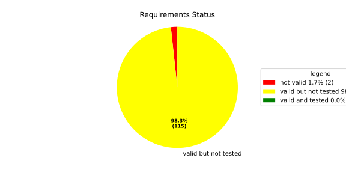
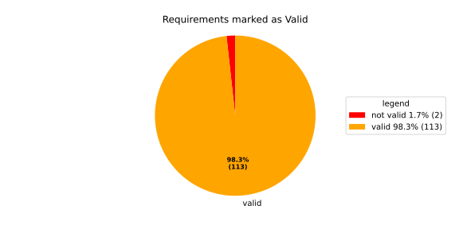
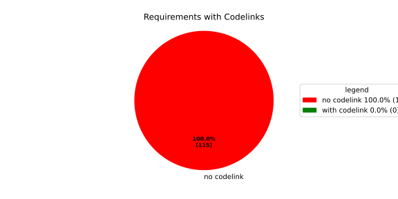

Component Requirements Statistics#
Overview#

In Detail#


No needs passed the filters
Failed Tests
Hint: This table should be empty. Before a PR can be merged all tests have to be successful.
No needs passed the filters
Skipped / Disabled Tests
No needs passed the filters
All passed Tests#
No needs passed the filters
Details About Testcases#
No needs passed the filters
No needs passed the filters
Test Log Files#
tests-report/score/health_monitor/src/rust/tests/test.log
exec ${PAGER:-/usr/bin/less} "$0" || exit 1
Executing tests from //score/health_monitor/src/rust:tests
-----------------------------------------------------------------------------
running 232 tests
test common::tests::duration_to_int_too_large - should panic ... ok
test common::tests::time_offset_diff_too_large - should panic ... ok
test common::tests::time_offset_valid ... ok
test common::tests::time_offset_wrong_order ... ok
test common::tests::time_range_from_interval_lower_too_large - should panic ... ok
test common::tests::time_range_from_interval_valid ... ok
test common::tests::time_range_new_valid ... ok
test common::tests::time_range_new_wrong_order - should panic ... ok
test deadline::common::tests::acquire_and_release_deadline ... ok
test deadline::common::tests::new_and_fields ... ok
test common::tests::duration_to_int_valid ... ok
test deadline::deadline_monitor::tests::deadline_failed_on_first_run_and_then_restarted_is_evaluated_as_error ... ok
test deadline::deadline_monitor::tests::deadline_outside_time_range_is_error_when_dropped_after_evaluate ... ok
test deadline::common::tests::concurrent_acquire ... ok
test deadline::deadline_monitor::tests::get_deadline_unknown_tag ... ok
test deadline::deadline_monitor::tests::start_stop_deadline_outside_ranges_is_evaluated_as_error ... ok
test deadline::deadline_monitor::tests::start_stop_deadline_outside_ranges_is_error_when_dropped_before_evaluate ... ok
test deadline::deadline_state::tests::as_u64_and_new ... ok
test deadline::deadline_state::tests::deadline_state_default_and_snapshot ... ok
test deadline::deadline_state::tests::deadline_state_update_none_returns_err ... ok
test deadline::deadline_state::tests::default_state ... ok
test deadline::deadline_state::tests::set_and_get_timestamp_ms ... ok
test deadline::deadline_state::tests::deadline_state_update_success ... ok
test deadline::deadline_state::tests::set_running ... ok
test deadline::deadline_state::tests::set_underrun ... ok
test deadline::ffi::tests::deadline_destroy_null_deadline ... ok
test deadline::ffi::tests::deadline_monitor_builder_add_deadline_invalid_range ... ok
test deadline::ffi::tests::deadline_monitor_builder_add_deadline_null_builder ... ok
test deadline::ffi::tests::deadline_monitor_builder_add_deadline_null_deadline_tag ... ok
test deadline::ffi::tests::deadline_monitor_builder_add_deadline_succeeds ... ok
test deadline::ffi::tests::deadline_monitor_builder_create_null_builder ... ok
test deadline::ffi::tests::deadline_monitor_builder_create_succeeds ... ok
test deadline::ffi::tests::deadline_monitor_builder_destroy_null_builder ... ok
test deadline::ffi::tests::deadline_monitor_destroy_null_monitor ... ok
test deadline::ffi::tests::deadline_monitor_get_deadline_null_deadline_handle ... ok
test deadline::ffi::tests::deadline_monitor_get_deadline_null_deadline_tag ... ok
test deadline::ffi::tests::deadline_monitor_get_deadline_null_monitor ... ok
test deadline::ffi::tests::deadline_monitor_get_deadline_unknown_deadline ... ok
test deadline::ffi::tests::deadline_monitor_get_deadline_succeeds ... ok
test deadline::ffi::tests::deadline_start_already_started ... ok
test deadline::ffi::tests::deadline_start_null_deadline ... ok
test deadline::ffi::tests::deadline_stop_null_deadline ... ok
test deadline::ffi::tests::deadline_start_succeeds ... ok
test deadline::ffi::tests::deadline_stop_succeeds ... ok
test ffi::tests::health_monitor_builder_add_deadline_monitor_null_deadline_monitor_builder ... ok
test ffi::tests::health_monitor_builder_add_deadline_monitor_null_hmon_builder ... ok
test ffi::tests::health_monitor_builder_add_deadline_monitor_null_monitor_tag ... ok
test ffi::tests::health_monitor_builder_add_deadline_monitor_succeeds ... ok
test ffi::tests::health_monitor_builder_add_heartbeat_monitor_null_hmon_builder ... ok
test ffi::tests::health_monitor_builder_add_heartbeat_monitor_null_heartbeat_monitor_builder ... ok
test ffi::tests::health_monitor_builder_add_heartbeat_monitor_null_monitor_tag ... ok
test ffi::tests::health_monitor_builder_add_heartbeat_monitor_succeeds ... ok
test ffi::tests::health_monitor_builder_add_logic_monitor_null_hmon_builder ... ok
test ffi::tests::health_monitor_builder_add_logic_monitor_null_logic_monitor_builder ... ok
test ffi::tests::health_monitor_builder_add_logic_monitor_null_monitor_tag ... ok
test ffi::tests::health_monitor_builder_add_logic_monitor_succeeds ... ok
test ffi::tests::health_monitor_builder_build_invalid_cycle_intervals ... ok
test ffi::tests::health_monitor_builder_build_no_monitors ... ok
test ffi::tests::health_monitor_builder_build_null_builder_handle ... ok
test ffi::tests::health_monitor_builder_build_null_monitor_handle ... ok
test ffi::tests::health_monitor_builder_build_succeeds ... ok
test ffi::tests::health_monitor_builder_build_thread_parameters ... ok
test ffi::tests::health_monitor_builder_build_valid_cycle_intervals_succeeds ... ok
test ffi::tests::health_monitor_builder_create_null_handle ... ok
test ffi::tests::health_monitor_builder_create_succeeds ... ok
test ffi::tests::health_monitor_builder_destroy_null_handle ... ok
test ffi::tests::health_monitor_destroy_null_hmon ... ok
test ffi::tests::health_monitor_get_deadline_monitor_already_taken ... ok
test ffi::tests::health_monitor_get_deadline_monitor_null_deadline_monitor ... ok
test ffi::tests::health_monitor_get_deadline_monitor_null_hmon ... ok
test ffi::tests::health_monitor_get_deadline_monitor_null_monitor_tag ... ok
test ffi::tests::health_monitor_get_deadline_monitor_succeeds ... ok
test ffi::tests::health_monitor_get_heartbeat_monitor_already_taken ... ok
test ffi::tests::health_monitor_get_heartbeat_monitor_null_heartbeat_monitor ... ok
test ffi::tests::health_monitor_get_heartbeat_monitor_null_monitor_tag ... ok
test ffi::tests::health_monitor_get_heartbeat_monitor_null_hmon ... ok
test ffi::tests::health_monitor_get_heartbeat_monitor_succeeds ... ok
test ffi::tests::health_monitor_get_logic_monitor_already_taken ... ok
test ffi::tests::health_monitor_get_logic_monitor_null_hmon ... ok
test ffi::tests::health_monitor_get_logic_monitor_null_logic_monitor ... ok
test ffi::tests::health_monitor_get_logic_monitor_null_monitor_tag ... ok
test ffi::tests::health_monitor_get_logic_monitor_succeeds ... ok
test ffi::tests::health_monitor_start_null_hmon ... ok
test ffi::tests::health_monitor_start_monitor_not_taken ... ok
test health_monitor::tests::health_monitor_builder_build_invalid_cycles ... ok
test health_monitor::tests::health_monitor_builder_build_no_monitors ... ok
test health_monitor::tests::health_monitor_builder_build_succeeds ... ok
test health_monitor::tests::health_monitor_builder_new_succeeds ... ok
test health_monitor::tests::health_monitor_get_deadline_monitor_available ... ok
test health_monitor::tests::health_monitor_get_deadline_monitor_invalid_state ... ok
test health_monitor::tests::health_monitor_get_deadline_monitor_taken ... ok
test health_monitor::tests::health_monitor_get_deadline_monitor_unknown ... ok
test health_monitor::tests::health_monitor_get_heartbeat_monitor_available ... ok
test health_monitor::tests::health_monitor_get_heartbeat_monitor_invalid_state ... ok
test health_monitor::tests::health_monitor_get_heartbeat_monitor_taken ... ok
test health_monitor::tests::health_monitor_get_heartbeat_monitor_unknown ... ok
test health_monitor::tests::health_monitor_get_logic_monitor_available ... ok
test health_monitor::tests::health_monitor_get_logic_monitor_invalid_state ... ok
[2026/06/01 13:07:08.7969051][7815][HMON][INFO] Monitoring thread started.
[2026/06/01 13:07:08.7969244][7815][HMON][INFO] Monitoring thread exiting.
test ffi::tests::health_monitor_start_succeeds ... ok
test health_monitor::tests::health_monitor_get_logic_monitor_taken ... ok
test health_monitor::tests::health_monitor_get_logic_monitor_unknown ... ok
[2026/06/01 13:07:08.7984349][7815][HMON][INFO] Monitoring thread started.
[2026/06/01 13:07:08.7984505][7815][HMON][INFO] Monitoring thread exiting.
test health_monitor::tests::health_monitor_start_monitors_not_taken - should panic ... ok
test health_monitor::tests::health_monitor_start_succeeds ... ok
test heartbeat::ffi::tests::heartbeat_monitor_builder_create_invalid_range ... ok
test heartbeat::ffi::tests::heartbeat_monitor_builder_create_null_builder ... ok
test heartbeat::ffi::tests::heartbeat_monitor_builder_create_succeeds ... ok
test heartbeat::ffi::tests::heartbeat_monitor_builder_destroy_null_builder ... ok
test heartbeat::ffi::tests::heartbeat_monitor_heartbeat_null_monitor ... ok
test heartbeat::ffi::tests::heartbeat_monitor_heartbeat_succeeds ... ok
test heartbeat::ffi::tests::heartbeat_monitor_destroy_null_monitor ... ok
test deadline::deadline_monitor::tests::monitor_with_multiple_running_deadlines ... ok
test heartbeat::heartbeat_monitor::tests::heartbeat_monitor_beat_early_evaluate_early ... ok
test heartbeat::heartbeat_monitor::tests::heartbeat_monitor_beat_early_evaluate_in_range ... ok
test heartbeat::heartbeat_monitor::tests::heartbeat_monitor_beat_in_range_evaluate_in_range ... ok
test heartbeat::heartbeat_monitor::tests::heartbeat_monitor_beat_early_evaluate_late ... ok
test heartbeat::heartbeat_monitor::tests::heartbeat_monitor_builder_build_invalid_internal_processing_cycle ... ok
test heartbeat::heartbeat_monitor::tests::heartbeat_monitor_builder_build_ok ... ok
test heartbeat::heartbeat_monitor::tests::heartbeat_monitor_beat_in_range_evaluate_late ... ok
test heartbeat::heartbeat_monitor::tests::heartbeat_monitor_beat_late_evaluate_late ... ok
test heartbeat::heartbeat_monitor::tests::heartbeat_monitor_cycle_early ... ok
test heartbeat::heartbeat_monitor::tests::heartbeat_monitor_multiple_beats_early_evaluate_early ... ok
test heartbeat::heartbeat_monitor::tests::heartbeat_monitor_cycle_in_range ... ok
test heartbeat::heartbeat_monitor::tests::heartbeat_monitor_multiple_beats_early_evaluate_in_range ... ok
test heartbeat::heartbeat_monitor::tests::heartbeat_monitor_multiple_beats_in_range_evaluate_in_range ... ok
test heartbeat::heartbeat_monitor::tests::heartbeat_monitor_cycle_late ... ok
test heartbeat::heartbeat_monitor::tests::heartbeat_monitor_multiple_beats_early_evaluate_late ... ok
test heartbeat::heartbeat_monitor::tests::heartbeat_monitor_no_beat_evaluate_early ... ok
test heartbeat::heartbeat_monitor::tests::heartbeat_monitor_no_beat_evaluate_in_range ... ok
test heartbeat::heartbeat_monitor::tests::heartbeat_monitor_multiple_beats_in_range_evaluate_late ... ok
test heartbeat::heartbeat_monitor::tests::heartbeat_monitor_multiple_beats_late_evaluate_late ... ok
test heartbeat::heartbeat_state::tests::snapshot_counter_increment ... ok
test heartbeat::heartbeat_state::tests::snapshot_default ... ok
test heartbeat::heartbeat_state::tests::snapshot_from_u64_max ... ok
test heartbeat::heartbeat_state::tests::snapshot_from_u64_valid ... ok
test heartbeat::heartbeat_state::tests::snapshot_from_u64_zero ... ok
test heartbeat::heartbeat_state::tests::snapshot_new_succeeds ... ok
test heartbeat::heartbeat_state::tests::snapshot_set_heartbeat_timestamp_out_of_range - should panic ... ok
test heartbeat::heartbeat_state::tests::snapshot_set_heartbeat_timestamp_valid ... ok
test heartbeat::heartbeat_state::tests::state_default ... ok
test heartbeat::heartbeat_state::tests::state_new ... ok
test heartbeat::heartbeat_state::tests::state_reset ... ok
test heartbeat::heartbeat_state::tests::state_snapshot ... ok
test heartbeat::heartbeat_state::tests::state_update_none ... ok
test heartbeat::heartbeat_state::tests::state_update_some ... ok
test logic::ffi::tests::logic_monitor_builder_add_state_null_allowed_states_many_elements ... ok
test logic::ffi::tests::logic_monitor_builder_add_state_null_allowed_states_zero_elements ... ok
test logic::ffi::tests::logic_monitor_builder_add_state_null_builder ... ok
test logic::ffi::tests::logic_monitor_builder_add_state_null_tag ... ok
test logic::ffi::tests::logic_monitor_builder_add_state_succeeds ... ok
test logic::ffi::tests::logic_monitor_builder_create_null_builder ... ok
test logic::ffi::tests::logic_monitor_builder_create_null_initial_state ... ok
test logic::ffi::tests::logic_monitor_builder_create_succeeds ... ok
test logic::ffi::tests::logic_monitor_builder_destroy_null_builder ... ok
test logic::ffi::tests::logic_monitor_destroy_null_monitor ... ok
test logic::ffi::tests::logic_monitor_state_fails ... ok
test logic::ffi::tests::logic_monitor_state_null_monitor ... ok
test logic::ffi::tests::logic_monitor_state_null_state ... ok
test logic::ffi::tests::logic_monitor_state_succeeds ... ok
test logic::ffi::tests::logic_monitor_transition_fails ... ok
test logic::ffi::tests::logic_monitor_transition_null_monitor ... ok
test logic::ffi::tests::logic_monitor_transition_null_target_state ... ok
test logic::ffi::tests::logic_monitor_transition_succeeds ... ok
test logic::logic_monitor::tests::logic_monitor_builder_build_no_states ... ok
test logic::logic_monitor::tests::logic_monitor_builder_build_succeeds ... ok
test logic::logic_monitor::tests::logic_monitor_builder_build_undefined_initial_state ... ok
test logic::logic_monitor::tests::logic_monitor_builder_build_undefined_target ... ok
test logic::logic_monitor::tests::logic_monitor_builder_new_succeeds ... ok
test logic::logic_monitor::tests::logic_monitor_evaluate_invalid_state ... ok
test logic::logic_monitor::tests::logic_monitor_evaluate_invalid_transition ... ok
test logic::logic_monitor::tests::logic_monitor_evaluate_succeeds ... ok
test logic::logic_monitor::tests::logic_monitor_state_indeterminate_current_state ... ok
test logic::logic_monitor::tests::logic_monitor_state_succeeds ... ok
test logic::logic_monitor::tests::logic_monitor_transition_indeterminate_current_state ... ok
test logic::logic_monitor::tests::logic_monitor_transition_invalid_transition ... ok
test logic::logic_monitor::tests::logic_monitor_transition_succeeds ... ok
test logic::logic_monitor::tests::logic_monitor_transition_unknown_node ... ok
test logic::logic_state::tests::snapshot_from_u64_max ... ok
test logic::logic_state::tests::snapshot_from_u64_valid ... ok
test logic::logic_state::tests::snapshot_from_u64_zero ... ok
test logic::logic_state::tests::snapshot_new_succeeds ... ok
test logic::logic_state::tests::snapshot_set_current_state_index_valid ... ok
test logic::logic_state::tests::snapshot_set_heartbeat_timestamp_out_of_range - should panic ... ok
test logic::logic_state::tests::snapshot_set_monitor_status_valid ... ok
test logic::logic_state::tests::state_new ... ok
test logic::logic_state::tests::state_snapshot ... ok
test logic::logic_state::tests::state_swap ... ok
test tag::tests::deadline_tag_debug ... ok
test tag::tests::deadline_tag_from_str ... ok
test tag::tests::deadline_tag_from_string ... ok
test tag::tests::deadline_tag_new ... ok
test tag::tests::deadline_tag_score_debug ... ok
test tag::tests::monitor_tag_debug ... ok
test tag::tests::monitor_tag_from_str ... ok
test tag::tests::monitor_tag_from_string ... ok
test tag::tests::monitor_tag_new ... ok
test tag::tests::monitor_tag_score_debug ... ok
test tag::tests::state_tag_debug ... ok
test tag::tests::state_tag_from_str ... ok
test tag::tests::state_tag_from_string ... ok
test tag::tests::state_tag_new ... ok
test tag::tests::state_tag_score_debug ... ok
test tag::tests::tag_debug ... ok
test tag::tests::tag_hash_is_eq ... ok
test tag::tests::tag_hash_is_ne ... ok
test tag::tests::tag_new ... ok
test tag::tests::tag_partial_eq_is_eq ... ok
test tag::tests::tag_partial_eq_is_ne ... ok
test tag::tests::tag_score_debug ... ok
test tag::tests::test_from_str ... ok
test tag::tests::test_from_string ... ok
test thread_ffi::tests::scheduler_policy_priority_max_null_priority ... ok
test thread_ffi::tests::scheduler_policy_priority_max_succeeds ... ok
test thread_ffi::tests::scheduler_policy_priority_min_null_priority ... ok
test thread_ffi::tests::scheduler_policy_priority_min_succeeds ... ok
test thread_ffi::tests::thread_parameters_affinity_null_affinity_many_elements ... ok
test thread_ffi::tests::thread_parameters_affinity_null_affinity_zero_elements ... ok
test thread_ffi::tests::thread_parameters_affinity_null_handle ... ok
test thread_ffi::tests::thread_parameters_affinity_succeeds ... ok
test thread_ffi::tests::thread_parameters_create_succeeds ... ok
test thread_ffi::tests::thread_parameters_destroy_null_handle ... ok
test thread_ffi::tests::thread_parameters_scheduler_parameters_invalid_priority ... ok
test thread_ffi::tests::thread_parameters_scheduler_parameters_null_handle ... ok
test thread_ffi::tests::thread_parameters_scheduler_parameters_succeeds ... ok
test thread_ffi::tests::thread_parameters_stack_size_null_handle ... ok
test thread_ffi::tests::thread_parameters_stack_size_succeeds ... ok
test worker::tests::monitoring_logic_report_alive_on_each_call_when_no_error ... ok
test heartbeat::heartbeat_monitor::tests::heartbeat_monitor_no_beat_evaluate_late ... ok
test worker::tests::monitoring_logic_report_error_when_deadline_failed ... ok
[2026/06/01 13:07:09.7562980][7815][HMON][INFO] Monitoring thread started.
test deadline::deadline_monitor::tests::start_stop_deadline_within_range_works ... ok
[2026/06/01 13:07:09.8167115][7815][HMON][WARN] Deadline (DeadlineTag(deadline_fast)) missed! Expected: 50, now: 60
[2026/06/01 13:07:09.8167394][7815][HMON][WARN] Deadline monitor with tag MonitorTag(deadline_monitor) reported error: TooLate.
[2026/06/01 13:07:09.8167466][7815][HMON][WARN] One or more monitors reported errors, skipping AliveAPI notification.
[2026/06/01 13:07:09.8167535][7815][HMON][INFO] Monitoring logic failed, stopping thread.
[2026/06/01 13:07:09.8167586][7815][HMON][INFO] Monitoring thread exiting.
test worker::tests::monitoring_logic_report_alive_respect_cycle ... ok
test worker::tests::unique_thread_runner_monitoring_works ... ok
test heartbeat::heartbeat_monitor::tests::heartbeat_monitor_timestamp_offset ... ok
test result: ok. 232 passed; 0 failed; 0 ignored; 0 measured; 0 filtered out; finished in 1.27s
tests-report/score/health_monitor/src/rust/loom_tests/test.log
exec ${PAGER:-/usr/bin/less} "$0" || exit 1
Executing tests from //score/health_monitor/src/rust:loom_tests
-----------------------------------------------------------------------------
running 3 tests
test heartbeat::heartbeat_monitor::loom_tests::heartbeat_monitor_heartbeat_evaluate_too_early ... ok
test heartbeat::heartbeat_monitor::loom_tests::heartbeat_monitor_heartbeat_evaluate_in_range ... ok
test heartbeat::heartbeat_monitor::loom_tests::heartbeat_monitor_heartbeat_evaluate_too_late ... ok
test result: ok. 3 passed; 0 failed; 0 ignored; 0 measured; 0 filtered out; finished in 0.70s
tests-report/score/health_monitor/src/cpp/cpp_integration_tests/test.log
exec ${PAGER:-/usr/bin/less} "$0" || exit 1
Executing tests from //score/health_monitor/src/cpp:cpp_integration_tests
-----------------------------------------------------------------------------
Running main() from gmock_main.cc
[==========] Running 1 test from 1 test suite.
[----------] Global test environment set-up.
[----------] 1 test from HealthMonitorTest
[ RUN ] HealthMonitorTest.Integrated
[2026/06/05 09:54:42.0717292][score/health_monitor/src/rust/deadline/deadline_monitor.rs:217][4986][HMON][ERROR] Deadline DeadlineTag(deadline_1) stopped too early by 100 ms
[2026/06/05 09:54:42.0717485][score/health_monitor/src/rust/worker.rs:121][4986][HMON][INFO] Monitoring thread started.
[2026/06/05 09:54:42.0717714][score/health_monitor/src/rust/worker.rs:139][4986][HMON][INFO] Monitoring thread exiting.
[ OK ] HealthMonitorTest.Integrated (3 ms)
[----------] 1 test from HealthMonitorTest (3 ms total)
[----------] Global test environment tear-down
[==========] 1 test from 1 test suite ran. (3 ms total)
[ PASSED ] 1 test.
tests-report/score/health_monitor/src/cpp/cpp_unit_tests/test.log
exec ${PAGER:-/usr/bin/less} "$0" || exit 1
Executing tests from //score/health_monitor/src/cpp:cpp_unit_tests
-----------------------------------------------------------------------------
Running main() from gmock_main.cc
[==========] Running 33 tests from 10 test suites.
[----------] Global test environment set-up.
[----------] 2 tests from DeadlineMonitorBuilderFixture
[ RUN ] DeadlineMonitorBuilderFixture.New_Succeeds
[ OK ] DeadlineMonitorBuilderFixture.New_Succeeds (0 ms)
[ RUN ] DeadlineMonitorBuilderFixture.AddDeadline_Succeeds
[ OK ] DeadlineMonitorBuilderFixture.AddDeadline_Succeeds (0 ms)
[----------] 2 tests from DeadlineMonitorBuilderFixture (0 ms total)
[----------] 2 tests from DeadlineMonitorFixture
[ RUN ] DeadlineMonitorFixture.GetDeadline_Succeeds
[ OK ] DeadlineMonitorFixture.GetDeadline_Succeeds (0 ms)
[ RUN ] DeadlineMonitorFixture.GetDeadline_Unknown
[ OK ] DeadlineMonitorFixture.GetDeadline_Unknown (0 ms)
[----------] 2 tests from DeadlineMonitorFixture (0 ms total)
[----------] 2 tests from DeadlineFixture
[ RUN ] DeadlineFixture.Start_Succeeds
[2026/06/05 09:54:43.4389358][score/health_monitor/src/rust/deadline/deadline_monitor.rs:217][5018][HMON][ERROR] Deadline DeadlineTag(deadline) stopped too early by 50 ms
[ OK ] DeadlineFixture.Start_Succeeds (0 ms)
[ RUN ] DeadlineFixture.Start_AlreadyRunning
[2026/06/05 09:54:43.4389870][score/health_monitor/src/rust/deadline/deadline_monitor.rs:217][5018][HMON][ERROR] Deadline DeadlineTag(deadline) stopped too early by 50 ms
[2026/06/05 09:54:43.4389935][score/health_monitor/src/rust/deadline/deadline_monitor.rs:172][5018][HMON][WARN] Trying to start deadline DeadlineTag(deadline) that already failed
[ OK ] DeadlineFixture.Start_AlreadyRunning (0 ms)
[----------] 2 tests from DeadlineFixture (0 ms total)
[----------] 4 tests from HealthMonitorBuilderFixture
[ RUN ] HealthMonitorBuilderFixture.New_Succeeds
[ OK ] HealthMonitorBuilderFixture.New_Succeeds (0 ms)
[ RUN ] HealthMonitorBuilderFixture.Build_Succeeds
[ OK ] HealthMonitorBuilderFixture.Build_Succeeds (0 ms)
[ RUN ] HealthMonitorBuilderFixture.Build_InvalidCycles
[2026/06/05 09:54:43.4390903][score/health_monitor/src/rust/health_monitor.rs:134][5018][HMON][ERROR] Supervisor API cycle duration (123 ms) must be a multiple of internal processing cycle interval (100 ms).
[ OK ] HealthMonitorBuilderFixture.Build_InvalidCycles (0 ms)
[ RUN ] HealthMonitorBuilderFixture.Build_NoMonitors
[2026/06/05 09:54:43.4391104][score/health_monitor/src/rust/health_monitor.rs:146][5018][HMON][ERROR] No monitors have been added. HealthMonitor cannot be created.
[ OK ] HealthMonitorBuilderFixture.Build_NoMonitors (0 ms)
[----------] 4 tests from HealthMonitorBuilderFixture (0 ms total)
[----------] 11 tests from HealthMonitor
[ RUN ] HealthMonitor.GetDeadlineMonitor_Available
[ OK ] HealthMonitor.GetDeadlineMonitor_Available (0 ms)
[ RUN ] HealthMonitor.GetDeadlineMonitor_Taken
[ OK ] HealthMonitor.GetDeadlineMonitor_Taken (0 ms)
[ RUN ] HealthMonitor.GetDeadlineMonitor_Unknown
[ OK ] HealthMonitor.GetDeadlineMonitor_Unknown (0 ms)
[ RUN ] HealthMonitor.GetHeartbeatMonitor_Available
[ OK ] HealthMonitor.GetHeartbeatMonitor_Available (0 ms)
[ RUN ] HealthMonitor.GetHeartbeatMonitor_Taken
[ OK ] HealthMonitor.GetHeartbeatMonitor_Taken (0 ms)
[ RUN ] HealthMonitor.GetHeartbeatMonitor_Unknown
[ OK ] HealthMonitor.GetHeartbeatMonitor_Unknown (0 ms)
[ RUN ] HealthMonitor.GetLogicMonitor_Available
[ OK ] HealthMonitor.GetLogicMonitor_Available (0 ms)
[ RUN ] HealthMonitor.GetLogicMonitor_Taken
[ OK ] HealthMonitor.GetLogicMonitor_Taken (0 ms)
[ RUN ] HealthMonitor.GetLogicMonitor_Unknown
[ OK ] HealthMonitor.GetLogicMonitor_Unknown (0 ms)
[ RUN ] HealthMonitor.Start_Succeeds
[2026/06/05 09:54:43.4393663][score/health_monitor/src/rust/worker.rs:121][5018][HMON][INFO] Monitoring thread started.
[2026/06/05 09:54:43.4393754][score/health_monitor/src/rust/worker.rs:139][5018][HMON][INFO] Monitoring thread exiting.
[ OK ] HealthMonitor.Start_Succeeds (0 ms)
[ RUN ] HealthMonitor.Start_MonitorsNotTaken
[2026/06/05 09:54:43.4400290][score/health_monitor/src/rust/health_monitor.rs:307][5023][HMON][ERROR] All monitors must be taken before starting HealthMonitor but MonitorTag(deadline_monitor) is not taken.
[ OK ] HealthMonitor.Start_MonitorsNotTaken (158 ms)
[----------] 11 tests from HealthMonitor (158 ms total)
[----------] 1 test from HeartbeatMonitorBuilder
[ RUN ] HeartbeatMonitorBuilder.New_Succeeds
[ OK ] HeartbeatMonitorBuilder.New_Succeeds (0 ms)
[----------] 1 test from HeartbeatMonitorBuilder (0 ms total)
[----------] 1 test from HeartbeatMonitor
[ RUN ] HeartbeatMonitor.Heartbeat_Succeeds
[ OK ] HeartbeatMonitor.Heartbeat_Succeeds (0 ms)
[----------] 1 test from HeartbeatMonitor (0 ms total)
[----------] 2 tests from LogicMonitorBuilderFixture
[ RUN ] LogicMonitorBuilderFixture.New_Succeeds
[ OK ] LogicMonitorBuilderFixture.New_Succeeds (0 ms)
[ RUN ] LogicMonitorBuilderFixture.AddState_Succeeds
[ OK ] LogicMonitorBuilderFixture.AddState_Succeeds (0 ms)
[----------] 2 tests from LogicMonitorBuilderFixture (0 ms total)
[----------] 5 tests from LogicMonitorFixture
[ RUN ] LogicMonitorFixture.Transition_Succeeds
[ OK ] LogicMonitorFixture.Transition_Succeeds (0 ms)
[ RUN ] LogicMonitorFixture.Transition_Unknown
[2026/06/05 09:54:43.5978984][score/health_monitor/src/rust/logic/logic_monitor.rs:265][5018][HMON][WARN] Requested state transition is invalid: StateTag(state1) -> StateTag(unknown)
[ OK ] LogicMonitorFixture.Transition_Unknown (0 ms)
[ RUN ] LogicMonitorFixture.Transition_Invalid
[2026/06/05 09:54:43.5979562][score/health_monitor/src/rust/logic/logic_monitor.rs:265][5018][HMON][WARN] Requested state transition is invalid: StateTag(state1) -> StateTag(unknown)
[2026/06/05 09:54:43.5979644][score/health_monitor/src/rust/logic/logic_monitor.rs:254][5018][HMON][WARN] Current logic monitor state cannot be determined
[ OK ] LogicMonitorFixture.Transition_Invalid (0 ms)
[ RUN ] LogicMonitorFixture.State_Succeeds
[ OK ] LogicMonitorFixture.State_Succeeds (0 ms)
[ RUN ] LogicMonitorFixture.State_Invalid
[2026/06/05 09:54:43.5980688][score/health_monitor/src/rust/logic/logic_monitor.rs:265][5018][HMON][WARN] Requested state transition is invalid: StateTag(state1) -> StateTag(unknown)
[2026/06/05 09:54:43.5980816][score/health_monitor/src/rust/logic/logic_monitor.rs:290][5018][HMON][WARN] Current logic monitor state cannot be determined
[ OK ] LogicMonitorFixture.State_Invalid (0 ms)
[----------] 5 tests from LogicMonitorFixture (0 ms total)
[----------] 3 tests from TimeRangeFixture
[ RUN ] TimeRangeFixture.New_Succeeds
[ OK ] TimeRangeFixture.New_Succeeds (0 ms)
[ RUN ] TimeRangeFixture.New_InvalidOrder
[ OK ] TimeRangeFixture.New_InvalidOrder (149 ms)
[ RUN ] TimeRangeFixture.MinMax
[ OK ] TimeRangeFixture.MinMax (0 ms)
[----------] 3 tests from TimeRangeFixture (149 ms total)
[----------] Global test environment tear-down
[==========] 33 tests from 10 test suites ran. (309 ms total)
[ PASSED ] 33 tests.
tests-report/score/launch_manager/exec_error_domain_UT/test.log
exec ${PAGER:-/usr/bin/less} "$0" || exit 1
Executing tests from //score/launch_manager:exec_error_domain_UT
-----------------------------------------------------------------------------
Running main() from gmock_main.cc
[==========] Running 3 tests from 1 test suite.
[----------] Global test environment set-up.
[----------] 3 tests from ExecErrorDomainTest
[ RUN ] ExecErrorDomainTest.AllKnownCodesReturnNonEmptyMessage
[ OK ] ExecErrorDomainTest.AllKnownCodesReturnNonEmptyMessage (0 ms)
[ RUN ] ExecErrorDomainTest.AllKnownCodesHaveDistinctMessages
[ OK ] ExecErrorDomainTest.AllKnownCodesHaveDistinctMessages (0 ms)
[ RUN ] ExecErrorDomainTest.UnknownCodeReturnsNonEmptyMessage
[ OK ] ExecErrorDomainTest.UnknownCodeReturnsNonEmptyMessage (0 ms)
[----------] 3 tests from ExecErrorDomainTest (0 ms total)
[----------] Global test environment tear-down
[==========] 3 tests from 1 test suite ran. (0 ms total)
[ PASSED ] 3 tests.
tests-report/score/launch_manager/daemon/src/process_state_client/process_state_client_ut/test.log
exec ${PAGER:-/usr/bin/less} "$0" || exit 1
Executing tests from //score/launch_manager/daemon/src/process_state_client:process_state_client_ut
-----------------------------------------------------------------------------
Running main() from gmock_main.cc
[==========] Running 4 tests from 1 test suite.
[----------] Global test environment set-up.
[----------] 4 tests from ProcessStateClient_UT
[ RUN ] ProcessStateClient_UT.ProcessStateClient_ConstructReceiver_Succeeds
[ OK ] ProcessStateClient_UT.ProcessStateClient_ConstructReceiver_Succeeds (0 ms)
[ RUN ] ProcessStateClient_UT.ProcessStateClient_QueueOneProcess_Succeeds
[ OK ] ProcessStateClient_UT.ProcessStateClient_QueueOneProcess_Succeeds (0 ms)
[ RUN ] ProcessStateClient_UT.ProcessStateClient_QueueMaxNumberOfProcesses_Succeeds
[ OK ] ProcessStateClient_UT.ProcessStateClient_QueueMaxNumberOfProcesses_Succeeds (8 ms)
[ RUN ] ProcessStateClient_UT.ProcessStateClient_QueueOneProcessTooMany_Fails
mw::log initialization error: Error No logging configuration files could be found. occurred with context information: Failed to load configuration files. Fallback to console logging.
2026/06/01 13:07:07.9227519 1538361 000 ECU1 NONE LM log error verbose 1 Failed to queue posix process
2026/06/01 13:07:07.9227520 1538363 000 ECU1 NONE LM log error verbose 1 ProcessStateReceiver::getNextChangedPosixProcess: Overflow occurred, will be reported as kCommunicationError
[ OK ] ProcessStateClient_UT.ProcessStateClient_QueueOneProcessTooMany_Fails (5 ms)
[----------] 4 tests from ProcessStateClient_UT (15 ms total)
[----------] Global test environment tear-down
[==========] 4 tests from 1 test suite ran. (15 ms total)
[ PASSED ] 4 tests.
tests-report/score/launch_manager/daemon/src/recovery_client/recovery_client_UT/test.log
exec ${PAGER:-/usr/bin/less} "$0" || exit 1
Executing tests from //score/launch_manager/daemon/src/recovery_client:recovery_client_UT
-----------------------------------------------------------------------------
Running main() from gmock_main.cc
[==========] Running 5 tests from 1 test suite.
[----------] Global test environment set-up.
[----------] 5 tests from RecoveryClientTest
[ RUN ] RecoveryClientTest.SendSingleRequest
[ OK ] RecoveryClientTest.SendSingleRequest (0 ms)
[ RUN ] RecoveryClientTest.GetNextRequest
[ OK ] RecoveryClientTest.GetNextRequest (0 ms)
[ RUN ] RecoveryClientTest.GetNextRequestEmpty
[ OK ] RecoveryClientTest.GetNextRequestEmpty (0 ms)
[ RUN ] RecoveryClientTest.RingBufferFull
[ OK ] RecoveryClientTest.RingBufferFull (0 ms)
[ RUN ] RecoveryClientTest.FIFOOrdering
[ OK ] RecoveryClientTest.FIFOOrdering (0 ms)
[----------] 5 tests from RecoveryClientTest (0 ms total)
[----------] Global test environment tear-down
[==========] 5 tests from 1 test suite ran. (0 ms total)
[ PASSED ] 5 tests.
tests-report/score/launch_manager/daemon/src/alive_monitor/details/MonitorImpl_UT/test.log
exec ${PAGER:-/usr/bin/less} "$0" || exit 1
Executing tests from //score/launch_manager/daemon/src/alive_monitor/details:MonitorImpl_UT
-----------------------------------------------------------------------------
Running main() from gmock_main.cc
[==========] Running 3 tests from 1 test suite.
[----------] Global test environment set-up.
[----------] 3 tests from MonitorImplTest
[ RUN ] MonitorImplTest.ThrowsWhenInterfacePathEnvVarIsNotSet
mw::log initialization error: Error No logging configuration files could be found. occurred with context information: Failed to load configuration files. Fallback to console logging.
2026/06/05 09:40:17.2417211 1457806 000 ECU1 NONE Sprv log error verbose 3 Failed to load interface path for Monitor ( test/instance )
[ OK ] MonitorImplTest.ThrowsWhenInterfacePathEnvVarIsNotSet (6 ms)
[ RUN ] MonitorImplTest.DoesNotThrowWhenInterfacePathEnvVarIsSet
2026/06/05 09:40:17.2417214 1457832 000 ECU1 NONE Sprv log error verbose 3 Connection to PHM daemon failed, for the Monitor ( test/instance )
[ OK ] MonitorImplTest.DoesNotThrowWhenInterfacePathEnvVarIsSet (0 ms)
[ RUN ] MonitorImplTest.ReportCheckpointSafeWhenNotConnected
2026/06/05 09:40:17.2417214 1457833 000 ECU1 NONE Sprv log error verbose 3 Connection to PHM daemon failed, for the Monitor ( test/instance )
[ OK ] MonitorImplTest.ReportCheckpointSafeWhenNotConnected (0 ms)
[----------] 3 tests from MonitorImplTest (8 ms total)
[----------] Global test environment tear-down
[==========] 3 tests from 1 test suite ran. (9 ms total)
[ PASSED ] 3 tests.
tests-report/score/launch_manager/daemon/src/alive_monitor/details/supervision/Alive_UT/test.log
exec ${PAGER:-/usr/bin/less} "$0" || exit 1
Executing tests from //score/launch_manager/daemon/src/alive_monitor/details/supervision:Alive_UT
-----------------------------------------------------------------------------
Running main() from gmock_main.cc
[==========] Running 4 tests from 1 test suite.
[----------] Global test environment set-up.
[----------] 4 tests from AliveSupervisionTest
[ RUN ] AliveSupervisionTest.AliveTransitionsOkToExpiredOnMissingHeartbeat
mw::log initialization error: Error No logging configuration files could be found. occurred with context information: Failed to load configuration files. Fallback to console logging.
2026/06/03 10:29:52.2592505 1296245 000 ECU1 NONE Sprv log warn verbose 13 Alive Supervision ( test_alive ) switched to EXPIRED , due to 0 reported alive indication(s) (expected >= 1 ). Failed supervision cycles: 0 / 0
[ OK ] AliveSupervisionTest.AliveTransitionsOkToExpiredOnMissingHeartbeat (5 ms)
[ RUN ] AliveSupervisionTest.AliveStaysOkWithCorrectHeartbeats
[ OK ] AliveSupervisionTest.AliveStaysOkWithCorrectHeartbeats (0 ms)
[ RUN ] AliveSupervisionTest.AliveReportsEnqueueFailureWhenRingBufferFull
2026/06/03 10:29:52.2592506 1296255 000 ECU1 NONE Sprv log warn verbose 13 Alive Supervision ( test_alive ) switched to EXPIRED , due to 0 reported alive indication(s) (expected >= 1 ). Failed supervision cycles: 0 / 0
2026/06/03 10:29:52.2592506 1296256 000 ECU1 NONE Sprv log error verbose 3 Failed to enqueue recovery request for alive supervision test_alive failure (ring buffer full)
[ OK ] AliveSupervisionTest.AliveReportsEnqueueFailureWhenRingBufferFull (0 ms)
[ RUN ] AliveSupervisionTest.AliveDebouncesThroughFailedBeforeExpired
2026/06/03 10:29:52.2592506 1296257 000 ECU1 NONE Sprv log warn verbose 13 Alive Supervision ( test_alive ) switched to FAILED , due to 0 reported alive indication(s) (expected >= 1 ). Failed supervision cycles: 1 / 1
2026/06/03 10:29:52.2592506 1296258 000 ECU1 NONE Sprv log warn verbose 13 Alive Supervision ( test_alive ) switched to EXPIRED , due to 0 reported alive indication(s) (expected >= 1 ). Failed supervision cycles: 2 / 1
[ OK ] AliveSupervisionTest.AliveDebouncesThroughFailedBeforeExpired (0 ms)
[----------] 4 tests from AliveSupervisionTest (5 ms total)
[----------] Global test environment tear-down
[==========] 4 tests from 1 test suite ran. (6 ms total)
[ PASSED ] 4 tests.
tests-report/score/launch_manager/daemon/src/alive_monitor/details/ifappl/MonitorIfDaemon_UT/test.log
exec ${PAGER:-/usr/bin/less} "$0" || exit 1
Executing tests from //score/launch_manager/daemon/src/alive_monitor/details/ifappl:MonitorIfDaemon_UT
-----------------------------------------------------------------------------
Running main() from gmock_main.cc
[==========] Running 16 tests from 1 test suite.
[----------] Global test environment set-up.
[----------] 16 tests from MonitorIfDaemonTest
[ RUN ] MonitorIfDaemonTest.GetInterfaceName_ReturnsNameGivenAtConstruction
mw::log initialization error: Error No logging configuration files could be found. occurred with context information: Failed to load configuration files. Fallback to console logging.
[ OK ] MonitorIfDaemonTest.GetInterfaceName_ReturnsNameGivenAtConstruction (2 ms)
[ RUN ] MonitorIfDaemonTest.InitiallyInactive_CheckForNewData_DoesNotNotifyCheckpoint
[ OK ] MonitorIfDaemonTest.InitiallyInactive_CheckForNewData_DoesNotNotifyCheckpoint (0 ms)
[ RUN ] MonitorIfDaemonTest.ProcessOffBeforeActivation_RemainsInactive
[ OK ] MonitorIfDaemonTest.ProcessOffBeforeActivation_RemainsInactive (0 ms)
[ RUN ] MonitorIfDaemonTest.ProcessRunning_ActivatesMonitorOnNextCheckForNewData
[ OK ] MonitorIfDaemonTest.ProcessRunning_ActivatesMonitorOnNextCheckForNewData (0 ms)
[ RUN ] MonitorIfDaemonTest.ProcessStarting_AlsoActivatesMonitor
[ OK ] MonitorIfDaemonTest.ProcessStarting_AlsoActivatesMonitor (0 ms)
[ RUN ] MonitorIfDaemonTest.ProcessOff_DeactivatesMonitor_NoFurtherDataForwarded
[ OK ] MonitorIfDaemonTest.ProcessOff_DeactivatesMonitor_NoFurtherDataForwarded (0 ms)
[ RUN ] MonitorIfDaemonTest.Active_CheckpointDataForwarded
[ OK ] MonitorIfDaemonTest.Active_CheckpointDataForwarded (0 ms)
[ RUN ] MonitorIfDaemonTest.Active_FutureTimestamp_NotForwardedInCurrentCycle
[ OK ] MonitorIfDaemonTest.Active_FutureTimestamp_NotForwardedInCurrentCycle (0 ms)
[ RUN ] MonitorIfDaemonTest.Active_FutureTimestampCheckpoint_ConsumedInLaterCycle
[ OK ] MonitorIfDaemonTest.Active_FutureTimestampCheckpoint_ConsumedInLaterCycle (0 ms)
[ RUN ] MonitorIfDaemonTest.Active_NonMatchingCheckpointId_NotForwarded
[ OK ] MonitorIfDaemonTest.Active_NonMatchingCheckpointId_NotForwarded (0 ms)
[ RUN ] MonitorIfDaemonTest.Active_MultipleCheckpointsInOneCycle_AllForwarded
[ OK ] MonitorIfDaemonTest.Active_MultipleCheckpointsInOneCycle_AllForwarded (0 ms)
[ RUN ] MonitorIfDaemonTest.Active_TwoAttachedCheckpoints_RoutedByCheckpointId
[ OK ] MonitorIfDaemonTest.Active_TwoAttachedCheckpoints_RoutedByCheckpointId (0 ms)
[ RUN ] MonitorIfDaemonTest.Active_OverflowDetected_TransitionsToInactiveOverflow
2026/06/03 10:29:52.2592545 1296648 000 ECU1 NONE Sprv log warn verbose 3 MonitorInterface: Potential data loss of checkpoint ring buffer occurred. Instance: test_interface
[ OK ] MonitorIfDaemonTest.Active_OverflowDetected_TransitionsToInactiveOverflow (1 ms)
[ RUN ] MonitorIfDaemonTest.InactiveOverflow_NoProcessRestart_DoesNotRepeatNotification
2026/06/03 10:29:52.2592546 1296653 000 ECU1 NONE Sprv log warn verbose 3 MonitorInterface: Potential data loss of checkpoint ring buffer occurred. Instance: test_interface
[ OK ] MonitorIfDaemonTest.InactiveOverflow_NoProcessRestart_DoesNotRepeatNotification (0 ms)
[ RUN ] MonitorIfDaemonTest.InactiveOverflow_ProcessRestarts_PushesOverflowNotificationAgain
2026/06/03 10:29:52.2592546 1296655 000 ECU1 NONE Sprv log warn verbose 3 MonitorInterface: Potential data loss of checkpoint ring buffer occurred. Instance: test_interface
[ OK ] MonitorIfDaemonTest.InactiveOverflow_ProcessRestarts_PushesOverflowNotificationAgain (0 ms)
[ RUN ] MonitorIfDaemonTest.InactiveOverflow_ProcessRestartFlag_ClearedAfterNotification
2026/06/03 10:29:52.2592546 1296658 000 ECU1 NONE Sprv log warn verbose 3 MonitorInterface: Potential data loss of checkpoint ring buffer occurred. Instance: test_interface
[ OK ] MonitorIfDaemonTest.InactiveOverflow_ProcessRestartFlag_ClearedAfterNotification (0 ms)
[----------] 16 tests from MonitorIfDaemonTest (7 ms total)
[----------] Global test environment tear-down
[==========] 16 tests from 1 test suite ran. (7 ms total)
[ PASSED ] 16 tests.
tests-report/score/launch_manager/daemon/src/process_group_manager/details/safeprocessmap_UT/test.log
exec ${PAGER:-/usr/bin/less} "$0" || exit 1
Executing tests from //score/launch_manager/daemon/src/process_group_manager/details:safeprocessmap_UT
-----------------------------------------------------------------------------
Running main() from gmock_main.cc
[==========] Running 13 tests from 1 test suite.
[----------] Global test environment set-up.
[----------] 13 tests from SafeProcessMapTest
[ RUN ] SafeProcessMapTest.ConstructWithZeroCapacity
[ OK ] SafeProcessMapTest.ConstructWithZeroCapacity (0 ms)
[ RUN ] SafeProcessMapTest.FindTerminatedWithNegativePidReturnsInvalid
[ OK ] SafeProcessMapTest.FindTerminatedWithNegativePidReturnsInvalid (0 ms)
[ RUN ] SafeProcessMapTest.FindTerminatedInsertsEntryWhenPidNotPresent
[ OK ] SafeProcessMapTest.FindTerminatedInsertsEntryWhenPidNotPresent (0 ms)
[ RUN ] SafeProcessMapTest.FindTerminatedMatchesExistingInsertAndCallsCallback
[ OK ] SafeProcessMapTest.FindTerminatedMatchesExistingInsertAndCallsCallback (0 ms)
[ RUN ] SafeProcessMapTest.InsertIntoEmptyTreeReturnsZero
[ OK ] SafeProcessMapTest.InsertIntoEmptyTreeReturnsZero (0 ms)
[ RUN ] SafeProcessMapTest.InsertMatchesExistingFindTerminatedEntry
[ OK ] SafeProcessMapTest.InsertMatchesExistingFindTerminatedEntry (0 ms)
[ RUN ] SafeProcessMapTest.InsertMultipleNodesThenFindTerminatedRemovesAll
[ OK ] SafeProcessMapTest.InsertMultipleNodesThenFindTerminatedRemovesAll (7 ms)
[ RUN ] SafeProcessMapTest.InsertBeyondCapacityReturnsOutOfMemory
[ OK ] SafeProcessMapTest.InsertBeyondCapacityReturnsOutOfMemory (2 ms)
[ RUN ] SafeProcessMapTest.InsertSamePidTwiceYieldsUntilFindTerminatedResolves
[ OK ] SafeProcessMapTest.InsertSamePidTwiceYieldsUntilFindTerminatedResolves (11 ms)
[ RUN ] SafeProcessMapTest.FindTerminatedSamePidTwiceYieldsUntilInsertResolves
[ OK ] SafeProcessMapTest.FindTerminatedSamePidTwiceYieldsUntilInsertResolves (11 ms)
[ RUN ] SafeProcessMapTest.FindTerminatedWorksAtMaxTreeDepth
[ OK ] SafeProcessMapTest.FindTerminatedWorksAtMaxTreeDepth (0 ms)
[ RUN ] SafeProcessMapTest.ConcurrentInsertAndFindFromMultipleThreads
[ OK ] SafeProcessMapTest.ConcurrentInsertAndFindFromMultipleThreads (2575 ms)
[ RUN ] SafeProcessMapTest.ConcurrentFindAndInsertFromMultipleThreads
[ OK ] SafeProcessMapTest.ConcurrentFindAndInsertFromMultipleThreads (2210 ms)
[----------] 13 tests from SafeProcessMapTest (4821 ms total)
[----------] Global test environment tear-down
[==========] 13 tests from 1 test suite ran. (4821 ms total)
[ PASSED ] 13 tests.
tests-report/score/launch_manager/daemon/src/process_group_manager/details/oshandler_UT/test.log
exec ${PAGER:-/usr/bin/less} "$0" || exit 1
Executing tests from //score/launch_manager/daemon/src/process_group_manager/details:oshandler_UT
-----------------------------------------------------------------------------
Running main() from gmock_main.cc
[==========] Running 6 tests from 1 test suite.
[----------] Global test environment set-up.
[----------] 6 tests from OsHandlerTest
[ RUN ] OsHandlerTest.WaitReturnsProcessId_FindTerminatedIsCalled
[ OK ] OsHandlerTest.WaitReturnsProcessId_FindTerminatedIsCalled (102 ms)
[ RUN ] OsHandlerTest.WaitReturnsError_OsHandlerSleepsAndDoesNotCallFindTerminated
[ OK ] OsHandlerTest.WaitReturnsError_OsHandlerSleepsAndDoesNotCallFindTerminated (101 ms)
[ RUN ] OsHandlerTest.WaitReturnsZeroPid_OsHandlerSleepsAndDoesNotCallFindTerminated
[ OK ] OsHandlerTest.WaitReturnsZeroPid_OsHandlerSleepsAndDoesNotCallFindTerminated (104 ms)
[ RUN ] OsHandlerTest.WaitReturnsProcessIdBeforeRegistration_LaterRegistrationReceivesStoredTermination
[ OK ] OsHandlerTest.WaitReturnsProcessIdBeforeRegistration_LaterRegistrationReceivesStoredTermination (102 ms)
[ RUN ] OsHandlerTest.WaitReturnsUnknownPidWhenMapIsFull_OutOfResourcesPathDoesNotNotifyCallbacks
mw::log initialization error: Error No logging configuration files could be found. occurred with context information: Failed to load configuration files. Fallback to console logging.
2026/06/03 06:59:29.9969867 1115355 000 ECU1 NONE LM log error verbose 3 No more resources available to track process with PID 9999 (SafeProcessMap capacity exceeded).
[ OK ] OsHandlerTest.WaitReturnsUnknownPidWhenMapIsFull_OutOfResourcesPathDoesNotNotifyCallbacks (112 ms)
[ RUN ] OsHandlerTest.WaitReturnsErrorThenProcessId_HandlerRecoversAndInvokesCallback
[ OK ] OsHandlerTest.WaitReturnsErrorThenProcessId_HandlerRecoversAndInvokesCallback (202 ms)
[----------] 6 tests from OsHandlerTest (813 ms total)
[----------] Global test environment tear-down
[==========] 6 tests from 1 test suite ran. (814 ms total)
[ PASSED ] 6 tests.
tests-report/score/launch_manager/daemon/src/common/identifier_hash_UT/test.log
exec ${PAGER:-/usr/bin/less} "$0" || exit 1
Executing tests from //score/launch_manager/daemon/src/common:identifier_hash_UT
-----------------------------------------------------------------------------
Running main() from gmock_main.cc
[==========] Running 7 tests from 1 test suite.
[----------] Global test environment set-up.
[----------] 7 tests from IdentifierHashTest
[ RUN ] IdentifierHashTest.IdentifierHash_with_string_view_created
[ OK ] IdentifierHashTest.IdentifierHash_with_string_view_created (0 ms)
[ RUN ] IdentifierHashTest.IdentifierHash_with_string_created
[ OK ] IdentifierHashTest.IdentifierHash_with_string_created (0 ms)
[ RUN ] IdentifierHashTest.IdentifierHash_default_created
[ OK ] IdentifierHashTest.IdentifierHash_default_created (0 ms)
[ RUN ] IdentifierHashTest.IdentifierHash_invalid_hash_no_string_representation
[ OK ] IdentifierHashTest.IdentifierHash_invalid_hash_no_string_representation (0 ms)
[ RUN ] IdentifierHashTest.IdentifierHash_no_dangling_pointer_after_source_string_dies
[ OK ] IdentifierHashTest.IdentifierHash_no_dangling_pointer_after_source_string_dies (0 ms)
[ RUN ] IdentifierHashTest.IdentifierHash_EqualityOperators
[ OK ] IdentifierHashTest.IdentifierHash_EqualityOperators (0 ms)
[ RUN ] IdentifierHashTest.IdentifierHash_LessThanOperator
[ OK ] IdentifierHashTest.IdentifierHash_LessThanOperator (0 ms)
[----------] 7 tests from IdentifierHashTest (0 ms total)
[----------] Global test environment tear-down
[==========] 7 tests from 1 test suite ran. (0 ms total)
[ PASSED ] 7 tests.
tests-report/score/launch_manager/daemon/src/common/concurrency/mpmc_concurrent_queue_tsan_test/test.log
exec ${PAGER:-/usr/bin/less} "$0" || exit 1
Executing tests from //score/launch_manager/daemon/src/common/concurrency:mpmc_concurrent_queue_tsan_test
-----------------------------------------------------------------------------
Running main() from gmock_main.cc
[==========] Running 15 tests from 5 test suites.
[----------] Global test environment set-up.
[----------] 5 tests from MPMCConcurrentQueueTest_Basic
[ RUN ] MPMCConcurrentQueueTest_Basic.PushAndPopSingleItem
[ OK ] MPMCConcurrentQueueTest_Basic.PushAndPopSingleItem (0 ms)
[ RUN ] MPMCConcurrentQueueTest_Basic.PushAndPopPreservesOrder
[ OK ] MPMCConcurrentQueueTest_Basic.PushAndPopPreservesOrder (0 ms)
[ RUN ] MPMCConcurrentQueueTest_Basic.LvaluePushCopiesItem
[ OK ] MPMCConcurrentQueueTest_Basic.LvaluePushCopiesItem (0 ms)
[ RUN ] MPMCConcurrentQueueTest_Basic.RvaluePushWorksWithMoveOnlyType
[ OK ] MPMCConcurrentQueueTest_Basic.RvaluePushWorksWithMoveOnlyType (0 ms)
[ RUN ] MPMCConcurrentQueueTest_Basic.PopReturnsNulloptOnSemaphoreWaitFailure
[ OK ] MPMCConcurrentQueueTest_Basic.PopReturnsNulloptOnSemaphoreWaitFailure (20 ms)
[----------] 5 tests from MPMCConcurrentQueueTest_Basic (21 ms total)
[----------] 2 tests from MPMCConcurrentQueueTest_Timeout
[ RUN ] MPMCConcurrentQueueTest_Timeout.PushWithTimeoutSucceedsWhenSlotAvailable
[ OK ] MPMCConcurrentQueueTest_Timeout.PushWithTimeoutSucceedsWhenSlotAvailable (0 ms)
[ RUN ] MPMCConcurrentQueueTest_Timeout.PushWithTimeoutReturnsFalseWhenFull
[ OK ] MPMCConcurrentQueueTest_Timeout.PushWithTimeoutReturnsFalseWhenFull (20 ms)
[----------] 2 tests from MPMCConcurrentQueueTest_Timeout (20 ms total)
[----------] 3 tests from MPMCConcurrentQueueTest_Stop
[ RUN ] MPMCConcurrentQueueTest_Stop.PushReturnsFalseAfterStop
[ OK ] MPMCConcurrentQueueTest_Stop.PushReturnsFalseAfterStop (0 ms)
[ RUN ] MPMCConcurrentQueueTest_Stop.PopReturnsNulloptWhenStoppedAndEmpty
[ OK ] MPMCConcurrentQueueTest_Stop.PopReturnsNulloptWhenStoppedAndEmpty (0 ms)
[ RUN ] MPMCConcurrentQueueTest_Stop.ItemsAreDroppedAfterStop
[ OK ] MPMCConcurrentQueueTest_Stop.ItemsAreDroppedAfterStop (0 ms)
[----------] 3 tests from MPMCConcurrentQueueTest_Stop (0 ms total)
[----------] 4 tests from MPMCConcurrentQueueTest_Blocking
[ RUN ] MPMCConcurrentQueueTest_Blocking.PopBlocksUntilItemAvailable
[ OK ] MPMCConcurrentQueueTest_Blocking.PopBlocksUntilItemAvailable (0 ms)
[ RUN ] MPMCConcurrentQueueTest_Blocking.PushBlocksWhenFull
[ OK ] MPMCConcurrentQueueTest_Blocking.PushBlocksWhenFull (0 ms)
[ RUN ] MPMCConcurrentQueueTest_Blocking.StopUnblocksBlockedConsumer
[ OK ] MPMCConcurrentQueueTest_Blocking.StopUnblocksBlockedConsumer (0 ms)
[ RUN ] MPMCConcurrentQueueTest_Blocking.StopUnblocksBlockedProducer
[ OK ] MPMCConcurrentQueueTest_Blocking.StopUnblocksBlockedProducer (0 ms)
[----------] 4 tests from MPMCConcurrentQueueTest_Blocking (0 ms total)
[----------] 1 test from MPMCConcurrentQueueTest_MPMC
[ RUN ] MPMCConcurrentQueueTest_MPMC.AllItemsDelivered
[ OK ] MPMCConcurrentQueueTest_MPMC.AllItemsDelivered (1 ms)
[----------] 1 test from MPMCConcurrentQueueTest_MPMC (1 ms total)
[----------] Global test environment tear-down
[==========] 15 tests from 5 test suites ran. (45 ms total)
[ PASSED ] 15 tests.
tests-report/score/launch_manager/daemon/src/common/concurrency/mpmc_concurrent_queue_test/test.log
exec ${PAGER:-/usr/bin/less} "$0" || exit 1
Executing tests from //score/launch_manager/daemon/src/common/concurrency:mpmc_concurrent_queue_test
-----------------------------------------------------------------------------
Running main() from gmock_main.cc
[==========] Running 15 tests from 5 test suites.
[----------] Global test environment set-up.
[----------] 5 tests from MPMCConcurrentQueueTest_Basic
[ RUN ] MPMCConcurrentQueueTest_Basic.PushAndPopSingleItem
[ OK ] MPMCConcurrentQueueTest_Basic.PushAndPopSingleItem (0 ms)
[ RUN ] MPMCConcurrentQueueTest_Basic.PushAndPopPreservesOrder
[ OK ] MPMCConcurrentQueueTest_Basic.PushAndPopPreservesOrder (0 ms)
[ RUN ] MPMCConcurrentQueueTest_Basic.LvaluePushCopiesItem
[ OK ] MPMCConcurrentQueueTest_Basic.LvaluePushCopiesItem (0 ms)
[ RUN ] MPMCConcurrentQueueTest_Basic.RvaluePushWorksWithMoveOnlyType
[ OK ] MPMCConcurrentQueueTest_Basic.RvaluePushWorksWithMoveOnlyType (0 ms)
[ RUN ] MPMCConcurrentQueueTest_Basic.PopReturnsNulloptOnSemaphoreWaitFailure
[ OK ] MPMCConcurrentQueueTest_Basic.PopReturnsNulloptOnSemaphoreWaitFailure (20 ms)
[----------] 5 tests from MPMCConcurrentQueueTest_Basic (20 ms total)
[----------] 2 tests from MPMCConcurrentQueueTest_Timeout
[ RUN ] MPMCConcurrentQueueTest_Timeout.PushWithTimeoutSucceedsWhenSlotAvailable
[ OK ] MPMCConcurrentQueueTest_Timeout.PushWithTimeoutSucceedsWhenSlotAvailable (0 ms)
[ RUN ] MPMCConcurrentQueueTest_Timeout.PushWithTimeoutReturnsFalseWhenFull
[ OK ] MPMCConcurrentQueueTest_Timeout.PushWithTimeoutReturnsFalseWhenFull (20 ms)
[----------] 2 tests from MPMCConcurrentQueueTest_Timeout (20 ms total)
[----------] 3 tests from MPMCConcurrentQueueTest_Stop
[ RUN ] MPMCConcurrentQueueTest_Stop.PushReturnsFalseAfterStop
[ OK ] MPMCConcurrentQueueTest_Stop.PushReturnsFalseAfterStop (0 ms)
[ RUN ] MPMCConcurrentQueueTest_Stop.PopReturnsNulloptWhenStoppedAndEmpty
[ OK ] MPMCConcurrentQueueTest_Stop.PopReturnsNulloptWhenStoppedAndEmpty (0 ms)
[ RUN ] MPMCConcurrentQueueTest_Stop.ItemsAreDroppedAfterStop
[ OK ] MPMCConcurrentQueueTest_Stop.ItemsAreDroppedAfterStop (0 ms)
[----------] 3 tests from MPMCConcurrentQueueTest_Stop (0 ms total)
[----------] 4 tests from MPMCConcurrentQueueTest_Blocking
[ RUN ] MPMCConcurrentQueueTest_Blocking.PopBlocksUntilItemAvailable
[ OK ] MPMCConcurrentQueueTest_Blocking.PopBlocksUntilItemAvailable (0 ms)
[ RUN ] MPMCConcurrentQueueTest_Blocking.PushBlocksWhenFull
[ OK ] MPMCConcurrentQueueTest_Blocking.PushBlocksWhenFull (0 ms)
[ RUN ] MPMCConcurrentQueueTest_Blocking.StopUnblocksBlockedConsumer
[ OK ] MPMCConcurrentQueueTest_Blocking.StopUnblocksBlockedConsumer (0 ms)
[ RUN ] MPMCConcurrentQueueTest_Blocking.StopUnblocksBlockedProducer
[ OK ] MPMCConcurrentQueueTest_Blocking.StopUnblocksBlockedProducer (0 ms)
[----------] 4 tests from MPMCConcurrentQueueTest_Blocking (0 ms total)
[----------] 1 test from MPMCConcurrentQueueTest_MPMC
[ RUN ] MPMCConcurrentQueueTest_MPMC.AllItemsDelivered
[ OK ] MPMCConcurrentQueueTest_MPMC.AllItemsDelivered (0 ms)
[----------] 1 test from MPMCConcurrentQueueTest_MPMC (0 ms total)
[----------] Global test environment tear-down
[==========] 15 tests from 5 test suites ran. (42 ms total)
[ PASSED ] 15 tests.
tests-report/tests/integration/smoke/smoke/test.log
exec ${PAGER:-/usr/bin/less} "$0" || exit 1
Executing tests from //tests/integration/smoke:smoke
-----------------------------------------------------------------------------
============================= test session starts ==============================
platform linux -- Python 3.12.12, pytest-9.0.3, pluggy-1.5.0
rootdir: /home/runner/.bazel/sandbox/processwrapper-sandbox/896/execroot/_main/bazel-out/k8-fastbuild/bin/tests/integration/smoke/smoke.runfiles/score_itf+
configfile: pytest.ini
collected 1 item
../score_itf+::test_smoke
-------------------------------- live log setup --------------------------------
[2026-06-09 07:51:33.885] [INFO] [score.itf.plugins.docker] Executing custom image bootstrap command: tests/utils/environments/x86_64-linux/x86_64-linux.sh
[2026-06-09 07:51:34.047] [DEBUG] [docker.utils.config] Trying paths: ['/home/runner/.docker/config.json', '/home/runner/.dockercfg']
[2026-06-09 07:51:34.047] [DEBUG] [docker.utils.config] Found file at path: /home/runner/.docker/config.json
[2026-06-09 07:51:34.047] [DEBUG] [docker.auth] Found 'auths' section
[2026-06-09 07:51:34.047] [DEBUG] [docker.auth] Found entry (registry='https://index.docker.io/v1/', username='githubactions')
[2026-06-09 07:51:34.057] [DEBUG] [urllib3.connectionpool] http://localhost:None "GET /version HTTP/1.1" 200 823
[2026-06-09 07:51:34.077] [DEBUG] [urllib3.connectionpool] http://localhost:None "POST /v1.48/containers/create HTTP/1.1" 201 88
[2026-06-09 07:51:34.080] [DEBUG] [urllib3.connectionpool] http://localhost:None "GET /v1.48/containers/c8777d586e0348000b2f14b3d66137da36273f00ffd567c42feca1b0b3b715b9/json HTTP/1.1" 200 None
[2026-06-09 07:51:34.228] [DEBUG] [urllib3.connectionpool] http://localhost:None "POST /v1.48/containers/c8777d586e0348000b2f14b3d66137da36273f00ffd567c42feca1b0b3b715b9/start HTTP/1.1" 204 0
[2026-06-09 07:51:34.228] [DEBUG] [docker.utils.config] Trying paths: ['/home/runner/.docker/config.json', '/home/runner/.dockercfg']
[2026-06-09 07:51:34.228] [DEBUG] [docker.utils.config] Found file at path: /home/runner/.docker/config.json
[2026-06-09 07:51:34.229] [DEBUG] [docker.auth] Found 'auths' section
[2026-06-09 07:51:34.229] [DEBUG] [docker.auth] Found entry (registry='https://index.docker.io/v1/', username='githubactions')
[2026-06-09 07:51:34.237] [DEBUG] [urllib3.connectionpool] http://localhost:None "GET /version HTTP/1.1" 200 823
[2026-06-09 07:51:34.420] [INFO] [tests.utils.testing_utils.setup_test] Test case setup finished
-------------------------------- live log call ---------------------------------
[2026-06-09 07:51:34.529] [INFO] [launch_manager] 2026/06/09 07:51:34.1494523 1195706 000 ECU1 LM LM log debug verbose 1 Launch Manager Started !!!!
[2026-06-09 07:51:34.529] [INFO] [launch_manager] 2026/06/09 07:51:34.1494523 1195709 000 ECU1 LM LM log debug verbose 1 Loading LCM Configurations...
[2026-06-09 07:51:34.530] [INFO] [launch_manager] 2026/06/09 07:51:34.1494523 1195709 000 ECU1 LM LM log debug verbose 1 ECUCFG_ENV_VAR_ROOTFOLDER set successfully
[2026-06-09 07:51:34.530] [INFO] [launch_manager] 2026/06/09 07:51:34.1494523 1195711 000 ECU1 LM LM log debug verbose 5 FlatBufferParser::getModeGroupPgName: MainPG ( IdentifierHash: 18079021346025578134 )
[2026-06-09 07:51:34.530] [INFO] [launch_manager] 2026/06/09 07:51:34.1494523 1195711 000 ECU1 LM LM log debug verbose 5 FlatBufferParser::getModeGroupPgStateName: MainPG/Startup ( IdentifierHash: 10504605499600661529 )
[2026-06-09 07:51:34.531] [INFO] [launch_manager] 2026/06/09 07:51:34.1494523 1195712 000 ECU1 LM LM log debug verbose 5 FlatBufferParser::getModeGroupPgStateName: MainPG/Running ( IdentifierHash: 15039935902284124227 )
[2026-06-09 07:51:34.531] [INFO] [launch_manager] 2026/06/09 07:51:34.1494523 1195712 000 ECU1 LM LM log debug verbose 5 FlatBufferParser::getModeGroupPgStateName: MainPG/Off ( IdentifierHash: 15281793077830264047 )
[2026-06-09 07:51:34.531] [INFO] [launch_manager] 2026/06/09 07:51:34.1494524 1195713 000 ECU1 LM LM log debug verbose 5 FlatBufferParser::getModeGroupPgStateName: MainPG/fallback_run_target ( IdentifierHash: 4059409696722237352 )
[2026-06-09 07:51:34.531] [INFO] [launch_manager] 2026/06/09 07:51:34.1494524 1195713 000 ECU1 LM LM log debug verbose 4 parseProcessConfigurations: Process index: 0 executable_path_: /tmp/tests/smoke/control_daemon_mock
[2026-06-09 07:51:34.531] [INFO] [launch_manager] 2026/06/09 07:51:34.1494524 1195714 000 ECU1 LM LM log debug verbose 3 Process control_daemon is Reporting execution state
[2026-06-09 07:51:34.531] [INFO] [launch_manager] 2026/06/09 07:51:34.1494524 1195714 000 ECU1 LM LM log debug verbose 1 Process is STATE_MANAGEMENT function Cluster Affiliation
[2026-06-09 07:51:34.531] [INFO] [launch_manager] 2026/06/09 07:51:34.1494524 1195714 000 ECU1 LM LM log debug verbose 3 Process control_daemon is NOT Self terminating
[2026-06-09 07:51:34.531] [INFO] [launch_manager] 2026/06/09 07:51:34.1494524 1195714 000 ECU1 LM LM log debug verbose 4 ParseProcessProcessGroup: id:::pg_name_: MainPG , pg_state_name_: MainPG/Startup
[2026-06-09 07:51:34.531] [INFO] [launch_manager] 2026/06/09 07:51:34.1494524 1195715 000 ECU1 LM LM log debug verbose 4 ParseProcessProcessGroup: id:::pg_name_: MainPG , pg_state_name_: MainPG/Running
[2026-06-09 07:51:34.532] [INFO] [launch_manager] 2026/06/09 07:51:34.1494524 1195715 000 ECU1 LM LM log debug verbose 4 parseProcessConfigurations: Process index: 1 executable_path_: /tmp/tests/smoke/gtest_process
[2026-06-09 07:51:34.532] [INFO] [launch_manager] 2026/06/09 07:51:34.1494524 1195715 000 ECU1 LM LM log debug verbose 3 Process gtest_process is Reporting execution state
[2026-06-09 07:51:34.532] [INFO] [launch_manager] 2026/06/09 07:51:34.1494524 1195715 000 ECU1 LM LM log debug verbose 1 Process is NOT associated with any function Cluster Affiliation
[2026-06-09 07:51:34.532] [INFO] [launch_manager] 2026/06/09 07:51:34.1494524 1195715 000 ECU1 LM LM log debug verbose 3 Process gtest_process is NOT Self terminating
[2026-06-09 07:51:34.532] [INFO] [launch_manager] 2026/06/09 07:51:34.1494524 1195716 000 ECU1 LM LM log debug verbose 4 ParseProcessProcessGroup: id:::pg_name_: MainPG , pg_state_name_: MainPG/Running
[2026-06-09 07:51:34.532] [INFO] [launch_manager] 2026/06/09 07:51:34.1494524 1195716 000 ECU1 LM LM log debug verbose 3 Loading SWCL Nr. 0 Succeeded
[2026-06-09 07:51:34.532] [INFO] [launch_manager] 2026/06/09 07:51:34.1494524 1195716 000 ECU1 LM LM log debug verbose 2 1 process group(s)
[2026-06-09 07:51:34.533] [INFO] [launch_manager] 2026/06/09 07:51:34.1494524 1195716 000 ECU1 LM LM log debug verbose 3 Creating graph with 2 nodes
[2026-06-09 07:51:34.534] [INFO] [launch_manager] 2026/06/09 07:51:34.1494524 1195717 000 ECU1 LM LM log debug verbose 1 Process groups initialized successfully
[2026-06-09 07:51:34.534] [INFO] [launch_manager] 2026/06/09 07:51:34.1494524 1195717 000 ECU1 LM LM log debug verbose 1 Process Group initialization done
[2026-06-09 07:51:34.534] [INFO] [launch_manager] 2026/06/09 07:51:34.1494524 1195717 000 ECU1 LM LM log debug verbose 3 Creating Safe Process Map with 2 entries
[2026-06-09 07:51:34.534] [INFO] [launch_manager] 2026/06/09 07:51:34.1494524 1195717 000 ECU1 LM LM log debug verbose 2 Creating job queue with capacity 1024
[2026-06-09 07:51:34.534] [INFO] [launch_manager] 2026/06/09 07:51:34.1494524 1195718 000 ECU1 LM LM log debug verbose 1 Creating worker threads...
[2026-06-09 07:51:34.534] [INFO] [launch_manager] 2026/06/09 07:51:34.1494525 1195731 000 ECU1 LM LM log debug verbose 7
[2026-06-09 07:51:34.534] [INFO] [launch_manager] Process group index 0 (with name MainPG ) has 2 processes
[2026-06-09 07:51:34.534] [INFO] [launch_manager] 2026/06/09 07:51:34.1494526 1195733 000 ECU1 LM LM log debug verbose 2
[2026-06-09 07:51:34.534] [INFO] [launch_manager] Creating process node with id: 0
[2026-06-09 07:51:34.535] [INFO] [launch_manager] 2026/06/09 07:51:34.1494526 1195734 000 ECU1 LM LM log debug verbose 5
[2026-06-09 07:51:34.535] [INFO] [launch_manager] Process 0 has 0 start dependencies
[2026-06-09 07:51:34.535] [INFO] [launch_manager] 2026/06/09 07:51:34.1494526 1195735 000 ECU1 LM LM log debug verbose 2 Creating process node with id: 1
[2026-06-09 07:51:34.536] [INFO] [launch_manager] 2026/06/09 07:51:34.1494526 1195736 000 ECU1 LM LM log debug verbose 5
[2026-06-09 07:51:34.536] [INFO] [launch_manager] Process 1 has 0 start dependencies
[2026-06-09 07:51:34.536] [INFO] [launch_manager] 2026/06/09 07:51:34.1494526 1195736 000 ECU1 LM LM log debug verbose 3 Created 2 process nodes
[2026-06-09 07:51:34.536] [INFO] [launch_manager] 2026/06/09 07:51:34.1494526 1195736 000 ECU1 LM LM log debug verbose 2 Creating successor lists for process group MainPG
[2026-06-09 07:51:34.536] [INFO] [launch_manager] 2026/06/09 07:51:34.1494526 1195737 000 ECU1 LM LM log debug verbose 1 Graphs initialized
[2026-06-09 07:51:34.536] [INFO] [launch_manager] 2026/06/09 07:51:34.1494526 1195739 000 ECU1 LM Fcty log info verbose 2 Factory for FlatCfg MachineConfig: Loading of HM Machine Configuration succeeded.
[2026-06-09 07:51:34.536] [INFO] [launch_manager] 2026/06/09 07:51:34.1494526 1195739 000 ECU1 LM Fcty log debug verbose 3 Factory for FlatCfg MachineConfig: Alive Supervision buffer size: 100
[2026-06-09 07:51:34.536] [INFO] [launch_manager] 2026/06/09 07:51:34.1494526 1195739 000 ECU1 LM Fcty log debug verbose 3 Factory for FlatCfg MachineConfig: Monitor buffer size: 512
[2026-06-09 07:51:34.536] [INFO] [launch_manager] 2026/06/09 07:51:34.1494526 1195739 000 ECU1 LM Fcty log debug verbose 4 Factory for FlatCfg MachineConfig: Periodicity: 50000000 ns
[2026-06-09 07:51:34.536] [INFO] [launch_manager] 2026/06/09 07:51:34.1494526 1195740 000 ECU1 LM Fcty log debug verbose 3 Factory for FlatCfg MachineConfig: Configured watchdogs: 0
[2026-06-09 07:51:34.536] [INFO] [launch_manager] 2026/06/09 07:51:34.1494526 1195740 000 ECU1 LM Fcty log warn verbose 2 Factory for FlatCfg MachineConfig: No watchdog configured
[2026-06-09 07:51:34.536] [INFO] [launch_manager] 2026/06/09 07:51:34.1494526 1195741 000 ECU1 LM Fcty log debug verbose 2 Software Cluster Handler starts constructing workers: MainCluster
[2026-06-09 07:51:34.536] [INFO] [launch_manager] 2026/06/09 07:51:34.1494526 1195741 000 ECU1 LM Fcty log debug verbose 3 Factory for FlatCfg AR24-11: Successfully created Process States: control_daemon
[2026-06-09 07:51:34.537] [INFO] [launch_manager] 2026/06/09 07:51:34.1494526 1195741 000 ECU1 LM Fcty log debug verbose 3 Factory for FlatCfg AR24-11: Number of constructed Process States: 1
[2026-06-09 07:51:34.537] [INFO] [launch_manager] 2026/06/09 07:51:34.1494526 1195742 000 ECU1 LM Fcty log debug verbose 3 Factory for FlatCfg AR24-11: Successfully created Monitor interface IPC with path: lifecycle_health_control_daemon
[2026-06-09 07:51:34.537] [INFO] [launch_manager] 2026/06/09 07:51:34.1494527 1195742 000 ECU1 LM Fcty log debug verbose 3 Factory for FlatCfg AR24-11: Number of constructed Monitor interface IPCs: 1
[2026-06-09 07:51:34.537] [INFO] [launch_manager] 2026/06/09 07:51:34.1494527 1195743 000 ECU1 LM Fcty log debug verbose 3 Factory for FlatCfg AR24-11: Successfully created MonitorInterface: /lifecycle_health_control_daemon
[2026-06-09 07:51:34.537] [INFO] [launch_manager] 2026/06/09 07:51:34.1494527 1195743 000 ECU1 LM Fcty log debug verbose 3 Factory for FlatCfg AR24-11: Number of constructed Monitor interfaces: 1
[2026-06-09 07:51:34.537] [INFO] [launch_manager] 2026/06/09 07:51:34.1494527 1195743 000 ECU1 LM Fcty log debug verbose 3 Factory for FlatCfg AR24-11: Successfully created supervision checkpoint: control_daemon_checkpoint
[2026-06-09 07:51:34.537] [INFO] [launch_manager] 2026/06/09 07:51:34.1494527 1195743 000 ECU1 LM Fcty log debug verbose 3 Factory for FlatCfg AR24-11: Number of constructed supervision checkpoints: 1
[2026-06-09 07:51:34.537] [INFO] [launch_manager] 2026/06/09 07:51:34.1494527 1195744 000 ECU1 LM Fcty log debug verbose 3 Factory for FlatCfg AR24-11: Successfully created alive supervision worker object: control_daemon_alive_supervision
[2026-06-09 07:51:34.537] [INFO] [launch_manager] 2026/06/09 07:51:34.1494527 1195744 000 ECU1 LM Fcty log debug verbose 3 Factory for FlatCfg AR24-11: Number of constructed alive supervisions: 1
[2026-06-09 07:51:34.537] [INFO] [launch_manager] 2026/06/09 07:51:34.1494527 1195744 000 ECU1 LM Fcty log info verbose 2 Phm Daemon: The (configured) periodicity in [ns] is set to: 50000000
[2026-06-09 07:51:34.538] [INFO] [launch_manager] 2026/06/09 07:51:34.1494527 1195745 000 ECU1 LM Fcty log debug verbose 2 Phm Daemon: The accuracy of the monotonic system clock in [ns] is: 1
[2026-06-09 07:51:34.538] [INFO] [launch_manager] 2026/06/09 07:51:34.1494527 1195745 000 ECU1 LM Fcty log debug verbose 3 HealthMonitor: Initialization took 0 ms
[2026-06-09 07:51:34.538] [INFO] [launch_manager] 2026/06/09 07:51:34.1494527 1195748 000 ECU1 LM LM log info verbose 1 LCM started successfully
[2026-06-09 07:51:34.538] [INFO] [launch_manager] 2026/06/09 07:51:34.1494527 1195748 000 ECU1 LM LM log debug verbose 3 clock() at run(): 34.574000 ms
[2026-06-09 07:51:34.538] [INFO] [launch_manager] 2026/06/09 07:51:34.1494527 1195749 000 ECU1 LM LM log debug verbose 1 =============STARTING MAINPG STARTUP STATE============
[2026-06-09 07:51:34.538] [INFO] [launch_manager] 2026/06/09 07:51:34.1494527 1195749 000 ECU1 LM LM log debug verbose 9 Graph::setState changes from kSuccess to kInTransition for PG 0 ( MainPG )
[2026-06-09 07:51:34.538] [INFO] [launch_manager] 2026/06/09 07:51:34.1494527 1195750 000 ECU1 LM LM log debug verbose 2 Stop Dependencies: 0
[2026-06-09 07:51:34.538] [INFO] [launch_manager] 2026/06/09 07:51:34.1494528 1195756 000 ECU1 LM LM log debug verbose 2 Stop Dependencies: 0
[2026-06-09 07:51:34.538] [INFO] [launch_manager] 2026/06/09 07:51:34.1494528 1195756 000 ECU1 LM LM log debug verbose 2 Start Dependencies: 0
[2026-06-09 07:51:34.538] [INFO] [launch_manager] 2026/06/09 07:51:34.1494528 1195756 000 ECU1 LM LM log debug verbose 2 Start Dependencies: 0
[2026-06-09 07:51:34.538] [INFO] [launch_manager] 2026/06/09 07:51:34.1494528 1195758 000 ECU1 LM LM log debug verbose 6
[2026-06-09 07:51:34.539] [INFO] [launch_manager] Starting process 0 ( control_daemon ) from executable /tmp/tests/smoke/control_daemon_mock
[2026-06-09 07:51:34.539] [INFO] [launch_manager] 2026/06/09 07:51:34.1494528 1195759 000 ECU1 LM LM log debug verbose 3 Initialize the control client for control_daemon process
[2026-06-09 07:51:34.539] [INFO] [launch_manager] 2026/06/09 07:51:34.1494528 1195760 000 ECU1 LM LM log debug verbose 1
[2026-06-09 07:51:34.539] [INFO] [launch_manager] ControlClientChannel initialized
[2026-06-09 07:51:34.539] [INFO] [launch_manager] 2026/06/09 07:51:34.1494529 1195766 000 ECU1 LM LM log debug verbose 4 startProcess pid 68 received for process: control_daemon
[2026-06-09 07:51:34.539] [INFO] [launch_manager] 2026/06/09 07:51:34.1494529 1195766 000 ECU1 LM LM log debug verbose 1 ControlClientChannel obtained from sync.
[2026-06-09 07:51:34.539] [INFO] [launch_manager] [==========] Running 1 test from 1 test suite.
[2026-06-09 07:51:34.539] [INFO] [launch_manager] [----------] Global test environment set-up.
[2026-06-09 07:51:34.540] [INFO] [launch_manager] [----------] 1 test from Smoke
[2026-06-09 07:51:34.540] [INFO] [launch_manager] [ RUN ] Smoke.Daemon
[2026-06-09 07:51:34.540] [INFO] [launch_manager] [ STEP ] Control daemon report kRunning
[2026-06-09 07:51:34.540] [INFO] [launch_manager] [ END STEP ] Control daemon report kRunning
[2026-06-09 07:51:34.540] [INFO] [launch_manager] [ STEP ] Activate RunTarget Running
[2026-06-09 07:51:34.540] [INFO] [launch_manager] 2026/06/09 07:51:34.1494536 1195838 000 ECU1 LM LM log debug verbose 1 Request sent. Waiting for acknowledgment...
[2026-06-09 07:51:34.540] [INFO] [launch_manager] 2026/06/09 07:51:34.1494537 1195845 000 ECU1 LM LM log debug verbose 8 ProcessGroupManager::ControlClientHandler: got request kSetStateRequest ( 16 ) re state MainPG/Running of PG MainPG
[2026-06-09 07:51:34.540] [INFO] [launch_manager] 2026/06/09 07:51:34.1494537 1195845 000 ECU1 LM LM log debug verbose 6 Pending state for process group MainPG changed from to MainPG/Running
[2026-06-09 07:51:34.540] [INFO] [launch_manager] 2026/06/09 07:51:34.1494537 1195845 000 ECU1 LM LM log debug verbose 9 Graph::setState changes from kInTransition to kCancelled for PG 0 ( MainPG )
[2026-06-09 07:51:34.540] [INFO] [launch_manager] 2026/06/09 07:51:34.1494537 1195846 000 ECU1 LM LM log debug verbose 1 Control Client handler nudged
[2026-06-09 07:51:34.540] [INFO] [launch_manager] 2026/06/09 07:51:34.1494537 1195846 000 ECU1 LM LM log debug verbose 1 Request acknowledged.
[2026-06-09 07:51:34.540] [INFO] [launch_manager] 2026/06/09 07:51:34.1494537 1195847 000 ECU1 LM LM log debug verbose 1
[2026-06-09 07:51:34.541] [INFO] [launch_manager] Request acknowledged.
[2026-06-09 07:51:34.541] [INFO] [launch_manager] 2026/06/09 07:51:34.1494537 1195852 000 ECU1 LM LM log debug verbose 8 Got kRunning for pid 68 ( control_daemon ) process 0 of group MainPG
[2026-06-09 07:51:34.541] [INFO] [launch_manager] 2026/06/09 07:51:34.1494538 1195856 000 ECU1 LM LM log debug verbose 7 startProcess for MainPG process 0 ( control_daemon ) done
[2026-06-09 07:51:34.541] [INFO] [launch_manager] 2026/06/09 07:51:34.1494539 1195871 000 ECU1 LM LM log debug verbose 1 Control Client handler nudged
[2026-06-09 07:51:34.541] [INFO] [launch_manager] 2026/06/09 07:51:34.1494539 1195872 000 ECU1 LM LM log fatal verbose 3 clock() at failed initial state transition: 36.170000 ms
[2026-06-09 07:51:34.541] [INFO] [launch_manager] 2026/06/09 07:51:34.1494539 1195872 000 ECU1 LM LM log debug verbose 9 Graph::setState changes from kCancelled to kUndefinedState for PG 0 ( MainPG )
[2026-06-09 07:51:34.541] [INFO] [launch_manager] 2026/06/09 07:51:34.1494540 1195872 000 ECU1 LM LM log debug verbose 1 Control Client handler nudged
[2026-06-09 07:51:34.542] [INFO] [launch_manager] 2026/06/09 07:51:34.1494542 1195893 000 ECU1 LM LM log debug verbose 6 Pending state for process group MainPG changed from MainPG/Running to
[2026-06-09 07:51:34.542] [INFO] [launch_manager] 2026/06/09 07:51:34.1494542 1195893 000 ECU1 LM LM log debug verbose 4 Start transition to MainPG/Running for PG MainPG
[2026-06-09 07:51:34.542] [INFO] [launch_manager] 2026/06/09 07:51:34.1494542 1195893 000 ECU1 LM LM log debug verbose 9 Graph::setState changes from kUndefinedState to kInTransition for PG 0 ( MainPG )
[2026-06-09 07:51:34.542] [INFO] [launch_manager] 2026/06/09 07:51:34.1494542 1195894 000 ECU1 LM LM log debug verbose 2 Stop Dependencies: 0
[2026-06-09 07:51:34.542] [INFO] [launch_manager] 2026/06/09 07:51:34.1494542 1195894 000 ECU1 LM LM log debug verbose 2 Stop Dependencies: 0
[2026-06-09 07:51:34.542] [INFO] [launch_manager] 2026/06/09 07:51:34.1494542 1195894 000 ECU1 LM LM log debug verbose 2 Start Dependencies: 0
[2026-06-09 07:51:34.542] [INFO] [launch_manager] 2026/06/09 07:51:34.1494542 1195894 000 ECU1 LM LM log debug verbose 2 Start Dependencies: 0
[2026-06-09 07:51:34.542] [INFO] [launch_manager] 2026/06/09 07:51:34.1494542 1195897 000 ECU1 LM LM log debug verbose 6 Starting process 1 ( gtest_process ) from executable /tmp/tests/smoke/gtest_process
[2026-06-09 07:51:34.543] [INFO] [launch_manager] 2026/06/09 07:51:34.1494543 1195903 000 ECU1 LM LM log debug verbose 4 startProcess pid 70 received for process: gtest_process
[2026-06-09 07:51:34.544] [INFO] [launch_manager] [==========] Running 1 test from 1 test suite.
[2026-06-09 07:51:34.544] [INFO] [launch_manager] [----------] Global test environment set-up.
[2026-06-09 07:51:34.544] [INFO] [launch_manager] [----------] 1 test from Smoke
[2026-06-09 07:51:34.545] [INFO] [launch_manager] [ RUN ] Smoke.Process
[2026-06-09 07:51:34.547] [INFO] [launch_manager] [ OK ] Smoke.Process (2 ms)
[2026-06-09 07:51:34.547] [INFO] [launch_manager] [----------] 1 test from Smoke (2 ms total)
[2026-06-09 07:51:34.547] [INFO] [launch_manager] [----------] Global test environment tear-down
[2026-06-09 07:51:34.547] [INFO] [launch_manager] [==========] 1 test from 1 test suite ran. (2 ms total)
[2026-06-09 07:51:34.548] [INFO] [launch_manager] [ PASSED ] 1 test.
[2026-06-09 07:51:34.548] [INFO] [launch_manager] 2026/06/09 07:51:34.1494547 1195947 000 ECU1 LM LM log debug verbose 8 Got kRunning for pid 70 ( gtest_process ) process 1 of group MainPG
[2026-06-09 07:51:34.548] [INFO] [launch_manager] 2026/06/09 07:51:34.1494547 1195947 000 ECU1 LM LM log debug verbose 7 startProcess for MainPG process 1 ( gtest_process ) done
[2026-06-09 07:51:34.549] [INFO] [launch_manager] 2026/06/09 07:51:34.1494547 1195948 000 ECU1 LM LM log debug verbose 9 Graph::setState changes from kInTransition to kSuccess for PG 0 ( MainPG )
[2026-06-09 07:51:34.549] [INFO] [launch_manager] 2026/06/09 07:51:34.1494547 1195948 000 ECU1 LM LM log info verbose 7 Completed the request for PG MainPG to State MainPG/Running in 10 ms
[2026-06-09 07:51:34.549] [INFO] [launch_manager] 2026/06/09 07:51:34.1494547 1195948 000 ECU1 LM LM log debug verbose 1 Control Client handler nudged
[2026-06-09 07:51:34.549] [INFO] [launch_manager] 2026/06/09 07:51:34.1494548 1195957 000 ECU1 LM LM log debug verbose 8 ProcessGroupManager::ControlClientHandler: Sending kSetStateSuccess ( 20 ) re state MainPG/Running of PG MainPG
[2026-06-09 07:51:34.549] [INFO] [launch_manager] 2026/06/09 07:51:34.1494548 1195957 000 ECU1 LM LM log debug verbose 1 Response sent.
[2026-06-09 07:51:34.577] [DEBUG] [tests.utils.testing_utils.run_until_file_deployed] Waiting for /tmp/tests/test_end
[2026-06-09 07:51:34.578] [INFO] [launch_manager] 2026/06/09 07:51:34.1494577 1196248 000 ECU1 LM Sprv log debug verbose 6 Process with Id control_daemon changed state PG MainPG/Startup PS 1
[2026-06-09 07:51:34.578] [INFO] [launch_manager] 2026/06/09 07:51:34.1494577 1196249 000 ECU1 LM Sprv log debug verbose 6 Process with Id control_daemon changed state PG MainPG/Startup PS 2
[2026-06-09 07:51:34.578] [INFO] [launch_manager] 2026/06/09 07:51:34.1494577 1196251 000 ECU1 LM Sprv log debug verbose 6 Process with Id gtest_process changed state PG MainPG/Running PS 1
[2026-06-09 07:51:34.578] [INFO] [launch_manager] 2026/06/09 07:51:34.1494577 1196251 000 ECU1 LM Sprv log debug verbose 6 Process with Id gtest_process changed state PG MainPG/Running PS 2
[2026-06-09 07:51:34.578] [INFO] [launch_manager] 2026/06/09 07:51:34.1494577 1196252 000 ECU1 LM Sprv log info verbose 3 Alive Supervision ( control_daemon_alive_supervision ) switched to OK.
[2026-06-09 07:51:34.634] [INFO] [launch_manager] 2026/06/09 07:51:34.1494633 1196812 000 ECU1 LM LM log debug verbose 1 Response retrieved.
[2026-06-09 07:51:34.634] [INFO] [launch_manager] [ END STEP ] Activate RunTarget Running
[2026-06-09 07:51:34.634] [INFO] [launch_manager] [ STEP ] Activate RunTarget Startup
[2026-06-09 07:51:34.634] [INFO] [launch_manager] 2026/06/09 07:51:34.1494634 1196814 000 ECU1 LM LM log debug verbose 1 Request sent. Waiting for acknowledgment...
[2026-06-09 07:51:34.635] [INFO] [launch_manager] 2026/06/09 07:51:34.1494634 1196822 000 ECU1 LM LM log debug verbose 8 ProcessGroupManager::ControlClientHandler: got request kSetStateRequest ( 16 ) re state MainPG/Startup of PG MainPG
[2026-06-09 07:51:34.635] [INFO] [launch_manager] 2026/06/09 07:51:34.1494634 1196822 000 ECU1 LM LM log debug verbose 6 Pending state for process group MainPG changed from to MainPG/Startup
[2026-06-09 07:51:34.635] [INFO] [launch_manager] 2026/06/09 07:51:34.1494635 1196823 000 ECU1 LM LM log debug verbose 1 Request acknowledged.
[2026-06-09 07:51:34.635] [INFO] [launch_manager] 2026/06/09 07:51:34.1494635 1196823 000 ECU1 LM LM log debug verbose 6 Pending state for process group MainPG changed from MainPG/Startup to
[2026-06-09 07:51:34.635] [INFO] [launch_manager] 2026/06/09 07:51:34.1494635 1196823 000 ECU1 LM LM log debug verbose 4 Start transition to MainPG/Startup for PG MainPG
[2026-06-09 07:51:34.635] [INFO] [launch_manager] 2026/06/09 07:51:34.1494635 1196824 000 ECU1 LM LM log debug verbose 9 Graph::setState changes from kSuccess to kInTransition for PG 0 ( MainPG )
[2026-06-09 07:51:34.635] [INFO] [launch_manager] 2026/06/09 07:51:34.1494635 1196824 000 ECU1 LM LM log debug verbose 2 Stop Dependencies: 0
[2026-06-09 07:51:34.635] [INFO] [launch_manager] 2026/06/09 07:51:34.1494635 1196824 000 ECU1 LM LM log debug verbose 2 Stop Dependencies: 0
[2026-06-09 07:51:34.635] [INFO] [launch_manager] 2026/06/09 07:51:34.1494635 1196825 000 ECU1 LM LM log debug verbose 5 terminating process 1 ( gtest_process )
[2026-06-09 07:51:34.635] [INFO] [launch_manager] 2026/06/09 07:51:34.1494635 1196825 000 ECU1 LM LM log debug verbose 9 Requesting termination of process 1 of MainPG pid 70 ( gtest_process )
[2026-06-09 07:51:34.635] [INFO] [launch_manager] 2026/06/09 07:51:34.1494635 1196826 000 ECU1 LM LM log debug verbose 2 Request termination received for 70
[2026-06-09 07:51:34.635] [INFO] [launch_manager] 2026/06/09 07:51:34.1494635 1196826 000 ECU1 LM LM log debug verbose 1 Request acknowledged.
[2026-06-09 07:51:34.636] [INFO] [launch_manager] 2026/06/09 07:51:34.1494635 1196831 000 ECU1 LM LM log debug verbose 12 Child process 1 of MainPG pid 70 ( gtest_process ) for node True terminated with status 0
[2026-06-09 07:51:34.637] [INFO] [launch_manager] 2026/06/09 07:51:34.1494637 1196847 000 ECU1 LM LM log debug verbose 5 Queuing jobs after regular termination of process wait 1 ( gtest_process )
[2026-06-09 07:51:34.637] [INFO] [launch_manager] 2026/06/09 07:51:34.1494637 1196847 000 ECU1 LM LM log debug verbose 7 terminateProcess for MainPG process 1 ( gtest_process ) done
[2026-06-09 07:51:34.637] [INFO] [launch_manager] 2026/06/09 07:51:34.1494637 1196848 000 ECU1 LM LM log debug verbose 2 Start Dependencies: 0
[2026-06-09 07:51:34.637] [INFO] [launch_manager] 2026/06/09 07:51:34.1494637 1196848 000 ECU1 LM LM log debug verbose 2 Start Dependencies: 0
[2026-06-09 07:51:34.637] [INFO] [launch_manager] 2026/06/09 07:51:34.1494637 1196849 000 ECU1 LM LM log debug verbose 9 Graph::setState changes from kInTransition to kSuccess for PG 0 ( MainPG )
[2026-06-09 07:51:34.638] [INFO] [launch_manager] 2026/06/09 07:51:34.1494637 1196849 000 ECU1 LM LM log info verbose 7
[2026-06-09 07:51:34.638] [INFO] [launch_manager] Completed the request for PG MainPG to State MainPG/Startup in 2 ms
[2026-06-09 07:51:34.638] [INFO] [launch_manager] 2026/06/09 07:51:34.1494637 1196850 000 ECU1 LM LM log debug verbose 1 Control Client handler nudged
[2026-06-09 07:51:34.639] [INFO] [launch_manager] 2026/06/09 07:51:34.1494639 1196865 000 ECU1 LM LM log debug verbose 8 ProcessGroupManager::ControlClientHandler: Sending kSetStateSuccess ( 20 ) re state MainPG/Startup of PG MainPG
[2026-06-09 07:51:34.639] [INFO] [launch_manager] 2026/06/09 07:51:34.1494639 1196866 000 ECU1 LM LM log debug verbose 1 Response sent.
[2026-06-09 07:51:34.677] [INFO] [launch_manager] 2026/06/09 07:51:34.1494677 1197247 000 ECU1 LM Sprv log debug verbose 6 Process with Id gtest_process changed state PG MainPG/Startup PS 3
[2026-06-09 07:51:34.678] [INFO] [launch_manager] 2026/06/09 07:51:34.1494677 1197251 000 ECU1 LM Sprv log debug verbose 6 Process with Id gtest_process changed state PG MainPG/Startup PS 4
[2026-06-09 07:51:34.734] [INFO] [launch_manager] 2026/06/09 07:51:34.1494734 1197814 000 ECU1 LM LM log debug verbose 1 Response retrieved.
[2026-06-09 07:51:34.734] [INFO] [launch_manager] [ END STEP ] Activate RunTarget Startup
[2026-06-09 07:51:34.734] [INFO] [launch_manager] [ STEP ] Activate RunTarget Off
[2026-06-09 07:51:34.734] [INFO] [launch_manager] 2026/06/09 07:51:34.1494734 1197816 000 ECU1 LM LM log debug verbose 1 Request sent. Waiting for acknowledgment...
[2026-06-09 07:51:34.735] [INFO] [launch_manager] 2026/06/09 07:51:34.1494735 1197827 000 ECU1 LM LM log debug verbose 8 ProcessGroupManager::ControlClientHandler: got request kSetStateRequest ( 16 ) re state MainPG/Off of PG MainPG
[2026-06-09 07:51:34.735] [INFO] [launch_manager] 2026/06/09 07:51:34.1494735 1197828 000 ECU1 LM LM log debug verbose 6 Pending state for process group MainPG changed from to MainPG/Off
[2026-06-09 07:51:34.735] [INFO] [launch_manager] 2026/06/09 07:51:34.1494735 1197828 000 ECU1 LM LM log debug verbose 1 Request acknowledged.
[2026-06-09 07:51:34.736] [INFO] [launch_manager] 2026/06/09 07:51:34.1494735 1197828 000 ECU1 LM LM log debug verbose 6 Pending state for process group MainPG changed from MainPG/Off to
[2026-06-09 07:51:34.736] [INFO] [launch_manager] 2026/06/09 07:51:34.1494735 1197828 000 ECU1 LM LM log debug verbose 4 Start transition to MainPG/Off for PG MainPG
[2026-06-09 07:51:34.736] [INFO] [launch_manager] 2026/06/09 07:51:34.1494735 1197829 000 ECU1 LM LM log debug verbose 9 Graph::setState changes from kSuccess to kInTransition for PG 0 ( MainPG )
[2026-06-09 07:51:34.736] [INFO] [launch_manager] 2026/06/09 07:51:34.1494735 1197829 000 ECU1 LM LM log debug verbose 2 Stop Dependencies: 0
[2026-06-09 07:51:34.736] [INFO] [launch_manager] 2026/06/09 07:51:34.1494735 1197829 000 ECU1 LM LM log debug verbose 2 Stop Dependencies: 0
[2026-06-09 07:51:34.736] [INFO] [launch_manager] 2026/06/09 07:51:34.1494735 1197831 000 ECU1 LM LM log debug verbose 5 terminating process 0 ( control_daemon )
[2026-06-09 07:51:34.736] [INFO] [launch_manager] 2026/06/09 07:51:34.1494735 1197832 000 ECU1 LM LM log debug verbose 9 Requesting termination of process 0 of MainPG pid 68 ( control_daemon )
[2026-06-09 07:51:34.736] [INFO] [launch_manager] 2026/06/09 07:51:34.1494735 1197832 000 ECU1 LM LM log debug verbose 2 Request termination received for 68
[2026-06-09 07:51:34.736] [INFO] [launch_manager] 2026/06/09 07:51:34.1494736 1197838 000 ECU1 LM LM log debug verbose 1 Request acknowledged.
[2026-06-09 07:51:34.736] [INFO] [launch_manager] [ END STEP ] Activate RunTarget Off
[2026-06-09 07:51:34.777] [INFO] [launch_manager] 2026/06/09 07:51:34.1494777 1198246 000 ECU1 LM Sprv log debug verbose 6 Process with Id control_daemon changed state PG MainPG/Off PS 3
[2026-06-09 07:51:34.777] [INFO] [launch_manager] 2026/06/09 07:51:34.1494777 1198247 000 ECU1 LM Sprv log debug verbose 3 Alive Supervision ( control_daemon_alive_supervision ) switched to DEACTIVATED.
[2026-06-09 07:51:34.835] [INFO] [launch_manager] [ OK ] Smoke.Daemon (302 ms)
[2026-06-09 07:51:34.835] [INFO] [launch_manager] [----------] 1 test from Smoke (302 ms total)
[2026-06-09 07:51:34.835] [INFO] [launch_manager] [----------] Global test environment tear-down
[2026-06-09 07:51:34.835] [INFO] [launch_manager] [==========] 1 test from 1 test suite ran. (302 ms total)
[2026-06-09 07:51:34.835] [INFO] [launch_manager] [ PASSED ] 1 test.
[2026-06-09 07:51:34.836] [INFO] [launch_manager] 2026/06/09 07:51:34.1494835 1198832 000 ECU1 LM LM log debug verbose 12 Child process 0 of MainPG pid 68 ( control_daemon ) for node True terminated with status 0
[2026-06-09 07:51:34.837] [INFO] [launch_manager] 2026/06/09 07:51:34.1494837 1198846 000 ECU1 LM LM log debug verbose 5 Queuing jobs after regular termination of process wait 0 ( control_daemon )
[2026-06-09 07:51:34.837] [INFO] [launch_manager] 2026/06/09 07:51:34.1494837 1198847 000 ECU1 LM LM log debug verbose 7 terminateProcess for MainPG process 0 ( control_daemon ) done
[2026-06-09 07:51:34.837] [INFO] [launch_manager] 2026/06/09 07:51:34.1494837 1198847 000 ECU1 LM LM log debug verbose 2
[2026-06-09 07:51:34.837] [INFO] [launch_manager] Start Dependencies: 0
[2026-06-09 07:51:34.837] [INFO] [launch_manager] 2026/06/09 07:51:34.1494837 1198847 000 ECU1 LM LM log debug verbose 2 Start Dependencies: 0
[2026-06-09 07:51:34.837] [INFO] [launch_manager] 2026/06/09 07:51:34.1494837 1198848 000 ECU1 LM LM log debug verbose 9 Graph::setState changes from kInTransition to kSuccess for PG 0 ( MainPG )
[2026-06-09 07:51:34.838] [INFO] [launch_manager] 2026/06/09 07:51:34.1494837 1198848 000 ECU1 LM LM log info verbose 7 Completed the request for PG MainPG to State MainPG/Off in 101 ms
[2026-06-09 07:51:34.838] [INFO] [launch_manager] 2026/06/09 07:51:34.1494837 1198848 000 ECU1 LM LM log debug verbose 1 Control Client handler nudged
[2026-06-09 07:51:34.877] [INFO] [launch_manager] 2026/06/09 07:51:34.1494877 1199247 000 ECU1 LM Sprv log debug verbose 6 Process with Id control_daemon changed state PG MainPG/Off PS 4
[2026-06-09 07:51:35.254] [INFO] [launch_manager] 2026/06/09 07:51:35.1495253 1203011 000 ECU1 LM LM log debug verbose 1 Cancel all process group transitions
[2026-06-09 07:51:35.254] [INFO] [launch_manager] 2026/06/09 07:51:35.1495253 1203011 000 ECU1 LM LM log debug verbose 9 Graph::setState changes from kSuccess to kUndefinedState for PG 0 ( MainPG )
[2026-06-09 07:51:35.254] [INFO] [launch_manager] 2026/06/09 07:51:35.1495253 1203011 000 ECU1 LM LM log debug verbose 1 Wait for process group cancellations
[2026-06-09 07:51:35.254] [INFO] [launch_manager] 2026/06/09 07:51:35.1495253 1203012 000 ECU1 LM LM log debug verbose 1 Start transitioning process groups to Off state
[2026-06-09 07:51:35.254] [INFO] [launch_manager] 2026/06/09 07:51:35.1495253 1203012 000 ECU1 LM LM log debug verbose 9 Graph::setState changes from kUndefinedState to kInTransition for PG 0 ( MainPG )
[2026-06-09 07:51:35.254] [INFO] [launch_manager] 2026/06/09 07:51:35.1495253 1203012 000 ECU1 LM LM log debug verbose 2 Stop Dependencies: 0
[2026-06-09 07:51:35.254] [INFO] [launch_manager] 2026/06/09 07:51:35.1495253 1203012 000 ECU1 LM LM log debug verbose 2 Stop Dependencies: 0
[2026-06-09 07:51:35.254] [INFO] [launch_manager] 2026/06/09 07:51:35.1495254 1203012 000 ECU1 LM LM log debug verbose 2 Start Dependencies: 0
[2026-06-09 07:51:35.254] [INFO] [launch_manager] 2026/06/09 07:51:35.1495254 1203013 000 ECU1 LM LM log debug verbose 2 Start Dependencies: 0
[2026-06-09 07:51:35.254] [INFO] [launch_manager] 2026/06/09 07:51:35.1495254 1203013 000 ECU1 LM LM log debug verbose 9 Graph::setState changes from kInTransition to kSuccess for PG 0 ( MainPG )
[2026-06-09 07:51:35.254] [INFO] [launch_manager] 2026/06/09 07:51:35.1495254 1203013 000 ECU1 LM LM log info verbose 7 Completed the request for PG MainPG to State MainPG/Off in 0 ms
[2026-06-09 07:51:35.254] [INFO] [launch_manager] 2026/06/09 07:51:35.1495254 1203014 000 ECU1 LM LM log debug verbose 1 Control Client handler nudged
[2026-06-09 07:51:35.254] [INFO] [launch_manager] 2026/06/09 07:51:35.1495254 1203014 000 ECU1 LM LM log debug verbose 1 Wait for all process groups to complete the transition
[2026-06-09 07:51:35.336] [INFO] [launch_manager] 2026/06/09 07:51:35.1495336 1203837 000 ECU1 LM LM log debug verbose 1 LCM run successfully
[2026-06-09 07:51:35.377] [INFO] [launch_manager] 2026/06/09 07:51:35.1495377 1204247 000 ECU1 LM Fcty log info verbose 1 Phm Daemon: Received termination request - shutting down
[2026-06-09 07:51:35.379] [INFO] [launch_manager] 2026/06/09 07:51:35.1495379 1204264 000 ECU1 LM LM log debug verbose 1 Graph destroyed
[2026-06-09 07:51:35.379] [INFO] [launch_manager] 2026/06/09 07:51:35.1495379 1204264 000 ECU1 LM LM log info verbose 2 Launch Manager completed with exit code value: 0
PASSED [100%]
- generated xml file: /home/runner/.bazel/sandbox/processwrapper-sandbox/896/execroot/_main/bazel-out/k8-fastbuild/testlogs/tests/integration/smoke/smoke/test.xml -
============================== 1 passed in 2.14s ===============================
tests-report/tests/integration/process_launch_args/process_launch_args/test.log
exec ${PAGER:-/usr/bin/less} "$0" || exit 1
Executing tests from //tests/integration/process_launch_args:process_launch_args
-----------------------------------------------------------------------------
============================= test session starts ==============================
platform linux -- Python 3.12.12, pytest-9.0.3, pluggy-1.5.0
rootdir: /home/runner/.bazel/sandbox/processwrapper-sandbox/892/execroot/_main/bazel-out/k8-fastbuild/bin/tests/integration/process_launch_args/process_launch_args.runfiles/score_itf+
configfile: pytest.ini
collected 1 item
../score_itf+::test_process_launch_args
-------------------------------- live log setup --------------------------------
[2026-06-09 07:51:24.502] [INFO] [score.itf.plugins.docker] Executing custom image bootstrap command: tests/utils/environments/x86_64-linux/x86_64-linux.sh
[2026-06-09 07:51:28.875] [DEBUG] [docker.utils.config] Trying paths: ['/home/runner/.docker/config.json', '/home/runner/.dockercfg']
[2026-06-09 07:51:28.875] [DEBUG] [docker.utils.config] Found file at path: /home/runner/.docker/config.json
[2026-06-09 07:51:28.876] [DEBUG] [docker.auth] Found 'auths' section
[2026-06-09 07:51:28.876] [DEBUG] [docker.auth] Found entry (registry='https://index.docker.io/v1/', username='githubactions')
[2026-06-09 07:51:28.887] [DEBUG] [urllib3.connectionpool] http://localhost:None "GET /version HTTP/1.1" 200 823
[2026-06-09 07:51:28.904] [DEBUG] [urllib3.connectionpool] http://localhost:None "POST /v1.48/containers/create HTTP/1.1" 201 88
[2026-06-09 07:51:28.906] [DEBUG] [urllib3.connectionpool] http://localhost:None "GET /v1.48/containers/ef9ed0562aac6006e99767f7e78b4382a58253b26da6df87ece8d8ab100bcff8/json HTTP/1.1" 200 None
[2026-06-09 07:51:29.164] [DEBUG] [urllib3.connectionpool] http://localhost:None "POST /v1.48/containers/ef9ed0562aac6006e99767f7e78b4382a58253b26da6df87ece8d8ab100bcff8/start HTTP/1.1" 204 0
[2026-06-09 07:51:29.165] [DEBUG] [docker.utils.config] Trying paths: ['/home/runner/.docker/config.json', '/home/runner/.dockercfg']
[2026-06-09 07:51:29.165] [DEBUG] [docker.utils.config] Found file at path: /home/runner/.docker/config.json
[2026-06-09 07:51:29.165] [DEBUG] [docker.auth] Found 'auths' section
[2026-06-09 07:51:29.165] [DEBUG] [docker.auth] Found entry (registry='https://index.docker.io/v1/', username='githubactions')
[2026-06-09 07:51:29.176] [DEBUG] [urllib3.connectionpool] http://localhost:None "GET /version HTTP/1.1" 200 823
[2026-06-09 07:51:29.384] [INFO] [tests.utils.testing_utils.setup_test] Test case setup finished
-------------------------------- live log call ---------------------------------
[2026-06-09 07:51:29.513] [INFO] [launch_manager] 2026/06/09 07:51:29.1489510 1145583 000 ECU1 LM LM log debug verbose 1
[2026-06-09 07:51:29.516] [INFO] [launch_manager] Launch Manager Started !!!!
[2026-06-09 07:51:29.532] [INFO] [launch_manager] 2026/06/09 07:51:29.1489511 1145587 000 ECU1 LM LM log debug verbose 1
[2026-06-09 07:51:29.532] [INFO] [launch_manager] Loading LCM Configurations...
[2026-06-09 07:51:29.532] [INFO] [launch_manager] 2026/06/09 07:51:29.1489511 1145589 000 ECU1 LM LM log debug verbose 1 ECUCFG_ENV_VAR_ROOTFOLDER set successfully
[2026-06-09 07:51:29.532] [INFO] [launch_manager] 2026/06/09 07:51:29.1489511 1145592 000 ECU1 LM LM log debug verbose 5
[2026-06-09 07:51:29.532] [INFO] [launch_manager] FlatBufferParser::getModeGroupPgName: MainPG ( IdentifierHash: 18079021346025578134 )
[2026-06-09 07:51:29.532] [INFO] [launch_manager] 2026/06/09 07:51:29.1489512 1145593 000 ECU1 LM LM log debug verbose 5
[2026-06-09 07:51:29.532] [INFO] [launch_manager] FlatBufferParser::getModeGroupPgStateName: MainPG/Startup ( IdentifierHash: 10504605499600661529 )
[2026-06-09 07:51:29.532] [INFO] [launch_manager] 2026/06/09 07:51:29.1489512 1145594 000 ECU1 LM LM log debug verbose 5
[2026-06-09 07:51:29.533] [INFO] [launch_manager] FlatBufferParser::getModeGroupPgStateName: MainPG/fallback_run_target ( IdentifierHash: 4059409696722237352 )
[2026-06-09 07:51:29.533] [INFO] [launch_manager] 2026/06/09 07:51:29.1489512 1145598 000 ECU1 LM LM log debug verbose 4 parseProcessConfigurations: Process index: 0 executable_path_: /tmp/tests/process_launch_args/process_initial
[2026-06-09 07:51:29.533] [INFO] [launch_manager] 2026/06/09 07:51:29.1489512 1145598 000 ECU1 LM LM log debug verbose 3 Process component_initial is Reporting execution state
[2026-06-09 07:51:29.533] [INFO] [launch_manager] 2026/06/09 07:51:29.1489512 1145598 000 ECU1 LM LM log debug verbose 1 Process is NOT associated with any function Cluster Affiliation
[2026-06-09 07:51:29.533] [INFO] [launch_manager] 2026/06/09 07:51:29.1489512 1145598 000 ECU1 LM LM log debug verbose 3 Process component_initial is Self terminating
[2026-06-09 07:51:29.533] [INFO] [launch_manager] 2026/06/09 07:51:29.1489512 1145599 000 ECU1 LM LM log debug verbose 4 ParseProcessProcessGroup: id:::pg_name_: MainPG , pg_state_name_: MainPG/Startup
[2026-06-09 07:51:29.533] [INFO] [launch_manager] 2026/06/09 07:51:29.1489512 1145599 000 ECU1 LM LM log debug verbose 3 Loading SWCL Nr. 0 Succeeded
[2026-06-09 07:51:29.533] [INFO] [launch_manager] 2026/06/09 07:51:29.1489512 1145599 000 ECU1 LM LM log debug verbose 2 1 process group(s)
[2026-06-09 07:51:29.533] [INFO] [launch_manager] 2026/06/09 07:51:29.1489512 1145599 000 ECU1 LM LM log debug verbose 3 Creating graph with 1 nodes
[2026-06-09 07:51:29.533] [INFO] [launch_manager] 2026/06/09 07:51:29.1489512 1145599 000 ECU1 LM LM log debug verbose 1 Process groups initialized successfully
[2026-06-09 07:51:29.533] [INFO] [launch_manager] 2026/06/09 07:51:29.1489512 1145600 000 ECU1 LM LM log debug verbose 1
[2026-06-09 07:51:29.534] [INFO] [launch_manager] Process Group initialization done
[2026-06-09 07:51:29.534] [INFO] [launch_manager] 2026/06/09 07:51:29.1489512 1145601 000 ECU1 LM LM log debug verbose 3
[2026-06-09 07:51:29.534] [INFO] [launch_manager] Creating Safe Process Map with 1 entries
[2026-06-09 07:51:29.534] [INFO] [launch_manager] 2026/06/09 07:51:29.1489512 1145602 000 ECU1 LM LM log debug verbose 2 Creating job queue with capacity 1024
[2026-06-09 07:51:29.534] [INFO] [launch_manager] 2026/06/09 07:51:29.1489513 1145603 000 ECU1 LM LM log debug verbose 1
[2026-06-09 07:51:29.534] [INFO] [launch_manager] Creating worker threads...
[2026-06-09 07:51:29.539] [INFO] [launch_manager] 2026/06/09 07:51:29.1489533 1145810 000 ECU1 LM LM log debug verbose 7 Process group index 0 (with name MainPG ) has 1 processes
[2026-06-09 07:51:29.539] [INFO] [launch_manager] 2026/06/09 07:51:29.1489533 1145811 000 ECU1 LM LM log debug verbose 2 Creating process node with id: 0
[2026-06-09 07:51:29.539] [INFO] [launch_manager] 2026/06/09 07:51:29.1489533 1145811 000 ECU1 LM LM log debug verbose 5 Process 0 has 0 start dependencies
[2026-06-09 07:51:29.539] [INFO] [launch_manager] 2026/06/09 07:51:29.1489533 1145811 000 ECU1 LM LM log debug verbose 3 Created 1 process nodes
[2026-06-09 07:51:29.539] [INFO] [launch_manager] 2026/06/09 07:51:29.1489533 1145811 000 ECU1 LM LM log debug verbose 2 Creating successor lists for process group MainPG
[2026-06-09 07:51:29.539] [INFO] [launch_manager] 2026/06/09 07:51:29.1489533 1145812 000 ECU1 LM LM log debug verbose 1 Graphs initialized
[2026-06-09 07:51:29.540] [INFO] [launch_manager] 2026/06/09 07:51:29.1489539 1145872 000 ECU1 LM Fcty log info verbose 2 Factory for FlatCfg MachineConfig: Loading of HM Machine Configuration succeeded.
[2026-06-09 07:51:29.541] [INFO] [launch_manager] 2026/06/09 07:51:29.1489540 1145873 000 ECU1 LM Fcty log debug verbose 3 Factory for FlatCfg MachineConfig: Alive Supervision buffer size: 100
[2026-06-09 07:51:29.541] [INFO] [launch_manager] 2026/06/09 07:51:29.1489540 1145873 000 ECU1 LM Fcty log debug verbose 3 Factory for FlatCfg MachineConfig: Monitor buffer size: 512
[2026-06-09 07:51:29.541] [INFO] [launch_manager] 2026/06/09 07:51:29.1489540 1145873 000 ECU1 LM Fcty log debug verbose 4 Factory for FlatCfg MachineConfig: Periodicity: 50000000 ns
[2026-06-09 07:51:29.541] [INFO] [launch_manager] 2026/06/09 07:51:29.1489540 1145873 000 ECU1 LM Fcty log debug verbose 3 Factory for FlatCfg MachineConfig: Configured watchdogs: 0
[2026-06-09 07:51:29.541] [INFO] [launch_manager] 2026/06/09 07:51:29.1489540 1145874 000 ECU1 LM Fcty log warn verbose 2 Factory for FlatCfg MachineConfig: No watchdog configured
[2026-06-09 07:51:29.541] [INFO] [launch_manager] 2026/06/09 07:51:29.1489540 1145874 000 ECU1 LM Fcty log debug verbose 2 Software Cluster Handler starts constructing workers: MainCluster
[2026-06-09 07:51:29.541] [INFO] [launch_manager] 2026/06/09 07:51:29.1489540 1145875 000 ECU1 LM Fcty log debug verbose 3 Factory for FlatCfg AR24-11: Number of constructed Process States: 0
[2026-06-09 07:51:29.541] [INFO] [launch_manager] 2026/06/09 07:51:29.1489540 1145875 000 ECU1 LM Fcty log debug verbose 3 Factory for FlatCfg AR24-11: Number of constructed Monitor interface IPCs: 0
[2026-06-09 07:51:29.541] [INFO] [launch_manager] 2026/06/09 07:51:29.1489540 1145875 000 ECU1 LM Fcty log debug verbose 3 Factory for FlatCfg AR24-11: Number of constructed Monitor interfaces: 0
[2026-06-09 07:51:29.541] [INFO] [launch_manager] 2026/06/09 07:51:29.1489540 1145875 000 ECU1 LM Fcty log debug verbose 3 Factory for FlatCfg AR24-11: Number of constructed supervision checkpoints: 0
[2026-06-09 07:51:29.541] [INFO] [launch_manager] 2026/06/09 07:51:29.1489540 1145876 000 ECU1 LM Fcty log debug verbose 3 Factory for FlatCfg AR24-11: Number of constructed alive supervisions: 0
[2026-06-09 07:51:29.541] [INFO] [launch_manager] 2026/06/09 07:51:29.1489540 1145876 000 ECU1 LM Fcty log info verbose 2 Phm Daemon: The (configured) periodicity in [ns] is set to: 50000000
[2026-06-09 07:51:29.541] [INFO] [launch_manager] 2026/06/09 07:51:29.1489540 1145876 000 ECU1 LM Fcty log debug verbose 2 Phm Daemon: The accuracy of the monotonic system clock in [ns] is: 1
[2026-06-09 07:51:29.541] [INFO] [launch_manager] 2026/06/09 07:51:29.1489540 1145876 000 ECU1 LM Fcty log debug verbose 3 HealthMonitor: Initialization took 0 ms
[2026-06-09 07:51:29.541] [INFO] [launch_manager] 2026/06/09 07:51:29.1489540 1145877 000 ECU1 LM LM log info verbose 1 LCM started successfully
[2026-06-09 07:51:29.541] [INFO] [launch_manager] 2026/06/09 07:51:29.1489540 1145877 000 ECU1 LM LM log debug verbose 3 clock() at run(): 35.925000 ms
[2026-06-09 07:51:29.541] [INFO] [launch_manager] 2026/06/09 07:51:29.1489540 1145878 000 ECU1 LM LM log debug verbose 1 =============STARTING MAINPG STARTUP STATE============
[2026-06-09 07:51:29.542] [INFO] [launch_manager] 2026/06/09 07:51:29.1489540 1145878 000 ECU1 LM LM log debug verbose 9 Graph::setState changes from kSuccess to kInTransition for PG 0 ( MainPG )
[2026-06-09 07:51:29.542] [INFO] [launch_manager] 2026/06/09 07:51:29.1489540 1145879 000 ECU1 LM LM log debug verbose 2 Stop Dependencies: 0
[2026-06-09 07:51:29.542] [INFO] [launch_manager] 2026/06/09 07:51:29.1489540 1145879 000 ECU1 LM LM log debug verbose 2 Start Dependencies: 0
[2026-06-09 07:51:29.542] [INFO] [launch_manager] 2026/06/09 07:51:29.1489540 1145880 000 ECU1 LM LM log debug verbose 6 Starting process 0 ( component_initial ) from executable /tmp/tests/process_launch_args/process_initial
[2026-06-09 07:51:29.543] [INFO] [launch_manager] 2026/06/09 07:51:29.1489542 1145901 000 ECU1 LM LM log debug verbose 4 startProcess pid 69 received for process: component_initial
[2026-06-09 07:51:29.556] [INFO] [launch_manager] [==========] Running 1 test from 1 test suite.
[2026-06-09 07:51:29.556] [INFO] [launch_manager] [----------] Global test environment set-up.
[2026-06-09 07:51:29.556] [INFO] [launch_manager] [----------] 1 test from ProcessLaunchArgs
[2026-06-09 07:51:29.556] [INFO] [launch_manager] [ RUN ] ProcessLaunchArgs.ProcessInitial
[2026-06-09 07:51:29.556] [INFO] [launch_manager] [ STEP ] Report kRunning
[2026-06-09 07:51:29.556] [INFO] [launch_manager] [ END STEP ] Report kRunning
[2026-06-09 07:51:29.556] [INFO] [launch_manager] [ STEP ] Check args
[2026-06-09 07:51:29.556] [INFO] [launch_manager] [ END STEP ] Check args
[2026-06-09 07:51:29.556] [INFO] [launch_manager] [ OK ] ProcessLaunchArgs.ProcessInitial (2 ms)
[2026-06-09 07:51:29.557] [INFO] [launch_manager] [----------] 1 test from ProcessLaunchArgs (2 ms total)
[2026-06-09 07:51:29.557] [INFO] [launch_manager] [----------] Global test environment tear-down
[2026-06-09 07:51:29.557] [INFO] [launch_manager] 2026/06/09 07:51:29.1489555 1146027 000 ECU1 LM LM log debug verbose 8 Got kRunning for pid 69 ( component_initial ) process 0 of group MainPG
[2026-06-09 07:51:29.557] [INFO] [launch_manager] [==========] 1 test from 1 test suite ran. (2 ms total)
[2026-06-09 07:51:29.557] [INFO] [launch_manager] [ PASSED ] 1 test.
[2026-06-09 07:51:29.557] [INFO] [launch_manager] 2026/06/09 07:51:29.1489555 1146027 000 ECU1 LM LM log debug verbose 7 startProcess for MainPG process 0 ( component_initial ) done
[2026-06-09 07:51:29.557] [INFO] [launch_manager] 2026/06/09 07:51:29.1489555 1146028 000 ECU1 LM LM log debug verbose 1 Control Client handler nudged
[2026-06-09 07:51:29.557] [INFO] [launch_manager] 2026/06/09 07:51:29.1489555 1146028 000 ECU1 LM LM log debug verbose 3 clock() at successful initial state transition: 37.362000 ms
[2026-06-09 07:51:29.557] [INFO] [launch_manager] 2026/06/09 07:51:29.1489555 1146028 000 ECU1 LM LM log debug verbose 9 Graph::setState changes from kInTransition to kSuccess for PG 0 ( MainPG )
[2026-06-09 07:51:29.557] [INFO] [launch_manager] 2026/06/09 07:51:29.1489555 1146029 000 ECU1 LM LM log info verbose 7 Completed the request for PG MainPG to State MainPG/Startup in 15 ms
[2026-06-09 07:51:29.557] [INFO] [launch_manager] 2026/06/09 07:51:29.1489555 1146029 000 ECU1 LM LM log debug verbose 1 Control Client handler nudged
[2026-06-09 07:51:29.590] [INFO] [launch_manager] 2026/06/09 07:51:29.1489590 1146378 000 ECU1 LM Sprv log debug verbose 6 Process with Id component_initial changed state PG MainPG/Startup PS 1
[2026-06-09 07:51:29.591] [INFO] [launch_manager] 2026/06/09 07:51:29.1489590 1146379 000 ECU1 LM Sprv log debug verbose 6 Process with Id component_initial changed state PG MainPG/Startup PS 2
[2026-06-09 07:51:29.641] [INFO] [launch_manager] 2026/06/09 07:51:29.1489640 1146880 000 ECU1 LM LM log debug verbose 12
[2026-06-09 07:51:29.641] [INFO] [launch_manager] Child process 0 of MainPG pid 69 ( component_initial ) for node True terminated with status 0
[2026-06-09 07:51:29.691] [INFO] [launch_manager] 2026/06/09 07:51:29.1489690 1147378 000 ECU1 LM Sprv log debug verbose 6 Process with Id component_initial changed state PG MainPG/Startup PS 4
[2026-06-09 07:51:29.766] [INFO] [launch_manager] 2026/06/09 07:51:29.1489766 1148134 000 ECU1 LM LM log debug verbose 1 Cancel all process group transitions
[2026-06-09 07:51:29.766] [INFO] [launch_manager] 2026/06/09 07:51:29.1489766 1148135 000 ECU1 LM LM log debug verbose 9 Graph::setState changes from kSuccess to kUndefinedState for PG 0 ( MainPG )
[2026-06-09 07:51:29.766] [INFO] [launch_manager] 2026/06/09 07:51:29.1489766 1148135 000 ECU1 LM LM log debug verbose 1 Wait for process group cancellations
[2026-06-09 07:51:29.766] [INFO] [launch_manager] 2026/06/09 07:51:29.1489766 1148135 000 ECU1 LM LM log debug verbose 1 Start transitioning process groups to Off state
[2026-06-09 07:51:29.766] [INFO] [launch_manager] 2026/06/09 07:51:29.1489766 1148135 000 ECU1 LM LM log debug verbose 9 Graph::setState changes from kUndefinedState to kInTransition for PG 0 ( MainPG )
[2026-06-09 07:51:29.766] [INFO] [launch_manager] 2026/06/09 07:51:29.1489766 1148135 000 ECU1 LM LM log debug verbose 2 Stop Dependencies: 0
[2026-06-09 07:51:29.766] [INFO] [launch_manager] 2026/06/09 07:51:29.1489766 1148136 000 ECU1 LM LM log debug verbose 2 Start Dependencies: 0
[2026-06-09 07:51:29.766] [INFO] [launch_manager] 2026/06/09 07:51:29.1489766 1148136 000 ECU1 LM LM log debug verbose 9 Graph::setState changes from kInTransition to kSuccess for PG 0 ( MainPG )
[2026-06-09 07:51:29.767] [INFO] [launch_manager] 2026/06/09 07:51:29.1489766 1148136 000 ECU1 LM LM log info verbose 7 Completed the request for PG MainPG to State Off in 0 ms
[2026-06-09 07:51:29.767] [INFO] [launch_manager] 2026/06/09 07:51:29.1489766 1148136 000 ECU1 LM LM log debug verbose 1 Control Client handler nudged
[2026-06-09 07:51:29.767] [INFO] [launch_manager] 2026/06/09 07:51:29.1489766 1148136 000 ECU1 LM LM log debug verbose 1 Wait for all process groups to complete the transition
[2026-06-09 07:51:29.841] [INFO] [launch_manager] 2026/06/09 07:51:29.1489841 1148884 000 ECU1 LM LM log debug verbose 1 LCM run successfully
[2026-06-09 07:51:29.891] [INFO] [launch_manager] 2026/06/09 07:51:29.1489890 1149378 000 ECU1 LM Fcty log info verbose 1 Phm Daemon: Received termination request - shutting down
[2026-06-09 07:51:29.892] [INFO] [launch_manager] 2026/06/09 07:51:29.1489892 1149400 000 ECU1 LM LM log debug verbose 1 Graph destroyed
[2026-06-09 07:51:29.893] [INFO] [launch_manager] 2026/06/09 07:51:29.1489892 1149400 000 ECU1 LM LM log info verbose 2 Launch Manager completed with exit code value: 0
PASSED [100%]
- generated xml file: /home/runner/.bazel/sandbox/processwrapper-sandbox/892/execroot/_main/bazel-out/k8-fastbuild/testlogs/tests/integration/process_launch_args/process_launch_args/test.xml -
============================== 1 passed in 6.17s ===============================
tests-report/tests/integration/crash_on_startup/crash_on_startup/test.log
exec ${PAGER:-/usr/bin/less} "$0" || exit 1
Executing tests from //tests/integration/crash_on_startup:crash_on_startup
-----------------------------------------------------------------------------
============================= test session starts ==============================
platform linux -- Python 3.12.12, pytest-9.0.3, pluggy-1.5.0
rootdir: /home/runner/.bazel/sandbox/processwrapper-sandbox/894/execroot/_main/bazel-out/k8-fastbuild/bin/tests/integration/crash_on_startup/crash_on_startup.runfiles/score_itf+
configfile: pytest.ini
collected 1 item
../score_itf+::test_crash_on_startup
-------------------------------- live log setup --------------------------------
[2026-06-09 07:51:24.503] [INFO] [score.itf.plugins.docker] Executing custom image bootstrap command: tests/utils/environments/x86_64-linux/x86_64-linux.sh
[2026-06-09 07:51:28.876] [DEBUG] [docker.utils.config] Trying paths: ['/home/runner/.docker/config.json', '/home/runner/.dockercfg']
[2026-06-09 07:51:28.876] [DEBUG] [docker.utils.config] Found file at path: /home/runner/.docker/config.json
[2026-06-09 07:51:28.876] [DEBUG] [docker.auth] Found 'auths' section
[2026-06-09 07:51:28.876] [DEBUG] [docker.auth] Found entry (registry='https://index.docker.io/v1/', username='githubactions')
[2026-06-09 07:51:28.885] [DEBUG] [urllib3.connectionpool] http://localhost:None "GET /version HTTP/1.1" 200 823
[2026-06-09 07:51:28.904] [DEBUG] [urllib3.connectionpool] http://localhost:None "POST /v1.48/containers/create HTTP/1.1" 201 88
[2026-06-09 07:51:28.907] [DEBUG] [urllib3.connectionpool] http://localhost:None "GET /v1.48/containers/1682dc43c029c670158aea46023078111f01bc444a00c6126809b04cbb11730e/json HTTP/1.1" 200 None
[2026-06-09 07:51:29.156] [DEBUG] [urllib3.connectionpool] http://localhost:None "POST /v1.48/containers/1682dc43c029c670158aea46023078111f01bc444a00c6126809b04cbb11730e/start HTTP/1.1" 204 0
[2026-06-09 07:51:29.157] [DEBUG] [docker.utils.config] Trying paths: ['/home/runner/.docker/config.json', '/home/runner/.dockercfg']
[2026-06-09 07:51:29.157] [DEBUG] [docker.utils.config] Found file at path: /home/runner/.docker/config.json
[2026-06-09 07:51:29.157] [DEBUG] [docker.auth] Found 'auths' section
[2026-06-09 07:51:29.157] [DEBUG] [docker.auth] Found entry (registry='https://index.docker.io/v1/', username='githubactions')
[2026-06-09 07:51:29.169] [DEBUG] [urllib3.connectionpool] http://localhost:None "GET /version HTTP/1.1" 200 823
[2026-06-09 07:51:29.391] [INFO] [tests.utils.testing_utils.setup_test] Test case setup finished
-------------------------------- live log call ---------------------------------
[2026-06-09 07:51:29.515] [INFO] [launch_manager] 2026/06/09 07:51:29.1489515 1145625 000 ECU1 LM LM log debug verbose 1
[2026-06-09 07:51:29.517] [INFO] [launch_manager] Launch Manager Started !!!!
[2026-06-09 07:51:29.517] [INFO] [launch_manager] 2026/06/09 07:51:29.1489515 1145629 000 ECU1 LM LM log debug verbose 1 Loading LCM Configurations...
[2026-06-09 07:51:29.517] [INFO] [launch_manager] 2026/06/09 07:51:29.1489515 1145630 000 ECU1 LM LM log debug verbose 1 ECUCFG_ENV_VAR_ROOTFOLDER set successfully
[2026-06-09 07:51:29.517] [INFO] [launch_manager] 2026/06/09 07:51:29.1489515 1145632 000 ECU1 LM LM log debug verbose 5
[2026-06-09 07:51:29.517] [INFO] [launch_manager] FlatBufferParser::getModeGroupPgName: MainPG ( IdentifierHash: 18079021346025578134 )
[2026-06-09 07:51:29.517] [INFO] [launch_manager] 2026/06/09 07:51:29.1489516 1145633 000 ECU1 LM LM log debug verbose 5
[2026-06-09 07:51:29.517] [INFO] [launch_manager] FlatBufferParser::getModeGroupPgStateName: MainPG/Startup ( IdentifierHash: 10504605499600661529 )
[2026-06-09 07:51:29.517] [INFO] [launch_manager] 2026/06/09 07:51:29.1489516 1145634 000 ECU1 LM LM log debug verbose 5 FlatBufferParser::getModeGroupPgStateName: MainPG/run_target_crash_on_startup_twice ( IdentifierHash: 16083544560338850016 )
[2026-06-09 07:51:29.517] [INFO] [launch_manager] 2026/06/09 07:51:29.1489516 1145635 000 ECU1 LM LM log debug verbose 5 FlatBufferParser::getModeGroupPgStateName: MainPG/run_target_crash_on_startup_always ( IdentifierHash: 12093248490838190123 )
[2026-06-09 07:51:29.518] [INFO] [launch_manager] 2026/06/09 07:51:29.1489516 1145636 000 ECU1 LM LM log debug verbose 5
[2026-06-09 07:51:29.518] [INFO] [launch_manager] FlatBufferParser::getModeGroupPgStateName: MainPG/Off ( IdentifierHash: 15281793077830264047 )
[2026-06-09 07:51:29.518] [INFO] [launch_manager] 2026/06/09 07:51:29.1489516 1145637 000 ECU1 LM LM log debug verbose 5
[2026-06-09 07:51:29.518] [INFO] [launch_manager] FlatBufferParser::getModeGroupPgStateName: MainPG/fallback_run_target ( IdentifierHash: 4059409696722237352 )
[2026-06-09 07:51:29.518] [INFO] [launch_manager] 2026/06/09 07:51:29.1489516 1145639 000 ECU1 LM LM log debug verbose 4
[2026-06-09 07:51:29.518] [INFO] [launch_manager] parseProcessConfigurations: Process index: 0 executable_path_: /tmp/tests/crash_on_startup/control_client_mock
[2026-06-09 07:51:29.518] [INFO] [launch_manager] 2026/06/09 07:51:29.1489516 1145641 000 ECU1 LM LM log debug verbose 3 Process control_client_mock is Reporting execution state
[2026-06-09 07:51:29.518] [INFO] [launch_manager] 2026/06/09 07:51:29.1489516 1145642 000 ECU1 LM LM log debug verbose 1 Process is STATE_MANAGEMENT function Cluster Affiliation
[2026-06-09 07:51:29.518] [INFO] [launch_manager] 2026/06/09 07:51:29.1489517 1145642 000 ECU1 LM LM log debug verbose 3 Process control_client_mock is NOT Self terminating
[2026-06-09 07:51:29.519] [INFO] [launch_manager] 2026/06/09 07:51:29.1489517 1145643 000 ECU1 LM LM log debug verbose 4 ParseProcessProcessGroup: id:::pg_name_: MainPG , pg_state_name_: MainPG/Startup
[2026-06-09 07:51:29.519] [INFO] [launch_manager] 2026/06/09 07:51:29.1489517 1145644 000 ECU1 LM LM log debug verbose 4 ParseProcessProcessGroup: id:::pg_name_: MainPG , pg_state_name_: MainPG/run_target_crash_on_startup_twice
[2026-06-09 07:51:29.519] [INFO] [launch_manager] 2026/06/09 07:51:29.1489517 1145645 000 ECU1 LM LM log debug verbose 4
[2026-06-09 07:51:29.519] [INFO] [launch_manager] ParseProcessProcessGroup: id:::pg_name_: MainPG , pg_state_name_: MainPG/run_target_crash_on_startup_always
[2026-06-09 07:51:29.519] [INFO] [launch_manager] 2026/06/09 07:51:29.1489517 1145652 000 ECU1 LM LM log debug verbose 4 ParseProcessProcessGroup: id:::pg_name_: MainPG , pg_state_name_: MainPG/fallback_run_target
[2026-06-09 07:51:29.519] [INFO] [launch_manager] 2026/06/09 07:51:29.1489518 1145653 000 ECU1 LM LM log debug verbose 4 parseProcessConfigurations: Process index: 1 executable_path_: /tmp/tests/crash_on_startup/process_crashing_on_startup_twice
[2026-06-09 07:51:29.519] [INFO] [launch_manager] 2026/06/09 07:51:29.1489518 1145654 000 ECU1 LM LM log debug verbose 3 Process process_crashing_on_startup_twice is Reporting execution state
[2026-06-09 07:51:29.519] [INFO] [launch_manager] 2026/06/09 07:51:29.1489518 1145655 000 ECU1 LM LM log debug verbose 1 Process is NOT associated with any function Cluster Affiliation
[2026-06-09 07:51:29.519] [INFO] [launch_manager] 2026/06/09 07:51:29.1489518 1145656 000 ECU1 LM LM log debug verbose 3 Process process_crashing_on_startup_twice is NOT Self terminating
[2026-06-09 07:51:29.519] [INFO] [launch_manager] 2026/06/09 07:51:29.1489518 1145657 000 ECU1 LM LM log debug verbose 4 ParseProcessProcessGroup: id:::pg_name_: MainPG , pg_state_name_: MainPG/run_target_crash_on_startup_twice
[2026-06-09 07:51:29.519] [INFO] [launch_manager] 2026/06/09 07:51:29.1489518 1145658 000 ECU1 LM LM log debug verbose 4 parseProcessConfigurations: Process index: 2 executable_path_: /tmp/tests/crash_on_startup/process_crashing_on_startup_always
[2026-06-09 07:51:29.519] [INFO] [launch_manager] 2026/06/09 07:51:29.1489518 1145659 000 ECU1 LM LM log debug verbose 3 Process process_crashing_on_startup_always is Reporting execution state
[2026-06-09 07:51:29.520] [INFO] [launch_manager] 2026/06/09 07:51:29.1489518 1145660 000 ECU1 LM LM log debug verbose 1 Process is NOT associated with any function Cluster Affiliation
[2026-06-09 07:51:29.520] [INFO] [launch_manager] 2026/06/09 07:51:29.1489518 1145661 000 ECU1 LM LM log debug verbose 3 Process process_crashing_on_startup_always is NOT Self terminating
[2026-06-09 07:51:29.520] [INFO] [launch_manager] 2026/06/09 07:51:29.1489518 1145662 000 ECU1 LM LM log debug verbose 4 ParseProcessProcessGroup: id:::pg_name_: MainPG , pg_state_name_: MainPG/run_target_crash_on_startup_always
[2026-06-09 07:51:29.520] [INFO] [launch_manager] 2026/06/09 07:51:29.1489520 1145680 000 ECU1 LM LM log debug verbose 4
[2026-06-09 07:51:29.521] [INFO] [launch_manager] parseProcessConfigurations: Process index: 3 executable_path_: /tmp/tests/crash_on_startup/verification_process
[2026-06-09 07:51:29.521] [INFO] [launch_manager] 2026/06/09 07:51:29.1489520 1145681 000 ECU1 LM LM log debug verbose 3
[2026-06-09 07:51:29.521] [INFO] [launch_manager] Process verification_component is NOT Reporting execution state
[2026-06-09 07:51:29.521] [INFO] [launch_manager] 2026/06/09 07:51:29.1489520 1145681 000 ECU1 LM LM log debug verbose 1
[2026-06-09 07:51:29.521] [INFO] [launch_manager] Process is NOT associated with any function Cluster Affiliation
[2026-06-09 07:51:29.521] [INFO] [launch_manager] 2026/06/09 07:51:29.1489520 1145682 000 ECU1 LM LM log debug verbose 3
[2026-06-09 07:51:29.521] [INFO] [launch_manager] Process verification_component is Self terminating
[2026-06-09 07:51:29.521] [INFO] [launch_manager] 2026/06/09 07:51:29.1489521 1145683 000 ECU1 LM LM log debug verbose 4
[2026-06-09 07:51:29.521] [INFO] [launch_manager] ParseProcessProcessGroup: id:::pg_name_: MainPG , pg_state_name_: MainPG/fallback_run_target
[2026-06-09 07:51:29.521] [INFO] [launch_manager] 2026/06/09 07:51:29.1489521 1145684 000 ECU1 LM LM log debug verbose 3
[2026-06-09 07:51:29.522] [INFO] [launch_manager] Loading SWCL Nr. 0 Succeeded
[2026-06-09 07:51:29.527] [INFO] [launch_manager] 2026/06/09 07:51:29.1489521 1145685 000 ECU1 LM LM log debug verbose 2
[2026-06-09 07:51:29.528] [INFO] [launch_manager] 1 process group(s)
[2026-06-09 07:51:29.528] [INFO] [launch_manager] 2026/06/09 07:51:29.1489521 1145686 000 ECU1 LM LM log debug verbose 3
[2026-06-09 07:51:29.529] [INFO] [launch_manager] Creating graph with 4 nodes
[2026-06-09 07:51:29.529] [INFO] [launch_manager] 2026/06/09 07:51:29.1489521 1145687 000 ECU1 LM LM log debug verbose 1
[2026-06-09 07:51:29.529] [INFO] [launch_manager] Process groups initialized successfully
[2026-06-09 07:51:29.529] [INFO] [launch_manager] 2026/06/09 07:51:29.1489521 1145688 000 ECU1 LM LM log debug verbose 1
[2026-06-09 07:51:29.529] [INFO] [launch_manager] Process Group initialization done
[2026-06-09 07:51:29.529] [INFO] [launch_manager] 2026/06/09 07:51:29.1489521 1145689 000 ECU1 LM LM log debug verbose 3
[2026-06-09 07:51:29.529] [INFO] [launch_manager] Creating Safe Process Map with 4 entries
[2026-06-09 07:51:29.529] [INFO] [launch_manager] 2026/06/09 07:51:29.1489521 1145690 000 ECU1 LM LM log debug verbose 2
[2026-06-09 07:51:29.529] [INFO] [launch_manager] Creating job queue with capacity 1024
[2026-06-09 07:51:29.529] [INFO] [launch_manager] 2026/06/09 07:51:29.1489521 1145691 000 ECU1 LM LM log debug verbose 1
[2026-06-09 07:51:29.530] [INFO] [launch_manager] Creating worker threads...
[2026-06-09 07:51:29.530] [INFO] [launch_manager] 2026/06/09 07:51:29.1489523 1145705 000 ECU1 LM LM log debug verbose 7 Process group index 0 (with name MainPG ) has 4 processes
[2026-06-09 07:51:29.530] [INFO] [launch_manager] 2026/06/09 07:51:29.1489523 1145706 000 ECU1 LM LM log debug verbose 2 Creating process node with id: 0
[2026-06-09 07:51:29.530] [INFO] [launch_manager] 2026/06/09 07:51:29.1489523 1145707 000 ECU1 LM LM log debug verbose 5 Process 0 has 0 start dependencies
[2026-06-09 07:51:29.530] [INFO] [launch_manager] 2026/06/09 07:51:29.1489523 1145708 000 ECU1 LM LM log debug verbose 2 Creating process node with id: 1
[2026-06-09 07:51:29.530] [INFO] [launch_manager] 2026/06/09 07:51:29.1489523 1145708 000 ECU1 LM LM log debug verbose 5 Process 1 has 0 start dependencies
[2026-06-09 07:51:29.530] [INFO] [launch_manager] 2026/06/09 07:51:29.1489523 1145709 000 ECU1 LM LM log debug verbose 2 Creating process node with id: 2
[2026-06-09 07:51:29.530] [INFO] [launch_manager] 2026/06/09 07:51:29.1489523 1145710 000 ECU1 LM LM log debug verbose 5 Process 2 has 0 start dependencies
[2026-06-09 07:51:29.530] [INFO] [launch_manager] 2026/06/09 07:51:29.1489523 1145711 000 ECU1 LM LM log debug verbose 2 Creating process node with id: 3
[2026-06-09 07:51:29.530] [INFO] [launch_manager] 2026/06/09 07:51:29.1489523 1145711 000 ECU1 LM LM log debug verbose 5
[2026-06-09 07:51:29.531] [INFO] [launch_manager] Process 3 has 0 start dependencies
[2026-06-09 07:51:29.532] [INFO] [launch_manager] 2026/06/09 07:51:29.1489523 1145712 000 ECU1 LM LM log debug verbose 3 Created 4 process nodes
[2026-06-09 07:51:29.532] [INFO] [launch_manager] 2026/06/09 07:51:29.1489523 1145712 000 ECU1 LM LM log debug verbose 2
[2026-06-09 07:51:29.532] [INFO] [launch_manager] Creating successor lists for process group MainPG
[2026-06-09 07:51:29.532] [INFO] [launch_manager] 2026/06/09 07:51:29.1489524 1145713 000 ECU1 LM LM log debug verbose 1 Graphs initialized
[2026-06-09 07:51:29.532] [INFO] [launch_manager] 2026/06/09 07:51:29.1489524 1145718 000 ECU1 LM Fcty log info verbose 2
[2026-06-09 07:51:29.532] [INFO] [launch_manager] Factory for FlatCfg MachineConfig: Loading of HM Machine Configuration succeeded.
[2026-06-09 07:51:29.532] [INFO] [launch_manager] 2026/06/09 07:51:29.1489524 1145719 000 ECU1 LM Fcty log debug verbose 3
[2026-06-09 07:51:29.532] [INFO] [launch_manager] Factory for FlatCfg MachineConfig: Alive Supervision buffer size: 100
[2026-06-09 07:51:29.533] [INFO] [launch_manager] 2026/06/09 07:51:29.1489524 1145720 000 ECU1 LM Fcty log debug verbose 3
[2026-06-09 07:51:29.537] [INFO] [launch_manager] Factory for FlatCfg MachineConfig: Monitor buffer size: 512
[2026-06-09 07:51:29.537] [INFO] [launch_manager] 2026/06/09 07:51:29.1489524 1145721 000 ECU1 LM Fcty log debug verbose 4
[2026-06-09 07:51:29.537] [INFO] [launch_manager] Factory for FlatCfg MachineConfig: Periodicity: 50000000 ns
[2026-06-09 07:51:29.537] [INFO] [launch_manager] 2026/06/09 07:51:29.1489524 1145721 000 ECU1 LM Fcty log debug verbose 3
[2026-06-09 07:51:29.537] [INFO] [launch_manager] Factory for FlatCfg MachineConfig: Configured watchdogs: 0
[2026-06-09 07:51:29.537] [INFO] [launch_manager] 2026/06/09 07:51:29.1489524 1145722 000 ECU1 LM Fcty log warn verbose 2
[2026-06-09 07:51:29.537] [INFO] [launch_manager] Factory for FlatCfg MachineConfig: No watchdog configured
[2026-06-09 07:51:29.538] [INFO] [launch_manager] 2026/06/09 07:51:29.1489525 1145723 000 ECU1 LM Fcty log debug verbose 2
[2026-06-09 07:51:29.538] [INFO] [launch_manager] Software Cluster Handler starts constructing workers: MainCluster
[2026-06-09 07:51:29.539] [INFO] [launch_manager] 2026/06/09 07:51:29.1489525 1145724 000 ECU1 LM Fcty log debug verbose 3 Factory for FlatCfg AR24-11: Successfully created Process States: control_client_mock
[2026-06-09 07:51:29.539] [INFO] [launch_manager] 2026/06/09 07:51:29.1489525 1145725 000 ECU1 LM Fcty log debug verbose 3 Factory for FlatCfg AR24-11: Number of constructed Process States: 1
[2026-06-09 07:51:29.540] [INFO] [launch_manager] 2026/06/09 07:51:29.1489525 1145726 000 ECU1 LM Fcty log debug verbose 3
[2026-06-09 07:51:29.540] [INFO] [launch_manager] Factory for FlatCfg AR24-11: Successfully created Monitor interface IPC with path: lifecycle_health_control_client_mock
[2026-06-09 07:51:29.540] [INFO] [launch_manager] 2026/06/09 07:51:29.1489525 1145727 000 ECU1 LM Fcty log debug verbose 3
[2026-06-09 07:51:29.541] [INFO] [launch_manager] Factory for FlatCfg AR24-11: Number of constructed Monitor interface IPCs: 1
[2026-06-09 07:51:29.542] [INFO] [launch_manager] 2026/06/09 07:51:29.1489525 1145728 000 ECU1 LM Fcty log debug verbose 3
[2026-06-09 07:51:29.544] [INFO] [launch_manager] Factory for FlatCfg AR24-11: Successfully created MonitorInterface: /lifecycle_health_control_client_mock
[2026-06-09 07:51:29.544] [INFO] [launch_manager] 2026/06/09 07:51:29.1489525 1145729 000 ECU1 LM Fcty log debug verbose 3 Factory for FlatCfg AR24-11: Number of constructed Monitor interfaces: 1
[2026-06-09 07:51:29.544] [INFO] [launch_manager] 2026/06/09 07:51:29.1489525 1145729 000 ECU1 LM Fcty log debug verbose 3 Factory for FlatCfg AR24-11: Successfully created supervision checkpoint: control_client_mock_checkpoint
[2026-06-09 07:51:29.544] [INFO] [launch_manager] 2026/06/09 07:51:29.1489525 1145730 000 ECU1 LM Fcty log debug verbose 3 Factory for FlatCfg AR24-11: Number of constructed supervision checkpoints: 1
[2026-06-09 07:51:29.544] [INFO] [launch_manager] 2026/06/09 07:51:29.1489525 1145731 000 ECU1 LM Fcty log debug verbose 3 Factory for FlatCfg AR24-11: Successfully created alive supervision worker object: control_client_mock_alive_supervision
[2026-06-09 07:51:29.545] [INFO] [launch_manager] 2026/06/09 07:51:29.1489525 1145732 000 ECU1 LM Fcty log debug verbose 3 Factory for FlatCfg AR24-11: Number of constructed alive supervisions: 1
[2026-06-09 07:51:29.545] [INFO] [launch_manager] 2026/06/09 07:51:29.1489526 1145733 000 ECU1 LM Fcty log info verbose 2 Phm Daemon: The (configured) periodicity in [ns] is set to: 50000000
[2026-06-09 07:51:29.545] [INFO] [launch_manager] 2026/06/09 07:51:29.1489526 1145733 000 ECU1 LM Fcty log debug verbose 2 Phm Daemon: The accuracy of the monotonic system clock in [ns] is: 1
[2026-06-09 07:51:29.545] [INFO] [launch_manager] 2026/06/09 07:51:29.1489526 1145734 000 ECU1 LM Fcty log debug verbose 3 HealthMonitor: Initialization took 1 ms
[2026-06-09 07:51:29.545] [INFO] [launch_manager] 2026/06/09 07:51:29.1489526 1145735 000 ECU1 LM LM log info verbose 1 LCM started successfully
[2026-06-09 07:51:29.545] [INFO] [launch_manager] 2026/06/09 07:51:29.1489526 1145736 000 ECU1 LM LM log debug verbose 3 clock() at run(): 37.943000 ms
[2026-06-09 07:51:29.545] [INFO] [launch_manager] 2026/06/09 07:51:29.1489526 1145738 000 ECU1 LM LM log debug verbose 1 =============STARTING MAINPG STARTUP STATE============
[2026-06-09 07:51:29.545] [INFO] [launch_manager] 2026/06/09 07:51:29.1489526 1145739 000 ECU1 LM LM log debug verbose 9 Graph::setState changes from kSuccess to kInTransition for PG 0 ( MainPG )
[2026-06-09 07:51:29.545] [INFO] [launch_manager] 2026/06/09 07:51:29.1489526 1145740 000 ECU1 LM LM log debug verbose 2 Stop Dependencies: 0
[2026-06-09 07:51:29.545] [INFO] [launch_manager] 2026/06/09 07:51:29.1489526 1145741 000 ECU1 LM LM log debug verbose 2 Stop Dependencies: 0
[2026-06-09 07:51:29.545] [INFO] [launch_manager] 2026/06/09 07:51:29.1489526 1145741 000 ECU1 LM LM log debug verbose 2 Stop Dependencies: 0
[2026-06-09 07:51:29.545] [INFO] [launch_manager] 2026/06/09 07:51:29.1489526 1145742 000 ECU1 LM LM log debug verbose 2 Stop Dependencies: 0
[2026-06-09 07:51:29.545] [INFO] [launch_manager] 2026/06/09 07:51:29.1489527 1145743 000 ECU1 LM LM log debug verbose 2 Start Dependencies: 0
[2026-06-09 07:51:29.546] [INFO] [launch_manager] 2026/06/09 07:51:29.1489527 1145743 000 ECU1 LM LM log debug verbose 2 Start Dependencies: 0
[2026-06-09 07:51:29.546] [INFO] [launch_manager] 2026/06/09 07:51:29.1489527 1145744 000 ECU1 LM LM log debug verbose 2 Start Dependencies: 0
[2026-06-09 07:51:29.546] [INFO] [launch_manager] 2026/06/09 07:51:29.1489527 1145744 000 ECU1 LM LM log debug verbose 2 Start Dependencies: 0
[2026-06-09 07:51:29.547] [INFO] [launch_manager] 2026/06/09 07:51:29.1489530 1145781 000 ECU1 LM LM log debug verbose 6
[2026-06-09 07:51:29.547] [INFO] [launch_manager] Starting process 0 ( control_client_mock ) from executable /tmp/tests/crash_on_startup/control_client_mock
[2026-06-09 07:51:29.547] [INFO] [launch_manager] 2026/06/09 07:51:29.1489532 1145794 000 ECU1 LM LM log debug verbose 3 Initialize the control client for control_client_mock process
[2026-06-09 07:51:29.547] [INFO] [launch_manager] 2026/06/09 07:51:29.1489533 1145804 000 ECU1 LM LM log debug verbose 1 ControlClientChannel initialized
[2026-06-09 07:51:29.547] [INFO] [launch_manager] 2026/06/09 07:51:29.1489537 1145850 000 ECU1 LM LM log debug verbose 4
[2026-06-09 07:51:29.547] [INFO] [launch_manager] startProcess pid 70 received for process: control_client_mock
[2026-06-09 07:51:29.548] [INFO] [launch_manager] 2026/06/09 07:51:29.1489537 1145852 000 ECU1 LM LM log debug verbose 1 ControlClientChannel obtained from sync.
[2026-06-09 07:51:29.549] [INFO] [launch_manager] [==========] Running 1 test from 1 test suite.
[2026-06-09 07:51:29.549] [INFO] [launch_manager] [----------] Global test environment set-up.
[2026-06-09 07:51:29.549] [INFO] [launch_manager] [----------] 1 test from CrashOnStartup
[2026-06-09 07:51:29.549] [INFO] [launch_manager] [ RUN ] CrashOnStartup.ControlClientMock
[2026-06-09 07:51:29.549] [INFO] [launch_manager] [ STEP ] Report kRunning
[2026-06-09 07:51:29.549] [INFO] [launch_manager] [ END STEP ] Report kRunning
[2026-06-09 07:51:29.549] [INFO] [launch_manager] [ STEP ] Launch process crashing on startup twice
[2026-06-09 07:51:29.551] [INFO] [launch_manager] 2026/06/09 07:51:29.1489546 1145940 000 ECU1 LM LM log debug verbose 1 Request sent. Waiting for acknowledgment...
[2026-06-09 07:51:29.552] [INFO] [launch_manager] 2026/06/09 07:51:29.1489547 1145948 000 ECU1 LM LM log debug verbose 8 ProcessGroupManager::ControlClientHandler: got request kSetStateRequest ( 16 ) re state MainPG/run_target_crash_on_startup_twice of PG MainPG
[2026-06-09 07:51:29.552] [INFO] [launch_manager] 2026/06/09 07:51:29.1489547 1145949 000 ECU1 LM LM log debug verbose 6 Pending state for process group MainPG changed from to MainPG/run_target_crash_on_startup_twice
[2026-06-09 07:51:29.552] [INFO] [launch_manager] 2026/06/09 07:51:29.1489547 1145950 000 ECU1 LM LM log debug verbose 9 Graph::setState changes from kInTransition to kCancelled for PG 0 ( MainPG )
[2026-06-09 07:51:29.552] [INFO] [launch_manager] 2026/06/09 07:51:29.1489547 1145951 000 ECU1 LM LM log debug verbose 1 Control Client handler nudged
[2026-06-09 07:51:29.552] [INFO] [launch_manager] 2026/06/09 07:51:29.1489547 1145951 000 ECU1 LM LM log debug verbose 1 2026/06/09 07:51:29.1489547 1145952 000 ECU1 LM LM log debug verbose 1 Request acknowledged.
[2026-06-09 07:51:29.552] [INFO] [launch_manager] Request acknowledged.
[2026-06-09 07:51:29.552] [INFO] [launch_manager] 2026/06/09 07:51:29.1489548 1145954 000 ECU1 LM LM log debug verbose 8
[2026-06-09 07:51:29.552] [INFO] [launch_manager] Got kRunning for pid 70 ( control_client_mock ) process 0 of group MainPG
[2026-06-09 07:51:29.553] [INFO] [launch_manager] 2026/06/09 07:51:29.1489548 1145956 000 ECU1 LM LM log debug verbose 7
[2026-06-09 07:51:29.553] [INFO] [launch_manager] startProcess for MainPG process 0 ( control_client_mock ) done
[2026-06-09 07:51:29.554] [INFO] [launch_manager] 2026/06/09 07:51:29.1489548 1145957 000 ECU1 LM LM log debug verbose 1
[2026-06-09 07:51:29.554] [INFO] [launch_manager] Control Client handler nudged
[2026-06-09 07:51:29.555] [INFO] [launch_manager] 2026/06/09 07:51:29.1489548 1145958 000 ECU1 LM LM log fatal verbose 3
[2026-06-09 07:51:29.555] [INFO] [launch_manager] clock() at failed initial state transition: 39.715000 ms
[2026-06-09 07:51:29.555] [INFO] [launch_manager] 2026/06/09 07:51:29.1489548 1145959 000 ECU1 LM LM log debug verbose 9
[2026-06-09 07:51:29.555] [INFO] [launch_manager] Graph::setState changes from kCancelled to kUndefinedState for PG 0 ( MainPG )
[2026-06-09 07:51:29.555] [INFO] [launch_manager] 2026/06/09 07:51:29.1489548 1145960 000 ECU1 LM LM log debug verbose 1
[2026-06-09 07:51:29.556] [INFO] [launch_manager] Control Client handler nudged
[2026-06-09 07:51:29.556] [INFO] [launch_manager] 2026/06/09 07:51:29.1489550 1145973 000 ECU1 LM LM log debug verbose 6
[2026-06-09 07:51:29.556] [INFO] [launch_manager] Pending state for process group MainPG changed from MainPG/run_target_crash_on_startup_twice to
[2026-06-09 07:51:29.556] [INFO] [launch_manager] 2026/06/09 07:51:29.1489550 1145975 000 ECU1 LM LM log debug verbose 4
[2026-06-09 07:51:29.556] [INFO] [launch_manager] Start transition to MainPG/run_target_crash_on_startup_twice for PG MainPG
[2026-06-09 07:51:29.556] [INFO] [launch_manager] 2026/06/09 07:51:29.1489550 1145976 000 ECU1 LM LM log debug verbose 9
[2026-06-09 07:51:29.557] [INFO] [launch_manager] Graph::setState changes from kUndefinedState to kInTransition for PG 0 ( MainPG )
[2026-06-09 07:51:29.557] [INFO] [launch_manager] 2026/06/09 07:51:29.1489550 1145977 000 ECU1 LM LM log debug verbose 2
[2026-06-09 07:51:29.557] [INFO] [launch_manager] Stop Dependencies: 0
[2026-06-09 07:51:29.557] [INFO] [launch_manager] 2026/06/09 07:51:29.1489550 1145978 000 ECU1 LM LM log debug verbose 2
[2026-06-09 07:51:29.564] [INFO] [launch_manager] Stop Dependencies: 0
[2026-06-09 07:51:29.564] [INFO] [launch_manager] 2026/06/09 07:51:29.1489550 1145979 000 ECU1 LM LM log debug verbose 2
[2026-06-09 07:51:29.564] [INFO] [launch_manager] Stop Dependencies: 0
[2026-06-09 07:51:29.564] [INFO] [launch_manager] 2026/06/09 07:51:29.1489550 1145980 000 ECU1 LM LM log debug verbose 2
[2026-06-09 07:51:29.565] [INFO] [launch_manager] Stop Dependencies: 0
[2026-06-09 07:51:29.565] [INFO] [launch_manager] 2026/06/09 07:51:29.1489550 1145981 000 ECU1 LM LM log debug verbose 2
[2026-06-09 07:51:29.565] [INFO] [launch_manager] Start Dependencies: 0
[2026-06-09 07:51:29.565] [INFO] [launch_manager] 2026/06/09 07:51:29.1489551 1145982 000 ECU1 LM LM log debug verbose 2
[2026-06-09 07:51:29.565] [INFO] [launch_manager] Start Dependencies: 0
[2026-06-09 07:51:29.565] [INFO] [launch_manager] 2026/06/09 07:51:29.1489551 1145983 000 ECU1 LM LM log debug verbose 2
[2026-06-09 07:51:29.565] [INFO] [launch_manager] Start Dependencies: 0
[2026-06-09 07:51:29.565] [INFO] [launch_manager] 2026/06/09 07:51:29.1489551 1145985 000 ECU1 LM LM log debug verbose 2
[2026-06-09 07:51:29.565] [INFO] [launch_manager] Start Dependencies: 0
[2026-06-09 07:51:29.565] [INFO] [launch_manager] 2026/06/09 07:51:29.1489556 1146037 000 ECU1 LM LM log debug verbose 6 Starting process 1 ( process_crashing_on_startup_twice ) from executable /tmp/tests/crash_on_startup/process_crashing_on_startup_twice
[2026-06-09 07:51:29.566] [INFO] [launch_manager] 2026/06/09 07:51:29.1489559 1146065 000 ECU1 LM LM log debug verbose 4
[2026-06-09 07:51:29.566] [INFO] [launch_manager] startProcess pid 77 received for process: process_crashing_on_startup_twice
[2026-06-09 07:51:29.566] [INFO] [launch_manager] Process crashing on startup...
[2026-06-09 07:51:29.577] [INFO] [launch_manager] 2026/06/09 07:51:29.1489576 1146237 000 ECU1 LM Sprv log debug verbose 6 Process with Id control_client_mock changed state PG MainPG/Startup PS 1
[2026-06-09 07:51:29.577] [INFO] [launch_manager] 2026/06/09 07:51:29.1489576 1146237 000 ECU1 LM Sprv log debug verbose 6 Process with Id control_client_mock changed state PG MainPG/Startup PS 2
[2026-06-09 07:51:29.577] [INFO] [launch_manager] 2026/06/09 07:51:29.1489576 1146237 000 ECU1 LM Sprv log debug verbose 6 Process with Id process_crashing_on_startup_twice changed state PG MainPG/run_target_crash_on_startup_twice PS 1
[2026-06-09 07:51:29.577] [INFO] [launch_manager] 2026/06/09 07:51:29.1489576 1146238 000 ECU1 LM Sprv log info verbose 3 Alive Supervision ( control_client_mock_alive_supervision ) switched to OK.
[2026-06-09 07:51:29.578] [DEBUG] [tests.utils.testing_utils.run_until_file_deployed] Waiting for /tmp/tests/test_end
[2026-06-09 07:51:29.700] [INFO] [launch_manager] 2026/06/09 07:51:29.1489700 1147477 000 ECU1 LM LM log debug verbose 12 Child process 1 of MainPG pid 77 ( process_crashing_on_startup_twice ) for node True terminated with status 134
[2026-06-09 07:51:29.701] [INFO] [launch_manager] 2026/06/09 07:51:29.1489700 1147478 000 ECU1 LM LM log warn verbose 7 unexpected termination of process 1 pid 77 ( process_crashing_on_startup_twice )
[2026-06-09 07:51:29.726] [INFO] [launch_manager] 2026/06/09 07:51:29.1489726 1147736 000 ECU1 LM Sprv log debug verbose 6 Process with Id process_crashing_on_startup_twice changed state PG MainPG/run_target_crash_on_startup_twice PS 4
[2026-06-09 07:51:29.805] [INFO] [launch_manager] 2026/06/09 07:51:29.1489805 1148525 000 ECU1 LM LM log warn verbose 5 Got kRunning timeout for process 1 ( process_crashing_on_startup_twice )
[2026-06-09 07:51:29.805] [INFO] [launch_manager] 2026/06/09 07:51:29.1489805 1148525 000 ECU1 LM LM log debug verbose 5 terminating process 1 ( process_crashing_on_startup_twice )
[2026-06-09 07:51:29.805] [INFO] [launch_manager] 2026/06/09 07:51:29.1489805 1148526 000 ECU1 LM LM log debug verbose 7 terminateProcess for MainPG process 1 ( process_crashing_on_startup_twice ) done
[2026-06-09 07:51:29.806] [INFO] [launch_manager] 2026/06/09 07:51:29.1489805 1148532 000 ECU1 LM LM log debug verbose 4 startProcess pid 78 received for process: process_crashing_on_startup_twice
[2026-06-09 07:51:29.807] [INFO] [launch_manager] Process crashing on startup...
[2026-06-09 07:51:29.826] [INFO] [launch_manager] 2026/06/09 07:51:29.1489826 1148736 000 ECU1 LM Sprv log debug verbose 6 Process with Id process_crashing_on_startup_twice changed state PG MainPG/run_target_crash_on_startup_twice PS 1
[2026-06-09 07:51:29.890] [INFO] [launch_manager] 2026/06/09 07:51:29.1489890 1149376 000 ECU1 LM LM log debug verbose 12 Child process 1 of MainPG pid 78 ( process_crashing_on_startup_twice ) for node True terminated with status 134
[2026-06-09 07:51:29.891] [INFO] [launch_manager] 2026/06/09 07:51:29.1489890 1149377 000 ECU1 LM LM log warn verbose 7
[2026-06-09 07:51:29.891] [INFO] [launch_manager] unexpected termination of process 1 pid 78 ( process_crashing_on_startup_twice )
[2026-06-09 07:51:29.926] [INFO] [launch_manager] 2026/06/09 07:51:29.1489926 1149736 000 ECU1 LM Sprv log debug verbose 6 Process with Id process_crashing_on_startup_twice changed state PG MainPG/run_target_crash_on_startup_twice PS 4
[2026-06-09 07:51:29.994] [INFO] [launch_manager] 2026/06/09 07:51:29.1489994 1150418 000 ECU1 LM LM log warn verbose 5 Got kRunning timeout for process 1 ( process_crashing_on_startup_twice )
[2026-06-09 07:51:29.995] [INFO] [launch_manager] 2026/06/09 07:51:29.1489994 1150418 000 ECU1 LM LM log debug verbose 5 terminating process 1 ( process_crashing_on_startup_twice )
[2026-06-09 07:51:29.995] [INFO] [launch_manager] 2026/06/09 07:51:29.1489994 1150418 000 ECU1 LM LM log debug verbose 7 terminateProcess for MainPG process 1 ( process_crashing_on_startup_twice ) done
[2026-06-09 07:51:29.995] [INFO] [launch_manager] 2026/06/09 07:51:29.1489995 1150425 000 ECU1 LM LM log debug verbose 4 startProcess pid 79 received for process: process_crashing_on_startup_twice
[2026-06-09 07:51:29.997] [INFO] [launch_manager] Process starting successfully...
[2026-06-09 07:51:29.997] [INFO] [launch_manager] [==========] Running 1 test from 1 test suite.
[2026-06-09 07:51:29.997] [INFO] [launch_manager] [----------] Global test environment set-up.
[2026-06-09 07:51:29.997] [INFO] [launch_manager] [----------] 1 test from CrashOnStartup
[2026-06-09 07:51:29.997] [INFO] [launch_manager] [ RUN ] CrashOnStartup.ProcessCrashingOnStartupTwice
[2026-06-09 07:51:29.997] [INFO] [launch_manager] [ STEP ] Report kRunning
[2026-06-09 07:51:29.999] [INFO] [launch_manager] [ END STEP ] Report kRunning
[2026-06-09 07:51:29.999] [INFO] [launch_manager] [ OK ] CrashOnStartup.ProcessCrashingOnStartupTwice (2 ms)
[2026-06-09 07:51:29.999] [INFO] [launch_manager] [----------] 1 test from CrashOnStartup (2 ms total)
[2026-06-09 07:51:30.000] [INFO] [launch_manager] [----------] Global test environment tear-down
[2026-06-09 07:51:30.000] [INFO] [launch_manager] [==========] 1 test from 1 test suite ran. (2 ms total)
[2026-06-09 07:51:30.000] [INFO] [launch_manager] [ PASSED ] 1 test.
[2026-06-09 07:51:30.002] [INFO] [launch_manager] 2026/06/09 07:51:30.1490001 1150488 000 ECU1 LM LM log debug verbose 8 Got kRunning for pid 79 ( process_crashing_on_startup_twice ) process 1 of group MainPG
[2026-06-09 07:51:30.002] [INFO] [launch_manager] 2026/06/09 07:51:30.1490001 1150489 000 ECU1 LM LM log debug verbose 7 startProcess for MainPG process 1 ( process_crashing_on_startup_twice ) done
[2026-06-09 07:51:30.003] [INFO] [launch_manager] 2026/06/09 07:51:30.1490001 1150489 000 ECU1 LM LM log debug verbose 9 Graph::setState changes from kInTransition to kSuccess for PG 0 ( MainPG )
[2026-06-09 07:51:30.003] [INFO] [launch_manager] 2026/06/09 07:51:30.1490001 1150490 000 ECU1 LM LM log info verbose 7 Completed the request for PG MainPG to State MainPG/run_target_crash_on_startup_twice in 453 ms
[2026-06-09 07:51:30.003] [INFO] [launch_manager] 2026/06/09 07:51:30.1490001 1150490 000 ECU1 LM LM log debug verbose 1 Control Client handler nudged
[2026-06-09 07:51:30.003] [INFO] [launch_manager] 2026/06/09 07:51:30.1490003 1150505 000 ECU1 LM LM log debug verbose 8 ProcessGroupManager::ControlClientHandler: Sending kSetStateSuccess ( 20 ) re state MainPG/run_target_crash_on_startup_twice of PG MainPG
[2026-06-09 07:51:30.003] [INFO] [launch_manager] 2026/06/09 07:51:30.1490003 1150506 000 ECU1 LM LM log debug verbose 1 Response sent.
[2026-06-09 07:51:30.026] [INFO] [launch_manager] 2026/06/09 07:51:30.1490026 1150737 000 ECU1 LM Sprv log debug verbose 6 Process with Id process_crashing_on_startup_twice changed state PG MainPG/run_target_crash_on_startup_twice PS 1
[2026-06-09 07:51:30.027] [INFO] [launch_manager] 2026/06/09 07:51:30.1490026 1150737 000 ECU1 LM Sprv log debug verbose 6 Process with Id process_crashing_on_startup_twice changed state PG MainPG/run_target_crash_on_startup_twice PS 2
[2026-06-09 07:51:30.044] [INFO] [launch_manager] 2026/06/09 07:51:30.1490044 1150916 000 ECU1 LM LM log debug verbose 1 Response retrieved.
[2026-06-09 07:51:30.044] [INFO] [launch_manager] [ END STEP ] Launch process crashing on startup twice
[2026-06-09 07:51:30.044] [INFO] [launch_manager] [ STEP ] Verify fallback run target was not activated, i.e. process eventually started successfully
[2026-06-09 07:51:30.045] [INFO] [launch_manager] [ END STEP ] Verify fallback run target was not activated, i.e. process eventually started successfully
[2026-06-09 07:51:30.045] [INFO] [launch_manager] [ STEP ] Attempt to launch process crashing on startup always
[2026-06-09 07:51:30.045] [INFO] [launch_manager] 2026/06/09 07:51:30.1490044 1150918 000 ECU1 LM LM log debug verbose 1 Request sent. Waiting for acknowledgment...
[2026-06-09 07:51:30.045] [INFO] [launch_manager] 2026/06/09 07:51:30.1490044 1150922 000 ECU1 LM LM log debug verbose 8 ProcessGroupManager::ControlClientHandler: got request kSetStateRequest ( 16 ) re state MainPG/run_target_crash_on_startup_always of PG MainPG
[2026-06-09 07:51:30.045] [INFO] [launch_manager] 2026/06/09 07:51:30.1490045 1150923 000 ECU1 LM LM log debug verbose 6 Pending state for process group MainPG changed from to MainPG/run_target_crash_on_startup_always
[2026-06-09 07:51:30.045] [INFO] [launch_manager] 2026/06/09 07:51:30.1490045 1150923 000 ECU1 LM LM log debug verbose 1 Request acknowledged.
[2026-06-09 07:51:30.045] [INFO] [launch_manager] 2026/06/09 07:51:30.1490045 1150924 000 ECU1 LM LM log debug verbose 6 Pending state for process group MainPG changed from MainPG/run_target_crash_on_startup_always to
[2026-06-09 07:51:30.045] [INFO] [launch_manager] 2026/06/09 07:51:30.1490045 1150925 000 ECU1 LM LM log debug verbose 4
[2026-06-09 07:51:30.046] [INFO] [launch_manager] Start transition to MainPG/run_target_crash_on_startup_always for PG MainPG
[2026-06-09 07:51:30.046] [INFO] [launch_manager] 2026/06/09 07:51:30.1490045 1150927 000 ECU1 LM LM log debug verbose 9
[2026-06-09 07:51:30.046] [INFO] [launch_manager] Graph::setState changes from kSuccess to kInTransition for PG 0 ( MainPG )
[2026-06-09 07:51:30.046] [INFO] [launch_manager] 2026/06/09 07:51:30.1490045 1150928 000 ECU1 LM LM log debug verbose 2
[2026-06-09 07:51:30.046] [INFO] [launch_manager] Stop Dependencies: 0
[2026-06-09 07:51:30.046] [INFO] [launch_manager] 2026/06/09 07:51:30.1490045 1150930 000 ECU1 LM LM log debug verbose 2 Stop Dependencies: 0
[2026-06-09 07:51:30.046] [INFO] [launch_manager] 2026/06/09 07:51:30.1490045 1150930 000 ECU1 LM LM log debug verbose 2 Stop Dependencies: 0
[2026-06-09 07:51:30.046] [INFO] [launch_manager] 2026/06/09 07:51:30.1490045 1150930 000 ECU1 LM LM log debug verbose 2 Stop Dependencies: 0
[2026-06-09 07:51:30.046] [INFO] [launch_manager] 2026/06/09 07:51:30.1490045 1150931 000 ECU1 LM LM log debug verbose 1 Request acknowledged.
[2026-06-09 07:51:30.046] [INFO] [launch_manager] 2026/06/09 07:51:30.1490046 1150936 000 ECU1 LM LM log debug verbose 5
[2026-06-09 07:51:30.047] [INFO] [launch_manager] terminating process 1 ( process_crashing_on_startup_twice )
[2026-06-09 07:51:30.047] [INFO] [launch_manager] 2026/06/09 07:51:30.1490046 1150938 000 ECU1 LM LM log debug verbose 9
[2026-06-09 07:51:30.047] [INFO] [launch_manager] Requesting termination of process 1 of MainPG pid 79 ( process_crashing_on_startup_twice )
[2026-06-09 07:51:30.047] [INFO] [launch_manager] 2026/06/09 07:51:30.1490046 1150939 000 ECU1 LM LM log debug verbose 2 Request termination received for 79
[2026-06-09 07:51:30.047] [INFO] [launch_manager] 2026/06/09 07:51:30.1490047 1150944 000 ECU1 LM LM log debug verbose 12 Child process 1 of MainPG pid 79 ( process_crashing_on_startup_twice ) for node True terminated with status 0
[2026-06-09 07:51:30.048] [INFO] [launch_manager] 2026/06/09 07:51:30.1490048 1150960 000 ECU1 LM LM log debug verbose 5 Queuing jobs after regular termination of process wait 1 ( process_crashing_on_startup_twice )
[2026-06-09 07:51:30.049] [INFO] [launch_manager] 2026/06/09 07:51:30.1490048 1150960 000 ECU1 LM LM log debug verbose 7 terminateProcess for MainPG process 1 ( process_crashing_on_startup_twice ) done
[2026-06-09 07:51:30.049] [INFO] [launch_manager] 2026/06/09 07:51:30.1490048 1150961 000 ECU1 LM LM log debug verbose 2 Start Dependencies: 0
[2026-06-09 07:51:30.049] [INFO] [launch_manager] 2026/06/09 07:51:30.1490048 1150961 000 ECU1 LM LM log debug verbose 2 Start Dependencies: 0
[2026-06-09 07:51:30.049] [INFO] [launch_manager] 2026/06/09 07:51:30.1490048 1150961 000 ECU1 LM LM log debug verbose 2 Start Dependencies: 0
[2026-06-09 07:51:30.049] [INFO] [launch_manager] 2026/06/09 07:51:30.1490048 1150961 000 ECU1 LM LM log debug verbose 2 Start Dependencies: 0
[2026-06-09 07:51:30.049] [INFO] [launch_manager] 2026/06/09 07:51:30.1490048 1150961 000 ECU1 LM LM log debug verbose 6 Starting process 2 ( process_crashing_on_startup_always ) from executable /tmp/tests/crash_on_startup/process_crashing_on_startup_always
[2026-06-09 07:51:30.049] [INFO] [launch_manager] 2026/06/09 07:51:30.1490049 1150967 000 ECU1 LM LM log debug verbose 4 startProcess pid 80 received for process: process_crashing_on_startup_always
[2026-06-09 07:51:30.051] [INFO] [launch_manager] Process crashing on startup (always)...
[2026-06-09 07:51:30.077] [INFO] [launch_manager] 2026/06/09 07:51:30.1490076 1151237 000 ECU1 LM Sprv log debug verbose 6 Process with Id process_crashing_on_startup_twice changed state PG MainPG/run_target_crash_on_startup_always PS 3
[2026-06-09 07:51:30.078] [INFO] [launch_manager] 2026/06/09 07:51:30.1490076 1151237 000 ECU1 LM Sprv log debug verbose 6 Process with Id process_crashing_on_startup_twice changed state PG MainPG/run_target_crash_on_startup_always PS 4
[2026-06-09 07:51:30.078] [INFO] [launch_manager] 2026/06/09 07:51:30.1490076 1151237 000 ECU1 LM Sprv log debug verbose 6 Process with Id process_crashing_on_startup_always changed state PG MainPG/run_target_crash_on_startup_always PS 1
[2026-06-09 07:51:30.132] [DEBUG] [tests.utils.testing_utils.run_until_file_deployed] Waiting for /tmp/tests/test_end
[2026-06-09 07:51:30.161] [INFO] [launch_manager] 2026/06/09 07:51:30.1490161 1152083 000 ECU1 LM LM log debug verbose 12
[2026-06-09 07:51:30.162] [INFO] [launch_manager] Child process 2 of MainPG pid 80 ( process_crashing_on_startup_always ) for node True terminated with status 134
[2026-06-09 07:51:30.162] [INFO] [launch_manager] 2026/06/09 07:51:30.1490162 1152093 000 ECU1 LM LM log warn verbose 7
[2026-06-09 07:51:30.162] [INFO] [launch_manager] unexpected termination of process 2 pid 80 ( process_crashing_on_startup_always )
[2026-06-09 07:51:30.176] [INFO] [launch_manager] 2026/06/09 07:51:30.1490176 1152236 000 ECU1 LM Sprv log debug verbose 6 Process with Id process_crashing_on_startup_always changed state PG MainPG/run_target_crash_on_startup_always PS 4
[2026-06-09 07:51:30.280] [INFO] [launch_manager] 2026/06/09 07:51:30.1490276 1153238 000 ECU1 LM LM log warn verbose 5 Got kRunning timeout for process 2 ( process_crashing_on_startup_always )
[2026-06-09 07:51:30.281] [INFO] [launch_manager] 2026/06/09 07:51:30.1490276 1153239 000 ECU1 LM LM log debug verbose 5 terminating process 2 ( process_crashing_on_startup_always )
[2026-06-09 07:51:30.281] [INFO] [launch_manager] 2026/06/09 07:51:30.1490276 1153239 000 ECU1 LM LM log debug verbose 7 terminateProcess for MainPG process 2 ( process_crashing_on_startup_always ) done
[2026-06-09 07:51:30.281] [INFO] [launch_manager] 2026/06/09 07:51:30.1490277 1153250 000 ECU1 LM LM log debug verbose 4 startProcess pid 87 received for process: process_crashing_on_startup_always
[2026-06-09 07:51:30.292] [INFO] [launch_manager] Process crashing on startup (always)...
[2026-06-09 07:51:30.331] [INFO] [launch_manager] 2026/06/09 07:51:30.1490326 1153737 000 ECU1 LM Sprv log debug verbose 6 Process with Id process_crashing_on_startup_always changed state PG MainPG/run_target_crash_on_startup_always PS 1
[2026-06-09 07:51:30.444] [INFO] [launch_manager] 2026/06/09 07:51:30.1490427 1154753 000 ECU1 LM LM log debug verbose 12 Child process 2 of MainPG pid 87 ( process_crashing_on_startup_always ) for node True terminated with status 134
[2026-06-09 07:51:30.444] [INFO] [launch_manager] 2026/06/09 07:51:30.1490428 1154753 000 ECU1 LM LM log warn verbose 7 unexpected termination of process 2 pid 87 ( process_crashing_on_startup_always )
[2026-06-09 07:51:30.476] [INFO] [launch_manager] 2026/06/09 07:51:30.1490476 1155236 000 ECU1 LM Sprv log debug verbose 6 Process with Id process_crashing_on_startup_always changed state PG MainPG/run_target_crash_on_startup_always PS 4
[2026-06-09 07:51:30.546] [INFO] [launch_manager] 2026/06/09 07:51:30.1490545 1155932 000 ECU1 LM LM log warn verbose 5 Got kRunning timeout for process 2 ( process_crashing_on_startup_always )
[2026-06-09 07:51:30.582] [INFO] [launch_manager] 2026/06/09 07:51:30.1490545 1155932 000 ECU1 LM LM log debug verbose 5 terminating process 2 ( process_crashing_on_startup_always )
[2026-06-09 07:51:30.582] [INFO] [launch_manager] 2026/06/09 07:51:30.1490546 1155933 000 ECU1 LM LM log debug verbose 7 terminateProcess for MainPG process 2 ( process_crashing_on_startup_always ) done
[2026-06-09 07:51:30.582] [INFO] [launch_manager] 2026/06/09 07:51:30.1490546 1155940 000 ECU1 LM LM log debug verbose 4
[2026-06-09 07:51:30.582] [INFO] [launch_manager] startProcess pid 88 received for process: process_crashing_on_startup_always
[2026-06-09 07:51:30.582] [INFO] [launch_manager] Process crashing on startup (always)...
[2026-06-09 07:51:30.583] [INFO] [launch_manager] 2026/06/09 07:51:30.1490576 1156237 000 ECU1 LM Sprv log debug verbose 6 Process with Id process_crashing_on_startup_always changed state PG MainPG/run_target_crash_on_startup_always PS 1
[2026-06-09 07:51:30.702] [DEBUG] [tests.utils.testing_utils.run_until_file_deployed] Waiting for /tmp/tests/test_end
[2026-06-09 07:51:30.720] [INFO] [launch_manager] 2026/06/09 07:51:30.1490719 1157670 000 ECU1 LM LM log debug verbose 12 Child process 2 of MainPG pid 88 ( process_crashing_on_startup_always ) for node True terminated with status 134
[2026-06-09 07:51:30.720] [INFO] [launch_manager] 2026/06/09 07:51:30.1490719 1157670 000 ECU1 LM LM log warn verbose 7 unexpected termination of process 2 pid 88 ( process_crashing_on_startup_always )
[2026-06-09 07:51:30.730] [INFO] [launch_manager] 2026/06/09 07:51:30.1490726 1157736 000 ECU1 LM Sprv log debug verbose 6 Process with Id process_crashing_on_startup_always changed state PG MainPG/run_target_crash_on_startup_always PS 4
[2026-06-09 07:51:30.826] [INFO] [launch_manager] 2026/06/09 07:51:30.1490825 1158730 000 ECU1 LM LM log warn verbose 5 Got kRunning timeout for process 2 ( process_crashing_on_startup_always )
[2026-06-09 07:51:30.826] [INFO] [launch_manager] 2026/06/09 07:51:30.1490825 1158730 000 ECU1 LM LM log debug verbose 5 terminating process 2 ( process_crashing_on_startup_always )
[2026-06-09 07:51:30.826] [INFO] [launch_manager] 2026/06/09 07:51:30.1490825 1158730 000 ECU1 LM LM log debug verbose 7 terminateProcess for MainPG process 2 ( process_crashing_on_startup_always ) done
[2026-06-09 07:51:30.826] [INFO] [launch_manager] 2026/06/09 07:51:30.1490825 1158731 000 ECU1 LM LM log debug verbose 9 Graph::setState changes from kInTransition to kAborting for PG 0 ( MainPG )
[2026-06-09 07:51:30.826] [INFO] [launch_manager] 2026/06/09 07:51:30.1490825 1158731 000 ECU1 LM LM log debug verbose 7 startProcess for MainPG process 2 ( process_crashing_on_startup_always ) done
[2026-06-09 07:51:30.826] [INFO] [launch_manager] 2026/06/09 07:51:30.1490825 1158732 000 ECU1 LM LM log debug verbose 9 Graph::setState changes from kAborting to kUndefinedState for PG 0 ( MainPG )
[2026-06-09 07:51:30.826] [INFO] [launch_manager] 2026/06/09 07:51:30.1490825 1158732 000 ECU1 LM LM log debug verbose 1 Control Client handler nudged
[2026-06-09 07:51:30.829] [INFO] [launch_manager] 2026/06/09 07:51:30.1490826 1158740 000 ECU1 LM LM log debug verbose 8 ProcessGroupManager::ControlClientHandler: Sending kFailedUnexpectedTerminationOnEnter ( 23 ) re state MainPG/run_target_crash_on_startup_always of PG MainPG
[2026-06-09 07:51:30.830] [INFO] [launch_manager] 2026/06/09 07:51:30.1490826 1158740 000 ECU1 LM LM log debug verbose 1 Response sent.
[2026-06-09 07:51:30.830] [INFO] [launch_manager] 2026/06/09 07:51:30.1490826 1158740 000 ECU1 LM LM log warn verbose 3 Problem discovered in PG MainPG Activating Recovery state.
[2026-06-09 07:51:30.831] [INFO] [launch_manager] 2026/06/09 07:51:30.1490826 1158741 000 ECU1 LM LM log debug verbose 9 Graph::setState changes from kUndefinedState to kInTransition for PG 0 ( MainPG )
[2026-06-09 07:51:30.831] [INFO] [launch_manager] 2026/06/09 07:51:30.1490826 1158741 000 ECU1 LM LM log debug verbose 2 Stop Dependencies: 0
[2026-06-09 07:51:30.831] [INFO] [launch_manager] 2026/06/09 07:51:30.1490826 1158741 000 ECU1 LM LM log debug verbose 2 Stop Dependencies: 0
[2026-06-09 07:51:30.831] [INFO] [launch_manager] 2026/06/09 07:51:30.1490826 1158741 000 ECU1 LM LM log debug verbose 2 Stop Dependencies: 0
[2026-06-09 07:51:30.831] [INFO] [launch_manager] 2026/06/09 07:51:30.1490826 1158742 000 ECU1 LM LM log debug verbose 2 Stop Dependencies: 0
[2026-06-09 07:51:30.831] [INFO] [launch_manager] 2026/06/09 07:51:30.1490826 1158742 000 ECU1 LM LM log debug verbose 2 Start Dependencies: 0
[2026-06-09 07:51:30.831] [INFO] [launch_manager] 2026/06/09 07:51:30.1490826 1158742 000 ECU1 LM LM log debug verbose 2 Start Dependencies: 0
[2026-06-09 07:51:30.831] [INFO] [launch_manager] 2026/06/09 07:51:30.1490826 1158742 000 ECU1 LM LM log debug verbose 2 Start Dependencies: 0
[2026-06-09 07:51:30.831] [INFO] [launch_manager] 2026/06/09 07:51:30.1490826 1158742 000 ECU1 LM LM log debug verbose 2 Start Dependencies: 0
[2026-06-09 07:51:30.836] [INFO] [launch_manager] 2026/06/09 07:51:30.1490827 1158743 000 ECU1 LM LM log debug verbose 6 Starting process 3 ( verification_component ) from executable /tmp/tests/crash_on_startup/verification_process
[2026-06-09 07:51:30.836] [INFO] [launch_manager] 2026/06/09 07:51:30.1490827 1158749 000 ECU1 LM LM log debug verbose 4
[2026-06-09 07:51:30.836] [INFO] [launch_manager] startProcess pid 95 received for process: verification_component
[2026-06-09 07:51:30.836] [INFO] [launch_manager] 2026/06/09 07:51:30.1490827 1158750 000 ECU1 LM LM log debug verbose 8 Considered kRunning for Non Reporting Process pid 95 ( verification_component ) process 3 of group MainPG
[2026-06-09 07:51:30.837] [INFO] [launch_manager] 2026/06/09 07:51:30.1490827 1158750 000 ECU1 LM LM log debug verbose 7 startProcess for MainPG process 3 ( verification_component ) done
[2026-06-09 07:51:30.837] [INFO] [launch_manager] 2026/06/09 07:51:30.1490827 1158751 000 ECU1 LM LM log debug verbose 9 Graph::setState changes from kInTransition to kSuccess for PG 0 ( MainPG )
[2026-06-09 07:51:30.837] [INFO] [launch_manager] 2026/06/09 07:51:30.1490827 1158751 000 ECU1 LM LM log info verbose 7 Completed the request for PG MainPG to State MainPG/fallback_run_target in 1 ms
[2026-06-09 07:51:30.837] [INFO] [launch_manager] 2026/06/09 07:51:30.1490827 1158751 000 ECU1 LM LM log debug verbose 1 Control Client handler nudged
[2026-06-09 07:51:30.837] [INFO] [launch_manager] 2026/06/09 07:51:30.1490829 1158768 000 ECU1 LM LM log debug verbose 12
[2026-06-09 07:51:30.838] [INFO] [launch_manager] Child process 3 of MainPG pid 95 ( verification_component ) for node True terminated with status 0
[2026-06-09 07:51:30.838] [INFO] [launch_manager] 2026/06/09 07:51:30.1490829 1158770 000 ECU1 LM LM log debug verbose 8 ProcessGroupManager::ControlClientHandler: Sending kSetStateSuccess ( 20 ) re state MainPG/fallback_run_target of PG MainPG
[2026-06-09 07:51:30.838] [INFO] [launch_manager] 2026/06/09 07:51:30.1490829 1158770 000 ECU1 LM LM log debug verbose 1 Failed to send response: response is not empty.
[2026-06-09 07:51:30.839] [INFO] [launch_manager] 2026/06/09 07:51:30.1490829 1158771 000 ECU1 LM LM log debug verbose 1 Control Client handler nudged
[2026-06-09 07:51:30.839] [INFO] [launch_manager] 2026/06/09 07:51:30.1490829 1158771 000 ECU1 LM LM log debug verbose 8 ProcessGroupManager::ControlClientHandler: Sending kSetStateSuccess ( 20 ) re state MainPG/fallback_run_target of PG MainPG
[2026-06-09 07:51:30.839] [INFO] [launch_manager] 2026/06/09 07:51:30.1490829 1158771 000 ECU1 LM LM log debug verbose 1 Failed to send response: response is not empty.
[2026-06-09 07:51:30.839] [INFO] [launch_manager] 2026/06/09 07:51:30.1490829 1158771 000 ECU1 LM LM log debug verbose 1 Control Client handler nudged
[2026-06-09 07:51:30.839] [INFO] [launch_manager] 2026/06/09 07:51:30.1490829 1158771 000 ECU1 LM LM log debug verbose 8 ProcessGroupManager::ControlClientHandler: Sending kSetStateSuccess ( 20 ) re state MainPG/fallback_run_target of PG MainPG
[2026-06-09 07:51:30.840] [INFO] [launch_manager] 2026/06/09 07:51:30.1490829 1158772 000 ECU1 LM LM log debug verbose 1 Failed to send response: response is not empty.
[2026-06-09 07:51:30.841] [INFO] [launch_manager] 2026/06/09 07:51:30.1490829 1158772 000 ECU1 LM LM log debug verbose 1 Control Client handler nudged
[2026-06-09 07:51:30.842] [INFO] [launch_manager] 2026/06/09 07:51:30.1490829 1158772 000 ECU1 LM LM log debug verbose 8 ProcessGroupManager::ControlClientHandler: Sending kSetStateSuccess ( 20 ) re state MainPG/fallback_run_target of PG MainPG
[2026-06-09 07:51:30.843] [INFO] [launch_manager] 2026/06/09 07:51:30.1490829 1158772 000 ECU1 LM LM log debug verbose 1 Failed to send response: response is not empty.
[2026-06-09 07:51:30.844] [INFO] [launch_manager] 2026/06/09 07:51:30.1490829 1158772 000 ECU1 LM LM log debug verbose 1 Control Client handler nudged
[2026-06-09 07:51:30.844] [INFO] [launch_manager] 2026/06/09 07:51:30.1490830 1158773 000 ECU1 LM LM log debug verbose 8 ProcessGroupManager::ControlClientHandler: Sending kSetStateSuccess ( 20 ) re state MainPG/fallback_run_target of PG MainPG
[2026-06-09 07:51:30.844] [INFO] [launch_manager] 2026/06/09 07:51:30.1490830 1158773 000 ECU1 LM LM log debug verbose 1 Failed to send response: response is not empty.
[2026-06-09 07:51:30.844] [INFO] [launch_manager] 2026/06/09 07:51:30.1490830 1158773 000 ECU1 LM LM log debug verbose 1 Control Client handler nudged
[2026-06-09 07:51:30.844] [INFO] [launch_manager] 2026/06/09 07:51:30.1490830 1158773 000 ECU1 LM LM log debug verbose 8 ProcessGroupManager::ControlClientHandler: Sending kSetStateSuccess ( 20 ) re state MainPG/fallback_run_target of PG MainPG
[2026-06-09 07:51:30.844] [INFO] [launch_manager] 2026/06/09 07:51:30.1490830 1158773 000 ECU1 LM LM log debug verbose 1 Failed to send response: response is not empty.
[2026-06-09 07:51:30.844] [INFO] [launch_manager] 2026/06/09 07:51:30.1490830 1158773 000 ECU1 LM LM log debug verbose 1 Control Client handler nudged
[2026-06-09 07:51:30.844] [INFO] [launch_manager] 2026/06/09 07:51:30.1490830 1158774 000 ECU1 LM LM log debug verbose 8 ProcessGroupManager::ControlClientHandler: Sending kSetStateSuccess ( 20 ) re state MainPG/fallback_run_target of PG MainPG
[2026-06-09 07:51:30.844] [INFO] [launch_manager] 2026/06/09 07:51:30.1490830 1158774 000 ECU1 LM LM log debug verbose 1 Failed to send response: response is not empty.
[2026-06-09 07:51:30.844] [INFO] [launch_manager] 2026/06/09 07:51:30.1490830 1158774 000 ECU1 LM LM log debug verbose 1 Control Client handler nudged
[2026-06-09 07:51:30.844] [INFO] [launch_manager] 2026/06/09 07:51:30.1490830 1158774 000 ECU1 LM LM log debug verbose 8 ProcessGroupManager::ControlClientHandler: Sending kSetStateSuccess ( 20 ) re state MainPG/fallback_run_target of PG MainPG
[2026-06-09 07:51:30.844] [INFO] [launch_manager] 2026/06/09 07:51:30.1490830 1158775 000 ECU1 LM LM log debug verbose 1 Failed to send response: response is not empty.
[2026-06-09 07:51:30.846] [INFO] [launch_manager] 2026/06/09 07:51:30.1490830 1158775 000 ECU1 LM LM log debug verbose 1 Control Client handler nudged
[2026-06-09 07:51:30.846] [INFO] [launch_manager] 2026/06/09 07:51:30.1490830 1158775 000 ECU1 LM LM log debug verbose 8 ProcessGroupManager::ControlClientHandler: Sending kSetStateSuccess ( 20 ) re state MainPG/fallback_run_target of PG MainPG
[2026-06-09 07:51:30.846] [INFO] [launch_manager] 2026/06/09 07:51:30.1490830 1158775 000 ECU1 LM LM log debug verbose 1 Failed to send response: response is not empty.
[2026-06-09 07:51:30.847] [INFO] [launch_manager] 2026/06/09 07:51:30.1490830 1158775 000 ECU1 LM LM log debug verbose 1 Control Client handler nudged
[2026-06-09 07:51:30.847] [INFO] [launch_manager] 2026/06/09 07:51:30.1490830 1158776 000 ECU1 LM LM log debug verbose 8 ProcessGroupManager::ControlClientHandler: Sending kSetStateSuccess ( 20 ) re state MainPG/fallback_run_target of PG MainPG
[2026-06-09 07:51:30.847] [INFO] [launch_manager] 2026/06/09 07:51:30.1490830 1158776 000 ECU1 LM LM log debug verbose 1 Failed to send response: response is not empty.
[2026-06-09 07:51:30.847] [INFO] [launch_manager] 2026/06/09 07:51:30.1490830 1158776 000 ECU1 LM LM log debug verbose 1 Control Client handler nudged
[2026-06-09 07:51:30.847] [INFO] [launch_manager] 2026/06/09 07:51:30.1490830 1158776 000 ECU1 LM LM log debug verbose 8 ProcessGroupManager::ControlClientHandler: Sending kSetStateSuccess ( 20 ) re state MainPG/fallback_run_target of PG MainPG
[2026-06-09 07:51:30.847] [INFO] [launch_manager] 2026/06/09 07:51:30.1490830 1158776 000 ECU1 LM LM log debug verbose 1 Failed to send response: response is not empty.
[2026-06-09 07:51:30.847] [INFO] [launch_manager] 2026/06/09 07:51:30.1490830 1158776 000 ECU1 LM LM log debug verbose 1 Control Client handler nudged
[2026-06-09 07:51:30.847] [INFO] [launch_manager] 2026/06/09 07:51:30.1490830 1158777 000 ECU1 LM LM log debug verbose 8 ProcessGroupManager::ControlClientHandler: Sending kSetStateSuccess ( 20 ) re state MainPG/fallback_run_target of PG MainPG
[2026-06-09 07:51:30.847] [INFO] [launch_manager] 2026/06/09 07:51:30.1490830 1158777 000 ECU1 LM LM log debug verbose 1 Failed to send response: response is not empty.
[2026-06-09 07:51:30.847] [INFO] [launch_manager] 2026/06/09 07:51:30.1490830 1158777 000 ECU1 LM LM log debug verbose 1 Control Client handler nudged
[2026-06-09 07:51:30.848] [INFO] [launch_manager] 2026/06/09 07:51:30.1490830 1158777 000 ECU1 LM LM log debug verbose 8 ProcessGroupManager::ControlClientHandler: Sending kSetStateSuccess ( 20 ) re state MainPG/fallback_run_target of PG MainPG
[2026-06-09 07:51:30.848] [INFO] [launch_manager] 2026/06/09 07:51:30.1490830 1158778 000 ECU1 LM LM log debug verbose 1 Failed to send response: response is not empty.
[2026-06-09 07:51:30.848] [INFO] [launch_manager] 2026/06/09 07:51:30.1490830 1158778 000 ECU1 LM LM log debug verbose 1 Control Client handler nudged
[2026-06-09 07:51:30.848] [INFO] [launch_manager] 2026/06/09 07:51:30.1490830 1158778 000 ECU1 LM LM log debug verbose 8 ProcessGroupManager::ControlClientHandler: Sending kSetStateSuccess ( 20 ) re state MainPG/fallback_run_target of PG MainPG
[2026-06-09 07:51:30.848] [INFO] [launch_manager] 2026/06/09 07:51:30.1490830 1158778 000 ECU1 LM LM log debug verbose 1 Failed to send response: response is not empty.
[2026-06-09 07:51:30.848] [INFO] [launch_manager] 2026/06/09 07:51:30.1490830 1158778 000 ECU1 LM LM log debug verbose 1 Control Client handler nudged
[2026-06-09 07:51:30.848] [INFO] [launch_manager] 2026/06/09 07:51:30.1490830 1158779 000 ECU1 LM LM log debug verbose 8 ProcessGroupManager::ControlClientHandler: Sending kSetStateSuccess ( 20 ) re state MainPG/fallback_run_target of PG MainPG
[2026-06-09 07:51:30.848] [INFO] [launch_manager] 2026/06/09 07:51:30.1490830 1158779 000 ECU1 LM LM log debug verbose 1 Failed to send response: response is not empty.
[2026-06-09 07:51:30.852] [INFO] [launch_manager] 2026/06/09 07:51:30.1490830 1158779 000 ECU1 LM LM log debug verbose 1 Control Client handler nudged
[2026-06-09 07:51:30.852] [INFO] [launch_manager] 2026/06/09 07:51:30.1490830 1158779 000 ECU1 LM LM log debug verbose 8 ProcessGroupManager::ControlClientHandler: Sending kSetStateSuccess ( 20 ) re state MainPG/fallback_run_target of PG MainPG
[2026-06-09 07:51:30.852] [INFO] [launch_manager] 2026/06/09 07:51:30.1490830 1158779 000 ECU1 LM LM log debug verbose 1 Failed to send response: response is not empty.
[2026-06-09 07:51:30.852] [INFO] [launch_manager] 2026/06/09 07:51:30.1490830 1158779 000 ECU1 LM LM log debug verbose 1 Control Client handler nudged
[2026-06-09 07:51:30.853] [INFO] [launch_manager] 2026/06/09 07:51:30.1490830 1158780 000 ECU1 LM LM log debug verbose 8 ProcessGroupManager::ControlClientHandler: Sending kSetStateSuccess ( 20 ) re state MainPG/fallback_run_target of PG MainPG
[2026-06-09 07:51:30.853] [INFO] [launch_manager] 2026/06/09 07:51:30.1490830 1158780 000 ECU1 LM LM log debug verbose 1 Failed to send response: response is not empty.
[2026-06-09 07:51:30.853] [INFO] [launch_manager] 2026/06/09 07:51:30.1490830 1158780 000 ECU1 LM LM log debug verbose 1 Control Client handler nudged
[2026-06-09 07:51:30.853] [INFO] [launch_manager] 2026/06/09 07:51:30.1490830 1158781 000 ECU1 LM LM log debug verbose 8 ProcessGroupManager::ControlClientHandler: Sending kSetStateSuccess ( 20 ) re state MainPG/fallback_run_target of PG MainPG
[2026-06-09 07:51:30.853] [INFO] [launch_manager] 2026/06/09 07:51:30.1490830 1158781 000 ECU1 LM LM log debug verbose 1 Failed to send response: response is not empty.
[2026-06-09 07:51:30.853] [INFO] [launch_manager] 2026/06/09 07:51:30.1490830 1158781 000 ECU1 LM LM log debug verbose 1 Control Client handler nudged
[2026-06-09 07:51:30.853] [INFO] [launch_manager] 2026/06/09 07:51:30.1490830 1158781 000 ECU1 LM LM log debug verbose 8 ProcessGroupManager::ControlClientHandler: Sending kSetStateSuccess ( 20 ) re state MainPG/fallback_run_target of PG MainPG
[2026-06-09 07:51:30.853] [INFO] [launch_manager] 2026/06/09 07:51:30.1490830 1158781 000 ECU1 LM LM log debug verbose 1 Failed to send response: response is not empty.
[2026-06-09 07:51:30.853] [INFO] [launch_manager] 2026/06/09 07:51:30.1490830 1158781 000 ECU1 LM LM log debug verbose 1 Control Client handler nudged
[2026-06-09 07:51:30.853] [INFO] [launch_manager] 2026/06/09 07:51:30.1490830 1158782 000 ECU1 LM LM log debug verbose 8 ProcessGroupManager::ControlClientHandler: Sending kSetStateSuccess ( 20 ) re state MainPG/fallback_run_target of PG MainPG
[2026-06-09 07:51:30.853] [INFO] [launch_manager] 2026/06/09 07:51:30.1490830 1158782 000 ECU1 LM LM log debug verbose 1 Failed to send response: response is not empty.
[2026-06-09 07:51:30.853] [INFO] [launch_manager] 2026/06/09 07:51:30.1490830 1158782 000 ECU1 LM LM log debug verbose 1 Control Client handler nudged
[2026-06-09 07:51:30.853] [INFO] [launch_manager] 2026/06/09 07:51:30.1490830 1158782 000 ECU1 LM LM log debug verbose 8 ProcessGroupManager::ControlClientHandler: Sending kSetStateSuccess ( 20 ) re state MainPG/fallback_run_target of PG MainPG
[2026-06-09 07:51:30.853] [INFO] [launch_manager] 2026/06/09 07:51:30.1490831 1158783 000 ECU1 LM LM log debug verbose 1 Failed to send response: response is not empty.
[2026-06-09 07:51:30.853] [INFO] [launch_manager] 2026/06/09 07:51:30.1490831 1158783 000 ECU1 LM LM log debug verbose 1 Control Client handler nudged
[2026-06-09 07:51:30.853] [INFO] [launch_manager] 2026/06/09 07:51:30.1490831 1158783 000 ECU1 LM LM log debug verbose 8 ProcessGroupManager::ControlClientHandler: Sending kSetStateSuccess ( 20 ) re state MainPG/fallback_run_target of PG MainPG
[2026-06-09 07:51:30.853] [INFO] [launch_manager] 2026/06/09 07:51:30.1490831 1158783 000 ECU1 LM LM log debug verbose 1 Failed to send response: response is not empty.
[2026-06-09 07:51:30.853] [INFO] [launch_manager] 2026/06/09 07:51:30.1490831 1158783 000 ECU1 LM LM log debug verbose 1 Control Client handler nudged
[2026-06-09 07:51:30.853] [INFO] [launch_manager] 2026/06/09 07:51:30.1490831 1158784 000 ECU1 LM LM log debug verbose 8 ProcessGroupManager::ControlClientHandler: Sending kSetStateSuccess ( 20 ) re state MainPG/fallback_run_target of PG MainPG
[2026-06-09 07:51:30.854] [INFO] [launch_manager] 2026/06/09 07:51:30.1490831 1158784 000 ECU1 LM LM log debug verbose 1 Failed to send response: response is not empty.
[2026-06-09 07:51:30.854] [INFO] [launch_manager] 2026/06/09 07:51:30.1490831 1158784 000 ECU1 LM LM log debug verbose 1 Control Client handler nudged
[2026-06-09 07:51:30.854] [INFO] [launch_manager] 2026/06/09 07:51:30.1490831 1158784 000 ECU1 LM LM log debug verbose 8 ProcessGroupManager::ControlClientHandler: Sending kSetStateSuccess ( 20 ) re state MainPG/fallback_run_target of PG MainPG
[2026-06-09 07:51:30.854] [INFO] [launch_manager] 2026/06/09 07:51:30.1490831 1158785 000 ECU1 LM LM log debug verbose 1 Failed to send response: response is not empty.
[2026-06-09 07:51:30.854] [INFO] [launch_manager] 2026/06/09 07:51:30.1490831 1158785 000 ECU1 LM LM log debug verbose 1 Control Client handler nudged
[2026-06-09 07:51:30.854] [INFO] [launch_manager] 2026/06/09 07:51:30.1490831 1158785 000 ECU1 LM LM log debug verbose 8 ProcessGroupManager::ControlClientHandler: Sending kSetStateSuccess ( 20 ) re state MainPG/fallback_run_target of PG MainPG
[2026-06-09 07:51:30.854] [INFO] [launch_manager] 2026/06/09 07:51:30.1490831 1158785 000 ECU1 LM LM log debug verbose 1 Failed to send response: response is not empty.
[2026-06-09 07:51:30.854] [INFO] [launch_manager] 2026/06/09 07:51:30.1490831 1158785 000 ECU1 LM LM log debug verbose 1 Control Client handler nudged
[2026-06-09 07:51:30.854] [INFO] [launch_manager] 2026/06/09 07:51:30.1490831 1158786 000 ECU1 LM LM log debug verbose 8 ProcessGroupManager::ControlClientHandler: Sending kSetStateSuccess ( 20 ) re state MainPG/fallback_run_target of PG MainPG
[2026-06-09 07:51:30.854] [INFO] [launch_manager] 2026/06/09 07:51:30.1490831 1158786 000 ECU1 LM LM log debug verbose 1 Failed to send response: response is not empty.
[2026-06-09 07:51:30.854] [INFO] [launch_manager] 2026/06/09 07:51:30.1490831 1158786 000 ECU1 LM LM log debug verbose 1 Control Client handler nudged
[2026-06-09 07:51:30.854] [INFO] [launch_manager] 2026/06/09 07:51:30.1490831 1158786 000 ECU1 LM LM log debug verbose 8 ProcessGroupManager::ControlClientHandler: Sending kSetStateSuccess ( 20 ) re state MainPG/fallback_run_target of PG MainPG
[2026-06-09 07:51:30.854] [INFO] [launch_manager] 2026/06/09 07:51:30.1490831 1158787 000 ECU1 LM LM log debug verbose 1 Failed to send response: response is not empty.
[2026-06-09 07:51:30.854] [INFO] [launch_manager] 2026/06/09 07:51:30.1490831 1158787 000 ECU1 LM LM log debug verbose 1 Control Client handler nudged
[2026-06-09 07:51:30.854] [INFO] [launch_manager] 2026/06/09 07:51:30.1490831 1158787 000 ECU1 LM LM log debug verbose 8 ProcessGroupManager::ControlClientHandler: Sending kSetStateSuccess ( 20 ) re state MainPG/fallback_run_target of PG MainPG
[2026-06-09 07:51:30.854] [INFO] [launch_manager] 2026/06/09 07:51:30.1490831 1158787 000 ECU1 LM LM log debug verbose 1 Failed to send response: response is not empty.
[2026-06-09 07:51:30.854] [INFO] [launch_manager] 2026/06/09 07:51:30.1490831 1158787 000 ECU1 LM LM log debug verbose 1 Control Client handler nudged
[2026-06-09 07:51:30.854] [INFO] [launch_manager] 2026/06/09 07:51:30.1490831 1158788 000 ECU1 LM LM log debug verbose 8 ProcessGroupManager::ControlClientHandler: Sending kSetStateSuccess ( 20 ) re state MainPG/fallback_run_target of PG MainPG
[2026-06-09 07:51:30.855] [INFO] [launch_manager] 2026/06/09 07:51:30.1490831 1158788 000 ECU1 LM LM log debug verbose 1 Failed to send response: response is not empty.
[2026-06-09 07:51:30.855] [INFO] [launch_manager] 2026/06/09 07:51:30.1490831 1158788 000 ECU1 LM LM log debug verbose 1 Control Client handler nudged
[2026-06-09 07:51:30.855] [INFO] [launch_manager] 2026/06/09 07:51:30.1490831 1158788 000 ECU1 LM LM log debug verbose 8 ProcessGroupManager::ControlClientHandler: Sending kSetStateSuccess ( 20 ) re state MainPG/fallback_run_target of PG MainPG
[2026-06-09 07:51:30.855] [INFO] [launch_manager] 2026/06/09 07:51:30.1490831 1158789 000 ECU1 LM LM log debug verbose 1 Failed to send response: response is not empty.
[2026-06-09 07:51:30.855] [INFO] [launch_manager] 2026/06/09 07:51:30.1490831 1158789 000 ECU1 LM LM log debug verbose 1 Control Client handler nudged
[2026-06-09 07:51:30.855] [INFO] [launch_manager] 2026/06/09 07:51:30.1490831 1158789 000 ECU1 LM LM log debug verbose 8 ProcessGroupManager::ControlClientHandler: Sending kSetStateSuccess ( 20 ) re state MainPG/fallback_run_target of PG MainPG
[2026-06-09 07:51:30.855] [INFO] [launch_manager] 2026/06/09 07:51:30.1490831 1158789 000 ECU1 LM LM log debug verbose 1 Failed to send response: response is not empty.
[2026-06-09 07:51:30.855] [INFO] [launch_manager] 2026/06/09 07:51:30.1490831 1158789 000 ECU1 LM LM log debug verbose 1 Control Client handler nudged
[2026-06-09 07:51:30.855] [INFO] [launch_manager] 2026/06/09 07:51:30.1490831 1158790 000 ECU1 LM LM log debug verbose 8 ProcessGroupManager::ControlClientHandler: Sending kSetStateSuccess ( 20 ) re state MainPG/fallback_run_target of PG MainPG
[2026-06-09 07:51:30.856] [INFO] [launch_manager] 2026/06/09 07:51:30.1490831 1158790 000 ECU1 LM LM log debug verbose 1 Failed to send response: response is not empty.
[2026-06-09 07:51:30.857] [INFO] [launch_manager] 2026/06/09 07:51:30.1490831 1158790 000 ECU1 LM LM log debug verbose 1 Control Client handler nudged
[2026-06-09 07:51:30.858] [INFO] [launch_manager] 2026/06/09 07:51:30.1490831 1158791 000 ECU1 LM LM log debug verbose 8 ProcessGroupManager::ControlClientHandler: Sending kSetStateSuccess ( 20 ) re state MainPG/fallback_run_target of PG MainPG
[2026-06-09 07:51:30.858] [INFO] [launch_manager] 2026/06/09 07:51:30.1490831 1158791 000 ECU1 LM LM log debug verbose 1 Failed to send response: response is not empty.
[2026-06-09 07:51:30.866] [INFO] [launch_manager] 2026/06/09 07:51:30.1490831 1158791 000 ECU1 LM LM log debug verbose 1 Control Client handler nudged
[2026-06-09 07:51:30.866] [INFO] [launch_manager] 2026/06/09 07:51:30.1490831 1158791 000 ECU1 LM LM log debug verbose 8 ProcessGroupManager::ControlClientHandler: Sending kSetStateSuccess ( 20 ) re state MainPG/fallback_run_target of PG MainPG
[2026-06-09 07:51:30.867] [INFO] [launch_manager] 2026/06/09 07:51:30.1490831 1158791 000 ECU1 LM LM log debug verbose 1 Failed to send response: response is not empty.
[2026-06-09 07:51:30.867] [INFO] [launch_manager] 2026/06/09 07:51:30.1490831 1158791 000 ECU1 LM LM log debug verbose 1 Control Client handler nudged
[2026-06-09 07:51:30.867] [INFO] [launch_manager] 2026/06/09 07:51:30.1490831 1158792 000 ECU1 LM LM log debug verbose 8 ProcessGroupManager::ControlClientHandler: Sending kSetStateSuccess ( 20 ) re state MainPG/fallback_run_target of PG MainPG
[2026-06-09 07:51:30.867] [INFO] [launch_manager] 2026/06/09 07:51:30.1490831 1158792 000 ECU1 LM LM log debug verbose 1 Failed to send response: response is not empty.
[2026-06-09 07:51:30.868] [INFO] [launch_manager] 2026/06/09 07:51:30.1490831 1158792 000 ECU1 LM LM log debug verbose 1 Control Client handler nudged
[2026-06-09 07:51:30.868] [INFO] [launch_manager] 2026/06/09 07:51:30.1490831 1158792 000 ECU1 LM LM log debug verbose 8 ProcessGroupManager::ControlClientHandler: Sending kSetStateSuccess ( 20 ) re state MainPG/fallback_run_target of PG MainPG
[2026-06-09 07:51:30.868] [INFO] [launch_manager] 2026/06/09 07:51:30.1490831 1158792 000 ECU1 LM LM log debug verbose 1 Failed to send response: response is not empty.
[2026-06-09 07:51:30.868] [INFO] [launch_manager] 2026/06/09 07:51:30.1490832 1158793 000 ECU1 LM LM log debug verbose 1 Control Client handler nudged
[2026-06-09 07:51:30.868] [INFO] [launch_manager] 2026/06/09 07:51:30.1490832 1158793 000 ECU1 LM LM log debug verbose 8 ProcessGroupManager::ControlClientHandler: Sending kSetStateSuccess ( 20 ) re state MainPG/fallback_run_target of PG MainPG
[2026-06-09 07:51:30.868] [INFO] [launch_manager] 2026/06/09 07:51:30.1490832 1158793 000 ECU1 LM LM log debug verbose 1 Failed to send response: response is not empty.
[2026-06-09 07:51:30.868] [INFO] [launch_manager] 2026/06/09 07:51:30.1490832 1158793 000 ECU1 LM LM log debug verbose 1 Control Client handler nudged
[2026-06-09 07:51:30.868] [INFO] [launch_manager] 2026/06/09 07:51:30.1490832 1158793 000 ECU1 LM LM log debug verbose 8 ProcessGroupManager::ControlClientHandler: Sending kSetStateSuccess ( 20 ) re state MainPG/fallback_run_target of PG MainPG
[2026-06-09 07:51:30.868] [INFO] [launch_manager] 2026/06/09 07:51:30.1490832 1158793 000 ECU1 LM LM log debug verbose 1 Failed to send response: response is not empty.
[2026-06-09 07:51:30.868] [INFO] [launch_manager] 2026/06/09 07:51:30.1490832 1158794 000 ECU1 LM LM log debug verbose 1 Control Client handler nudged
[2026-06-09 07:51:30.868] [INFO] [launch_manager] 2026/06/09 07:51:30.1490832 1158794 000 ECU1 LM LM log debug verbose 8 ProcessGroupManager::ControlClientHandler: Sending kSetStateSuccess ( 20 ) re state MainPG/fallback_run_target of PG MainPG
[2026-06-09 07:51:30.868] [INFO] [launch_manager] 2026/06/09 07:51:30.1490832 1158794 000 ECU1 LM LM log debug verbose 1 Failed to send response: response is not empty.
[2026-06-09 07:51:30.868] [INFO] [launch_manager] 2026/06/09 07:51:30.1490832 1158794 000 ECU1 LM LM log debug verbose 1 Control Client handler nudged
[2026-06-09 07:51:30.868] [INFO] [launch_manager] 2026/06/09 07:51:30.1490832 1158794 000 ECU1 LM LM log debug verbose 8 ProcessGroupManager::ControlClientHandler: Sending kSetStateSuccess ( 20 ) re state MainPG/fallback_run_target of PG MainPG
[2026-06-09 07:51:30.868] [INFO] [launch_manager] 2026/06/09 07:51:30.1490832 1158794 000 ECU1 LM LM log debug verbose 1 Failed to send response: response is not empty.
[2026-06-09 07:51:30.868] [INFO] [launch_manager] 2026/06/09 07:51:30.1490832 1158795 000 ECU1 LM LM log debug verbose 1 Control Client handler nudged
[2026-06-09 07:51:30.868] [INFO] [launch_manager] 2026/06/09 07:51:30.1490832 1158795 000 ECU1 LM LM log debug verbose 8 ProcessGroupManager::ControlClientHandler: Sending kSetStateSuccess ( 20 ) re state MainPG/fallback_run_target of PG MainPG
[2026-06-09 07:51:30.868] [INFO] [launch_manager] 2026/06/09 07:51:30.1490832 1158795 000 ECU1 LM LM log debug verbose 1 Failed to send response: response is not empty.
[2026-06-09 07:51:30.868] [INFO] [launch_manager] 2026/06/09 07:51:30.1490832 1158795 000 ECU1 LM LM log debug verbose 1 Control Client handler nudged
[2026-06-09 07:51:30.868] [INFO] [launch_manager] 2026/06/09 07:51:30.1490832 1158795 000 ECU1 LM LM log debug verbose 8 ProcessGroupManager::ControlClientHandler: Sending kSetStateSuccess ( 20 ) re state MainPG/fallback_run_target of PG MainPG
[2026-06-09 07:51:30.869] [INFO] [launch_manager] 2026/06/09 07:51:30.1490832 1158795 000 ECU1 LM LM log debug verbose 1 Failed to send response: response is not empty.
[2026-06-09 07:51:30.869] [INFO] [launch_manager] 2026/06/09 07:51:30.1490832 1158796 000 ECU1 LM LM log debug verbose 1 Control Client handler nudged
[2026-06-09 07:51:30.869] [INFO] [launch_manager] 2026/06/09 07:51:30.1490832 1158796 000 ECU1 LM LM log debug verbose 8 ProcessGroupManager::ControlClientHandler: Sending kSetStateSuccess ( 20 ) re state MainPG/fallback_run_target of PG MainPG
[2026-06-09 07:51:30.869] [INFO] [launch_manager] 2026/06/09 07:51:30.1490832 1158796 000 ECU1 LM LM log debug verbose 1 Failed to send response: response is not empty.
[2026-06-09 07:51:30.869] [INFO] [launch_manager] 2026/06/09 07:51:30.1490832 1158796 000 ECU1 LM LM log debug verbose 1 Control Client handler nudged
[2026-06-09 07:51:30.869] [INFO] [launch_manager] 2026/06/09 07:51:30.1490832 1158796 000 ECU1 LM LM log debug verbose 8 ProcessGroupManager::ControlClientHandler: Sending kSetStateSuccess ( 20 ) re state MainPG/fallback_run_target of PG MainPG
[2026-06-09 07:51:30.869] [INFO] [launch_manager] 2026/06/09 07:51:30.1490832 1158796 000 ECU1 LM LM log debug verbose 1 Failed to send response: response is not empty.
[2026-06-09 07:51:30.869] [INFO] [launch_manager] 2026/06/09 07:51:30.1490832 1158797 000 ECU1 LM LM log debug verbose 1 Control Client handler nudged
[2026-06-09 07:51:30.869] [INFO] [launch_manager] 2026/06/09 07:51:30.1490832 1158797 000 ECU1 LM LM log debug verbose 8 ProcessGroupManager::ControlClientHandler: Sending kSetStateSuccess ( 20 ) re state MainPG/fallback_run_target of PG MainPG
[2026-06-09 07:51:30.869] [INFO] [launch_manager] 2026/06/09 07:51:30.1490832 1158797 000 ECU1 LM LM log debug verbose 1 Failed to send response: response is not empty.
[2026-06-09 07:51:30.869] [INFO] [launch_manager] 2026/06/09 07:51:30.1490832 1158797 000 ECU1 LM LM log debug verbose 1 Control Client handler nudged
[2026-06-09 07:51:30.869] [INFO] [launch_manager] 2026/06/09 07:51:30.1490832 1158797 000 ECU1 LM LM log debug verbose 8 ProcessGroupManager::ControlClientHandler: Sending kSetStateSuccess ( 20 ) re state MainPG/fallback_run_target of PG MainPG
[2026-06-09 07:51:30.874] [INFO] [launch_manager] 2026/06/09 07:51:30.1490832 1158797 000 ECU1 LM LM log debug verbose 1 Failed to send response: response is not empty.
[2026-06-09 07:51:30.874] [INFO] [launch_manager] 2026/06/09 07:51:30.1490832 1158798 000 ECU1 LM LM log debug verbose 1 Control Client handler nudged
[2026-06-09 07:51:30.874] [INFO] [launch_manager] 2026/06/09 07:51:30.1490832 1158798 000 ECU1 LM LM log debug verbose 8 ProcessGroupManager::ControlClientHandler: Sending kSetStateSuccess ( 20 ) re state MainPG/fallback_run_target of PG MainPG
[2026-06-09 07:51:30.875] [INFO] [launch_manager] 2026/06/09 07:51:30.1490832 1158798 000 ECU1 LM LM log debug verbose 1 Failed to send response: response is not empty.
[2026-06-09 07:51:30.875] [INFO] [launch_manager] 2026/06/09 07:51:30.1490832 1158798 000 ECU1 LM LM log debug verbose 1 Control Client handler nudged
[2026-06-09 07:51:30.875] [INFO] [launch_manager] 2026/06/09 07:51:30.1490832 1158798 000 ECU1 LM LM log debug verbose 8 ProcessGroupManager::ControlClientHandler: Sending kSetStateSuccess ( 20 ) re state MainPG/fallback_run_target of PG MainPG
[2026-06-09 07:51:30.875] [INFO] [launch_manager] 2026/06/09 07:51:30.1490832 1158799 000 ECU1 LM LM log debug verbose 1 Failed to send response: response is not empty.
[2026-06-09 07:51:30.875] [INFO] [launch_manager] 2026/06/09 07:51:30.1490832 1158799 000 ECU1 LM LM log debug verbose 1 Control Client handler nudged
[2026-06-09 07:51:30.875] [INFO] [launch_manager] 2026/06/09 07:51:30.1490832 1158799 000 ECU1 LM LM log debug verbose 8 ProcessGroupManager::ControlClientHandler: Sending kSetStateSuccess ( 20 ) re state MainPG/fallback_run_target of PG MainPG
[2026-06-09 07:51:30.875] [INFO] [launch_manager] 2026/06/09 07:51:30.1490832 1158799 000 ECU1 LM LM log debug verbose 1 Failed to send response: response is not empty.
[2026-06-09 07:51:30.875] [INFO] [launch_manager] 2026/06/09 07:51:30.1490832 1158799 000 ECU1 LM LM log debug verbose 1 Control Client handler nudged
[2026-06-09 07:51:30.875] [INFO] [launch_manager] 2026/06/09 07:51:30.1490832 1158799 000 ECU1 LM LM log debug verbose 8 ProcessGroupManager::ControlClientHandler: Sending kSetStateSuccess ( 20 ) re state MainPG/fallback_run_target of PG MainPG
[2026-06-09 07:51:30.877] [INFO] [launch_manager] 2026/06/09 07:51:30.1490832 1158800 000 ECU1 LM LM log debug verbose 1 Failed to send response: response is not empty.
[2026-06-09 07:51:30.878] [INFO] [launch_manager] 2026/06/09 07:51:30.1490832 1158800 000 ECU1 LM LM log debug verbose 1 Control Client handler nudged
[2026-06-09 07:51:30.878] [INFO] [launch_manager] 2026/06/09 07:51:30.1490832 1158801 000 ECU1 LM LM log debug verbose 8 ProcessGroupManager::ControlClientHandler: Sending kSetStateSuccess ( 20 ) re state MainPG/fallback_run_target of PG MainPG
[2026-06-09 07:51:30.878] [INFO] [launch_manager] 2026/06/09 07:51:30.1490832 1158801 000 ECU1 LM LM log debug verbose 1 Failed to send response: response is not empty.
[2026-06-09 07:51:30.878] [INFO] [launch_manager] 2026/06/09 07:51:30.1490832 1158801 000 ECU1 LM LM log debug verbose 1 Control Client handler nudged
[2026-06-09 07:51:30.878] [INFO] [launch_manager] 2026/06/09 07:51:30.1490832 1158801 000 ECU1 LM LM log debug verbose 8 ProcessGroupManager::ControlClientHandler: Sending kSetStateSuccess ( 20 ) re state MainPG/fallback_run_target of PG MainPG
[2026-06-09 07:51:30.878] [INFO] [launch_manager] 2026/06/09 07:51:30.1490832 1158801 000 ECU1 LM LM log debug verbose 1 Failed to send response: response is not empty.
[2026-06-09 07:51:30.878] [INFO] [launch_manager] 2026/06/09 07:51:30.1490832 1158802 000 ECU1 LM LM log debug verbose 1 Control Client handler nudged
[2026-06-09 07:51:30.878] [INFO] [launch_manager] 2026/06/09 07:51:30.1490832 1158802 000 ECU1 LM LM log debug verbose 8 ProcessGroupManager::ControlClientHandler: Sending kSetStateSuccess ( 20 ) re state MainPG/fallback_run_target of PG MainPG
[2026-06-09 07:51:30.878] [INFO] [launch_manager] 2026/06/09 07:51:30.1490832 1158802 000 ECU1 LM LM log debug verbose 1 Failed to send response: response is not empty.
[2026-06-09 07:51:30.878] [INFO] [launch_manager] 2026/06/09 07:51:30.1490832 1158802 000 ECU1 LM LM log debug verbose 1 Control Client handler nudged
[2026-06-09 07:51:30.878] [INFO] [launch_manager] 2026/06/09 07:51:30.1490833 1158802 000 ECU1 LM LM log debug verbose 8 ProcessGroupManager::ControlClientHandler: Sending kSetStateSuccess ( 20 ) re state MainPG/fallback_run_target of PG MainPG
[2026-06-09 07:51:30.878] [INFO] [launch_manager] 2026/06/09 07:51:30.1490833 1158803 000 ECU1 LM LM log debug verbose 1 Failed to send response: response is not empty.
[2026-06-09 07:51:30.878] [INFO] [launch_manager] 2026/06/09 07:51:30.1490833 1158803 000 ECU1 LM LM log debug verbose 1 Control Client handler nudged
[2026-06-09 07:51:30.878] [INFO] [launch_manager] 2026/06/09 07:51:30.1490833 1158803 000 ECU1 LM LM log debug verbose 8 ProcessGroupManager::ControlClientHandler: Sending kSetStateSuccess ( 20 ) re state MainPG/fallback_run_target of PG MainPG
[2026-06-09 07:51:30.879] [INFO] [launch_manager] 2026/06/09 07:51:30.1490833 1158803 000 ECU1 LM LM log debug verbose 1 Failed to send response: response is not empty.
[2026-06-09 07:51:30.879] [INFO] [launch_manager] 2026/06/09 07:51:30.1490833 1158803 000 ECU1 LM LM log debug verbose 1 Control Client handler nudged
[2026-06-09 07:51:30.879] [INFO] [launch_manager] 2026/06/09 07:51:30.1490833 1158804 000 ECU1 LM LM log debug verbose 8 ProcessGroupManager::ControlClientHandler: Sending kSetStateSuccess ( 20 ) re state MainPG/fallback_run_target of PG MainPG
[2026-06-09 07:51:30.879] [INFO] [launch_manager] 2026/06/09 07:51:30.1490833 1158804 000 ECU1 LM LM log debug verbose 1 Failed to send response: response is not empty.
[2026-06-09 07:51:30.880] [INFO] [launch_manager] 2026/06/09 07:51:30.1490833 1158804 000 ECU1 LM LM log debug verbose 1 Control Client handler nudged
[2026-06-09 07:51:30.880] [INFO] [launch_manager] 2026/06/09 07:51:30.1490833 1158804 000 ECU1 LM LM log debug verbose 8 ProcessGroupManager::ControlClientHandler: Sending kSetStateSuccess ( 20 ) re state MainPG/fallback_run_target of PG MainPG
[2026-06-09 07:51:30.880] [INFO] [launch_manager] 2026/06/09 07:51:30.1490833 1158804 000 ECU1 LM LM log debug verbose 1 Failed to send response: response is not empty.
[2026-06-09 07:51:30.880] [INFO] [launch_manager] 2026/06/09 07:51:30.1490833 1158805 000 ECU1 LM LM log debug verbose 1 Control Client handler nudged
[2026-06-09 07:51:30.880] [INFO] [launch_manager] 2026/06/09 07:51:30.1490833 1158805 000 ECU1 LM LM log debug verbose 8 ProcessGroupManager::ControlClientHandler: Sending kSetStateSuccess ( 20 ) re state MainPG/fallback_run_target of PG MainPG
[2026-06-09 07:51:30.880] [INFO] [launch_manager] 2026/06/09 07:51:30.1490833 1158805 000 ECU1 LM LM log debug verbose 1 Failed to send response: response is not empty.
[2026-06-09 07:51:30.880] [INFO] [launch_manager] 2026/06/09 07:51:30.1490833 1158805 000 ECU1 LM LM log debug verbose 1 Control Client handler nudged
[2026-06-09 07:51:30.880] [INFO] [launch_manager] 2026/06/09 07:51:30.1490833 1158806 000 ECU1 LM LM log debug verbose 8 ProcessGroupManager::ControlClientHandler: Sending kSetStateSuccess ( 20 ) re state MainPG/fallback_run_target of PG MainPG
[2026-06-09 07:51:30.880] [INFO] [launch_manager] 2026/06/09 07:51:30.1490833 1158806 000 ECU1 LM LM log debug verbose 1 Failed to send response: response is not empty.
[2026-06-09 07:51:30.880] [INFO] [launch_manager] 2026/06/09 07:51:30.1490833 1158806 000 ECU1 LM LM log debug verbose 1 Control Client handler nudged
[2026-06-09 07:51:30.880] [INFO] [launch_manager] 2026/06/09 07:51:30.1490833 1158806 000 ECU1 LM LM log debug verbose 8 ProcessGroupManager::ControlClientHandler: Sending kSetStateSuccess ( 20 ) re state MainPG/fallback_run_target of PG MainPG
[2026-06-09 07:51:30.880] [INFO] [launch_manager] 2026/06/09 07:51:30.1490833 1158806 000 ECU1 LM LM log debug verbose 1 Failed to send response: response is not empty.
[2026-06-09 07:51:30.880] [INFO] [launch_manager] 2026/06/09 07:51:30.1490833 1158807 000 ECU1 LM LM log debug verbose 1 Control Client handler nudged
[2026-06-09 07:51:30.880] [INFO] [launch_manager] 2026/06/09 07:51:30.1490833 1158807 000 ECU1 LM LM log debug verbose 8 ProcessGroupManager::ControlClientHandler: Sending kSetStateSuccess ( 20 ) re state MainPG/fallback_run_target of PG MainPG
[2026-06-09 07:51:30.882] [INFO] [launch_manager] 2026/06/09 07:51:30.1490833 1158807 000 ECU1 LM LM log debug verbose 1 Failed to send response: response is not empty.
[2026-06-09 07:51:30.882] [INFO] [launch_manager] 2026/06/09 07:51:30.1490833 1158807 000 ECU1 LM LM log debug verbose 1 Control Client handler nudged
[2026-06-09 07:51:30.882] [INFO] [launch_manager] 2026/06/09 07:51:30.1490833 1158807 000 ECU1 LM LM log debug verbose 8 ProcessGroupManager::ControlClientHandler: Sending kSetStateSuccess ( 20 ) re state MainPG/fallback_run_target of PG MainPG
[2026-06-09 07:51:30.883] [INFO] [launch_manager] 2026/06/09 07:51:30.1490833 1158808 000 ECU1 LM LM log debug verbose 1 Failed to send response: response is not empty.
[2026-06-09 07:51:30.883] [INFO] [launch_manager] 2026/06/09 07:51:30.1490833 1158808 000 ECU1 LM LM log debug verbose 1 Control Client handler nudged
[2026-06-09 07:51:30.883] [INFO] [launch_manager] 2026/06/09 07:51:30.1490833 1158808 000 ECU1 LM LM log debug verbose 8 ProcessGroupManager::ControlClientHandler: Sending kSetStateSuccess ( 20 ) re state MainPG/fallback_run_target of PG MainPG
[2026-06-09 07:51:30.883] [INFO] [launch_manager] 2026/06/09 07:51:30.1490833 1158808 000 ECU1 LM LM log debug verbose 1 Failed to send response: response is not empty.
[2026-06-09 07:51:30.883] [INFO] [launch_manager] 2026/06/09 07:51:30.1490833 1158808 000 ECU1 LM LM log debug verbose 1 Control Client handler nudged
[2026-06-09 07:51:30.883] [INFO] [launch_manager] 2026/06/09 07:51:30.1490833 1158809 000 ECU1 LM LM log debug verbose 8 ProcessGroupManager::ControlClientHandler: Sending kSetStateSuccess ( 20 ) re state MainPG/fallback_run_target of PG MainPG
[2026-06-09 07:51:30.883] [INFO] [launch_manager] 2026/06/09 07:51:30.1490833 1158809 000 ECU1 LM LM log debug verbose 1 Failed to send response: response is not empty.
[2026-06-09 07:51:30.883] [INFO] [launch_manager] 2026/06/09 07:51:30.1490833 1158809 000 ECU1 LM LM log debug verbose 1 Control Client handler nudged
[2026-06-09 07:51:30.883] [INFO] [launch_manager] 2026/06/09 07:51:30.1490833 1158809 000 ECU1 LM LM log debug verbose 8 ProcessGroupManager::ControlClientHandler: Sending kSetStateSuccess ( 20 ) re state MainPG/fallback_run_target of PG MainPG
[2026-06-09 07:51:30.883] [INFO] [launch_manager] 2026/06/09 07:51:30.1490833 1158809 000 ECU1 LM LM log debug verbose 1 Failed to send response: response is not empty.
[2026-06-09 07:51:30.883] [INFO] [launch_manager] 2026/06/09 07:51:30.1490833 1158810 000 ECU1 LM LM log debug verbose 1 Control Client handler nudged
[2026-06-09 07:51:30.883] [INFO] [launch_manager] 2026/06/09 07:51:30.1490833 1158810 000 ECU1 LM LM log debug verbose 8 ProcessGroupManager::ControlClientHandler: Sending kSetStateSuccess ( 20 ) re state MainPG/fallback_run_target of PG MainPG
[2026-06-09 07:51:30.883] [INFO] [launch_manager] 2026/06/09 07:51:30.1490833 1158810 000 ECU1 LM LM log debug verbose 1 Failed to send response: response is not empty.
[2026-06-09 07:51:30.883] [INFO] [launch_manager] 2026/06/09 07:51:30.1490833 1158810 000 ECU1 LM LM log debug verbose 1 Control Client handler nudged
[2026-06-09 07:51:30.883] [INFO] [launch_manager] 2026/06/09 07:51:30.1490833 1158811 000 ECU1 LM LM log debug verbose 8 ProcessGroupManager::ControlClientHandler: Sending kSetStateSuccess ( 20 ) re state MainPG/fallback_run_target of PG MainPG
[2026-06-09 07:51:30.883] [INFO] [launch_manager] 2026/06/09 07:51:30.1490833 1158811 000 ECU1 LM LM log debug verbose 1 Failed to send response: response is not empty.
[2026-06-09 07:51:30.883] [INFO] [launch_manager] 2026/06/09 07:51:30.1490833 1158811 000 ECU1 LM LM log debug verbose 1 Control Client handler nudged
[2026-06-09 07:51:30.883] [INFO] [launch_manager] 2026/06/09 07:51:30.1490833 1158811 000 ECU1 LM LM log debug verbose 8 ProcessGroupManager::ControlClientHandler: Sending kSetStateSuccess ( 20 ) re state MainPG/fallback_run_target of PG MainPG
[2026-06-09 07:51:30.883] [INFO] [launch_manager] 2026/06/09 07:51:30.1490833 1158811 000 ECU1 LM LM log debug verbose 1 Failed to send response: response is not empty.
[2026-06-09 07:51:30.883] [INFO] [launch_manager] 2026/06/09 07:51:30.1490833 1158811 000 ECU1 LM LM log debug verbose 1 Control Client handler nudged
[2026-06-09 07:51:30.884] [INFO] [launch_manager] 2026/06/09 07:51:30.1490833 1158812 000 ECU1 LM LM log debug verbose 8 ProcessGroupManager::ControlClientHandler: Sending kSetStateSuccess ( 20 ) re state MainPG/fallback_run_target of PG MainPG
[2026-06-09 07:51:30.884] [INFO] [launch_manager] 2026/06/09 07:51:30.1490833 1158812 000 ECU1 LM LM log debug verbose 1 Failed to send response: response is not empty.
[2026-06-09 07:51:30.884] [INFO] [launch_manager] 2026/06/09 07:51:30.1490833 1158812 000 ECU1 LM LM log debug verbose 1 Control Client handler nudged
[2026-06-09 07:51:30.884] [INFO] [launch_manager] 2026/06/09 07:51:30.1490833 1158812 000 ECU1 LM LM log debug verbose 8 ProcessGroupManager::ControlClientHandler: Sending kSetStateSuccess ( 20 ) re state MainPG/fallback_run_target of PG MainPG
[2026-06-09 07:51:30.884] [INFO] [launch_manager] 2026/06/09 07:51:30.1490833 1158812 000 ECU1 LM LM log debug verbose 1 Failed to send response: response is not empty.
[2026-06-09 07:51:30.884] [INFO] [launch_manager] 2026/06/09 07:51:30.1490834 1158812 000 ECU1 LM LM log debug verbose 1 Control Client handler nudged
[2026-06-09 07:51:30.884] [INFO] [launch_manager] 2026/06/09 07:51:30.1490834 1158813 000 ECU1 LM LM log debug verbose 8 ProcessGroupManager::ControlClientHandler: Sending kSetStateSuccess ( 20 ) re state MainPG/fallback_run_target of PG MainPG
[2026-06-09 07:51:30.884] [INFO] [launch_manager] 2026/06/09 07:51:30.1490834 1158813 000 ECU1 LM LM log debug verbose 1 Failed to send response: response is not empty.
[2026-06-09 07:51:30.886] [INFO] [launch_manager] 2026/06/09 07:51:30.1490834 1158813 000 ECU1 LM LM log debug verbose 1 Control Client handler nudged
[2026-06-09 07:51:30.886] [INFO] [launch_manager] 2026/06/09 07:51:30.1490834 1158813 000 ECU1 LM LM log debug verbose 8 ProcessGroupManager::ControlClientHandler: Sending kSetStateSuccess ( 20 ) re state MainPG/fallback_run_target of PG MainPG
[2026-06-09 07:51:30.886] [INFO] [launch_manager] 2026/06/09 07:51:30.1490834 1158813 000 ECU1 LM LM log debug verbose 1 Failed to send response: response is not empty.
[2026-06-09 07:51:30.887] [INFO] [launch_manager] 2026/06/09 07:51:30.1490834 1158813 000 ECU1 LM LM log debug verbose 1 Control Client handler nudged
[2026-06-09 07:51:30.887] [INFO] [launch_manager] 2026/06/09 07:51:30.1490834 1158814 000 ECU1 LM LM log debug verbose 8 ProcessGroupManager::ControlClientHandler: Sending kSetStateSuccess ( 20 ) re state MainPG/fallback_run_target of PG MainPG
[2026-06-09 07:51:30.887] [INFO] [launch_manager] 2026/06/09 07:51:30.1490834 1158814 000 ECU1 LM LM log debug verbose 1 Failed to send response: response is not empty.
[2026-06-09 07:51:30.887] [INFO] [launch_manager] 2026/06/09 07:51:30.1490834 1158814 000 ECU1 LM LM log debug verbose 1 Control Client handler nudged
[2026-06-09 07:51:30.887] [INFO] [launch_manager] 2026/06/09 07:51:30.1490834 1158814 000 ECU1 LM LM log debug verbose 8 ProcessGroupManager::ControlClientHandler: Sending kSetStateSuccess ( 20 ) re state MainPG/fallback_run_target of PG MainPG
[2026-06-09 07:51:30.887] [INFO] [launch_manager] 2026/06/09 07:51:30.1490834 1158814 000 ECU1 LM LM log debug verbose 1 Failed to send response: response is not empty.
[2026-06-09 07:51:30.887] [INFO] [launch_manager] 2026/06/09 07:51:30.1490834 1158814 000 ECU1 LM LM log debug verbose 1 Control Client handler nudged
[2026-06-09 07:51:30.887] [INFO] [launch_manager] 2026/06/09 07:51:30.1490834 1158815 000 ECU1 LM LM log debug verbose 8 ProcessGroupManager::ControlClientHandler: Sending kSetStateSuccess ( 20 ) re state MainPG/fallback_run_target of PG MainPG
[2026-06-09 07:51:30.887] [INFO] [launch_manager] 2026/06/09 07:51:30.1490834 1158815 000 ECU1 LM LM log debug verbose 1 Failed to send response: response is not empty.
[2026-06-09 07:51:30.887] [INFO] [launch_manager] 2026/06/09 07:51:30.1490834 1158815 000 ECU1 LM LM log debug verbose 1 Control Client handler nudged
[2026-06-09 07:51:30.887] [INFO] [launch_manager] 2026/06/09 07:51:30.1490834 1158815 000 ECU1 LM LM log debug verbose 8 ProcessGroupManager::ControlClientHandler: Sending kSetStateSuccess ( 20 ) re state MainPG/fallback_run_target of PG MainPG
[2026-06-09 07:51:30.887] [INFO] [launch_manager] 2026/06/09 07:51:30.1490834 1158815 000 ECU1 LM LM log debug verbose 1 Failed to send response: response is not empty.
[2026-06-09 07:51:30.887] [INFO] [launch_manager] 2026/06/09 07:51:30.1490834 1158816 000 ECU1 LM LM log debug verbose 1 Control Client handler nudged
[2026-06-09 07:51:30.887] [INFO] [launch_manager] 2026/06/09 07:51:30.1490834 1158816 000 ECU1 LM LM log debug verbose 8 ProcessGroupManager::ControlClientHandler: Sending kSetStateSuccess ( 20 ) re state MainPG/fallback_run_target of PG MainPG
[2026-06-09 07:51:30.889] [INFO] [launch_manager] 2026/06/09 07:51:30.1490834 1158816 000 ECU1 LM LM log debug verbose 1 Failed to send response: response is not empty.
[2026-06-09 07:51:30.889] [INFO] [launch_manager] 2026/06/09 07:51:30.1490834 1158816 000 ECU1 LM LM log debug verbose 1 Control Client handler nudged
[2026-06-09 07:51:30.889] [INFO] [launch_manager] 2026/06/09 07:51:30.1490834 1158816 000 ECU1 LM LM log debug verbose 8 ProcessGroupManager::ControlClientHandler: Sending kSetStateSuccess ( 20 ) re state MainPG/fallback_run_target of PG MainPG
[2026-06-09 07:51:30.890] [INFO] [launch_manager] 2026/06/09 07:51:30.1490834 1158816 000 ECU1 LM LM log debug verbose 1 Failed to send response: response is not empty.
[2026-06-09 07:51:30.890] [INFO] [launch_manager] 2026/06/09 07:51:30.1490834 1158817 000 ECU1 LM LM log debug verbose 1 Control Client handler nudged
[2026-06-09 07:51:30.890] [INFO] [launch_manager] 2026/06/09 07:51:30.1490834 1158817 000 ECU1 LM LM log debug verbose 8 ProcessGroupManager::ControlClientHandler: Sending kSetStateSuccess ( 20 ) re state MainPG/fallback_run_target of PG MainPG
[2026-06-09 07:51:30.890] [INFO] [launch_manager] 2026/06/09 07:51:30.1490834 1158817 000 ECU1 LM LM log debug verbose 1 Failed to send response: response is not empty.
[2026-06-09 07:51:30.890] [INFO] [launch_manager] 2026/06/09 07:51:30.1490834 1158817 000 ECU1 LM LM log debug verbose 1 Control Client handler nudged
[2026-06-09 07:51:30.890] [INFO] [launch_manager] 2026/06/09 07:51:30.1490834 1158817 000 ECU1 LM LM log debug verbose 8 ProcessGroupManager::ControlClientHandler: Sending kSetStateSuccess ( 20 ) re state MainPG/fallback_run_target of PG MainPG
[2026-06-09 07:51:30.891] [INFO] [launch_manager] 2026/06/09 07:51:30.1490834 1158817 000 ECU1 LM LM log debug verbose 1 Failed to send response: response is not empty.
[2026-06-09 07:51:30.891] [INFO] [launch_manager] 2026/06/09 07:51:30.1490834 1158818 000 ECU1 LM LM log debug verbose 1 Control Client handler nudged
[2026-06-09 07:51:30.891] [INFO] [launch_manager] 2026/06/09 07:51:30.1490834 1158818 000 ECU1 LM LM log debug verbose 8 ProcessGroupManager::ControlClientHandler: Sending kSetStateSuccess ( 20 ) re state MainPG/fallback_run_target of PG MainPG
[2026-06-09 07:51:30.891] [INFO] [launch_manager] 2026/06/09 07:51:30.1490834 1158818 000 ECU1 LM LM log debug verbose 1 Failed to send response: response is not empty.
[2026-06-09 07:51:30.892] [INFO] [launch_manager] 2026/06/09 07:51:30.1490834 1158818 000 ECU1 LM LM log debug verbose 1 Control Client handler nudged
[2026-06-09 07:51:30.892] [INFO] [launch_manager] 2026/06/09 07:51:30.1490834 1158818 000 ECU1 LM LM log debug verbose 8 ProcessGroupManager::ControlClientHandler: Sending kSetStateSuccess ( 20 ) re state MainPG/fallback_run_target of PG MainPG
[2026-06-09 07:51:30.892] [INFO] [launch_manager] 2026/06/09 07:51:30.1490834 1158818 000 ECU1 LM LM log debug verbose 1 Failed to send response: response is not empty.
[2026-06-09 07:51:30.892] [INFO] [launch_manager] 2026/06/09 07:51:30.1490834 1158819 000 ECU1 LM LM log debug verbose 1 Control Client handler nudged
[2026-06-09 07:51:30.892] [INFO] [launch_manager] 2026/06/09 07:51:30.1490834 1158819 000 ECU1 LM LM log debug verbose 8 ProcessGroupManager::ControlClientHandler: Sending kSetStateSuccess ( 20 ) re state MainPG/fallback_run_target of PG MainPG
[2026-06-09 07:51:30.892] [INFO] [launch_manager] 2026/06/09 07:51:30.1490834 1158819 000 ECU1 LM LM log debug verbose 1 Failed to send response: response is not empty.
[2026-06-09 07:51:30.892] [INFO] [launch_manager] 2026/06/09 07:51:30.1490834 1158819 000 ECU1 LM LM log debug verbose 1 Control Client handler nudged
[2026-06-09 07:51:30.892] [INFO] [launch_manager] 2026/06/09 07:51:30.1490834 1158819 000 ECU1 LM LM log debug verbose 8 ProcessGroupManager::ControlClientHandler: Sending kSetStateSuccess ( 20 ) re state MainPG/fallback_run_target of PG MainPG
[2026-06-09 07:51:30.892] [INFO] [launch_manager] 2026/06/09 07:51:30.1490834 1158820 000 ECU1 LM LM log debug verbose 1 Failed to send response: response is not empty.
[2026-06-09 07:51:30.892] [INFO] [launch_manager] 2026/06/09 07:51:30.1490834 1158820 000 ECU1 LM LM log debug verbose 1 Control Client handler nudged
[2026-06-09 07:51:30.892] [INFO] [launch_manager] 2026/06/09 07:51:30.1490834 1158820 000 ECU1 LM LM log debug verbose 8 ProcessGroupManager::ControlClientHandler: Sending kSetStateSuccess ( 20 ) re state MainPG/fallback_run_target of PG MainPG
[2026-06-09 07:51:30.892] [INFO] [launch_manager] 2026/06/09 07:51:30.1490834 1158821 000 ECU1 LM LM log debug verbose 1 Failed to send response: response is not empty.
[2026-06-09 07:51:30.892] [INFO] [launch_manager] 2026/06/09 07:51:30.1490834 1158821 000 ECU1 LM LM log debug verbose 1 Control Client handler nudged
[2026-06-09 07:51:30.892] [INFO] [launch_manager] 2026/06/09 07:51:30.1490834 1158821 000 ECU1 LM LM log debug verbose 8 ProcessGroupManager::ControlClientHandler: Sending kSetStateSuccess ( 20 ) re state MainPG/fallback_run_target of PG MainPG
[2026-06-09 07:51:30.892] [INFO] [launch_manager] 2026/06/09 07:51:30.1490834 1158821 000 ECU1 LM LM log debug verbose 1 Failed to send response: response is not empty.
[2026-06-09 07:51:30.892] [INFO] [launch_manager] 2026/06/09 07:51:30.1490834 1158821 000 ECU1 LM LM log debug verbose 1 Control Client handler nudged
[2026-06-09 07:51:30.892] [INFO] [launch_manager] 2026/06/09 07:51:30.1490834 1158821 000 ECU1 LM LM log debug verbose 8 ProcessGroupManager::ControlClientHandler: Sending kSetStateSuccess ( 20 ) re state MainPG/fallback_run_target of PG MainPG
[2026-06-09 07:51:30.892] [INFO] [launch_manager] 2026/06/09 07:51:30.1490834 1158822 000 ECU1 LM LM log debug verbose 1 Failed to send response: response is not empty.
[2026-06-09 07:51:30.892] [INFO] [launch_manager] 2026/06/09 07:51:30.1490834 1158822 000 ECU1 LM LM log debug verbose 1 Control Client handler nudged
[2026-06-09 07:51:30.893] [INFO] [launch_manager] 2026/06/09 07:51:30.1490834 1158822 000 ECU1 LM LM log debug verbose 8 ProcessGroupManager::ControlClientHandler: Sending kSetStateSuccess ( 20 ) re state MainPG/fallback_run_target of PG MainPG
[2026-06-09 07:51:30.893] [INFO] [launch_manager] 2026/06/09 07:51:30.1490834 1158822 000 ECU1 LM LM log debug verbose 1 Failed to send response: response is not empty.
[2026-06-09 07:51:30.893] [INFO] [launch_manager] 2026/06/09 07:51:30.1490834 1158822 000 ECU1 LM LM log debug verbose 1 Control Client handler nudged
[2026-06-09 07:51:30.893] [INFO] [launch_manager] 2026/06/09 07:51:30.1490835 1158822 000 ECU1 LM LM log debug verbose 8 ProcessGroupManager::ControlClientHandler: Sending kSetStateSuccess ( 20 ) re state MainPG/fallback_run_target of PG MainPG
[2026-06-09 07:51:30.893] [INFO] [launch_manager] 2026/06/09 07:51:30.1490835 1158823 000 ECU1 LM LM log debug verbose 1 Failed to send response: response is not empty.
[2026-06-09 07:51:30.893] [INFO] [launch_manager] 2026/06/09 07:51:30.1490835 1158823 000 ECU1 LM LM log debug verbose 1 Control Client handler nudged
[2026-06-09 07:51:30.893] [INFO] [launch_manager] 2026/06/09 07:51:30.1490835 1158823 000 ECU1 LM LM log debug verbose 8 ProcessGroupManager::ControlClientHandler: Sending kSetStateSuccess ( 20 ) re state MainPG/fallback_run_target of PG MainPG
[2026-06-09 07:51:30.893] [INFO] [launch_manager] 2026/06/09 07:51:30.1490835 1158823 000 ECU1 LM LM log debug verbose 1 Failed to send response: response is not empty.
[2026-06-09 07:51:30.893] [INFO] [launch_manager] 2026/06/09 07:51:30.1490835 1158823 000 ECU1 LM LM log debug verbose 1 Control Client handler nudged
[2026-06-09 07:51:30.893] [INFO] [launch_manager] 2026/06/09 07:51:30.1490835 1158823 000 ECU1 LM LM log debug verbose 8 ProcessGroupManager::ControlClientHandler: Sending kSetStateSuccess ( 20 ) re state MainPG/fallback_run_target of PG MainPG
[2026-06-09 07:51:30.893] [INFO] [launch_manager] 2026/06/09 07:51:30.1490835 1158824 000 ECU1 LM LM log debug verbose 1 Failed to send response: response is not empty.
[2026-06-09 07:51:30.893] [INFO] [launch_manager] 2026/06/09 07:51:30.1490835 1158824 000 ECU1 LM LM log debug verbose 1 Control Client handler nudged
[2026-06-09 07:51:30.893] [INFO] [launch_manager] 2026/06/09 07:51:30.1490835 1158824 000 ECU1 LM LM log debug verbose 8 ProcessGroupManager::ControlClientHandler: Sending kSetStateSuccess ( 20 ) re state MainPG/fallback_run_target of PG MainPG
[2026-06-09 07:51:30.893] [INFO] [launch_manager] 2026/06/09 07:51:30.1490835 1158824 000 ECU1 LM LM log debug verbose 1 Failed to send response: response is not empty.
[2026-06-09 07:51:30.893] [INFO] [launch_manager] 2026/06/09 07:51:30.1490835 1158824 000 ECU1 LM LM log debug verbose 1 Control Client handler nudged
[2026-06-09 07:51:30.895] [INFO] [launch_manager] 2026/06/09 07:51:30.1490835 1158825 000 ECU1 LM LM log debug verbose 8 ProcessGroupManager::ControlClientHandler: Sending kSetStateSuccess ( 20 ) re state MainPG/fallback_run_target of PG MainPG
[2026-06-09 07:51:30.895] [INFO] [launch_manager] 2026/06/09 07:51:30.1490835 1158825 000 ECU1 LM LM log debug verbose 1 Failed to send response: response is not empty.
[2026-06-09 07:51:30.895] [INFO] [launch_manager] 2026/06/09 07:51:30.1490835 1158825 000 ECU1 LM LM log debug verbose 1 Control Client handler nudged
[2026-06-09 07:51:30.896] [INFO] [launch_manager] 2026/06/09 07:51:30.1490835 1158825 000 ECU1 LM LM log debug verbose 8 ProcessGroupManager::ControlClientHandler: Sending kSetStateSuccess ( 20 ) re state MainPG/fallback_run_target of PG MainPG
[2026-06-09 07:51:30.896] [INFO] [launch_manager] 2026/06/09 07:51:30.1490835 1158825 000 ECU1 LM LM log debug verbose 1 Failed to send response: response is not empty.
[2026-06-09 07:51:30.896] [INFO] [launch_manager] 2026/06/09 07:51:30.1490835 1158825 000 ECU1 LM LM log debug verbose 1 Control Client handler nudged
[2026-06-09 07:51:30.896] [INFO] [launch_manager] 2026/06/09 07:51:30.1490835 1158826 000 ECU1 LM LM log debug verbose 8 ProcessGroupManager::ControlClientHandler: Sending kSetStateSuccess ( 20 ) re state MainPG/fallback_run_target of PG MainPG
[2026-06-09 07:51:30.896] [INFO] [launch_manager] 2026/06/09 07:51:30.1490835 1158826 000 ECU1 LM LM log debug verbose 1 Failed to send response: response is not empty.
[2026-06-09 07:51:30.896] [INFO] [launch_manager] 2026/06/09 07:51:30.1490835 1158826 000 ECU1 LM LM log debug verbose 1 Control Client handler nudged
[2026-06-09 07:51:30.896] [INFO] [launch_manager] 2026/06/09 07:51:30.1490835 1158826 000 ECU1 LM LM log debug verbose 8 ProcessGroupManager::ControlClientHandler: Sending kSetStateSuccess ( 20 ) re state MainPG/fallback_run_target of PG MainPG
[2026-06-09 07:51:30.896] [INFO] [launch_manager] 2026/06/09 07:51:30.1490835 1158826 000 ECU1 LM LM log debug verbose 1 Failed to send response: response is not empty.
[2026-06-09 07:51:30.896] [INFO] [launch_manager] 2026/06/09 07:51:30.1490835 1158826 000 ECU1 LM LM log debug verbose 1 Control Client handler nudged
[2026-06-09 07:51:30.896] [INFO] [launch_manager] 2026/06/09 07:51:30.1490835 1158827 000 ECU1 LM LM log debug verbose 8 ProcessGroupManager::ControlClientHandler: Sending kSetStateSuccess ( 20 ) re state MainPG/fallback_run_target of PG MainPG
[2026-06-09 07:51:30.896] [INFO] [launch_manager] 2026/06/09 07:51:30.1490835 1158827 000 ECU1 LM LM log debug verbose 1 Failed to send response: response is not empty.
[2026-06-09 07:51:30.896] [INFO] [launch_manager] 2026/06/09 07:51:30.1490835 1158827 000 ECU1 LM LM log debug verbose 1 Control Client handler nudged
[2026-06-09 07:51:30.896] [INFO] [launch_manager] 2026/06/09 07:51:30.1490835 1158827 000 ECU1 LM LM log debug verbose 8 ProcessGroupManager::ControlClientHandler: Sending kSetStateSuccess ( 20 ) re state MainPG/fallback_run_target of PG MainPG
[2026-06-09 07:51:30.896] [INFO] [launch_manager] 2026/06/09 07:51:30.1490835 1158827 000 ECU1 LM LM log debug verbose 1 Failed to send response: response is not empty.
[2026-06-09 07:51:30.899] [INFO] [launch_manager] 2026/06/09 07:51:30.1490835 1158827 000 ECU1 LM LM log debug verbose 1 Control Client handler nudged
[2026-06-09 07:51:30.900] [INFO] [launch_manager] 2026/06/09 07:51:30.1490835 1158828 000 ECU1 LM LM log debug verbose 8 ProcessGroupManager::ControlClientHandler: Sending kSetStateSuccess ( 20 ) re state MainPG/fallback_run_target of PG MainPG
[2026-06-09 07:51:30.900] [INFO] [launch_manager] 2026/06/09 07:51:30.1490835 1158828 000 ECU1 LM LM log debug verbose 1 Failed to send response: response is not empty.
[2026-06-09 07:51:30.900] [INFO] [launch_manager] 2026/06/09 07:51:30.1490835 1158828 000 ECU1 LM LM log debug verbose 1 Control Client handler nudged
[2026-06-09 07:51:30.900] [INFO] [launch_manager] 2026/06/09 07:51:30.1490835 1158828 000 ECU1 LM LM log debug verbose 8 ProcessGroupManager::ControlClientHandler: Sending kSetStateSuccess ( 20 ) re state MainPG/fallback_run_target of PG MainPG
[2026-06-09 07:51:30.900] [INFO] [launch_manager] 2026/06/09 07:51:30.1490835 1158828 000 ECU1 LM LM log debug verbose 1 Failed to send response: response is not empty.
[2026-06-09 07:51:30.900] [INFO] [launch_manager] 2026/06/09 07:51:30.1490835 1158829 000 ECU1 LM LM log debug verbose 1 Control Client handler nudged
[2026-06-09 07:51:30.900] [INFO] [launch_manager] 2026/06/09 07:51:30.1490835 1158829 000 ECU1 LM LM log debug verbose 8 ProcessGroupManager::ControlClientHandler: Sending kSetStateSuccess ( 20 ) re state MainPG/fallback_run_target of PG MainPG
[2026-06-09 07:51:30.900] [INFO] [launch_manager] 2026/06/09 07:51:30.1490835 1158829 000 ECU1 LM LM log debug verbose 1 Failed to send response: response is not empty.
[2026-06-09 07:51:30.900] [INFO] [launch_manager] 2026/06/09 07:51:30.1490835 1158829 000 ECU1 LM LM log debug verbose 1 Control Client handler nudged
[2026-06-09 07:51:30.900] [INFO] [launch_manager] 2026/06/09 07:51:30.1490835 1158829 000 ECU1 LM LM log debug verbose 8 ProcessGroupManager::ControlClientHandler: Sending kSetStateSuccess ( 20 ) re state MainPG/fallback_run_target of PG MainPG
[2026-06-09 07:51:30.900] [INFO] [launch_manager] 2026/06/09 07:51:30.1490835 1158829 000 ECU1 LM LM log debug verbose 1 Failed to send response: response is not empty.
[2026-06-09 07:51:30.900] [INFO] [launch_manager] 2026/06/09 07:51:30.1490835 1158830 000 ECU1 LM LM log debug verbose 1 Control Client handler nudged
[2026-06-09 07:51:30.900] [INFO] [launch_manager] 2026/06/09 07:51:30.1490835 1158831 000 ECU1 LM LM log debug verbose 8
[2026-06-09 07:51:30.900] [INFO] [launch_manager] ProcessGroupManager::ControlClientHandler: Sending kSetStateSuccess ( 20 ) re state MainPG/fallback_run_target of PG MainPG
[2026-06-09 07:51:30.900] [INFO] [launch_manager] 2026/06/09 07:51:30.1490835 1158832 000 ECU1 LM LM log debug verbose 1
[2026-06-09 07:51:30.901] [INFO] [launch_manager] Failed to send response: response is not empty.
[2026-06-09 07:51:30.901] [INFO] [launch_manager] 2026/06/09 07:51:30.1490836 1158833 000 ECU1 LM LM log debug verbose 1
[2026-06-09 07:51:30.901] [INFO] [launch_manager] Control Client handler nudged
[2026-06-09 07:51:30.901] [INFO] [launch_manager] 2026/06/09 07:51:30.1490836 1158834 000 ECU1 LM LM log debug verbose 8
[2026-06-09 07:51:30.901] [INFO] [launch_manager] ProcessGroupManager::ControlClientHandler: Sending kSetStateSuccess ( 20 ) re state MainPG/fallback_run_target of PG MainPG
[2026-06-09 07:51:30.901] [INFO] [launch_manager] 2026/06/09 07:51:30.1490836 1158835 000 ECU1 LM LM log debug verbose 1
[2026-06-09 07:51:30.901] [INFO] [launch_manager] Failed to send response: response is not empty.
[2026-06-09 07:51:30.901] [INFO] [launch_manager] 2026/06/09 07:51:30.1490836 1158836 000 ECU1 LM LM log debug verbose 1
[2026-06-09 07:51:30.901] [INFO] [launch_manager] Control Client handler nudged
[2026-06-09 07:51:30.901] [INFO] [launch_manager] 2026/06/09 07:51:30.1490836 1158837 000 ECU1 LM LM log debug verbose 8
[2026-06-09 07:51:30.906] [INFO] [launch_manager] ProcessGroupManager::ControlClientHandler: Sending kSetStateSuccess ( 20 ) re state MainPG/fallback_run_target of PG MainPG
[2026-06-09 07:51:30.906] [INFO] [launch_manager] 2026/06/09 07:51:30.1490836 1158837 000 ECU1 LM LM log debug verbose 1
[2026-06-09 07:51:30.907] [INFO] [launch_manager] Failed to send response: response is not empty.
[2026-06-09 07:51:30.907] [INFO] [launch_manager] 2026/06/09 07:51:30.1490836 1158838 000 ECU1 LM LM log debug verbose 1
[2026-06-09 07:51:30.907] [INFO] [launch_manager] Control Client handler nudged
[2026-06-09 07:51:30.907] [INFO] [launch_manager] 2026/06/09 07:51:30.1490836 1158839 000 ECU1 LM LM log debug verbose 8
[2026-06-09 07:51:30.907] [INFO] [launch_manager] ProcessGroupManager::ControlClientHandler: Sending kSetStateSuccess ( 20 ) re state MainPG/fallback_run_target of PG MainPG
[2026-06-09 07:51:30.907] [INFO] [launch_manager] 2026/06/09 07:51:30.1490836 1158841 000 ECU1 LM LM log debug verbose 1
[2026-06-09 07:51:30.907] [INFO] [launch_manager] Failed to send response: response is not empty.
[2026-06-09 07:51:30.907] [INFO] [launch_manager] 2026/06/09 07:51:30.1490836 1158841 000 ECU1 LM LM log debug verbose 1
[2026-06-09 07:51:30.907] [INFO] [launch_manager] Control Client handler nudged
[2026-06-09 07:51:30.907] [INFO] [launch_manager] 2026/06/09 07:51:30.1490837 1158843 000 ECU1 LM LM log debug verbose 8
[2026-06-09 07:51:30.907] [INFO] [launch_manager] ProcessGroupManager::ControlClientHandler: Sending kSetStateSuccess ( 20 ) re state MainPG/fallback_run_target of PG MainPG
[2026-06-09 07:51:30.908] [INFO] [launch_manager] 2026/06/09 07:51:30.1490837 1158844 000 ECU1 LM LM log debug verbose 1
[2026-06-09 07:51:30.908] [INFO] [launch_manager] Failed to send response: response is not empty.
[2026-06-09 07:51:30.908] [INFO] [launch_manager] 2026/06/09 07:51:30.1490837 1158845 000 ECU1 LM LM log debug verbose 1
[2026-06-09 07:51:30.908] [INFO] [launch_manager] Control Client handler nudged
[2026-06-09 07:51:30.908] [INFO] [launch_manager] 2026/06/09 07:51:30.1490837 1158846 000 ECU1 LM LM log debug verbose 8
[2026-06-09 07:51:30.908] [INFO] [launch_manager] ProcessGroupManager::ControlClientHandler: Sending kSetStateSuccess ( 20 ) re state MainPG/fallback_run_target of PG MainPG
[2026-06-09 07:51:30.908] [INFO] [launch_manager] 2026/06/09 07:51:30.1490837 1158847 000 ECU1 LM LM log debug verbose 1
[2026-06-09 07:51:30.908] [INFO] [launch_manager] Failed to send response: response is not empty.
[2026-06-09 07:51:30.908] [INFO] [launch_manager] 2026/06/09 07:51:30.1490837 1158847 000 ECU1 LM LM log debug verbose 1 Control Client handler nudged
[2026-06-09 07:51:30.908] [INFO] [launch_manager] 2026/06/09 07:51:30.1490837 1158848 000 ECU1 LM LM log debug verbose 8
[2026-06-09 07:51:30.908] [INFO] [launch_manager] ProcessGroupManager::ControlClientHandler: Sending kSetStateSuccess ( 20 ) re state MainPG/fallback_run_target of PG MainPG
[2026-06-09 07:51:30.908] [INFO] [launch_manager] 2026/06/09 07:51:30.1490837 1158849 000 ECU1 LM LM log debug verbose 1
[2026-06-09 07:51:30.911] [INFO] [launch_manager] Failed to send response: response is not empty.
[2026-06-09 07:51:30.911] [INFO] [launch_manager] 2026/06/09 07:51:30.1490837 1158850 000 ECU1 LM LM log debug verbose 1 Control Client handler nudged
[2026-06-09 07:51:30.911] [INFO] [launch_manager] 2026/06/09 07:51:30.1490837 1158851 000 ECU1 LM LM log debug verbose 8
[2026-06-09 07:51:30.911] [INFO] [launch_manager] ProcessGroupManager::ControlClientHandler: Sending kSetStateSuccess ( 20 ) re state MainPG/fallback_run_target of PG MainPG
[2026-06-09 07:51:30.911] [INFO] [launch_manager] 2026/06/09 07:51:30.1490837 1158852 000 ECU1 LM LM log debug verbose 1
[2026-06-09 07:51:30.912] [INFO] [launch_manager] Failed to send response: response is not empty.
[2026-06-09 07:51:30.912] [INFO] [launch_manager] 2026/06/09 07:51:30.1490838 1158853 000 ECU1 LM LM log debug verbose 1
[2026-06-09 07:51:30.912] [INFO] [launch_manager] Control Client handler nudged
[2026-06-09 07:51:30.912] [INFO] [launch_manager] 2026/06/09 07:51:30.1490838 1158854 000 ECU1 LM LM log debug verbose 8
[2026-06-09 07:51:30.912] [INFO] [launch_manager] ProcessGroupManager::ControlClientHandler: Sending kSetStateSuccess ( 20 ) re state MainPG/fallback_run_target of PG MainPG
[2026-06-09 07:51:30.913] [INFO] [launch_manager] 2026/06/09 07:51:30.1490838 1158855 000 ECU1 LM LM log debug verbose 1
[2026-06-09 07:51:30.913] [INFO] [launch_manager] Failed to send response: response is not empty.
[2026-06-09 07:51:30.914] [INFO] [launch_manager] 2026/06/09 07:51:30.1490838 1158856 000 ECU1 LM LM log debug verbose 1 Control Client handler nudged
[2026-06-09 07:51:30.914] [INFO] [launch_manager] 2026/06/09 07:51:30.1490838 1158857 000 ECU1 LM LM log debug verbose 8
[2026-06-09 07:51:30.914] [INFO] [launch_manager] ProcessGroupManager::ControlClientHandler: Sending kSetStateSuccess ( 20 ) re state MainPG/fallback_run_target of PG MainPG
[2026-06-09 07:51:30.914] [INFO] [launch_manager] 2026/06/09 07:51:30.1490838 1158858 000 ECU1 LM LM log debug verbose 1
[2026-06-09 07:51:30.914] [INFO] [launch_manager] Failed to send response: response is not empty.
[2026-06-09 07:51:30.914] [INFO] [launch_manager] 2026/06/09 07:51:30.1490838 1158859 000 ECU1 LM LM log debug verbose 1
[2026-06-09 07:51:30.914] [INFO] [launch_manager] Control Client handler nudged
[2026-06-09 07:51:30.915] [INFO] [launch_manager] 2026/06/09 07:51:30.1490838 1158860 000 ECU1 LM LM log debug verbose 8
[2026-06-09 07:51:30.915] [INFO] [launch_manager] ProcessGroupManager::ControlClientHandler: Sending kSetStateSuccess ( 20 ) re state MainPG/fallback_run_target of PG MainPG
[2026-06-09 07:51:30.915] [INFO] [launch_manager] 2026/06/09 07:51:30.1490838 1158861 000 ECU1 LM LM log debug verbose 1
[2026-06-09 07:51:30.915] [INFO] [launch_manager] Failed to send response: response is not empty.
[2026-06-09 07:51:30.915] [INFO] [launch_manager] 2026/06/09 07:51:30.1490838 1158862 000 ECU1 LM LM log debug verbose 1
[2026-06-09 07:51:30.915] [INFO] [launch_manager] Control Client handler nudged
[2026-06-09 07:51:30.915] [INFO] [launch_manager] 2026/06/09 07:51:30.1490839 1158863 000 ECU1 LM LM log debug verbose 8
[2026-06-09 07:51:30.915] [INFO] [launch_manager] ProcessGroupManager::ControlClientHandler: Sending kSetStateSuccess ( 20 ) re state MainPG/fallback_run_target of PG MainPG
[2026-06-09 07:51:30.915] [INFO] [launch_manager] 2026/06/09 07:51:30.1490839 1158863 000 ECU1 LM LM log debug verbose 1
[2026-06-09 07:51:30.915] [INFO] [launch_manager] Failed to send response: response is not empty.
[2026-06-09 07:51:30.915] [INFO] [launch_manager] 2026/06/09 07:51:30.1490839 1158864 000 ECU1 LM LM log debug verbose 1
[2026-06-09 07:51:30.919] [INFO] [launch_manager] Control Client handler nudged
[2026-06-09 07:51:30.919] [INFO] [launch_manager] 2026/06/09 07:51:30.1490839 1158865 000 ECU1 LM LM log debug verbose 8
[2026-06-09 07:51:30.919] [INFO] [launch_manager] ProcessGroupManager::ControlClientHandler: Sending kSetStateSuccess ( 20 ) re state MainPG/fallback_run_target of PG MainPG
[2026-06-09 07:51:30.920] [INFO] [launch_manager] 2026/06/09 07:51:30.1490839 1158867 000 ECU1 LM LM log debug verbose 1
[2026-06-09 07:51:30.920] [INFO] [launch_manager] Failed to send response: response is not empty.
[2026-06-09 07:51:30.920] [INFO] [launch_manager] 2026/06/09 07:51:30.1490839 1158867 000 ECU1 LM LM log debug verbose 1
[2026-06-09 07:51:30.920] [INFO] [launch_manager] Control Client handler nudged
[2026-06-09 07:51:30.920] [INFO] [launch_manager] 2026/06/09 07:51:30.1490839 1158869 000 ECU1 LM LM log debug verbose 8
[2026-06-09 07:51:30.920] [INFO] [launch_manager] ProcessGroupManager::ControlClientHandler: Sending kSetStateSuccess ( 20 ) re state MainPG/fallback_run_target of PG MainPG
[2026-06-09 07:51:30.920] [INFO] [launch_manager] 2026/06/09 07:51:30.1490839 1158870 000 ECU1 LM LM log debug verbose 1
[2026-06-09 07:51:30.920] [INFO] [launch_manager] Failed to send response: response is not empty.
[2026-06-09 07:51:30.920] [INFO] [launch_manager] 2026/06/09 07:51:30.1490839 1158871 000 ECU1 LM LM log debug verbose 1 Control Client handler nudged
[2026-06-09 07:51:30.920] [INFO] [launch_manager] 2026/06/09 07:51:30.1490839 1158872 000 ECU1 LM LM log debug verbose 8
[2026-06-09 07:51:30.921] [INFO] [launch_manager] ProcessGroupManager::ControlClientHandler: Sending kSetStateSuccess ( 20 ) re state MainPG/fallback_run_target of PG MainPG
[2026-06-09 07:51:30.921] [INFO] [launch_manager] 2026/06/09 07:51:30.1490840 1158873 000 ECU1 LM LM log debug verbose 1 Failed to send response: response is not empty.
[2026-06-09 07:51:30.921] [INFO] [launch_manager] 2026/06/09 07:51:30.1490840 1158874 000 ECU1 LM LM log debug verbose 1
[2026-06-09 07:51:30.921] [INFO] [launch_manager] Control Client handler nudged
[2026-06-09 07:51:30.921] [INFO] [launch_manager] 2026/06/09 07:51:30.1490840 1158875 000 ECU1 LM LM log debug verbose 8
[2026-06-09 07:51:30.921] [INFO] [launch_manager] ProcessGroupManager::ControlClientHandler: Sending kSetStateSuccess ( 20 ) re state MainPG/fallback_run_target of PG MainPG
[2026-06-09 07:51:30.921] [INFO] [launch_manager] 2026/06/09 07:51:30.1490840 1158875 000 ECU1 LM LM log debug verbose 1
[2026-06-09 07:51:30.922] [INFO] [launch_manager] Failed to send response: response is not empty.
[2026-06-09 07:51:30.922] [INFO] [launch_manager] 2026/06/09 07:51:30.1490840 1158876 000 ECU1 LM LM log debug verbose 1
[2026-06-09 07:51:30.922] [INFO] [launch_manager] Control Client handler nudged
[2026-06-09 07:51:30.923] [INFO] [launch_manager] 2026/06/09 07:51:30.1490840 1158878 000 ECU1 LM LM log debug verbose 8
[2026-06-09 07:51:30.923] [INFO] [launch_manager] ProcessGroupManager::ControlClientHandler: Sending kSetStateSuccess ( 20 ) re state MainPG/fallback_run_target of PG MainPG
[2026-06-09 07:51:30.923] [INFO] [launch_manager] 2026/06/09 07:51:30.1490840 1158880 000 ECU1 LM LM log debug verbose 1 Failed to send response: response is not empty.
[2026-06-09 07:51:30.923] [INFO] [launch_manager] 2026/06/09 07:51:30.1490840 1158880 000 ECU1 LM LM log debug verbose 1
[2026-06-09 07:51:30.923] [INFO] [launch_manager] Control Client handler nudged
[2026-06-09 07:51:30.923] [INFO] [launch_manager] 2026/06/09 07:51:30.1490840 1158882 000 ECU1 LM LM log debug verbose 8 ProcessGroupManager::ControlClientHandler: Sending kSetStateSuccess ( 20 ) re state MainPG/fallback_run_target of PG MainPG
[2026-06-09 07:51:30.923] [INFO] [launch_manager] 2026/06/09 07:51:30.1490841 1158883 000 ECU1 LM LM log debug verbose 1
[2026-06-09 07:51:30.925] [INFO] [launch_manager] Failed to send response: response is not empty.
[2026-06-09 07:51:30.925] [INFO] [launch_manager] 2026/06/09 07:51:30.1490841 1158885 000 ECU1 LM LM log debug verbose 1 Control Client handler nudged
[2026-06-09 07:51:30.926] [INFO] [launch_manager] 2026/06/09 07:51:30.1490841 1158886 000 ECU1 LM LM log debug verbose 8 ProcessGroupManager::ControlClientHandler: Sending kSetStateSuccess ( 20 ) re state MainPG/fallback_run_target of PG MainPG
[2026-06-09 07:51:30.926] [INFO] [launch_manager] 2026/06/09 07:51:30.1490841 1158887 000 ECU1 LM LM log debug verbose 1
[2026-06-09 07:51:30.926] [INFO] [launch_manager] Failed to send response: response is not empty.
[2026-06-09 07:51:30.926] [INFO] [launch_manager] 2026/06/09 07:51:30.1490842 1158900 000 ECU1 LM LM log debug verbose 1
[2026-06-09 07:51:30.926] [INFO] [launch_manager] Control Client handler nudged
[2026-06-09 07:51:30.926] [INFO] [launch_manager] 2026/06/09 07:51:30.1490842 1158901 000 ECU1 LM LM log debug verbose 8
[2026-06-09 07:51:30.926] [INFO] [launch_manager] ProcessGroupManager::ControlClientHandler: Sending kSetStateSuccess ( 20 ) re state MainPG/fallback_run_target of PG MainPG
[2026-06-09 07:51:30.926] [INFO] [launch_manager] 2026/06/09 07:51:30.1490843 1158903 000 ECU1 LM LM log debug verbose 1 Failed to send response: response is not empty.
[2026-06-09 07:51:30.928] [INFO] [launch_manager] 2026/06/09 07:51:30.1490843 1158903 000 ECU1 LM LM log debug verbose 1
[2026-06-09 07:51:30.928] [INFO] [launch_manager] Control Client handler nudged
[2026-06-09 07:51:30.928] [INFO] [launch_manager] 2026/06/09 07:51:30.1490843 1158904 000 ECU1 LM LM log debug verbose 8 ProcessGroupManager::ControlClientHandler: Sending kSetStateSuccess ( 20 ) re state MainPG/fallback_run_target of PG MainPG
[2026-06-09 07:51:30.929] [INFO] [launch_manager] 2026/06/09 07:51:30.1490843 1158905 000 ECU1 LM LM log debug verbose 1
[2026-06-09 07:51:30.929] [INFO] [launch_manager] Failed to send response: response is not empty.
[2026-06-09 07:51:30.929] [INFO] [launch_manager] 2026/06/09 07:51:30.1490843 1158906 000 ECU1 LM LM log debug verbose 1
[2026-06-09 07:51:30.929] [INFO] [launch_manager] Control Client handler nudged
[2026-06-09 07:51:30.929] [INFO] [launch_manager] 2026/06/09 07:51:30.1490843 1158907 000 ECU1 LM LM log debug verbose 8
[2026-06-09 07:51:30.929] [INFO] [launch_manager] ProcessGroupManager::ControlClientHandler: Sending kSetStateSuccess ( 20 ) re state MainPG/fallback_run_target of PG MainPG
[2026-06-09 07:51:30.929] [INFO] [launch_manager] 2026/06/09 07:51:30.1490843 1158908 000 ECU1 LM LM log debug verbose 1
[2026-06-09 07:51:30.929] [INFO] [launch_manager] Failed to send response: response is not empty.
[2026-06-09 07:51:30.929] [INFO] [launch_manager] 2026/06/09 07:51:30.1490843 1158909 000 ECU1 LM LM log debug verbose 1
[2026-06-09 07:51:30.929] [INFO] [launch_manager] Control Client handler nudged
[2026-06-09 07:51:30.930] [INFO] [launch_manager] 2026/06/09 07:51:30.1490843 1158911 000 ECU1 LM LM log debug verbose 8
[2026-06-09 07:51:30.930] [INFO] [launch_manager] ProcessGroupManager::ControlClientHandler: Sending kSetStateSuccess ( 20 ) re state MainPG/fallback_run_target of PG MainPG
[2026-06-09 07:51:30.931] [INFO] [launch_manager] 2026/06/09 07:51:30.1490843 1158912 000 ECU1 LM LM log debug verbose 1 Failed to send response: response is not empty.
[2026-06-09 07:51:30.931] [INFO] [launch_manager] 2026/06/09 07:51:30.1490843 1158912 000 ECU1 LM LM log debug verbose 1 Control Client handler nudged
[2026-06-09 07:51:30.931] [INFO] [launch_manager] 2026/06/09 07:51:30.1490844 1158913 000 ECU1 LM LM log debug verbose 8 ProcessGroupManager::ControlClientHandler: Sending kSetStateSuccess ( 20 ) re state MainPG/fallback_run_target of PG MainPG
[2026-06-09 07:51:30.931] [INFO] [launch_manager] 2026/06/09 07:51:30.1490844 1158913 000 ECU1 LM LM log debug verbose 1 Failed to send response: response is not empty.
[2026-06-09 07:51:30.932] [INFO] [launch_manager] 2026/06/09 07:51:30.1490844 1158913 000 ECU1 LM LM log debug verbose 1 Control Client handler nudged
[2026-06-09 07:51:30.932] [INFO] [launch_manager] 2026/06/09 07:51:30.1490844 1158913 000 ECU1 LM LM log debug verbose 8 ProcessGroupManager::ControlClientHandler: Sending kSetStateSuccess ( 20 ) re state MainPG/fallback_run_target of PG MainPG
[2026-06-09 07:51:30.932] [INFO] [launch_manager] 2026/06/09 07:51:30.1490844 1158914 000 ECU1 LM LM log debug verbose 1 Failed to send response: response is not empty.
[2026-06-09 07:51:30.932] [INFO] [launch_manager] 2026/06/09 07:51:30.1490844 1158914 000 ECU1 LM LM log debug verbose 1 Control Client handler nudged
[2026-06-09 07:51:30.932] [INFO] [launch_manager] 2026/06/09 07:51:30.1490844 1158914 000 ECU1 LM LM log debug verbose 8 ProcessGroupManager::ControlClientHandler: Sending kSetStateSuccess ( 20 ) re state MainPG/fallback_run_target of PG MainPG
[2026-06-09 07:51:30.932] [INFO] [launch_manager] 2026/06/09 07:51:30.1490844 1158914 000 ECU1 LM LM log debug verbose 1 Failed to send response: response is not empty.
[2026-06-09 07:51:30.932] [INFO] [launch_manager] 2026/06/09 07:51:30.1490844 1158914 000 ECU1 LM LM log debug verbose 1 Control Client handler nudged
[2026-06-09 07:51:30.932] [INFO] [launch_manager] 2026/06/09 07:51:30.1490844 1158915 000 ECU1 LM LM log debug verbose 8 ProcessGroupManager::ControlClientHandler: Sending kSetStateSuccess ( 20 ) re state MainPG/fallback_run_target of PG MainPG
[2026-06-09 07:51:30.932] [INFO] [launch_manager] 2026/06/09 07:51:30.1490844 1158915 000 ECU1 LM LM log debug verbose 1 Failed to send response: response is not empty.
[2026-06-09 07:51:30.932] [INFO] [launch_manager] 2026/06/09 07:51:30.1490844 1158915 000 ECU1 LM LM log debug verbose 1 Control Client handler nudged
[2026-06-09 07:51:30.932] [INFO] [launch_manager] 2026/06/09 07:51:30.1490844 1158915 000 ECU1 LM LM log debug verbose 8 ProcessGroupManager::ControlClientHandler: Sending kSetStateSuccess ( 20 ) re state MainPG/fallback_run_target of PG MainPG
[2026-06-09 07:51:30.932] [INFO] [launch_manager] 2026/06/09 07:51:30.1490844 1158916 000 ECU1 LM LM log debug verbose 1 Failed to send response: response is not empty.
[2026-06-09 07:51:30.932] [INFO] [launch_manager] 2026/06/09 07:51:30.1490844 1158916 000 ECU1 LM LM log debug verbose 1 Control Client handler nudged
[2026-06-09 07:51:30.932] [INFO] [launch_manager] 2026/06/09 07:51:30.1490844 1158916 000 ECU1 LM LM log debug verbose 8 ProcessGroupManager::ControlClientHandler: Sending kSetStateSuccess ( 20 ) re state MainPG/fallback_run_target of PG MainPG
[2026-06-09 07:51:30.932] [INFO] [launch_manager] 2026/06/09 07:51:30.1490844 1158916 000 ECU1 LM LM log debug verbose 1 Failed to send response: response is not empty.
[2026-06-09 07:51:30.932] [INFO] [launch_manager] 2026/06/09 07:51:30.1490844 1158916 000 ECU1 LM LM log debug verbose 1 Control Client handler nudged
[2026-06-09 07:51:30.932] [INFO] [launch_manager] 2026/06/09 07:51:30.1490844 1158917 000 ECU1 LM LM log debug verbose 8 ProcessGroupManager::ControlClientHandler: Sending kSetStateSuccess ( 20 ) re state MainPG/fallback_run_target of PG MainPG
[2026-06-09 07:51:30.932] [INFO] [launch_manager] 2026/06/09 07:51:30.1490844 1158917 000 ECU1 LM LM log debug verbose 1 Failed to send response: response is not empty.
[2026-06-09 07:51:30.932] [INFO] [launch_manager] 2026/06/09 07:51:30.1490844 1158917 000 ECU1 LM LM log debug verbose 1 Control Client handler nudged
[2026-06-09 07:51:30.932] [INFO] [launch_manager] 2026/06/09 07:51:30.1490844 1158917 000 ECU1 LM LM log debug verbose 8 ProcessGroupManager::ControlClientHandler: Sending kSetStateSuccess ( 20 ) re state MainPG/fallback_run_target of PG MainPG
[2026-06-09 07:51:30.933] [INFO] [launch_manager] 2026/06/09 07:51:30.1490844 1158918 000 ECU1 LM LM log debug verbose 1 Failed to send response: response is not empty.
[2026-06-09 07:51:30.933] [INFO] [launch_manager] 2026/06/09 07:51:30.1490844 1158918 000 ECU1 LM LM log debug verbose 1 Control Client handler nudged
[2026-06-09 07:51:30.933] [INFO] [launch_manager] 2026/06/09 07:51:30.1490844 1158918 000 ECU1 LM LM log debug verbose 8 ProcessGroupManager::ControlClientHandler: Sending kSetStateSuccess ( 20 ) re state MainPG/fallback_run_target of PG MainPG
[2026-06-09 07:51:30.933] [INFO] [launch_manager] 2026/06/09 07:51:30.1490844 1158918 000 ECU1 LM LM log debug verbose 1 Failed to send response: response is not empty.
[2026-06-09 07:51:30.933] [INFO] [launch_manager] 2026/06/09 07:51:30.1490844 1158918 000 ECU1 LM LM log debug verbose 1 Control Client handler nudged
[2026-06-09 07:51:30.933] [INFO] [launch_manager] 2026/06/09 07:51:30.1490844 1158919 000 ECU1 LM LM log debug verbose 8 ProcessGroupManager::ControlClientHandler: Sending kSetStateSuccess ( 20 ) re state MainPG/fallback_run_target of PG MainPG
[2026-06-09 07:51:30.933] [INFO] [launch_manager] 2026/06/09 07:51:30.1490844 1158919 000 ECU1 LM LM log debug verbose 1 Failed to send response: response is not empty.
[2026-06-09 07:51:30.933] [INFO] [launch_manager] 2026/06/09 07:51:30.1490844 1158919 000 ECU1 LM LM log debug verbose 1 Control Client handler nudged
[2026-06-09 07:51:30.933] [INFO] [launch_manager] 2026/06/09 07:51:30.1490844 1158919 000 ECU1 LM LM log debug verbose 8 ProcessGroupManager::ControlClientHandler: Sending kSetStateSuccess ( 20 ) re state MainPG/fallback_run_target of PG MainPG
[2026-06-09 07:51:30.933] [INFO] [launch_manager] 2026/06/09 07:51:30.1490844 1158920 000 ECU1 LM LM log debug verbose 1 Failed to send response: response is not empty.
[2026-06-09 07:51:30.933] [INFO] [launch_manager] 2026/06/09 07:51:30.1490844 1158920 000 ECU1 LM LM log debug verbose 1 Control Client handler nudged
[2026-06-09 07:51:30.933] [INFO] [launch_manager] 2026/06/09 07:51:30.1490844 1158920 000 ECU1 LM LM log debug verbose 8 ProcessGroupManager::ControlClientHandler: Sending kSetStateSuccess ( 20 ) re state MainPG/fallback_run_target of PG MainPG
[2026-06-09 07:51:30.933] [INFO] [launch_manager] 2026/06/09 07:51:30.1490844 1158920 000 ECU1 LM LM log debug verbose 1 Failed to send response: response is not empty.
[2026-06-09 07:51:30.933] [INFO] [launch_manager] 2026/06/09 07:51:30.1490844 1158920 000 ECU1 LM LM log debug verbose 1 Control Client handler nudged
[2026-06-09 07:51:30.934] [INFO] [launch_manager] 2026/06/09 07:51:30.1490844 1158921 000 ECU1 LM LM log debug verbose 8 ProcessGroupManager::ControlClientHandler: Sending kSetStateSuccess ( 20 ) re state MainPG/fallback_run_target of PG MainPG
[2026-06-09 07:51:30.934] [INFO] [launch_manager] 2026/06/09 07:51:30.1490844 1158921 000 ECU1 LM LM log debug verbose 1 Failed to send response: response is not empty.
[2026-06-09 07:51:30.934] [INFO] [launch_manager] 2026/06/09 07:51:30.1490844 1158921 000 ECU1 LM LM log debug verbose 1 Control Client handler nudged
[2026-06-09 07:51:30.934] [INFO] [launch_manager] 2026/06/09 07:51:30.1490844 1158921 000 ECU1 LM LM log debug verbose 8 ProcessGroupManager::ControlClientHandler: Sending kSetStateSuccess ( 20 ) re state MainPG/fallback_run_target of PG MainPG
[2026-06-09 07:51:30.934] [INFO] [launch_manager] 2026/06/09 07:51:30.1490844 1158921 000 ECU1 LM LM log debug verbose 1 Failed to send response: response is not empty.
[2026-06-09 07:51:30.935] [INFO] [launch_manager] 2026/06/09 07:51:30.1490844 1158921 000 ECU1 LM LM log debug verbose 1 Control Client handler nudged
[2026-06-09 07:51:30.935] [INFO] [launch_manager] 2026/06/09 07:51:30.1490844 1158922 000 ECU1 LM LM log debug verbose 8 ProcessGroupManager::ControlClientHandler: Sending kSetStateSuccess ( 20 ) re state MainPG/fallback_run_target of PG MainPG
[2026-06-09 07:51:30.935] [INFO] [launch_manager] 2026/06/09 07:51:30.1490844 1158922 000 ECU1 LM LM log debug verbose 1 Failed to send response: response is not empty.
[2026-06-09 07:51:30.935] [INFO] [launch_manager] 2026/06/09 07:51:30.1490844 1158922 000 ECU1 LM LM log debug verbose 1 Control Client handler nudged
[2026-06-09 07:51:30.935] [INFO] [launch_manager] 2026/06/09 07:51:30.1490844 1158922 000 ECU1 LM LM log debug verbose 8 ProcessGroupManager::ControlClientHandler: Sending kSetStateSuccess ( 20 ) re state MainPG/fallback_run_target of PG MainPG
[2026-06-09 07:51:30.935] [INFO] [launch_manager] 2026/06/09 07:51:30.1490844 1158922 000 ECU1 LM LM log debug verbose 1 Failed to send response: response is not empty.
[2026-06-09 07:51:30.935] [INFO] [launch_manager] 2026/06/09 07:51:30.1490845 1158923 000 ECU1 LM LM log debug verbose 1 Control Client handler nudged
[2026-06-09 07:51:30.935] [INFO] [launch_manager] 2026/06/09 07:51:30.1490845 1158923 000 ECU1 LM LM log debug verbose 8 ProcessGroupManager::ControlClientHandler: Sending kSetStateSuccess ( 20 ) re state MainPG/fallback_run_target of PG MainPG
[2026-06-09 07:51:30.935] [INFO] [launch_manager] 2026/06/09 07:51:30.1490845 1158923 000 ECU1 LM LM log debug verbose 1 Failed to send response: response is not empty.
[2026-06-09 07:51:30.935] [INFO] [launch_manager] 2026/06/09 07:51:30.1490845 1158923 000 ECU1 LM LM log debug verbose 1 Control Client handler nudged
[2026-06-09 07:51:30.935] [INFO] [launch_manager] 2026/06/09 07:51:30.1490845 1158923 000 ECU1 LM LM log debug verbose 8 ProcessGroupManager::ControlClientHandler: Sending kSetStateSuccess ( 20 ) re state MainPG/fallback_run_target of PG MainPG
[2026-06-09 07:51:30.937] [INFO] [launch_manager] 2026/06/09 07:51:30.1490845 1158923 000 ECU1 LM LM log debug verbose 1 Failed to send response: response is not empty.
[2026-06-09 07:51:30.937] [INFO] [launch_manager] 2026/06/09 07:51:30.1490845 1158924 000 ECU1 LM LM log debug verbose 1 Control Client handler nudged
[2026-06-09 07:51:30.937] [INFO] [launch_manager] 2026/06/09 07:51:30.1490845 1158924 000 ECU1 LM LM log debug verbose 8 ProcessGroupManager::ControlClientHandler: Sending kSetStateSuccess ( 20 ) re state MainPG/fallback_run_target of PG MainPG
[2026-06-09 07:51:30.937] [INFO] [launch_manager] 2026/06/09 07:51:30.1490845 1158924 000 ECU1 LM LM log debug verbose 1 Failed to send response: response is not empty.
[2026-06-09 07:51:30.937] [INFO] [launch_manager] 2026/06/09 07:51:30.1490845 1158924 000 ECU1 LM LM log debug verbose 1 Control Client handler nudged
[2026-06-09 07:51:30.937] [INFO] [launch_manager] 2026/06/09 07:51:30.1490845 1158924 000 ECU1 LM LM log debug verbose 8 ProcessGroupManager::ControlClientHandler: Sending kSetStateSuccess ( 20 ) re state MainPG/fallback_run_target of PG MainPG
[2026-06-09 07:51:30.937] [INFO] [launch_manager] 2026/06/09 07:51:30.1490845 1158924 000 ECU1 LM LM log debug verbose 1 Failed to send response: response is not empty.
[2026-06-09 07:51:30.937] [INFO] [launch_manager] 2026/06/09 07:51:30.1490845 1158925 000 ECU1 LM LM log debug verbose 1 Control Client handler nudged
[2026-06-09 07:51:30.937] [INFO] [launch_manager] 2026/06/09 07:51:30.1490845 1158925 000 ECU1 LM LM log debug verbose 8 ProcessGroupManager::ControlClientHandler: Sending kSetStateSuccess ( 20 ) re state MainPG/fallback_run_target of PG MainPG
[2026-06-09 07:51:30.937] [INFO] [launch_manager] 2026/06/09 07:51:30.1490845 1158925 000 ECU1 LM LM log debug verbose 1 Failed to send response: response is not empty.
[2026-06-09 07:51:30.937] [INFO] [launch_manager] 2026/06/09 07:51:30.1490845 1158925 000 ECU1 LM LM log debug verbose 1 Control Client handler nudged
[2026-06-09 07:51:30.937] [INFO] [launch_manager] 2026/06/09 07:51:30.1490845 1158925 000 ECU1 LM LM log debug verbose 8 ProcessGroupManager::ControlClientHandler: Sending kSetStateSuccess ( 20 ) re state MainPG/fallback_run_target of PG MainPG
[2026-06-09 07:51:30.937] [INFO] [launch_manager] 2026/06/09 07:51:30.1490845 1158925 000 ECU1 LM LM log debug verbose 1 Failed to send response: response is not empty.
[2026-06-09 07:51:30.937] [INFO] [launch_manager] 2026/06/09 07:51:30.1490845 1158926 000 ECU1 LM LM log debug verbose 1 Control Client handler nudged
[2026-06-09 07:51:30.937] [INFO] [launch_manager] 2026/06/09 07:51:30.1490845 1158926 000 ECU1 LM LM log debug verbose 8 ProcessGroupManager::ControlClientHandler: Sending kSetStateSuccess ( 20 ) re state MainPG/fallback_run_target of PG MainPG
[2026-06-09 07:51:30.937] [INFO] [launch_manager] 2026/06/09 07:51:30.1490845 1158926 000 ECU1 LM LM log debug verbose 1 Failed to send response: response is not empty.
[2026-06-09 07:51:30.937] [INFO] [launch_manager] 2026/06/09 07:51:30.1490845 1158926 000 ECU1 LM LM log debug verbose 1 Control Client handler nudged
[2026-06-09 07:51:30.938] [INFO] [launch_manager] 2026/06/09 07:51:30.1490845 1158926 000 ECU1 LM LM log debug verbose 8 ProcessGroupManager::ControlClientHandler: Sending kSetStateSuccess ( 20 ) re state MainPG/fallback_run_target of PG MainPG
[2026-06-09 07:51:30.938] [INFO] [launch_manager] 2026/06/09 07:51:30.1490845 1158926 000 ECU1 LM LM log debug verbose 1 Failed to send response: response is not empty.
[2026-06-09 07:51:30.938] [INFO] [launch_manager] 2026/06/09 07:51:30.1490845 1158927 000 ECU1 LM LM log debug verbose 1 Control Client handler nudged
[2026-06-09 07:51:30.938] [INFO] [launch_manager] 2026/06/09 07:51:30.1490845 1158927 000 ECU1 LM LM log debug verbose 8 ProcessGroupManager::ControlClientHandler: Sending kSetStateSuccess ( 20 ) re state MainPG/fallback_run_target of PG MainPG
[2026-06-09 07:51:30.938] [INFO] [launch_manager] 2026/06/09 07:51:30.1490845 1158927 000 ECU1 LM LM log debug verbose 1 Failed to send response: response is not empty.
[2026-06-09 07:51:30.938] [INFO] [launch_manager] 2026/06/09 07:51:30.1490845 1158927 000 ECU1 LM LM log debug verbose 1 Control Client handler nudged
[2026-06-09 07:51:30.938] [INFO] [launch_manager] 2026/06/09 07:51:30.1490845 1158927 000 ECU1 LM LM log debug verbose 8 ProcessGroupManager::ControlClientHandler: Sending kSetStateSuccess ( 20 ) re state MainPG/fallback_run_target of PG MainPG
[2026-06-09 07:51:30.938] [INFO] [launch_manager] 2026/06/09 07:51:30.1490845 1158928 000 ECU1 LM LM log debug verbose 1 Failed to send response: response is not empty.
[2026-06-09 07:51:30.938] [INFO] [launch_manager] 2026/06/09 07:51:30.1490845 1158928 000 ECU1 LM LM log debug verbose 1 Control Client handler nudged
[2026-06-09 07:51:30.938] [INFO] [launch_manager] 2026/06/09 07:51:30.1490845 1158928 000 ECU1 LM LM log debug verbose 8 ProcessGroupManager::ControlClientHandler: Sending kSetStateSuccess ( 20 ) re state MainPG/fallback_run_target of PG MainPG
[2026-06-09 07:51:30.938] [INFO] [launch_manager] 2026/06/09 07:51:30.1490845 1158928 000 ECU1 LM LM log debug verbose 1 Failed to send response: response is not empty.
[2026-06-09 07:51:30.938] [INFO] [launch_manager] 2026/06/09 07:51:30.1490845 1158928 000 ECU1 LM LM log debug verbose 1 Control Client handler nudged
[2026-06-09 07:51:30.941] [INFO] [launch_manager] 2026/06/09 07:51:30.1490845 1158929 000 ECU1 LM LM log debug verbose 8
[2026-06-09 07:51:30.941] [INFO] [launch_manager] ProcessGroupManager::ControlClientHandler: Sending kSetStateSuccess ( 20 ) re state MainPG/fallback_run_target of PG MainPG
[2026-06-09 07:51:30.941] [INFO] [launch_manager] 2026/06/09 07:51:30.1490845 1158931 000 ECU1 LM LM log debug verbose 1
[2026-06-09 07:51:30.941] [INFO] [launch_manager] Failed to send response: response is not empty.
[2026-06-09 07:51:30.942] [INFO] [launch_manager] 2026/06/09 07:51:30.1490845 1158932 000 ECU1 LM LM log debug verbose 1
[2026-06-09 07:51:30.942] [INFO] [launch_manager] Control Client handler nudged
[2026-06-09 07:51:30.942] [INFO] [launch_manager] 2026/06/09 07:51:30.1490846 1158934 000 ECU1 LM LM log debug verbose 8
[2026-06-09 07:51:30.942] [INFO] [launch_manager] ProcessGroupManager::ControlClientHandler: Sending kSetStateSuccess ( 20 ) re state MainPG/fallback_run_target of PG MainPG
[2026-06-09 07:51:30.943] [INFO] [launch_manager] 2026/06/09 07:51:30.1490846 1158935 000 ECU1 LM LM log debug verbose 1
[2026-06-09 07:51:30.943] [INFO] [launch_manager] Failed to send response: response is not empty.
[2026-06-09 07:51:30.944] [INFO] [launch_manager] 2026/06/09 07:51:30.1490846 1158936 000 ECU1 LM LM log debug verbose 1
[2026-06-09 07:51:30.944] [INFO] [launch_manager] Control Client handler nudged
[2026-06-09 07:51:30.945] [INFO] [launch_manager] 2026/06/09 07:51:30.1490846 1158938 000 ECU1 LM LM log debug verbose 8
[2026-06-09 07:51:30.945] [INFO] [launch_manager] ProcessGroupManager::ControlClientHandler: Sending kSetStateSuccess ( 20 ) re state MainPG/fallback_run_target of PG MainPG
[2026-06-09 07:51:30.945] [INFO] [launch_manager] 2026/06/09 07:51:30.1490846 1158939 000 ECU1 LM LM log debug verbose 1
[2026-06-09 07:51:30.946] [INFO] [launch_manager] Failed to send response: response is not empty.
[2026-06-09 07:51:30.946] [INFO] [launch_manager] 2026/06/09 07:51:30.1490846 1158940 000 ECU1 LM LM log debug verbose 1
[2026-06-09 07:51:30.946] [INFO] [launch_manager] Control Client handler nudged
[2026-06-09 07:51:30.947] [INFO] [launch_manager] 2026/06/09 07:51:30.1490846 1158942 000 ECU1 LM LM log debug verbose 8
[2026-06-09 07:51:30.948] [INFO] [launch_manager] ProcessGroupManager::ControlClientHandler: Sending kSetStateSuccess ( 20 ) re state MainPG/fallback_run_target of PG MainPG
[2026-06-09 07:51:30.948] [INFO] [launch_manager] 2026/06/09 07:51:30.1490847 1158944 000 ECU1 LM LM log debug verbose 1 Response retrieved.
[2026-06-09 07:51:30.949] [INFO] [launch_manager] [ END STEP ] Attempt to launch process crashing on startup always
[2026-06-09 07:51:30.949] [INFO] [launch_manager] 2026/06/09 07:51:30.1490847 1158944 000 ECU1 LM LM log debug verbose 1
[2026-06-09 07:51:30.949] [INFO] [launch_manager] Response sent.
[2026-06-09 07:51:30.949] [INFO] [launch_manager] 2026/06/09 07:51:30.1490947 1159945 000 ECU1 LM LM log debug verbose 1 Response retrieved.
[2026-06-09 07:51:31.268] [DEBUG] [tests.utils.testing_utils.run_until_file_deployed] Waiting for /tmp/tests/test_end
[2026-06-09 07:51:31.848] [INFO] [launch_manager] [ STEP ] Verify fallback run target was activated
[2026-06-09 07:51:31.848] [INFO] [launch_manager] [ END STEP ] Verify fallback run target was activated
[2026-06-09 07:51:31.848] [INFO] [launch_manager] [ STEP ] Activate RunTarget Off
[2026-06-09 07:51:31.848] [INFO] [launch_manager] 2026/06/09 07:51:31.1491847 1168947 000 ECU1 LM LM log debug verbose 1 Request sent. Waiting for acknowledgment...
[2026-06-09 07:51:31.848] [INFO] [launch_manager] 2026/06/09 07:51:31.1491847 1168949 000 ECU1 LM LM log debug verbose 8 ProcessGroupManager::ControlClientHandler: got request kSetStateRequest ( 16 ) re state MainPG/Off of PG MainPG
[2026-06-09 07:51:31.848] [INFO] [launch_manager] 2026/06/09 07:51:31.1491847 1168950 000 ECU1 LM LM log debug verbose 6 Pending state for process group MainPG changed from to MainPG/Off
[2026-06-09 07:51:31.848] [INFO] [launch_manager] 2026/06/09 07:51:31.1491847 1168950 000 ECU1 LM LM log debug verbose 1 Request acknowledged.
[2026-06-09 07:51:31.848] [INFO] [launch_manager] 2026/06/09 07:51:31.1491847 1168950 000 ECU1 LM LM log debug verbose 6 Pending state for process group MainPG changed from MainPG/Off to
[2026-06-09 07:51:31.849] [INFO] [launch_manager] 2026/06/09 07:51:31.1491847 1168951 000 ECU1 LM LM log debug verbose 4 Start transition to MainPG/Off for PG MainPG
[2026-06-09 07:51:31.849] [INFO] [launch_manager] 2026/06/09 07:51:31.1491847 1168951 000 ECU1 LM LM log debug verbose 9 Graph::setState changes from kSuccess to kInTransition for PG 0 ( MainPG )
[2026-06-09 07:51:31.849] [INFO] [launch_manager] 2026/06/09 07:51:31.1491847 1168951 000 ECU1 LM LM log debug verbose 2 Stop Dependencies: 0
[2026-06-09 07:51:31.849] [INFO] [launch_manager] 2026/06/09 07:51:31.1491847 1168951 000 ECU1 LM LM log debug verbose 2 Stop Dependencies: 0
[2026-06-09 07:51:31.849] [INFO] [launch_manager] 2026/06/09 07:51:31.1491847 1168951 000 ECU1 LM LM log debug verbose 2 Stop Dependencies: 0
[2026-06-09 07:51:31.849] [INFO] [launch_manager] 2026/06/09 07:51:31.1491847 1168952 000 ECU1 LM LM log debug verbose 2 Stop Dependencies: 0
[2026-06-09 07:51:31.850] [INFO] [launch_manager] 2026/06/09 07:51:31.1491847 1168953 000 ECU1 LM LM log debug verbose 5 terminating process 0 ( control_client_mock )
[2026-06-09 07:51:31.850] [INFO] [launch_manager] 2026/06/09 07:51:31.1491848 1168953 000 ECU1 LM LM log debug verbose 9 Requesting termination of process 0 of MainPG pid 70 ( control_client_mock )
[2026-06-09 07:51:31.850] [INFO] [launch_manager] 2026/06/09 07:51:31.1491848 1168953 000 ECU1 LM LM log debug verbose 2 Request termination received for 70
[2026-06-09 07:51:31.853] [INFO] [launch_manager] 2026/06/09 07:51:31.1491848 1168960 000 ECU1 LM LM log debug verbose 1 Request acknowledged.
[2026-06-09 07:51:31.857] [INFO] [launch_manager] [ END STEP ] Activate RunTarget Off
[2026-06-09 07:51:31.858] [INFO] [launch_manager] [ OK ] CrashOnStartup.ControlClientMock (2309 ms)
[2026-06-09 07:51:31.858] [INFO] [launch_manager] [----------] 1 test from CrashOnStartup (2309 ms total)
[2026-06-09 07:51:31.858] [INFO] [launch_manager] [----------] Global test environment tear-down
[2026-06-09 07:51:31.858] [INFO] [launch_manager] [==========] 1 test from 1 test suite ran. (2310 ms total)
[2026-06-09 07:51:31.858] [INFO] [launch_manager] [ PASSED ] 1 test.
[2026-06-09 07:51:31.858] [INFO] [launch_manager] 2026/06/09 07:51:31.1491852 1168999 000 ECU1 LM LM log debug verbose 12 Child process 0 of MainPG pid 70 ( control_client_mock ) for node True terminated with status 0
[2026-06-09 07:51:31.859] [INFO] [launch_manager] 2026/06/09 07:51:31.1491854 1169016 000 ECU1 LM LM log debug verbose 5 Queuing jobs after regular termination of process wait 0 ( control_client_mock )
[2026-06-09 07:51:31.859] [INFO] [launch_manager] 2026/06/09 07:51:31.1491854 1169017 000 ECU1 LM LM log debug verbose 7 terminateProcess for MainPG process 0 ( control_client_mock ) done
[2026-06-09 07:51:31.860] [INFO] [launch_manager] 2026/06/09 07:51:31.1491854 1169017 000 ECU1 LM LM log debug verbose 2 Start Dependencies: 0
[2026-06-09 07:51:31.860] [INFO] [launch_manager] 2026/06/09 07:51:31.1491854 1169017 000 ECU1 LM LM log debug verbose 2 Start Dependencies: 0
[2026-06-09 07:51:31.860] [INFO] [launch_manager] 2026/06/09 07:51:31.1491854 1169017 000 ECU1 LM LM log debug verbose 2 Start Dependencies: 0
[2026-06-09 07:51:31.860] [INFO] [launch_manager] 2026/06/09 07:51:31.1491854 1169017 000 ECU1 LM LM log debug verbose 2 Start Dependencies: 0
[2026-06-09 07:51:31.860] [INFO] [launch_manager] 2026/06/09 07:51:31.1491854 1169018 000 ECU1 LM LM log debug verbose 9 Graph::setState changes from kInTransition to kSuccess for PG 0 ( MainPG )
[2026-06-09 07:51:31.860] [INFO] [launch_manager] 2026/06/09 07:51:31.1491854 1169018 000 ECU1 LM LM log info verbose 7 Completed the request for PG MainPG to State MainPG/Off in 6 ms
[2026-06-09 07:51:31.860] [INFO] [launch_manager] 2026/06/09 07:51:31.1491854 1169018 000 ECU1 LM LM log debug verbose 1 Control Client handler nudged
[2026-06-09 07:51:31.880] [INFO] [launch_manager] 2026/06/09 07:51:31.1491877 1169251 000 ECU1 LM Sprv log debug verbose 6 Process with Id control_client_mock changed state PG MainPG/Off PS 3
[2026-06-09 07:51:31.881] [INFO] [launch_manager] 2026/06/09 07:51:31.1491877 1169251 000 ECU1 LM Sprv log debug verbose 6 Process with Id control_client_mock changed state PG MainPG/Off PS 4
[2026-06-09 07:51:31.881] [INFO] [launch_manager] 2026/06/09 07:51:31.1491877 1169252 000 ECU1 LM Sprv log debug verbose 3 Alive Supervision ( control_client_mock_alive_supervision ) switched to DEACTIVATED.
[2026-06-09 07:51:32.074] [INFO] [launch_manager] 2026/06/09 07:51:32.1492073 1171207 000 ECU1 LM LM log debug verbose 1 Cancel all process group transitions
[2026-06-09 07:51:32.074] [INFO] [launch_manager] 2026/06/09 07:51:32.1492073 1171208 000 ECU1 LM LM log debug verbose 9 Graph::setState changes from kSuccess to kUndefinedState for PG 0 ( MainPG )
[2026-06-09 07:51:32.074] [INFO] [launch_manager] 2026/06/09 07:51:32.1492073 1171208 000 ECU1 LM LM log debug verbose 1 Wait for process group cancellations
[2026-06-09 07:51:32.074] [INFO] [launch_manager] 2026/06/09 07:51:32.1492073 1171208 000 ECU1 LM LM log debug verbose 1 Start transitioning process groups to Off state
[2026-06-09 07:51:32.074] [INFO] [launch_manager] 2026/06/09 07:51:32.1492073 1171208 000 ECU1 LM LM log debug verbose 9 Graph::setState changes from kUndefinedState to kInTransition for PG 0 ( MainPG )
[2026-06-09 07:51:32.074] [INFO] [launch_manager] 2026/06/09 07:51:32.1492073 1171208 000 ECU1 LM LM log debug verbose 2 Stop Dependencies: 0
[2026-06-09 07:51:32.074] [INFO] [launch_manager] 2026/06/09 07:51:32.1492073 1171209 000 ECU1 LM LM log debug verbose 2 Stop Dependencies: 0
[2026-06-09 07:51:32.074] [INFO] [launch_manager] 2026/06/09 07:51:32.1492073 1171209 000 ECU1 LM LM log debug verbose 2 Stop Dependencies: 0
[2026-06-09 07:51:32.074] [INFO] [launch_manager] 2026/06/09 07:51:32.1492073 1171209 000 ECU1 LM LM log debug verbose 2 Stop Dependencies: 0
[2026-06-09 07:51:32.074] [INFO] [launch_manager] 2026/06/09 07:51:32.1492073 1171209 000 ECU1 LM LM log debug verbose 2 Start Dependencies: 0
[2026-06-09 07:51:32.074] [INFO] [launch_manager] 2026/06/09 07:51:32.1492073 1171209 000 ECU1 LM LM log debug verbose 2 Start Dependencies: 0
[2026-06-09 07:51:32.074] [INFO] [launch_manager] 2026/06/09 07:51:32.1492073 1171210 000 ECU1 LM LM log debug verbose 2 Start Dependencies: 0
[2026-06-09 07:51:32.074] [INFO] [launch_manager] 2026/06/09 07:51:32.1492073 1171210 000 ECU1 LM LM log debug verbose 2 Start Dependencies: 0
[2026-06-09 07:51:32.075] [INFO] [launch_manager] 2026/06/09 07:51:32.1492073 1171210 000 ECU1 LM LM log debug verbose 9 Graph::setState changes from kInTransition to kSuccess for PG 0 ( MainPG )
[2026-06-09 07:51:32.075] [INFO] [launch_manager] 2026/06/09 07:51:32.1492073 1171211 000 ECU1 LM LM log info verbose 7 Completed the request for PG MainPG to State MainPG/Off in 0 ms
[2026-06-09 07:51:32.075] [INFO] [launch_manager] 2026/06/09 07:51:32.1492073 1171211 000 ECU1 LM LM log debug verbose 1 Control Client handler nudged
[2026-06-09 07:51:32.075] [INFO] [launch_manager] 2026/06/09 07:51:32.1492073 1171211 000 ECU1 LM LM log debug verbose 1 Wait for all process groups to complete the transition
[2026-06-09 07:51:32.154] [INFO] [launch_manager] 2026/06/09 07:51:32.1492153 1172004 000 ECU1 LM LM log debug verbose 1 LCM run successfully
[2026-06-09 07:51:32.178] [INFO] [launch_manager] 2026/06/09 07:51:32.1492176 1172236 000 ECU1 LM Fcty log info verbose 1 Phm Daemon: Received termination request - shutting down
[2026-06-09 07:51:32.179] [INFO] [launch_manager] 2026/06/09 07:51:32.1492179 1172265 000 ECU1 LM LM log debug verbose 1 Graph destroyed
[2026-06-09 07:51:32.180] [INFO] [launch_manager] 2026/06/09 07:51:32.1492179 1172266 000 ECU1 LM LM log info verbose 2
[2026-06-09 07:51:32.180] [INFO] [launch_manager] Launch Manager completed with exit code value: 0
PASSED [100%]
- generated xml file: /home/runner/.bazel/sandbox/processwrapper-sandbox/894/execroot/_main/bazel-out/k8-fastbuild/testlogs/tests/integration/crash_on_startup/crash_on_startup/test.xml -
============================== 1 passed in 8.71s ===============================
tests-report/tests/integration/process_crash_monitoring/process_crash_monitoring/test.log
exec ${PAGER:-/usr/bin/less} "$0" || exit 1
Executing tests from //tests/integration/process_crash_monitoring:process_crash_monitoring
-----------------------------------------------------------------------------
============================= test session starts ==============================
platform linux -- Python 3.12.12, pytest-9.0.3, pluggy-1.5.0
rootdir: /home/runner/.bazel/sandbox/processwrapper-sandbox/897/execroot/_main/bazel-out/k8-fastbuild/bin/tests/integration/process_crash_monitoring/process_crash_monitoring.runfiles/score_itf+
configfile: pytest.ini
collected 1 item
../score_itf+::test_process_crash_monitoring
-------------------------------- live log setup --------------------------------
[2026-06-09 07:51:34.334] [INFO] [score.itf.plugins.docker] Executing custom image bootstrap command: tests/utils/environments/x86_64-linux/x86_64-linux.sh
[2026-06-09 07:51:34.468] [DEBUG] [docker.utils.config] Trying paths: ['/home/runner/.docker/config.json', '/home/runner/.dockercfg']
[2026-06-09 07:51:34.469] [DEBUG] [docker.utils.config] Found file at path: /home/runner/.docker/config.json
[2026-06-09 07:51:34.469] [DEBUG] [docker.auth] Found 'auths' section
[2026-06-09 07:51:34.469] [DEBUG] [docker.auth] Found entry (registry='https://index.docker.io/v1/', username='githubactions')
[2026-06-09 07:51:34.479] [DEBUG] [urllib3.connectionpool] http://localhost:None "GET /version HTTP/1.1" 200 823
[2026-06-09 07:51:34.507] [DEBUG] [urllib3.connectionpool] http://localhost:None "POST /v1.48/containers/create HTTP/1.1" 201 88
[2026-06-09 07:51:34.508] [DEBUG] [urllib3.connectionpool] http://localhost:None "GET /v1.48/containers/8692b5a364a061fb71c244fc4e3a8aac5a3ee2845c9b9d6edf1f2322eede7b42/json HTTP/1.1" 200 None
[2026-06-09 07:51:34.620] [DEBUG] [urllib3.connectionpool] http://localhost:None "POST /v1.48/containers/8692b5a364a061fb71c244fc4e3a8aac5a3ee2845c9b9d6edf1f2322eede7b42/start HTTP/1.1" 204 0
[2026-06-09 07:51:34.621] [DEBUG] [docker.utils.config] Trying paths: ['/home/runner/.docker/config.json', '/home/runner/.dockercfg']
[2026-06-09 07:51:34.621] [DEBUG] [docker.utils.config] Found file at path: /home/runner/.docker/config.json
[2026-06-09 07:51:34.621] [DEBUG] [docker.auth] Found 'auths' section
[2026-06-09 07:51:34.621] [DEBUG] [docker.auth] Found entry (registry='https://index.docker.io/v1/', username='githubactions')
[2026-06-09 07:51:34.628] [DEBUG] [urllib3.connectionpool] http://localhost:None "GET /version HTTP/1.1" 200 823
[2026-06-09 07:51:34.776] [INFO] [tests.utils.testing_utils.setup_test] Test case setup finished
-------------------------------- live log call ---------------------------------
[2026-06-09 07:51:34.866] [INFO] [launch_manager] 2026/06/09 07:51:34.1494864 1199119 000 ECU1 LM LM log debug verbose 1 Launch Manager Started !!!!
[2026-06-09 07:51:34.867] [INFO] [launch_manager] 2026/06/09 07:51:34.1494864 1199122 000 ECU1 LM LM log debug verbose 1 Loading LCM Configurations...
[2026-06-09 07:51:34.867] [INFO] [launch_manager] 2026/06/09 07:51:34.1494864 1199122 000 ECU1 LM LM log debug verbose 1 ECUCFG_ENV_VAR_ROOTFOLDER set successfully
[2026-06-09 07:51:34.867] [INFO] [launch_manager] 2026/06/09 07:51:34.1494865 1199123 000 ECU1 LM LM log debug verbose 5 FlatBufferParser::getModeGroupPgName: MainPG ( IdentifierHash: 18079021346025578134 )
[2026-06-09 07:51:34.867] [INFO] [launch_manager] 2026/06/09 07:51:34.1494865 1199123 000 ECU1 LM LM log debug verbose 5 FlatBufferParser::getModeGroupPgStateName: MainPG/Startup ( IdentifierHash: 10504605499600661529 )
[2026-06-09 07:51:34.868] [INFO] [launch_manager] 2026/06/09 07:51:34.1494865 1199124 000 ECU1 LM LM log debug verbose 5 FlatBufferParser::getModeGroupPgStateName: MainPG/run_target_crashing_app_on_runtime ( IdentifierHash: 2790219684262892047 )
[2026-06-09 07:51:34.868] [INFO] [launch_manager] 2026/06/09 07:51:34.1494865 1199124 000 ECU1 LM LM log debug verbose 5 FlatBufferParser::getModeGroupPgStateName: MainPG/Off ( IdentifierHash: 15281793077830264047 )
[2026-06-09 07:51:34.868] [INFO] [launch_manager] 2026/06/09 07:51:34.1494865 1199124 000 ECU1 LM LM log debug verbose 5 FlatBufferParser::getModeGroupPgStateName: MainPG/fallback_run_target ( IdentifierHash: 4059409696722237352 )
[2026-06-09 07:51:34.868] [INFO] [launch_manager] 2026/06/09 07:51:34.1494865 1199125 000 ECU1 LM LM log debug verbose 4 parseProcessConfigurations: Process index: 0 executable_path_: /tmp/tests/process_crash_monitoring/control_client_mock
[2026-06-09 07:51:34.868] [INFO] [launch_manager] 2026/06/09 07:51:34.1494865 1199125 000 ECU1 LM LM log debug verbose 3 Process control_client_mock is Reporting execution state
[2026-06-09 07:51:34.868] [INFO] [launch_manager] 2026/06/09 07:51:34.1494865 1199126 000 ECU1 LM LM log debug verbose 1 Process is STATE_MANAGEMENT function Cluster Affiliation
[2026-06-09 07:51:34.868] [INFO] [launch_manager] 2026/06/09 07:51:34.1494865 1199126 000 ECU1 LM LM log debug verbose 3 Process control_client_mock is NOT Self terminating
[2026-06-09 07:51:34.869] [INFO] [launch_manager] 2026/06/09 07:51:34.1494865 1199126 000 ECU1 LM LM log debug verbose 4 ParseProcessProcessGroup: id:::pg_name_: MainPG , pg_state_name_: MainPG/Startup
[2026-06-09 07:51:34.869] [INFO] [launch_manager] 2026/06/09 07:51:34.1494865 1199127 000 ECU1 LM LM log debug verbose 4 ParseProcessProcessGroup: id:::pg_name_: MainPG , pg_state_name_: MainPG/run_target_crashing_app_on_runtime
[2026-06-09 07:51:34.869] [INFO] [launch_manager] 2026/06/09 07:51:34.1494865 1199127 000 ECU1 LM LM log debug verbose 4 ParseProcessProcessGroup: id:::pg_name_: MainPG , pg_state_name_: MainPG/fallback_run_target
[2026-06-09 07:51:34.869] [INFO] [launch_manager] 2026/06/09 07:51:34.1494865 1199127 000 ECU1 LM LM log debug verbose 4 parseProcessConfigurations: Process index: 1 executable_path_: /tmp/tests/process_crash_monitoring/process_crashing_on_runtime
[2026-06-09 07:51:34.869] [INFO] [launch_manager] 2026/06/09 07:51:34.1494865 1199127 000 ECU1 LM LM log debug verbose 3 Process component_crashing_on_runtime is Reporting execution state
[2026-06-09 07:51:34.869] [INFO] [launch_manager] 2026/06/09 07:51:34.1494865 1199127 000 ECU1 LM LM log debug verbose 1 Process is NOT associated with any function Cluster Affiliation
[2026-06-09 07:51:34.869] [INFO] [launch_manager] 2026/06/09 07:51:34.1494865 1199128 000 ECU1 LM LM log debug verbose 3 Process component_crashing_on_runtime is NOT Self terminating
[2026-06-09 07:51:34.869] [INFO] [launch_manager] 2026/06/09 07:51:34.1494865 1199128 000 ECU1 LM LM log debug verbose 4 ParseProcessProcessGroup: id:::pg_name_: MainPG , pg_state_name_: MainPG/run_target_crashing_app_on_runtime
[2026-06-09 07:51:34.870] [INFO] [launch_manager] 2026/06/09 07:51:34.1494865 1199128 000 ECU1 LM LM log debug verbose 4 parseProcessConfigurations: Process index: 2 executable_path_: /tmp/tests/process_crash_monitoring/verification_process
[2026-06-09 07:51:34.870] [INFO] [launch_manager] 2026/06/09 07:51:34.1494865 1199128 000 ECU1 LM LM log debug verbose 3 Process verification_component is NOT Reporting execution state
[2026-06-09 07:51:34.871] [INFO] [launch_manager] 2026/06/09 07:51:34.1494865 1199128 000 ECU1 LM LM log debug verbose 1 Process is NOT associated with any function Cluster Affiliation
[2026-06-09 07:51:34.871] [INFO] [launch_manager] 2026/06/09 07:51:34.1494865 1199128 000 ECU1 LM LM log debug verbose 3 Process verification_component is Self terminating
[2026-06-09 07:51:34.871] [INFO] [launch_manager] 2026/06/09 07:51:34.1494865 1199129 000 ECU1 LM LM log debug verbose 4 ParseProcessProcessGroup: id:::pg_name_: MainPG , pg_state_name_: MainPG/fallback_run_target
[2026-06-09 07:51:34.871] [INFO] [launch_manager] 2026/06/09 07:51:34.1494865 1199129 000 ECU1 LM LM log debug verbose 3 Loading SWCL Nr. 0 Succeeded
[2026-06-09 07:51:34.871] [INFO] [launch_manager] 2026/06/09 07:51:34.1494865 1199129 000 ECU1 LM LM log debug verbose 2 1 process group(s)
[2026-06-09 07:51:34.871] [INFO] [launch_manager] 2026/06/09 07:51:34.1494865 1199130 000 ECU1 LM LM log debug verbose 3
[2026-06-09 07:51:34.872] [INFO] [launch_manager] Creating graph with 3 nodes
[2026-06-09 07:51:34.872] [INFO] [launch_manager] 2026/06/09 07:51:34.1494865 1199131 000 ECU1 LM LM log debug verbose 1 Process groups initialized successfully
[2026-06-09 07:51:34.872] [INFO] [launch_manager] 2026/06/09 07:51:34.1494865 1199131 000 ECU1 LM LM log debug verbose 1 Process Group initialization done
[2026-06-09 07:51:34.872] [INFO] [launch_manager] 2026/06/09 07:51:34.1494865 1199131 000 ECU1 LM LM log debug verbose 3
[2026-06-09 07:51:34.872] [INFO] [launch_manager] Creating Safe Process Map with 3 entries
[2026-06-09 07:51:34.872] [INFO] [launch_manager] 2026/06/09 07:51:34.1494865 1199132 000 ECU1 LM LM log debug verbose 2 Creating job queue with capacity 1024
[2026-06-09 07:51:34.873] [INFO] [launch_manager] 2026/06/09 07:51:34.1494865 1199132 000 ECU1 LM LM log debug verbose 1 Creating worker threads...
[2026-06-09 07:51:34.873] [INFO] [launch_manager] 2026/06/09 07:51:34.1494867 1199145 000 ECU1 LM LM log debug verbose 7 Process group index 0 (with name MainPG ) has 3 processes
[2026-06-09 07:51:34.873] [INFO] [launch_manager] 2026/06/09 07:51:34.1494867 1199145 000 ECU1 LM LM log debug verbose 2 Creating process node with id: 0
[2026-06-09 07:51:34.873] [INFO] [launch_manager] 2026/06/09 07:51:34.1494867 1199145 000 ECU1 LM LM log debug verbose 5
[2026-06-09 07:51:34.873] [INFO] [launch_manager] Process 0 has 0 start dependencies
[2026-06-09 07:51:34.873] [INFO] [launch_manager] 2026/06/09 07:51:34.1494867 1199146 000 ECU1 LM LM log debug verbose 2 Creating process node with id: 1
[2026-06-09 07:51:34.873] [INFO] [launch_manager] 2026/06/09 07:51:34.1494867 1199146 000 ECU1 LM LM log debug verbose 5 Process 1 has 0 start dependencies
[2026-06-09 07:51:34.874] [INFO] [launch_manager] 2026/06/09 07:51:34.1494867 1199146 000 ECU1 LM LM log debug verbose 2 Creating process node with id: 2
[2026-06-09 07:51:34.874] [INFO] [launch_manager] 2026/06/09 07:51:34.1494867 1199146 000 ECU1 LM LM log debug verbose 5
[2026-06-09 07:51:34.874] [INFO] [launch_manager] Process 2 has 0 start dependencies
[2026-06-09 07:51:34.874] [INFO] [launch_manager] 2026/06/09 07:51:34.1494868 1199161 000 ECU1 LM LM log debug verbose 3 Created 3 process nodes
[2026-06-09 07:51:34.874] [INFO] [launch_manager] 2026/06/09 07:51:34.1494868 1199161 000 ECU1 LM LM log debug verbose 2 Creating successor lists for process group MainPG
[2026-06-09 07:51:34.874] [INFO] [launch_manager] 2026/06/09 07:51:34.1494868 1199161 000 ECU1 LM LM log debug verbose 1 Graphs initialized
[2026-06-09 07:51:34.874] [INFO] [launch_manager] 2026/06/09 07:51:34.1494869 1199165 000 ECU1 LM Fcty log info verbose 2 Factory for FlatCfg MachineConfig: Loading of HM Machine Configuration succeeded.
[2026-06-09 07:51:34.874] [INFO] [launch_manager] 2026/06/09 07:51:34.1494869 1199166 000 ECU1 LM Fcty log debug verbose 3 Factory for FlatCfg MachineConfig: Alive Supervision buffer size: 100
[2026-06-09 07:51:34.874] [INFO] [launch_manager] 2026/06/09 07:51:34.1494869 1199167 000 ECU1 LM Fcty log debug verbose 3 Factory for FlatCfg MachineConfig: Monitor buffer size: 512
[2026-06-09 07:51:34.874] [INFO] [launch_manager] 2026/06/09 07:51:34.1494869 1199167 000 ECU1 LM Fcty log debug verbose 4 Factory for FlatCfg MachineConfig: Periodicity: 50000000 ns
[2026-06-09 07:51:34.874] [INFO] [launch_manager] 2026/06/09 07:51:34.1494869 1199167 000 ECU1 LM Fcty log debug verbose 3 Factory for FlatCfg MachineConfig: Configured watchdogs: 0
[2026-06-09 07:51:34.875] [INFO] [launch_manager] 2026/06/09 07:51:34.1494869 1199168 000 ECU1 LM Fcty log warn verbose 2 Factory for FlatCfg MachineConfig: No watchdog configured
[2026-06-09 07:51:34.875] [INFO] [launch_manager] 2026/06/09 07:51:34.1494869 1199168 000 ECU1 LM Fcty log debug verbose 2
[2026-06-09 07:51:34.875] [INFO] [launch_manager] Software Cluster Handler starts constructing workers: MainCluster
[2026-06-09 07:51:34.875] [INFO] [launch_manager] 2026/06/09 07:51:34.1494869 1199169 000 ECU1 LM Fcty log debug verbose 3 Factory for FlatCfg AR24-11: Successfully created Process States: control_client_mock
[2026-06-09 07:51:34.875] [INFO] [launch_manager] 2026/06/09 07:51:34.1494869 1199170 000 ECU1 LM Fcty log debug verbose 3 Factory for FlatCfg AR24-11: Number of constructed Process States: 1
[2026-06-09 07:51:34.875] [INFO] [launch_manager] 2026/06/09 07:51:34.1494869 1199171 000 ECU1 LM Fcty log debug verbose 3 Factory for FlatCfg AR24-11: Successfully created Monitor interface IPC with path: lifecycle_health_control_client_mock
[2026-06-09 07:51:34.875] [INFO] [launch_manager] 2026/06/09 07:51:34.1494869 1199172 000 ECU1 LM Fcty log debug verbose 3 Factory for FlatCfg AR24-11: Number of constructed Monitor interface IPCs: 1
[2026-06-09 07:51:34.875] [INFO] [launch_manager] 2026/06/09 07:51:34.1494869 1199172 000 ECU1 LM Fcty log debug verbose 3 Factory for FlatCfg AR24-11: Successfully created MonitorInterface: /lifecycle_health_control_client_mock
[2026-06-09 07:51:34.875] [INFO] [launch_manager] 2026/06/09 07:51:34.1494869 1199172 000 ECU1 LM Fcty log debug verbose 3 Factory for FlatCfg AR24-11: Number of constructed Monitor interfaces: 1
[2026-06-09 07:51:34.875] [INFO] [launch_manager] 2026/06/09 07:51:34.1494869 1199172 000 ECU1 LM Fcty log debug verbose 3 Factory for FlatCfg AR24-11: Successfully created supervision checkpoint: control_client_mock_checkpoint
[2026-06-09 07:51:34.875] [INFO] [launch_manager] 2026/06/09 07:51:34.1494870 1199173 000 ECU1 LM Fcty log debug verbose 3
[2026-06-09 07:51:34.875] [INFO] [launch_manager] Factory for FlatCfg AR24-11: Number of constructed supervision checkpoints: 1
[2026-06-09 07:51:34.875] [INFO] [launch_manager] 2026/06/09 07:51:34.1494870 1199173 000 ECU1 LM Fcty log debug verbose 3
[2026-06-09 07:51:34.875] [INFO] [launch_manager] Factory for FlatCfg AR24-11: Successfully created alive supervision worker object: control_client_mock_alive_supervision
[2026-06-09 07:51:34.875] [INFO] [launch_manager] 2026/06/09 07:51:34.1494870 1199175 000 ECU1 LM Fcty log debug verbose 3 Factory for FlatCfg AR24-11: Number of constructed alive supervisions: 1
[2026-06-09 07:51:34.875] [INFO] [launch_manager] 2026/06/09 07:51:34.1494870 1199175 000 ECU1 LM Fcty log info verbose 2 Phm Daemon: The (configured) periodicity in [ns] is set to: 50000000
[2026-06-09 07:51:34.875] [INFO] [launch_manager] 2026/06/09 07:51:34.1494870 1199176 000 ECU1 LM Fcty log debug verbose 2
[2026-06-09 07:51:34.875] [INFO] [launch_manager] Phm Daemon: The accuracy of the monotonic system clock in [ns] is: 1
[2026-06-09 07:51:34.876] [INFO] [launch_manager] 2026/06/09 07:51:34.1494870 1199177 000 ECU1 LM Fcty log debug verbose 3 HealthMonitor: Initialization took 1 ms
[2026-06-09 07:51:34.876] [INFO] [launch_manager] 2026/06/09 07:51:34.1494870 1199178 000 ECU1 LM LM log info verbose 1 LCM started successfully
[2026-06-09 07:51:34.876] [INFO] [launch_manager] 2026/06/09 07:51:34.1494870 1199178 000 ECU1 LM LM log debug verbose 3 clock() at run(): 32.469000 ms
[2026-06-09 07:51:34.876] [INFO] [launch_manager] 2026/06/09 07:51:34.1494870 1199179 000 ECU1 LM LM log debug verbose 1 =============STARTING MAINPG STARTUP STATE============
[2026-06-09 07:51:34.876] [INFO] [launch_manager] 2026/06/09 07:51:34.1494870 1199180 000 ECU1 LM LM log debug verbose 9 Graph::setState changes from kSuccess to kInTransition for PG 0 ( MainPG )
[2026-06-09 07:51:34.876] [INFO] [launch_manager] 2026/06/09 07:51:34.1494870 1199180 000 ECU1 LM LM log debug verbose 2 Stop Dependencies: 0
[2026-06-09 07:51:34.876] [INFO] [launch_manager] 2026/06/09 07:51:34.1494870 1199180 000 ECU1 LM LM log debug verbose 2 Stop Dependencies: 0
[2026-06-09 07:51:34.876] [INFO] [launch_manager] 2026/06/09 07:51:34.1494870 1199181 000 ECU1 LM LM log debug verbose 2 Stop Dependencies: 0
[2026-06-09 07:51:34.876] [INFO] [launch_manager] 2026/06/09 07:51:34.1494870 1199181 000 ECU1 LM LM log debug verbose 2 Start Dependencies: 0
[2026-06-09 07:51:34.876] [INFO] [launch_manager] 2026/06/09 07:51:34.1494870 1199181 000 ECU1 LM LM log debug verbose 2 Start Dependencies: 0
[2026-06-09 07:51:34.876] [INFO] [launch_manager] 2026/06/09 07:51:34.1494870 1199181 000 ECU1 LM LM log debug verbose 2 Start Dependencies: 0
[2026-06-09 07:51:34.876] [INFO] [launch_manager] 2026/06/09 07:51:34.1494870 1199182 000 ECU1 LM LM log debug verbose 6 Starting process 0 ( control_client_mock ) from executable /tmp/tests/process_crash_monitoring/control_client_mock
[2026-06-09 07:51:34.876] [INFO] [launch_manager] 2026/06/09 07:51:34.1494871 1199183 000 ECU1 LM LM log debug verbose 3 Initialize the control client for control_client_mock process
[2026-06-09 07:51:34.876] [INFO] [launch_manager] 2026/06/09 07:51:34.1494871 1199183 000 ECU1 LM LM log debug verbose 1 ControlClientChannel initialized
[2026-06-09 07:51:34.876] [INFO] [launch_manager] 2026/06/09 07:51:34.1494871 1199188 000 ECU1 LM LM log debug verbose 4 startProcess pid 69 received for process: control_client_mock
[2026-06-09 07:51:34.876] [INFO] [launch_manager] 2026/06/09 07:51:34.1494871 1199188 000 ECU1 LM LM log debug verbose 1 ControlClientChannel obtained from sync.
[2026-06-09 07:51:34.876] [INFO] [launch_manager] [==========] Running 1 test from 1 test suite.
[2026-06-09 07:51:34.876] [INFO] [launch_manager] [----------] Global test environment set-up.
[2026-06-09 07:51:34.876] [INFO] [launch_manager] [----------] 1 test from ProcessCrashMonitoring
[2026-06-09 07:51:34.876] [INFO] [launch_manager] [ RUN ] ProcessCrashMonitoring.ControlClientMock
[2026-06-09 07:51:34.877] [INFO] [launch_manager] [ STEP ] Report kRunning
[2026-06-09 07:51:34.877] [INFO] [launch_manager] [ END STEP ] Report kRunning
[2026-06-09 07:51:34.878] [INFO] [launch_manager] [ STEP ] Start crashing process
[2026-06-09 07:51:34.878] [INFO] [launch_manager] 2026/06/09 07:51:34.1494877 1199248 000 ECU1 LM LM log debug verbose 1 Request sent. Waiting for acknowledgment...
[2026-06-09 07:51:34.878] [INFO] [launch_manager] 2026/06/09 07:51:34.1494877 1199250 000 ECU1 LM LM log debug verbose 8 Got kRunning for pid 69 ( control_client_mock ) process 0 of group MainPG
[2026-06-09 07:51:34.878] [INFO] [launch_manager] 2026/06/09 07:51:34.1494877 1199251 000 ECU1 LM LM log debug verbose 7 startProcess for MainPG process 0 ( control_client_mock ) done
[2026-06-09 07:51:34.878] [INFO] [launch_manager] 2026/06/09 07:51:34.1494877 1199251 000 ECU1 LM LM log debug verbose 1 Control Client handler nudged
[2026-06-09 07:51:34.878] [INFO] [launch_manager] 2026/06/09 07:51:34.1494877 1199251 000 ECU1 LM LM log debug verbose 3 clock() at successful initial state transition: 33.657000 ms
[2026-06-09 07:51:34.878] [INFO] [launch_manager] 2026/06/09 07:51:34.1494877 1199252 000 ECU1 LM LM log debug verbose 9 Graph::setState changes from kInTransition to kSuccess for PG 0 ( MainPG )
[2026-06-09 07:51:34.878] [INFO] [launch_manager] 2026/06/09 07:51:34.1494877 1199252 000 ECU1 LM LM log info verbose 7 Completed the request for PG MainPG to State MainPG/Startup in 7 ms
[2026-06-09 07:51:34.878] [INFO] [launch_manager] 2026/06/09 07:51:34.1494877 1199252 000 ECU1 LM LM log debug verbose 1 Control Client handler nudged
[2026-06-09 07:51:34.879] [INFO] [launch_manager] 2026/06/09 07:51:34.1494879 1199266 000 ECU1 LM LM log debug verbose 8 ProcessGroupManager::ControlClientHandler: got request kSetStateRequest ( 16 ) re state MainPG/run_target_crashing_app_on_runtime of PG MainPG
[2026-06-09 07:51:34.879] [INFO] [launch_manager] 2026/06/09 07:51:34.1494879 1199267 000 ECU1 LM LM log debug verbose 6 Pending state for process group MainPG changed from to MainPG/run_target_crashing_app_on_runtime
[2026-06-09 07:51:34.879] [INFO] [launch_manager] 2026/06/09 07:51:34.1494879 1199267 000 ECU1 LM LM log debug verbose 1 Request acknowledged.
[2026-06-09 07:51:34.879] [INFO] [launch_manager] 2026/06/09 07:51:34.1494879 1199268 000 ECU1 LM LM log debug verbose 1 Request acknowledged.
[2026-06-09 07:51:34.880] [INFO] [launch_manager] 2026/06/09 07:51:34.1494879 1199268 000 ECU1 LM LM log debug verbose 6 Pending state for process group MainPG changed from MainPG/run_target_crashing_app_on_runtime to
[2026-06-09 07:51:34.880] [INFO] [launch_manager] 2026/06/09 07:51:34.1494879 1199268 000 ECU1 LM LM log debug verbose 4 Start transition to MainPG/run_target_crashing_app_on_runtime for PG MainPG
[2026-06-09 07:51:34.880] [INFO] [launch_manager] 2026/06/09 07:51:34.1494879 1199268 000 ECU1 LM LM log debug verbose 9 Graph::setState changes from kSuccess to kInTransition for PG 0 ( MainPG )
[2026-06-09 07:51:34.880] [INFO] [launch_manager] 2026/06/09 07:51:34.1494879 1199269 000 ECU1 LM LM log debug verbose 2 Stop Dependencies: 0
[2026-06-09 07:51:34.880] [INFO] [launch_manager] 2026/06/09 07:51:34.1494879 1199269 000 ECU1 LM LM log debug verbose 2 Stop Dependencies: 0
[2026-06-09 07:51:34.880] [INFO] [launch_manager] 2026/06/09 07:51:34.1494879 1199269 000 ECU1 LM LM log debug verbose 2 Stop Dependencies: 0
[2026-06-09 07:51:34.880] [INFO] [launch_manager] 2026/06/09 07:51:34.1494879 1199269 000 ECU1 LM LM log debug verbose 2 Start Dependencies: 0
[2026-06-09 07:51:34.880] [INFO] [launch_manager] 2026/06/09 07:51:34.1494879 1199270 000 ECU1 LM LM log debug verbose 2 Start Dependencies: 0
[2026-06-09 07:51:34.880] [INFO] [launch_manager] 2026/06/09 07:51:34.1494879 1199270 000 ECU1 LM LM log debug verbose 2 Start Dependencies: 0
[2026-06-09 07:51:34.880] [INFO] [launch_manager] 2026/06/09 07:51:34.1494879 1199272 000 ECU1 LM LM log debug verbose 6 Starting process 1 ( component_crashing_on_runtime ) from executable /tmp/tests/process_crash_monitoring/process_crashing_on_runtime
[2026-06-09 07:51:34.880] [INFO] [launch_manager] 2026/06/09 07:51:34.1494880 1199278 000 ECU1 LM LM log debug verbose 4
[2026-06-09 07:51:34.880] [INFO] [launch_manager] startProcess pid 71 received for process: component_crashing_on_runtime
[2026-06-09 07:51:34.882] [INFO] [launch_manager] [==========] Running 1 test from 1 test suite.
[2026-06-09 07:51:34.882] [INFO] [launch_manager] [----------] Global test environment set-up.
[2026-06-09 07:51:34.882] [INFO] [launch_manager] [----------] 1 test from ProcessCrashMonitoring
[2026-06-09 07:51:34.883] [INFO] [launch_manager] [ RUN ] ProcessCrashMonitoring.CrashingProcess
[2026-06-09 07:51:34.883] [INFO] [launch_manager] [ STEP ] Report kRunning
[2026-06-09 07:51:34.885] [INFO] [launch_manager] [ END STEP ] Report kRunning
[2026-06-09 07:51:34.885] [INFO] [launch_manager] [ OK ] ProcessCrashMonitoring.CrashingProcess (2 ms)
[2026-06-09 07:51:34.885] [INFO] [launch_manager] [----------] 1 test from ProcessCrashMonitoring (2 ms total)
[2026-06-09 07:51:34.885] [INFO] [launch_manager] [----------] Global test environment tear-down
[2026-06-09 07:51:34.885] [INFO] [launch_manager] 2026/06/09 07:51:34.1494884 1199321 000 ECU1 LM LM log debug verbose 8 Got kRunning for pid 71 ( component_crashing_on_runtime ) process 1 of group MainPG
[2026-06-09 07:51:34.885] [INFO] [launch_manager] 2026/06/09 07:51:34.1494884 1199322 000 ECU1 LM LM log debug verbose 7 startProcess for MainPG process 1 ( component_crashing_on_runtime ) done
[2026-06-09 07:51:34.885] [INFO] [launch_manager] 2026/06/09 07:51:34.1494884 1199322 000 ECU1 LM LM log debug verbose 9 Graph::setState changes from kInTransition to kSuccess for PG 0 ( MainPG )
[2026-06-09 07:51:34.885] [INFO] [launch_manager] 2026/06/09 07:51:34.1494884 1199322 000 ECU1 LM LM log info verbose 7 Completed the request for PG MainPG to State MainPG/run_target_crashing_app_on_runtime in 5 ms
[2026-06-09 07:51:34.885] [INFO] [launch_manager] 2026/06/09 07:51:34.1494884 1199322 000 ECU1 LM LM log debug verbose 1 Control Client handler nudged
[2026-06-09 07:51:34.885] [INFO] [launch_manager] [==========] 1 test from 1 test suite ran. (2 ms total)
[2026-06-09 07:51:34.885] [INFO] [launch_manager] [ PASSED ] 1 test.
[2026-06-09 07:51:34.886] [INFO] [launch_manager] 2026/06/09 07:51:34.1494886 1199333 000 ECU1 LM LM log debug verbose 8 ProcessGroupManager::ControlClientHandler: Sending kSetStateSuccess ( 20 ) re state MainPG/run_target_crashing_app_on_runtime of PG MainPG
[2026-06-09 07:51:34.886] [INFO] [launch_manager] 2026/06/09 07:51:34.1494886 1199334 000 ECU1 LM LM log debug verbose 1 Response sent.
[2026-06-09 07:51:34.917] [DEBUG] [tests.utils.testing_utils.run_until_file_deployed] Waiting for /tmp/tests/test_end
[2026-06-09 07:51:34.920] [INFO] [launch_manager] 2026/06/09 07:51:34.1494920 1199679 000 ECU1 LM Sprv log debug verbose 6 Process with Id control_client_mock changed state PG MainPG/Startup PS 1
[2026-06-09 07:51:34.920] [INFO] [launch_manager] 2026/06/09 07:51:34.1494920 1199679 000 ECU1 LM Sprv log debug verbose 6 Process with Id control_client_mock changed state PG MainPG/Startup PS 2
[2026-06-09 07:51:34.921] [INFO] [launch_manager] 2026/06/09 07:51:34.1494920 1199680 000 ECU1 LM Sprv log debug verbose 6 Process with Id component_crashing_on_runtime changed state PG MainPG/run_target_crashing_app_on_runtime PS 1
[2026-06-09 07:51:34.921] [INFO] [launch_manager] 2026/06/09 07:51:34.1494920 1199680 000 ECU1 LM Sprv log debug verbose 6 Process with Id component_crashing_on_runtime changed state PG MainPG/run_target_crashing_app_on_runtime PS 2
[2026-06-09 07:51:34.921] [INFO] [launch_manager] 2026/06/09 07:51:34.1494920 1199680 000 ECU1 LM Sprv log info verbose 3 Alive Supervision ( control_client_mock_alive_supervision ) switched to OK.
[2026-06-09 07:51:34.975] [INFO] [launch_manager] 2026/06/09 07:51:34.1494975 1200225 000 ECU1 LM LM log debug verbose 1 Response retrieved.
[2026-06-09 07:51:34.975] [INFO] [launch_manager] [ END STEP ] Start crashing process
[2026-06-09 07:51:35.465] [DEBUG] [tests.utils.testing_utils.run_until_file_deployed] Waiting for /tmp/tests/test_end
[2026-06-09 07:51:35.885] [INFO] [launch_manager] Process crashing...
[2026-06-09 07:51:36.065] [INFO] [launch_manager] 2026/06/09 07:51:36.1496065 1211123 000 ECU1 LM LM log debug verbose 12
[2026-06-09 07:51:36.065] [INFO] [launch_manager] Child process 1 of MainPG pid 71 ( component_crashing_on_runtime ) for node True terminated with status 134
[2026-06-09 07:51:36.066] [INFO] [launch_manager] 2026/06/09 07:51:36.1496065 1211132 000 ECU1 LM LM log warn verbose 7
[2026-06-09 07:51:36.066] [INFO] [launch_manager] unexpected termination of process 1 pid 71 ( component_crashing_on_runtime )
[2026-06-09 07:51:36.066] [INFO] [launch_manager] 2026/06/09 07:51:36.1496066 1211138 000 ECU1 LM LM log debug verbose 9
[2026-06-09 07:51:36.066] [INFO] [launch_manager] Graph::setState changes from kSuccess to kUndefinedState for PG 0 ( MainPG )
[2026-06-09 07:51:36.073] [INFO] [launch_manager] 2026/06/09 07:51:36.1496070 1211179 000 ECU1 LM Sprv log debug verbose 6 Process with Id component_crashing_on_runtime changed state PG MainPG/run_target_crashing_app_on_runtime PS 4
[2026-06-09 07:51:36.074] [DEBUG] [tests.utils.testing_utils.run_until_file_deployed] Waiting for /tmp/tests/test_end
[2026-06-09 07:51:36.079] [INFO] [launch_manager] 2026/06/09 07:51:36.1496077 1211252 000 ECU1 LM LM log warn verbose 3 Problem discovered in PG MainPG Activating Recovery state.
[2026-06-09 07:51:36.079] [INFO] [launch_manager] 2026/06/09 07:51:36.1496078 1211253 000 ECU1 LM LM log debug verbose 9 Graph::setState changes from kUndefinedState to kInTransition for PG 0 ( MainPG )
[2026-06-09 07:51:36.079] [INFO] [launch_manager] 2026/06/09 07:51:36.1496078 1211253 000 ECU1 LM LM log debug verbose 2 Stop Dependencies: 0
[2026-06-09 07:51:36.079] [INFO] [launch_manager] 2026/06/09 07:51:36.1496078 1211253 000 ECU1 LM LM log debug verbose 2 Stop Dependencies: 0
[2026-06-09 07:51:36.079] [INFO] [launch_manager] 2026/06/09 07:51:36.1496078 1211253 000 ECU1 LM LM log debug verbose 2 Stop Dependencies: 0
[2026-06-09 07:51:36.079] [INFO] [launch_manager] 2026/06/09 07:51:36.1496078 1211253 000 ECU1 LM LM log debug verbose 2 Start Dependencies: 0
[2026-06-09 07:51:36.079] [INFO] [launch_manager] 2026/06/09 07:51:36.1496078 1211254 000 ECU1 LM LM log debug verbose 2 Start Dependencies: 0
[2026-06-09 07:51:36.079] [INFO] [launch_manager] 2026/06/09 07:51:36.1496078 1211254 000 ECU1 LM LM log debug verbose 2 Start Dependencies: 0
[2026-06-09 07:51:36.080] [INFO] [launch_manager] 2026/06/09 07:51:36.1496078 1211255 000 ECU1 LM LM log debug verbose 6 Starting process 2 ( verification_component ) from executable /tmp/tests/process_crash_monitoring/verification_process
[2026-06-09 07:51:36.080] [INFO] [launch_manager] 2026/06/09 07:51:36.1496078 1211261 000 ECU1 LM LM log debug verbose 4 startProcess pid 90 received for process: verification_component
[2026-06-09 07:51:36.080] [INFO] [launch_manager] 2026/06/09 07:51:36.1496078 1211262 000 ECU1 LM LM log debug verbose 8 Considered kRunning for Non Reporting Process pid 90 ( verification_component ) process 2 of group MainPG
[2026-06-09 07:51:36.080] [INFO] [launch_manager] 2026/06/09 07:51:36.1496078 1211262 000 ECU1 LM LM log debug verbose 7 startProcess for MainPG process 2 ( verification_component ) done
[2026-06-09 07:51:36.081] [INFO] [launch_manager] 2026/06/09 07:51:36.1496078 1211262 000 ECU1 LM LM log debug verbose 9 Graph::setState changes from kInTransition to kSuccess for PG 0 ( MainPG )
[2026-06-09 07:51:36.081] [INFO] [launch_manager] 2026/06/09 07:51:36.1496079 1211262 000 ECU1 LM LM log info verbose 7 Completed the request for PG MainPG to State MainPG/fallback_run_target in 0 ms
[2026-06-09 07:51:36.081] [INFO] [launch_manager] 2026/06/09 07:51:36.1496079 1211263 000 ECU1 LM LM log debug verbose 1 Control Client handler nudged
[2026-06-09 07:51:36.083] [INFO] [launch_manager] 2026/06/09 07:51:36.1496080 1211276 000 ECU1 LM LM log debug verbose 8 ProcessGroupManager::ControlClientHandler: Sending kSetStateSuccess ( 20 ) re state MainPG/fallback_run_target of PG MainPG
[2026-06-09 07:51:36.083] [INFO] [launch_manager] 2026/06/09 07:51:36.1496080 1211276 000 ECU1 LM LM log debug verbose 1 Response sent.
[2026-06-09 07:51:36.086] [INFO] [launch_manager] 2026/06/09 07:51:36.1496082 1211298 000 ECU1 LM LM log debug verbose 12
[2026-06-09 07:51:36.086] [INFO] [launch_manager] Child process 2 of MainPG pid 90 ( verification_component ) for node True terminated with status 0
[2026-06-09 07:51:36.086] [INFO] [launch_manager] 2026/06/09 07:51:36.1496083 1211312 000 ECU1 LM LM log debug verbose 1 Response retrieved.
[2026-06-09 07:51:36.648] [DEBUG] [tests.utils.testing_utils.run_until_file_deployed] Waiting for /tmp/tests/test_end
[2026-06-09 07:51:36.977] [INFO] [launch_manager] [ STEP ] Verify state changed to fallback run target
[2026-06-09 07:51:36.977] [INFO] [launch_manager] [ END STEP ] Verify state changed to fallback run target
[2026-06-09 07:51:36.977] [INFO] [launch_manager] [ STEP ] Activate RunTarget Off
[2026-06-09 07:51:36.977] [INFO] [launch_manager] 2026/06/09 07:51:36.1496975 1220228 000 ECU1 LM LM log debug verbose 1 Request sent. Waiting for acknowledgment...
[2026-06-09 07:51:36.977] [INFO] [launch_manager] 2026/06/09 07:51:36.1496977 1220243 000 ECU1 LM LM log debug verbose 8 ProcessGroupManager::ControlClientHandler: got request kSetStateRequest ( 16 ) re state MainPG/Off of PG MainPG
[2026-06-09 07:51:36.977] [INFO] [launch_manager] 2026/06/09 07:51:36.1496977 1220243 000 ECU1 LM LM log debug verbose 6 Pending state for process group MainPG changed from to MainPG/Off
[2026-06-09 07:51:36.977] [INFO] [launch_manager] 2026/06/09 07:51:36.1496977 1220243 000 ECU1 LM LM log debug verbose 1 Request acknowledged.
[2026-06-09 07:51:36.977] [INFO] [launch_manager] 2026/06/09 07:51:36.1496977 1220244 000 ECU1 LM LM log debug verbose 6 Pending state for process group MainPG changed from MainPG/Off to
[2026-06-09 07:51:36.978] [INFO] [launch_manager] 2026/06/09 07:51:36.1496977 1220244 000 ECU1 LM LM log debug verbose 4 Start transition to MainPG/Off for PG MainPG
[2026-06-09 07:51:36.978] [INFO] [launch_manager] 2026/06/09 07:51:36.1496977 1220244 000 ECU1 LM LM log debug verbose 9 Graph::setState changes from kSuccess to kInTransition for PG 0 ( MainPG )
[2026-06-09 07:51:36.978] [INFO] [launch_manager] 2026/06/09 07:51:36.1496977 1220244 000 ECU1 LM LM log debug verbose 2 Stop Dependencies: 0
[2026-06-09 07:51:36.978] [INFO] [launch_manager] 2026/06/09 07:51:36.1496977 1220244 000 ECU1 LM LM log debug verbose 2 Stop Dependencies: 0
[2026-06-09 07:51:36.978] [INFO] [launch_manager] 2026/06/09 07:51:36.1496977 1220245 000 ECU1 LM LM log debug verbose 2 Stop Dependencies: 0
[2026-06-09 07:51:36.978] [INFO] [launch_manager] 2026/06/09 07:51:36.1496977 1220246 000 ECU1 LM LM log debug verbose 5 terminating process 0 ( control_client_mock )
[2026-06-09 07:51:36.978] [INFO] [launch_manager] 2026/06/09 07:51:36.1496977 1220246 000 ECU1 LM LM log debug verbose 9 Requesting termination of process 0 of MainPG pid 69 ( control_client_mock )
[2026-06-09 07:51:36.978] [INFO] [launch_manager] 2026/06/09 07:51:36.1496977 1220246 000 ECU1 LM LM log debug verbose 2 Request termination received for 69
[2026-06-09 07:51:36.978] [INFO] [launch_manager] 2026/06/09 07:51:36.1496977 1220251 000 ECU1 LM LM log debug verbose 1 Request acknowledged.
[2026-06-09 07:51:36.978] [INFO] [launch_manager] [ END STEP ] Activate RunTarget Off
[2026-06-09 07:51:36.994] [INFO] [launch_manager] [ OK ] ProcessCrashMonitoring.ControlClientMock (2120 ms)
[2026-06-09 07:51:36.995] [INFO] [launch_manager] [----------] 1 test from ProcessCrashMonitoring (2120 ms total)
[2026-06-09 07:51:36.995] [INFO] [launch_manager] [----------] Global test environment tear-down
[2026-06-09 07:51:36.995] [INFO] [launch_manager] [==========] 1 test from 1 test suite ran. (2120 ms total)
[2026-06-09 07:51:36.995] [INFO] [launch_manager] [ PASSED ] 1 test.
[2026-06-09 07:51:36.996] [INFO] [launch_manager] 2026/06/09 07:51:36.1496996 1220434 000 ECU1 LM LM log debug verbose 12 Child process 0 of MainPG pid 69 ( control_client_mock ) for node True terminated with status 0
[2026-06-09 07:51:36.998] [INFO] [launch_manager] 2026/06/09 07:51:36.1496998 1220453 000 ECU1 LM LM log debug verbose 5 Queuing jobs after regular termination of process wait 0 ( control_client_mock )
[2026-06-09 07:51:36.998] [INFO] [launch_manager] 2026/06/09 07:51:36.1496998 1220454 000 ECU1 LM LM log debug verbose 7 terminateProcess for MainPG process 0 ( control_client_mock ) done
[2026-06-09 07:51:36.998] [INFO] [launch_manager] 2026/06/09 07:51:36.1496998 1220454 000 ECU1 LM LM log debug verbose 2 Start Dependencies: 0
[2026-06-09 07:51:36.998] [INFO] [launch_manager] 2026/06/09 07:51:36.1496998 1220454 000 ECU1 LM LM log debug verbose 2 Start Dependencies: 0
[2026-06-09 07:51:36.998] [INFO] [launch_manager] 2026/06/09 07:51:36.1496998 1220454 000 ECU1 LM LM log debug verbose 2 Start Dependencies: 0
[2026-06-09 07:51:36.998] [INFO] [launch_manager] 2026/06/09 07:51:36.1496998 1220455 000 ECU1 LM LM log debug verbose 9 Graph::setState changes from kInTransition to kSuccess for PG 0 ( MainPG )
[2026-06-09 07:51:36.998] [INFO] [launch_manager] 2026/06/09 07:51:36.1496998 1220455 000 ECU1 LM LM log info verbose 7 Completed the request for PG MainPG to State MainPG/Off in 21 ms
[2026-06-09 07:51:36.998] [INFO] [launch_manager] 2026/06/09 07:51:36.1496998 1220455 000 ECU1 LM LM log debug verbose 1 Control Client handler nudged
[2026-06-09 07:51:37.021] [INFO] [launch_manager] 2026/06/09 07:51:37.1497020 1220679 000 ECU1 LM Sprv log debug verbose 6 Process with Id control_client_mock changed state PG MainPG/Off PS 3
[2026-06-09 07:51:37.021] [INFO] [launch_manager] 2026/06/09 07:51:37.1497020 1220679 000 ECU1 LM Sprv log debug verbose 6 Process with Id control_client_mock changed state PG MainPG/Off PS 4
[2026-06-09 07:51:37.021] [INFO] [launch_manager] 2026/06/09 07:51:37.1497020 1220680 000 ECU1 LM Sprv log debug verbose 3 Alive Supervision ( control_client_mock_alive_supervision ) switched to DEACTIVATED.
[2026-06-09 07:51:37.320] [INFO] [launch_manager] 2026/06/09 07:51:37.1497319 1223672 000 ECU1 LM LM log debug verbose 1 Cancel all process group transitions
[2026-06-09 07:51:37.320] [INFO] [launch_manager] 2026/06/09 07:51:37.1497320 1223673 000 ECU1 LM LM log debug verbose 9 Graph::setState changes from kSuccess to kUndefinedState for PG 0 ( MainPG )
[2026-06-09 07:51:37.320] [INFO] [launch_manager] 2026/06/09 07:51:37.1497320 1223673 000 ECU1 LM LM log debug verbose 1 Wait for process group cancellations
[2026-06-09 07:51:37.320] [INFO] [launch_manager] 2026/06/09 07:51:37.1497320 1223673 000 ECU1 LM LM log debug verbose 1 Start transitioning process groups to Off state
[2026-06-09 07:51:37.320] [INFO] [launch_manager] 2026/06/09 07:51:37.1497320 1223673 000 ECU1 LM LM log debug verbose 9 Graph::setState changes from kUndefinedState to kInTransition for PG 0 ( MainPG )
[2026-06-09 07:51:37.320] [INFO] [launch_manager] 2026/06/09 07:51:37.1497320 1223674 000 ECU1 LM LM log debug verbose 2 Stop Dependencies: 0
[2026-06-09 07:51:37.320] [INFO] [launch_manager] 2026/06/09 07:51:37.1497320 1223674 000 ECU1 LM LM log debug verbose 2 Stop Dependencies: 0
[2026-06-09 07:51:37.321] [INFO] [launch_manager] 2026/06/09 07:51:37.1497320 1223674 000 ECU1 LM LM log debug verbose 2 Stop Dependencies: 0
[2026-06-09 07:51:37.321] [INFO] [launch_manager] 2026/06/09 07:51:37.1497320 1223674 000 ECU1 LM LM log debug verbose 2 Start Dependencies: 0
[2026-06-09 07:51:37.321] [INFO] [launch_manager] 2026/06/09 07:51:37.1497320 1223674 000 ECU1 LM LM log debug verbose 2 Start Dependencies: 0
[2026-06-09 07:51:37.321] [INFO] [launch_manager] 2026/06/09 07:51:37.1497320 1223675 000 ECU1 LM LM log debug verbose 2 Start Dependencies: 0
[2026-06-09 07:51:37.321] [INFO] [launch_manager] 2026/06/09 07:51:37.1497320 1223675 000 ECU1 LM LM log debug verbose 9 Graph::setState changes from kInTransition to kSuccess for PG 0 ( MainPG )
[2026-06-09 07:51:37.321] [INFO] [launch_manager] 2026/06/09 07:51:37.1497320 1223675 000 ECU1 LM LM log info verbose 7 Completed the request for PG MainPG to State MainPG/Off in 0 ms
[2026-06-09 07:51:37.321] [INFO] [launch_manager] 2026/06/09 07:51:37.1497320 1223675 000 ECU1 LM LM log debug verbose 1 Control Client handler nudged
[2026-06-09 07:51:37.321] [INFO] [launch_manager] 2026/06/09 07:51:37.1497320 1223676 000 ECU1 LM LM log debug verbose 1 Wait for all process groups to complete the transition
[2026-06-09 07:51:37.397] [INFO] [launch_manager] 2026/06/09 07:51:37.1497396 1224443 000 ECU1 LM LM log debug verbose 1 LCM run successfully
[2026-06-09 07:51:37.420] [INFO] [launch_manager] 2026/06/09 07:51:37.1497420 1224679 000 ECU1 LM Fcty log info verbose 1 Phm Daemon: Received termination request - shutting down
[2026-06-09 07:51:37.424] [INFO] [launch_manager] 2026/06/09 07:51:37.1497423 1224711 000 ECU1 LM LM log debug verbose 1 Graph destroyed
[2026-06-09 07:51:37.424] [INFO] [launch_manager] 2026/06/09 07:51:37.1497423 1224712 000 ECU1 LM LM log info verbose 2 Launch Manager completed with exit code value: 0
PASSED [100%]
- generated xml file: /home/runner/.bazel/sandbox/processwrapper-sandbox/897/execroot/_main/bazel-out/k8-fastbuild/testlogs/tests/integration/process_crash_monitoring/process_crash_monitoring/test.xml -
============================== 1 passed in 3.78s ===============================
tests-report/tests/integration/switch_run_target/switch_run_target/test.log
exec ${PAGER:-/usr/bin/less} "$0" || exit 1
Executing tests from //tests/integration/switch_run_target:switch_run_target
-----------------------------------------------------------------------------
============================= test session starts ==============================
platform linux -- Python 3.12.12, pytest-9.0.3, pluggy-1.5.0
rootdir: /home/runner/.bazel/sandbox/processwrapper-sandbox/891/execroot/_main/bazel-out/k8-fastbuild/bin/tests/integration/switch_run_target/switch_run_target.runfiles/score_itf+
configfile: pytest.ini
collected 1 item
../score_itf+::test_switch_run_target
-------------------------------- live log setup --------------------------------
[2026-06-09 07:51:24.502] [INFO] [score.itf.plugins.docker] Executing custom image bootstrap command: tests/utils/environments/x86_64-linux/x86_64-linux.sh
[2026-06-09 07:51:28.881] [DEBUG] [docker.utils.config] Trying paths: ['/home/runner/.docker/config.json', '/home/runner/.dockercfg']
[2026-06-09 07:51:28.881] [DEBUG] [docker.utils.config] Found file at path: /home/runner/.docker/config.json
[2026-06-09 07:51:28.882] [DEBUG] [docker.auth] Found 'auths' section
[2026-06-09 07:51:28.883] [DEBUG] [docker.auth] Found entry (registry='https://index.docker.io/v1/', username='githubactions')
[2026-06-09 07:51:28.892] [DEBUG] [urllib3.connectionpool] http://localhost:None "GET /version HTTP/1.1" 200 823
[2026-06-09 07:51:28.909] [DEBUG] [urllib3.connectionpool] http://localhost:None "POST /v1.48/containers/create HTTP/1.1" 201 88
[2026-06-09 07:51:28.912] [DEBUG] [urllib3.connectionpool] http://localhost:None "GET /v1.48/containers/ee82e7cd57cfe5bc43b0acb94201f3e6eeb1a4e2495fdbe9cd8f55085100fc1b/json HTTP/1.1" 200 None
[2026-06-09 07:51:29.133] [DEBUG] [urllib3.connectionpool] http://localhost:None "POST /v1.48/containers/ee82e7cd57cfe5bc43b0acb94201f3e6eeb1a4e2495fdbe9cd8f55085100fc1b/start HTTP/1.1" 204 0
[2026-06-09 07:51:29.134] [DEBUG] [docker.utils.config] Trying paths: ['/home/runner/.docker/config.json', '/home/runner/.dockercfg']
[2026-06-09 07:51:29.134] [DEBUG] [docker.utils.config] Found file at path: /home/runner/.docker/config.json
[2026-06-09 07:51:29.134] [DEBUG] [docker.auth] Found 'auths' section
[2026-06-09 07:51:29.134] [DEBUG] [docker.auth] Found entry (registry='https://index.docker.io/v1/', username='githubactions')
[2026-06-09 07:51:29.155] [DEBUG] [urllib3.connectionpool] http://localhost:None "GET /version HTTP/1.1" 200 823
[2026-06-09 07:51:29.451] [INFO] [tests.utils.testing_utils.setup_test] Test case setup finished
-------------------------------- live log call ---------------------------------
[2026-06-09 07:51:29.624] [INFO] [launch_manager] 2026/06/09 07:51:29.1489623 1146709 000 ECU1 LM LM log debug verbose 1 Launch Manager Started !!!!
[2026-06-09 07:51:29.624] [INFO] [launch_manager] 2026/06/09 07:51:29.1489624 1146713 000 ECU1 LM LM log debug verbose 1 Loading LCM Configurations...
[2026-06-09 07:51:29.624] [INFO] [launch_manager] 2026/06/09 07:51:29.1489624 1146713 000 ECU1 LM LM log debug verbose 1 ECUCFG_ENV_VAR_ROOTFOLDER set successfully
[2026-06-09 07:51:29.624] [INFO] [launch_manager] 2026/06/09 07:51:29.1489624 1146714 000 ECU1 LM LM log debug verbose 5 FlatBufferParser::getModeGroupPgName: MainPG ( IdentifierHash: 18079021346025578134 )
[2026-06-09 07:51:29.624] [INFO] [launch_manager] 2026/06/09 07:51:29.1489624 1146714 000 ECU1 LM LM log debug verbose 5 FlatBufferParser::getModeGroupPgStateName: MainPG/Startup ( IdentifierHash: 10504605499600661529 )
[2026-06-09 07:51:29.625] [INFO] [launch_manager] 2026/06/09 07:51:29.1489624 1146714 000 ECU1 LM LM log debug verbose 5 FlatBufferParser::getModeGroupPgStateName: MainPG/run_target_a ( IdentifierHash: 4535707649935996147 )
[2026-06-09 07:51:29.625] [INFO] [launch_manager] 2026/06/09 07:51:29.1489624 1146714 000 ECU1 LM LM log debug verbose 5 FlatBufferParser::getModeGroupPgStateName: MainPG/run_target_c ( IdentifierHash: 6199163020077258462 )
[2026-06-09 07:51:29.625] [INFO] [launch_manager] 2026/06/09 07:51:29.1489624 1146715 000 ECU1 LM LM log debug verbose 5 FlatBufferParser::getModeGroupPgStateName: MainPG/Off ( IdentifierHash: 15281793077830264047 )
[2026-06-09 07:51:29.625] [INFO] [launch_manager] 2026/06/09 07:51:29.1489624 1146715 000 ECU1 LM LM log debug verbose 5 FlatBufferParser::getModeGroupPgStateName: MainPG/fallback_run_target ( IdentifierHash: 4059409696722237352 )
[2026-06-09 07:51:29.625] [INFO] [launch_manager] 2026/06/09 07:51:29.1489624 1146716 000 ECU1 LM LM log debug verbose 4 parseProcessConfigurations: Process index: 0 executable_path_: /tmp/tests/switch_run_target/control_client_mock
[2026-06-09 07:51:29.625] [INFO] [launch_manager] 2026/06/09 07:51:29.1489624 1146716 000 ECU1 LM LM log debug verbose 3 Process component_initial is Reporting execution state
[2026-06-09 07:51:29.625] [INFO] [launch_manager] 2026/06/09 07:51:29.1489624 1146716 000 ECU1 LM LM log debug verbose 1 Process is STATE_MANAGEMENT function Cluster Affiliation
[2026-06-09 07:51:29.625] [INFO] [launch_manager] 2026/06/09 07:51:29.1489624 1146716 000 ECU1 LM LM log debug verbose 3 Process component_initial is NOT Self terminating
[2026-06-09 07:51:29.625] [INFO] [launch_manager] 2026/06/09 07:51:29.1489624 1146717 000 ECU1 LM LM log debug verbose 4 ParseProcessProcessGroup: id:::pg_name_: MainPG , pg_state_name_: MainPG/Startup
[2026-06-09 07:51:29.625] [INFO] [launch_manager] 2026/06/09 07:51:29.1489624 1146717 000 ECU1 LM LM log debug verbose 4 ParseProcessProcessGroup: id:::pg_name_: MainPG , pg_state_name_: MainPG/run_target_a
[2026-06-09 07:51:29.626] [INFO] [launch_manager] 2026/06/09 07:51:29.1489624 1146717 000 ECU1 LM LM log debug verbose 4 parseProcessConfigurations: Process index: 1 executable_path_: /tmp/tests/switch_run_target/component_a
[2026-06-09 07:51:29.626] [INFO] [launch_manager] 2026/06/09 07:51:29.1489624 1146718 000 ECU1 LM LM log debug verbose 3 Process component_a is Reporting execution state
[2026-06-09 07:51:29.626] [INFO] [launch_manager] 2026/06/09 07:51:29.1489624 1146718 000 ECU1 LM LM log debug verbose 1 Process is NOT associated with any function Cluster Affiliation
[2026-06-09 07:51:29.626] [INFO] [launch_manager] 2026/06/09 07:51:29.1489624 1146718 000 ECU1 LM LM log debug verbose 3 Process component_a is NOT Self terminating
[2026-06-09 07:51:29.626] [INFO] [launch_manager] 2026/06/09 07:51:29.1489624 1146718 000 ECU1 LM LM log debug verbose 4 ParseProcessExecutionDependency: target process path: component_b ID: component_b
[2026-06-09 07:51:29.626] [INFO] [launch_manager] 2026/06/09 07:51:29.1489624 1146718 000 ECU1 LM LM log debug verbose 4 ParseProcessProcessGroup: id:::pg_name_: MainPG , pg_state_name_: MainPG/run_target_a
[2026-06-09 07:51:29.626] [INFO] [launch_manager] 2026/06/09 07:51:29.1489624 1146719 000 ECU1 LM LM log debug verbose 4 parseProcessConfigurations: Process index: 2 executable_path_: /tmp/tests/switch_run_target/component_b
[2026-06-09 07:51:29.626] [INFO] [launch_manager] 2026/06/09 07:51:29.1489624 1146719 000 ECU1 LM LM log debug verbose 3 Process component_b is Reporting execution state
[2026-06-09 07:51:29.626] [INFO] [launch_manager] 2026/06/09 07:51:29.1489624 1146719 000 ECU1 LM LM log debug verbose 1 Process is NOT associated with any function Cluster Affiliation
[2026-06-09 07:51:29.626] [INFO] [launch_manager] 2026/06/09 07:51:29.1489624 1146719 000 ECU1 LM LM log debug verbose 3 Process component_b is NOT Self terminating
[2026-06-09 07:51:29.626] [INFO] [launch_manager] 2026/06/09 07:51:29.1489624 1146721 000 ECU1 LM LM log debug verbose 4 ParseProcessProcessGroup: id:::pg_name_: MainPG , pg_state_name_: MainPG/run_target_a
[2026-06-09 07:51:29.626] [INFO] [launch_manager] 2026/06/09 07:51:29.1489624 1146722 000 ECU1 LM LM log debug verbose 4 parseProcessConfigurations: Process index: 3 executable_path_: /tmp/tests/switch_run_target/reporting_process
[2026-06-09 07:51:29.626] [INFO] [launch_manager] 2026/06/09 07:51:29.1489624 1146722 000 ECU1 LM LM log debug verbose 3 Process component_e is Reporting execution state
[2026-06-09 07:51:29.626] [INFO] [launch_manager] 2026/06/09 07:51:29.1489624 1146722 000 ECU1 LM LM log debug verbose 1 Process is NOT associated with any function Cluster Affiliation
[2026-06-09 07:51:29.626] [INFO] [launch_manager] 2026/06/09 07:51:29.1489624 1146722 000 ECU1 LM LM log debug verbose 3 Process component_e is NOT Self terminating
[2026-06-09 07:51:29.626] [INFO] [launch_manager] 2026/06/09 07:51:29.1489625 1146723 000 ECU1 LM LM log debug verbose 4 parseProcessConfigurations: Process index: 4 executable_path_: /tmp/tests/switch_run_target/component_d
[2026-06-09 07:51:29.626] [INFO] [launch_manager] 2026/06/09 07:51:29.1489625 1146723 000 ECU1 LM LM log debug verbose 3 Process component_d is Reporting execution state
[2026-06-09 07:51:29.627] [INFO] [launch_manager] 2026/06/09 07:51:29.1489625 1146723 000 ECU1 LM LM log debug verbose 1 Process is NOT associated with any function Cluster Affiliation
[2026-06-09 07:51:29.627] [INFO] [launch_manager] 2026/06/09 07:51:29.1489625 1146723 000 ECU1 LM LM log debug verbose 3 Process component_d is NOT Self terminating
[2026-06-09 07:51:29.627] [INFO] [launch_manager] 2026/06/09 07:51:29.1489625 1146724 000 ECU1 LM LM log debug verbose 4 ParseProcessProcessGroup: id:::pg_name_: MainPG , pg_state_name_: MainPG/run_target_a
[2026-06-09 07:51:29.627] [INFO] [launch_manager] 2026/06/09 07:51:29.1489625 1146724 000 ECU1 LM LM log debug verbose 4
[2026-06-09 07:51:29.627] [INFO] [launch_manager] ParseProcessProcessGroup: id:::pg_name_: MainPG , pg_state_name_: MainPG/run_target_c
[2026-06-09 07:51:29.627] [INFO] [launch_manager] 2026/06/09 07:51:29.1489625 1146724 000 ECU1 LM LM log debug verbose 3 Loading SWCL Nr. 0 Succeeded
[2026-06-09 07:51:29.627] [INFO] [launch_manager] 2026/06/09 07:51:29.1489625 1146724 000 ECU1 LM LM log debug verbose 2 1 process group(s)
[2026-06-09 07:51:29.627] [INFO] [launch_manager] 2026/06/09 07:51:29.1489625 1146726 000 ECU1 LM LM log debug verbose 3 Creating graph with 4 nodes
[2026-06-09 07:51:29.627] [INFO] [launch_manager] 2026/06/09 07:51:29.1489625 1146726 000 ECU1 LM LM log debug verbose 1 Process groups initialized successfully
[2026-06-09 07:51:29.627] [INFO] [launch_manager] 2026/06/09 07:51:29.1489625 1146726 000 ECU1 LM LM log debug verbose 1 Process Group initialization done
[2026-06-09 07:51:29.627] [INFO] [launch_manager] 2026/06/09 07:51:29.1489625 1146726 000 ECU1 LM LM log debug verbose 3 Creating Safe Process Map with 4 entries
[2026-06-09 07:51:29.627] [INFO] [launch_manager] 2026/06/09 07:51:29.1489625 1146727 000 ECU1 LM LM log debug verbose 2 Creating job queue with capacity 1024
[2026-06-09 07:51:29.627] [INFO] [launch_manager] 2026/06/09 07:51:29.1489625 1146727 000 ECU1 LM LM log debug verbose 1 Creating worker threads...
[2026-06-09 07:51:29.628] [INFO] [launch_manager] 2026/06/09 07:51:29.1489627 1146744 000 ECU1 LM LM log debug verbose 7 Process group index 0 (with name MainPG ) has 4 processes
[2026-06-09 07:51:29.628] [INFO] [launch_manager] 2026/06/09 07:51:29.1489627 1146744 000 ECU1 LM LM log debug verbose 2 Creating process node with id: 0
[2026-06-09 07:51:29.628] [INFO] [launch_manager] 2026/06/09 07:51:29.1489627 1146744 000 ECU1 LM LM log debug verbose 5 Process 0 has 0 start dependencies
[2026-06-09 07:51:29.628] [INFO] [launch_manager] 2026/06/09 07:51:29.1489627 1146744 000 ECU1 LM LM log debug verbose 2 Creating process node with id: 1
[2026-06-09 07:51:29.628] [INFO] [launch_manager] 2026/06/09 07:51:29.1489627 1146745 000 ECU1 LM LM log debug verbose 5 Process 1 has 1 start dependencies
[2026-06-09 07:51:29.628] [INFO] [launch_manager] 2026/06/09 07:51:29.1489627 1146745 000 ECU1 LM LM log debug verbose 2 Creating process node with id: 2
[2026-06-09 07:51:29.628] [INFO] [launch_manager] 2026/06/09 07:51:29.1489627 1146745 000 ECU1 LM LM log debug verbose 5 Process 2 has 0 start dependencies
[2026-06-09 07:51:29.628] [INFO] [launch_manager] 2026/06/09 07:51:29.1489627 1146745 000 ECU1 LM LM log debug verbose 2 Creating process node with id: 3
[2026-06-09 07:51:29.628] [INFO] [launch_manager] 2026/06/09 07:51:29.1489627 1146746 000 ECU1 LM LM log debug verbose 5 Process 3 has 0 start dependencies
[2026-06-09 07:51:29.628] [INFO] [launch_manager] 2026/06/09 07:51:29.1489627 1146746 000 ECU1 LM LM log debug verbose 3 Created 4 process nodes
[2026-06-09 07:51:29.628] [INFO] [launch_manager] 2026/06/09 07:51:29.1489627 1146746 000 ECU1 LM LM log debug verbose 2 Creating successor lists for process group MainPG
[2026-06-09 07:51:29.629] [INFO] [launch_manager] 2026/06/09 07:51:29.1489627 1146746 000 ECU1 LM LM log debug verbose 4 Adding kRunning successor for process 2 : 1
[2026-06-09 07:51:29.629] [INFO] [launch_manager] 2026/06/09 07:51:29.1489627 1146747 000 ECU1 LM LM log debug verbose 4 Added successor node dependency: 2 -> 1
[2026-06-09 07:51:29.629] [INFO] [launch_manager] 2026/06/09 07:51:29.1489627 1146747 000 ECU1 LM LM log debug verbose 1 Graphs initialized
[2026-06-09 07:51:29.629] [INFO] [launch_manager] 2026/06/09 07:51:29.1489627 1146749 000 ECU1 LM Fcty log info verbose 2 Factory for FlatCfg MachineConfig: Loading of HM Machine Configuration succeeded.
[2026-06-09 07:51:29.629] [INFO] [launch_manager] 2026/06/09 07:51:29.1489627 1146749 000 ECU1 LM Fcty log debug verbose 3 Factory for FlatCfg MachineConfig: Alive Supervision buffer size: 100
[2026-06-09 07:51:29.629] [INFO] [launch_manager] 2026/06/09 07:51:29.1489627 1146749 000 ECU1 LM Fcty log debug verbose 3 Factory for FlatCfg MachineConfig: Monitor buffer size: 512
[2026-06-09 07:51:29.629] [INFO] [launch_manager] 2026/06/09 07:51:29.1489627 1146750 000 ECU1 LM Fcty log debug verbose 4 Factory for FlatCfg MachineConfig: Periodicity: 50000000 ns
[2026-06-09 07:51:29.629] [INFO] [launch_manager] 2026/06/09 07:51:29.1489627 1146750 000 ECU1 LM Fcty log debug verbose 3 Factory for FlatCfg MachineConfig: Configured watchdogs: 0
[2026-06-09 07:51:29.630] [INFO] [launch_manager] 2026/06/09 07:51:29.1489627 1146750 000 ECU1 LM Fcty log warn verbose 2 Factory for FlatCfg MachineConfig: No watchdog configured
[2026-06-09 07:51:29.630] [INFO] [launch_manager] 2026/06/09 07:51:29.1489627 1146751 000 ECU1 LM Fcty log debug verbose 2 Software Cluster Handler starts constructing workers: MainCluster
[2026-06-09 07:51:29.630] [INFO] [launch_manager] 2026/06/09 07:51:29.1489627 1146751 000 ECU1 LM Fcty log debug verbose 3 Factory for FlatCfg AR24-11: Successfully created Process States: component_initial
[2026-06-09 07:51:29.630] [INFO] [launch_manager] 2026/06/09 07:51:29.1489627 1146752 000 ECU1 LM Fcty log debug verbose 3 Factory for FlatCfg AR24-11: Number of constructed Process States: 1
[2026-06-09 07:51:29.630] [INFO] [launch_manager] 2026/06/09 07:51:29.1489628 1146753 000 ECU1 LM Fcty log debug verbose 3 Factory for FlatCfg AR24-11: Successfully created Monitor interface IPC with path: lifecycle_health_component_initial
[2026-06-09 07:51:29.630] [INFO] [launch_manager] 2026/06/09 07:51:29.1489628 1146753 000 ECU1 LM Fcty log debug verbose 3 Factory for FlatCfg AR24-11: Number of constructed Monitor interface IPCs: 1
[2026-06-09 07:51:29.630] [INFO] [launch_manager] 2026/06/09 07:51:29.1489628 1146753 000 ECU1 LM Fcty log debug verbose 3 Factory for FlatCfg AR24-11: Successfully created MonitorInterface: /lifecycle_health_component_initial
[2026-06-09 07:51:29.630] [INFO] [launch_manager] 2026/06/09 07:51:29.1489628 1146754 000 ECU1 LM Fcty log debug verbose 3 Factory for FlatCfg AR24-11: Number of constructed Monitor interfaces: 1
[2026-06-09 07:51:29.630] [INFO] [launch_manager] 2026/06/09 07:51:29.1489628 1146754 000 ECU1 LM Fcty log debug verbose 3 Factory for FlatCfg AR24-11: Successfully created supervision checkpoint: component_initial_checkpoint
[2026-06-09 07:51:29.630] [INFO] [launch_manager] 2026/06/09 07:51:29.1489628 1146754 000 ECU1 LM Fcty log debug verbose 3 Factory for FlatCfg AR24-11: Number of constructed supervision checkpoints: 1
[2026-06-09 07:51:29.630] [INFO] [launch_manager] 2026/06/09 07:51:29.1489628 1146755 000 ECU1 LM Fcty log debug verbose 3 Factory for FlatCfg AR24-11: Successfully created alive supervision worker object: component_initial_alive_supervision
[2026-06-09 07:51:29.630] [INFO] [launch_manager] 2026/06/09 07:51:29.1489628 1146755 000 ECU1 LM Fcty log debug verbose 3 Factory for FlatCfg AR24-11: Number of constructed alive supervisions: 1
[2026-06-09 07:51:29.631] [INFO] [launch_manager] 2026/06/09 07:51:29.1489628 1146755 000 ECU1 LM Fcty log info verbose 2 Phm Daemon: The (configured) periodicity in [ns] is set to: 50000000
[2026-06-09 07:51:29.632] [INFO] [launch_manager] 2026/06/09 07:51:29.1489628 1146756 000 ECU1 LM Fcty log debug verbose 2 Phm Daemon: The accuracy of the monotonic system clock in [ns] is: 1
[2026-06-09 07:51:29.632] [INFO] [launch_manager] 2026/06/09 07:51:29.1489628 1146756 000 ECU1 LM Fcty log debug verbose 3 HealthMonitor: Initialization took 0 ms
[2026-06-09 07:51:29.632] [INFO] [launch_manager] 2026/06/09 07:51:29.1489628 1146756 000 ECU1 LM LM log info verbose 1 LCM started successfully
[2026-06-09 07:51:29.632] [INFO] [launch_manager] 2026/06/09 07:51:29.1489628 1146757 000 ECU1 LM LM log debug verbose 3 clock() at run(): 38.454000 ms
[2026-06-09 07:51:29.633] [INFO] [launch_manager] 2026/06/09 07:51:29.1489628 1146758 000 ECU1 LM LM log debug verbose 1 =============STARTING MAINPG STARTUP STATE============
[2026-06-09 07:51:29.633] [INFO] [launch_manager] 2026/06/09 07:51:29.1489628 1146759 000 ECU1 LM LM log debug verbose 9 Graph::setState changes from kSuccess to kInTransition for PG 0 ( MainPG )
[2026-06-09 07:51:29.633] [INFO] [launch_manager] 2026/06/09 07:51:29.1489628 1146759 000 ECU1 LM LM log debug verbose 2 Stop Dependencies: 0
[2026-06-09 07:51:29.633] [INFO] [launch_manager] 2026/06/09 07:51:29.1489628 1146759 000 ECU1 LM LM log debug verbose 2 Stop Dependencies: 0
[2026-06-09 07:51:29.633] [INFO] [launch_manager] 2026/06/09 07:51:29.1489628 1146759 000 ECU1 LM LM log debug verbose 2 Stop Dependencies: 0
[2026-06-09 07:51:29.633] [INFO] [launch_manager] 2026/06/09 07:51:29.1489628 1146759 000 ECU1 LM LM log debug verbose 2 Stop Dependencies: 0
[2026-06-09 07:51:29.633] [INFO] [launch_manager] 2026/06/09 07:51:29.1489628 1146760 000 ECU1 LM LM log debug verbose 2 Start Dependencies: 0
[2026-06-09 07:51:29.633] [INFO] [launch_manager] 2026/06/09 07:51:29.1489629 1146764 000 ECU1 LM LM log debug verbose 2 Start Dependencies: 1
[2026-06-09 07:51:29.633] [INFO] [launch_manager] 2026/06/09 07:51:29.1489629 1146764 000 ECU1 LM LM log debug verbose 2 Start Dependencies: 0
[2026-06-09 07:51:29.633] [INFO] [launch_manager] 2026/06/09 07:51:29.1489629 1146765 000 ECU1 LM LM log debug verbose 2 Start Dependencies: 0
[2026-06-09 07:51:29.633] [INFO] [launch_manager] 2026/06/09 07:51:29.1489629 1146765 000 ECU1 LM LM log debug verbose 6 Starting process 0 ( component_initial ) from executable /tmp/tests/switch_run_target/control_client_mock
[2026-06-09 07:51:29.633] [INFO] [launch_manager] 2026/06/09 07:51:29.1489629 1146766 000 ECU1 LM LM log debug verbose 3 Initialize the control client for component_initial process
[2026-06-09 07:51:29.633] [INFO] [launch_manager] 2026/06/09 07:51:29.1489629 1146766 000 ECU1 LM LM log debug verbose 1 ControlClientChannel initialized
[2026-06-09 07:51:29.633] [INFO] [launch_manager] 2026/06/09 07:51:29.1489629 1146772 000 ECU1 LM LM log debug verbose 4 startProcess pid 68 received for process: component_initial
[2026-06-09 07:51:29.633] [INFO] [launch_manager] 2026/06/09 07:51:29.1489629 1146772 000 ECU1 LM LM log debug verbose 1 ControlClientChannel obtained from sync.
[2026-06-09 07:51:29.633] [INFO] [launch_manager] [==========] Running 1 test from 1 test suite.
[2026-06-09 07:51:29.633] [INFO] [launch_manager] [----------] Global test environment set-up.
[2026-06-09 07:51:29.633] [INFO] [launch_manager] [----------] 1 test from SwitchRunTarget
[2026-06-09 07:51:29.633] [INFO] [launch_manager] [ RUN ] SwitchRunTarget.ControlClientMock
[2026-06-09 07:51:29.633] [INFO] [launch_manager] [ STEP ] Report kRunning
[2026-06-09 07:51:29.636] [INFO] [launch_manager] [ END STEP ] Report kRunning
[2026-06-09 07:51:29.636] [INFO] [launch_manager] [ STEP ] Activate run target A
[2026-06-09 07:51:29.636] [INFO] [launch_manager] 2026/06/09 07:51:29.1489635 1146826 000 ECU1 LM LM log debug verbose 1 Request sent. Waiting for acknowledgment...
[2026-06-09 07:51:29.637] [INFO] [launch_manager] 2026/06/09 07:51:29.1489635 1146831 000 ECU1 LM LM log debug verbose 8 ProcessGroupManager::ControlClientHandler: got request kSetStateRequest ( 16 ) re state MainPG/run_target_a of PG MainPG
[2026-06-09 07:51:29.637] [INFO] [launch_manager] 2026/06/09 07:51:29.1489635 1146832 000 ECU1 LM LM log debug verbose 6 Pending state for process group MainPG changed from to MainPG/run_target_a
[2026-06-09 07:51:29.637] [INFO] [launch_manager] 2026/06/09 07:51:29.1489635 1146832 000 ECU1 LM LM log debug verbose 9 Graph::setState changes from kInTransition to kCancelled for PG 0 ( MainPG )
[2026-06-09 07:51:29.637] [INFO] [launch_manager] 2026/06/09 07:51:29.1489635 1146832 000 ECU1 LM LM log debug verbose 1 Control Client handler nudged
[2026-06-09 07:51:29.637] [INFO] [launch_manager] 2026/06/09 07:51:29.1489636 1146833 000 ECU1 LM LM log debug verbose 1 Request acknowledged.
[2026-06-09 07:51:29.637] [INFO] [launch_manager] 2026/06/09 07:51:29.1489636 1146834 000 ECU1 LM LM log debug verbose 1 Request acknowledged.
[2026-06-09 07:51:29.637] [INFO] [launch_manager] 2026/06/09 07:51:29.1489636 1146841 000 ECU1 LM LM log debug verbose 8 Got kRunning for pid 68 ( component_initial ) process 0 of group MainPG
[2026-06-09 07:51:29.637] [INFO] [launch_manager] 2026/06/09 07:51:29.1489636 1146842 000 ECU1 LM LM log debug verbose 7 startProcess for MainPG process 0 ( component_initial ) done
[2026-06-09 07:51:29.638] [INFO] [launch_manager] 2026/06/09 07:51:29.1489636 1146842 000 ECU1 LM LM log debug verbose 1 Control Client handler nudged
[2026-06-09 07:51:29.638] [INFO] [launch_manager] 2026/06/09 07:51:29.1489636 1146842 000 ECU1 LM LM log fatal verbose 3 clock() at failed initial state transition: 39.952000 ms
[2026-06-09 07:51:29.638] [INFO] [launch_manager] 2026/06/09 07:51:29.1489637 1146842 000 ECU1 LM LM log debug verbose 9 Graph::setState changes from kCancelled to kUndefinedState for PG 0 ( MainPG )
[2026-06-09 07:51:29.638] [INFO] [launch_manager] 2026/06/09 07:51:29.1489637 1146843 000 ECU1 LM LM log debug verbose 1 Control Client handler nudged
[2026-06-09 07:51:29.638] [INFO] [launch_manager] 2026/06/09 07:51:29.1489638 1146853 000 ECU1 LM LM log debug verbose 6 Pending state for process group MainPG changed from MainPG/run_target_a to
[2026-06-09 07:51:29.638] [INFO] [launch_manager] 2026/06/09 07:51:29.1489638 1146854 000 ECU1 LM LM log debug verbose 4 Start transition to MainPG/run_target_a for PG MainPG
[2026-06-09 07:51:29.638] [INFO] [launch_manager] 2026/06/09 07:51:29.1489638 1146854 000 ECU1 LM LM log debug verbose 9 Graph::setState changes from kUndefinedState to kInTransition for PG 0 ( MainPG )
[2026-06-09 07:51:29.638] [INFO] [launch_manager] 2026/06/09 07:51:29.1489638 1146854 000 ECU1 LM LM log debug verbose 2 Stop Dependencies: 0
[2026-06-09 07:51:29.638] [INFO] [launch_manager] 2026/06/09 07:51:29.1489638 1146854 000 ECU1 LM LM log debug verbose 2 Stop Dependencies: 0
[2026-06-09 07:51:29.639] [INFO] [launch_manager] 2026/06/09 07:51:29.1489638 1146855 000 ECU1 LM LM log debug verbose 2 Stop Dependencies: 0
[2026-06-09 07:51:29.639] [INFO] [launch_manager] 2026/06/09 07:51:29.1489638 1146855 000 ECU1 LM LM log debug verbose 2 Stop Dependencies: 0
[2026-06-09 07:51:29.639] [INFO] [launch_manager] 2026/06/09 07:51:29.1489638 1146855 000 ECU1 LM LM log debug verbose 2 Start Dependencies: 0
[2026-06-09 07:51:29.639] [INFO] [launch_manager] 2026/06/09 07:51:29.1489638 1146855 000 ECU1 LM LM log debug verbose 2 Start Dependencies: 1
[2026-06-09 07:51:29.639] [INFO] [launch_manager] 2026/06/09 07:51:29.1489638 1146855 000 ECU1 LM LM log debug verbose 2 Start Dependencies: 0
[2026-06-09 07:51:29.639] [INFO] [launch_manager] 2026/06/09 07:51:29.1489638 1146856 000 ECU1 LM LM log debug verbose 2 Start Dependencies: 0
[2026-06-09 07:51:29.639] [INFO] [launch_manager] 2026/06/09 07:51:29.1489639 1146867 000 ECU1 LM LM log debug verbose 6 Starting process 2 ( component_b ) from executable /tmp/tests/switch_run_target/component_b
[2026-06-09 07:51:29.640] [INFO] [launch_manager] 2026/06/09 07:51:29.1489640 1146873 000 ECU1 LM LM log debug verbose 4 startProcess pid 70 received for process: component_b
[2026-06-09 07:51:29.640] [INFO] [launch_manager] 2026/06/09 07:51:29.1489640 1146878 000 ECU1 LM LM log debug verbose 6 Starting process 3 ( component_d ) from executable /tmp/tests/switch_run_target/component_d
[2026-06-09 07:51:29.644] [INFO] [launch_manager] [==========] Running 1 test from 1 test suite.
[2026-06-09 07:51:29.644] [INFO] [launch_manager] [----------] Global test environment set-up.
[2026-06-09 07:51:29.644] [INFO] [launch_manager] [----------] 1 test from ComponentB
[2026-06-09 07:51:29.644] [INFO] [launch_manager] [ RUN ] ComponentB.RunAndVerify
[2026-06-09 07:51:29.644] [INFO] [launch_manager] [ STEP ] Verify startup order
[2026-06-09 07:51:29.644] [INFO] [launch_manager] [ END STEP ] Verify startup order
[2026-06-09 07:51:29.644] [INFO] [launch_manager] [ STEP ] Report running
[2026-06-09 07:51:29.648] [INFO] [launch_manager] [==========] Running 1 test from 1 test suite.
[2026-06-09 07:51:29.648] [INFO] [launch_manager] [----------] Global test environment set-up.
[2026-06-09 07:51:29.648] [INFO] [launch_manager] [----------] 1 test from ComponentD
[2026-06-09 07:51:29.648] [INFO] [launch_manager] [ RUN ] ComponentD.RunAndVerify
[2026-06-09 07:51:29.648] [INFO] [launch_manager] [ STEP ] Report running
[2026-06-09 07:51:29.648] [INFO] [launch_manager] 2026/06/09 07:51:29.1489647 1146943 000 ECU1 LM LM log debug verbose 4 startProcess pid 71 received for process: component_d
[2026-06-09 07:51:29.648] [INFO] [launch_manager] [ END STEP ] Report running
[2026-06-09 07:51:29.649] [INFO] [launch_manager] [ END STEP ] Report running
[2026-06-09 07:51:29.649] [INFO] [launch_manager] 2026/06/09 07:51:29.1489649 1146964 000 ECU1 LM LM log debug verbose 8
[2026-06-09 07:51:29.649] [INFO] [launch_manager] Got kRunning for pid 71 ( component_d ) process 3 of group MainPG
[2026-06-09 07:51:29.649] [INFO] [launch_manager] 2026/06/09 07:51:29.1489649 1146966 000 ECU1 LM LM log debug verbose 8
[2026-06-09 07:51:29.649] [INFO] [launch_manager] Got kRunning for pid 70 ( component_b ) process 2 of group MainPG
[2026-06-09 07:51:29.649] [INFO] [launch_manager] 2026/06/09 07:51:29.1489649 1146968 000 ECU1 LM LM log debug verbose 7
[2026-06-09 07:51:29.650] [INFO] [launch_manager] startProcess for MainPG process 3 ( component_d ) done
[2026-06-09 07:51:29.650] [INFO] [launch_manager] 2026/06/09 07:51:29.1489649 1146971 000 ECU1 LM LM log debug verbose 6 Starting process 1 ( component_a ) from executable /tmp/tests/switch_run_target/component_a
[2026-06-09 07:51:29.650] [INFO] [launch_manager] 2026/06/09 07:51:29.1489649 1146972 000 ECU1 LM LM log debug verbose 7
[2026-06-09 07:51:29.652] [INFO] [launch_manager] [==========] Running 1 test from 1 test suite.
[2026-06-09 07:51:29.652] [INFO] [launch_manager] [----------] Global test environment set-up.
[2026-06-09 07:51:29.652] [INFO] [launch_manager] [----------] 1 test from ComponentA
[2026-06-09 07:51:29.652] [INFO] [launch_manager] [ RUN ] ComponentA.RunAndVerify
[2026-06-09 07:51:29.652] [INFO] [launch_manager] [ STEP ] Report running
[2026-06-09 07:51:29.654] [INFO] [launch_manager] startProcess for MainPG process 2 ( component_b ) done
[2026-06-09 07:51:29.654] [INFO] [launch_manager] 2026/06/09 07:51:29.1489653 1147011 000 ECU1 LM LM log debug verbose 4
[2026-06-09 07:51:29.654] [INFO] [launch_manager] startProcess pid 72 received for process: component_a
[2026-06-09 07:51:29.657] [INFO] [launch_manager] [ END STEP ] Report running
[2026-06-09 07:51:29.657] [INFO] [launch_manager] [ STEP ] Verify startup order
[2026-06-09 07:51:29.657] [INFO] [launch_manager] [ END STEP ] Verify startup order
[2026-06-09 07:51:29.658] [INFO] [launch_manager] 2026/06/09 07:51:29.1489658 1147060 000 ECU1 LM LM log debug verbose 8
[2026-06-09 07:51:29.659] [INFO] [launch_manager] Got kRunning for pid 72 ( component_a ) process 1 of group MainPG
[2026-06-09 07:51:29.659] [INFO] [launch_manager] 2026/06/09 07:51:29.1489659 1147065 000 ECU1 LM LM log debug verbose 7
[2026-06-09 07:51:29.659] [INFO] [launch_manager] startProcess for MainPG process 1 ( component_a ) done
[2026-06-09 07:51:29.659] [INFO] [launch_manager] 2026/06/09 07:51:29.1489659 1147070 000 ECU1 LM LM log debug verbose 9
[2026-06-09 07:51:29.660] [INFO] [launch_manager] Graph::setState changes from kInTransition to kSuccess for PG 0 ( MainPG )
[2026-06-09 07:51:29.660] [INFO] [launch_manager] 2026/06/09 07:51:29.1489660 1147074 000 ECU1 LM LM log info verbose 7
[2026-06-09 07:51:29.660] [INFO] [launch_manager] Completed the request for PG MainPG to State MainPG/run_target_a in 24 ms
[2026-06-09 07:51:29.660] [INFO] [launch_manager] 2026/06/09 07:51:29.1489660 1147078 000 ECU1 LM LM log debug verbose 1
[2026-06-09 07:51:29.660] [INFO] [launch_manager] Control Client handler nudged
[2026-06-09 07:51:29.661] [INFO] [launch_manager] 2026/06/09 07:51:29.1489661 1147083 000 ECU1 LM LM log debug verbose 8 ProcessGroupManager::ControlClientHandler: Sending kSetStateSuccess ( 20 ) re state MainPG/run_target_a of PG MainPG
[2026-06-09 07:51:29.661] [INFO] [launch_manager] 2026/06/09 07:51:29.1489661 1147084 000 ECU1 LM LM log debug verbose 1 Response sent.
[2026-06-09 07:51:29.678] [INFO] [launch_manager] 2026/06/09 07:51:29.1489678 1147257 000 ECU1 LM Sprv log debug verbose 6 Process with Id component_initial changed state PG MainPG/Startup PS 1
[2026-06-09 07:51:29.679] [INFO] [launch_manager] 2026/06/09 07:51:29.1489678 1147258 000 ECU1 LM Sprv log debug verbose 6 Process with Id component_initial changed state PG MainPG/Startup PS 2
[2026-06-09 07:51:29.679] [INFO] [launch_manager] 2026/06/09 07:51:29.1489678 1147258 000 ECU1 LM Sprv log debug verbose 6 Process with Id component_b changed state PG MainPG/run_target_a PS 1
[2026-06-09 07:51:29.679] [INFO] [launch_manager] 2026/06/09 07:51:29.1489678 1147258 000 ECU1 LM Sprv log debug verbose 6 Process with Id component_d changed state PG MainPG/run_target_a PS 1
[2026-06-09 07:51:29.679] [INFO] [launch_manager] 2026/06/09 07:51:29.1489678 1147259 000 ECU1 LM Sprv log debug verbose 6 Process with Id component_b changed state PG MainPG/run_target_a PS 2
[2026-06-09 07:51:29.679] [INFO] [launch_manager] 2026/06/09 07:51:29.1489678 1147259 000 ECU1 LM Sprv log debug verbose 6 Process with Id component_d changed state PG MainPG/run_target_a PS 2
[2026-06-09 07:51:29.679] [INFO] [launch_manager] 2026/06/09 07:51:29.1489678 1147259 000 ECU1 LM Sprv log debug verbose 6 Process with Id component_a changed state PG MainPG/run_target_a PS 1
[2026-06-09 07:51:29.679] [INFO] [launch_manager] 2026/06/09 07:51:29.1489678 1147259 000 ECU1 LM Sprv log debug verbose 6 Process with Id component_a changed state PG MainPG/run_target_a PS 2
[2026-06-09 07:51:29.679] [INFO] [launch_manager] 2026/06/09 07:51:29.1489678 1147260 000 ECU1 LM Sprv log info verbose 3 Alive Supervision ( component_initial_alive_supervision ) switched to OK.
[2026-06-09 07:51:29.691] [DEBUG] [tests.utils.testing_utils.run_until_file_deployed] Waiting for /tmp/tests/test_end
[2026-06-09 07:51:29.733] [INFO] [launch_manager] 2026/06/09 07:51:29.1489732 1147800 000 ECU1 LM LM log debug verbose 1 Response retrieved.
[2026-06-09 07:51:29.733] [INFO] [launch_manager] [ END STEP ] Activate run target A
[2026-06-09 07:51:29.733] [INFO] [launch_manager] [ STEP ] Verify running processes
[2026-06-09 07:51:29.733] [INFO] [launch_manager] [ END STEP ] Verify running processes
[2026-06-09 07:51:29.733] [INFO] [launch_manager] [ STEP ] Activate RunTarget Startup
[2026-06-09 07:51:29.733] [INFO] [launch_manager] 2026/06/09 07:51:29.1489732 1147802 000 ECU1 LM LM log debug verbose 1 Request sent. Waiting for acknowledgment...
[2026-06-09 07:51:29.735] [INFO] [launch_manager] 2026/06/09 07:51:29.1489734 1147816 000 ECU1 LM LM log debug verbose 8 ProcessGroupManager::ControlClientHandler: got request kSetStateRequest ( 16 ) re state MainPG/Startup of PG MainPG
[2026-06-09 07:51:29.735] [INFO] [launch_manager] 2026/06/09 07:51:29.1489734 1147817 000 ECU1 LM LM log debug verbose 6 Pending state for process group MainPG changed from to MainPG/Startup
[2026-06-09 07:51:29.735] [INFO] [launch_manager] 2026/06/09 07:51:29.1489734 1147817 000 ECU1 LM LM log debug verbose 1 Request acknowledged.
[2026-06-09 07:51:29.736] [INFO] [launch_manager] 2026/06/09 07:51:29.1489734 1147817 000 ECU1 LM LM log debug verbose 6 Pending state for process group MainPG changed from MainPG/Startup to
[2026-06-09 07:51:29.736] [INFO] [launch_manager] 2026/06/09 07:51:29.1489734 1147817 000 ECU1 LM LM log debug verbose 4 Start transition to MainPG/Startup for PG MainPG
[2026-06-09 07:51:29.736] [INFO] [launch_manager] 2026/06/09 07:51:29.1489734 1147818 000 ECU1 LM LM log debug verbose 9 Graph::setState changes from kSuccess to kInTransition for PG 0 ( MainPG )
[2026-06-09 07:51:29.736] [INFO] [launch_manager] 2026/06/09 07:51:29.1489734 1147818 000 ECU1 LM LM log debug verbose 2 Stop Dependencies: 0
[2026-06-09 07:51:29.736] [INFO] [launch_manager] 2026/06/09 07:51:29.1489734 1147818 000 ECU1 LM LM log debug verbose 2 Stop Dependencies: 0
[2026-06-09 07:51:29.736] [INFO] [launch_manager] 2026/06/09 07:51:29.1489734 1147818 000 ECU1 LM LM log debug verbose 2 Stop Dependencies: 1
[2026-06-09 07:51:29.736] [INFO] [launch_manager] 2026/06/09 07:51:29.1489734 1147818 000 ECU1 LM LM log debug verbose 2 Stop Dependencies: 0
[2026-06-09 07:51:29.736] [INFO] [launch_manager] 2026/06/09 07:51:29.1489734 1147819 000 ECU1 LM LM log debug verbose 5 terminating process 1 ( component_a )
[2026-06-09 07:51:29.736] [INFO] [launch_manager] 2026/06/09 07:51:29.1489734 1147820 000 ECU1 LM LM log debug verbose 5 terminating process 3 ( component_d )
[2026-06-09 07:51:29.736] [INFO] [launch_manager] 2026/06/09 07:51:29.1489734 1147821 000 ECU1 LM LM log debug verbose 9 Requesting termination of process 3 of MainPG pid 71 ( component_d )
[2026-06-09 07:51:29.736] [INFO] [launch_manager] 2026/06/09 07:51:29.1489734 1147821 000 ECU1 LM LM log debug verbose 2 Request termination received for 71
[2026-06-09 07:51:29.736] [INFO] [launch_manager] 2026/06/09 07:51:29.1489734 1147822 000 ECU1 LM LM log debug verbose 9 Requesting termination of process 1 of MainPG pid 72 ( component_a )
[2026-06-09 07:51:29.736] [INFO] [launch_manager] 2026/06/09 07:51:29.1489734 1147822 000 ECU1 LM LM log debug verbose 2 Request termination received for 72
[2026-06-09 07:51:29.737] [INFO] [launch_manager] [ STEP ] Verify termination order
[2026-06-09 07:51:29.737] [INFO] [launch_manager] 2026/06/09 07:51:29.1489735 1147824 000 ECU1 LM LM log debug verbose 1 Request acknowledged.
[2026-06-09 07:51:29.737] [INFO] [launch_manager] [ END STEP ] Verify termination order
[2026-06-09 07:51:29.737] [INFO] [launch_manager] [ OK ] ComponentD.RunAndVerify (88 ms)
[2026-06-09 07:51:29.737] [INFO] [launch_manager] [----------] 1 test from ComponentD (88 ms total)
[2026-06-09 07:51:29.737] [INFO] [launch_manager] [----------] Global test environment tear-down
[2026-06-09 07:51:29.737] [INFO] [launch_manager] [ OK ] ComponentA.RunAndVerify (83 ms)
[2026-06-09 07:51:29.737] [INFO] [launch_manager] [----------] 1 test from ComponentA (83 ms total)
[2026-06-09 07:51:29.737] [INFO] [launch_manager] [----------] Global test environment tear-down
[2026-06-09 07:51:29.737] [INFO] [launch_manager] [==========] 1 test from 1 test suite ran. (88 ms total)
[2026-06-09 07:51:29.737] [INFO] [launch_manager] [ PASSED ] 1 test.
[2026-06-09 07:51:29.737] [INFO] [launch_manager] [==========] 1 test from 1 test suite ran. (83 ms total)
[2026-06-09 07:51:29.737] [INFO] [launch_manager] [ PASSED ] 1 test.
[2026-06-09 07:51:29.737] [INFO] [launch_manager] 2026/06/09 07:51:29.1489735 1147832 000 ECU1 LM LM log debug verbose 12
[2026-06-09 07:51:29.737] [INFO] [launch_manager] Child process 3 of MainPG pid 71 ( component_d ) for node True terminated with status 0
[2026-06-09 07:51:29.737] [INFO] [launch_manager] 2026/06/09 07:51:29.1489736 1147833 000 ECU1 LM LM log debug verbose 12 Child process 1 of MainPG pid 72 ( component_a ) for node True terminated with status 0
[2026-06-09 07:51:29.738] [INFO] [launch_manager] 2026/06/09 07:51:29.1489736 1147842 000 ECU1 LM LM log debug verbose 5 Queuing jobs after regular termination of process wait 3 ( component_d )
[2026-06-09 07:51:29.738] [INFO] [launch_manager] 2026/06/09 07:51:29.1489737 1147843 000 ECU1 LM LM log debug verbose 7 terminateProcess for MainPG process 3 ( component_d ) done
[2026-06-09 07:51:29.738] [INFO] [launch_manager] 2026/06/09 07:51:29.1489737 1147843 000 ECU1 LM LM log debug verbose 5 Queuing jobs after regular termination of process wait 1 ( component_a )
[2026-06-09 07:51:29.738] [INFO] [launch_manager] 2026/06/09 07:51:29.1489737 1147845 000 ECU1 LM LM log debug verbose 5 terminating process 2 ( component_b )
[2026-06-09 07:51:29.738] [INFO] [launch_manager] 2026/06/09 07:51:29.1489737 1147845 000 ECU1 LM LM log debug verbose 7 terminateProcess for MainPG process 1 ( component_a ) done
[2026-06-09 07:51:29.738] [INFO] [launch_manager] 2026/06/09 07:51:29.1489737 1147846 000 ECU1 LM LM log debug verbose 9 Requesting termination of process 2 of MainPG pid 70 ( component_b )
[2026-06-09 07:51:29.738] [INFO] [launch_manager] 2026/06/09 07:51:29.1489737 1147846 000 ECU1 LM LM log debug verbose 2 Request termination received for 70
[2026-06-09 07:51:29.738] [INFO] [launch_manager] [ STEP ] Verify termination order
[2026-06-09 07:51:29.738] [INFO] [launch_manager] [ END STEP ] Verify termination order
[2026-06-09 07:51:29.738] [INFO] [launch_manager] [ OK ] ComponentB.RunAndVerify (93 ms)
[2026-06-09 07:51:29.738] [INFO] [launch_manager] [----------] 1 test from ComponentB (93 ms total)
[2026-06-09 07:51:29.738] [INFO] [launch_manager] [----------] Global test environment tear-down
[2026-06-09 07:51:29.738] [INFO] [launch_manager] [==========] 1 test from 1 test suite ran. (93 ms total)
[2026-06-09 07:51:29.738] [INFO] [launch_manager] [ PASSED ] 1 test.
[2026-06-09 07:51:29.738] [INFO] [launch_manager] 2026/06/09 07:51:29.1489738 1147855 000 ECU1 LM LM log debug verbose 12 Child process 2 of MainPG pid 70 ( component_b ) for node True terminated with status 0
[2026-06-09 07:51:29.739] [INFO] [launch_manager] 2026/06/09 07:51:29.1489739 1147867 000 ECU1 LM LM log debug verbose 5 Queuing jobs after regular termination of process wait 2 ( component_b )
[2026-06-09 07:51:29.739] [INFO] [launch_manager] 2026/06/09 07:51:29.1489739 1147867 000 ECU1 LM LM log debug verbose 7 terminateProcess for MainPG process 2 ( component_b ) done
[2026-06-09 07:51:29.739] [INFO] [launch_manager] 2026/06/09 07:51:29.1489739 1147867 000 ECU1 LM LM log debug verbose 2 Start Dependencies: 0
[2026-06-09 07:51:29.739] [INFO] [launch_manager] 2026/06/09 07:51:29.1489739 1147868 000 ECU1 LM LM log debug verbose 2 Start Dependencies: 1
[2026-06-09 07:51:29.740] [INFO] [launch_manager] 2026/06/09 07:51:29.1489739 1147868 000 ECU1 LM LM log debug verbose 2 Start Dependencies: 0
[2026-06-09 07:51:29.740] [INFO] [launch_manager] 2026/06/09 07:51:29.1489739 1147868 000 ECU1 LM LM log debug verbose 2 Start Dependencies: 0
[2026-06-09 07:51:29.740] [INFO] [launch_manager] 2026/06/09 07:51:29.1489739 1147868 000 ECU1 LM LM log debug verbose 9 Graph::setState changes from kInTransition to kSuccess for PG 0 ( MainPG )
[2026-06-09 07:51:29.740] [INFO] [launch_manager] 2026/06/09 07:51:29.1489739 1147868 000 ECU1 LM LM log info verbose 7 Completed the request for PG MainPG to State MainPG/Startup in 5 ms
[2026-06-09 07:51:29.740] [INFO] [launch_manager] 2026/06/09 07:51:29.1489739 1147869 000 ECU1 LM LM log debug verbose 1 Control Client handler nudged
[2026-06-09 07:51:29.740] [INFO] [launch_manager] 2026/06/09 07:51:29.1489740 1147881 000 ECU1 LM LM log debug verbose 8 ProcessGroupManager::ControlClientHandler: Sending kSetStateSuccess ( 20 ) re state MainPG/Startup of PG MainPG
[2026-06-09 07:51:29.741] [INFO] [launch_manager] 2026/06/09 07:51:29.1489740 1147881 000 ECU1 LM LM log debug verbose 1 Response sent.
[2026-06-09 07:51:29.778] [INFO] [launch_manager] 2026/06/09 07:51:29.1489778 1148257 000 ECU1 LM Sprv log debug verbose 6 Process with Id component_a changed state PG MainPG/Startup PS 3
[2026-06-09 07:51:29.778] [INFO] [launch_manager] 2026/06/09 07:51:29.1489778 1148258 000 ECU1 LM Sprv log debug verbose 6 Process with Id component_d changed state PG MainPG/Startup PS 3
[2026-06-09 07:51:29.778] [INFO] [launch_manager] 2026/06/09 07:51:29.1489778 1148258 000 ECU1 LM Sprv log debug verbose 6 Process with Id component_d changed state PG MainPG/Startup PS 4
[2026-06-09 07:51:29.779] [INFO] [launch_manager] 2026/06/09 07:51:29.1489778 1148258 000 ECU1 LM Sprv log debug verbose 6 Process with Id component_a changed state PG MainPG/Startup PS 4
[2026-06-09 07:51:29.779] [INFO] [launch_manager] 2026/06/09 07:51:29.1489778 1148258 000 ECU1 LM Sprv log debug verbose 6 Process with Id component_b changed state PG MainPG/Startup PS 3
[2026-06-09 07:51:29.779] [INFO] [launch_manager] 2026/06/09 07:51:29.1489778 1148259 000 ECU1 LM Sprv log debug verbose 6 Process with Id component_b changed state PG MainPG/Startup PS 4
[2026-06-09 07:51:29.833] [INFO] [launch_manager] 2026/06/09 07:51:29.1489832 1148802 000 ECU1 LM LM log debug verbose 1 Response retrieved.
[2026-06-09 07:51:29.833] [INFO] [launch_manager] [ END STEP ] Activate RunTarget Startup
[2026-06-09 07:51:29.833] [INFO] [launch_manager] [ STEP ] Activate RunTarget Off
[2026-06-09 07:51:29.833] [INFO] [launch_manager] 2026/06/09 07:51:29.1489833 1148803 000 ECU1 LM LM log debug verbose 1 Request sent. Waiting for acknowledgment...
[2026-06-09 07:51:29.834] [INFO] [launch_manager] 2026/06/09 07:51:29.1489833 1148811 000 ECU1 LM LM log debug verbose 8 ProcessGroupManager::ControlClientHandler: got request kSetStateRequest ( 16 ) re state MainPG/Off of PG MainPG
[2026-06-09 07:51:29.834] [INFO] [launch_manager] 2026/06/09 07:51:29.1489833 1148811 000 ECU1 LM LM log debug verbose 6 Pending state for process group MainPG changed from to MainPG/Off
[2026-06-09 07:51:29.834] [INFO] [launch_manager] 2026/06/09 07:51:29.1489833 1148811 000 ECU1 LM LM log debug verbose 1 Request acknowledged.
[2026-06-09 07:51:29.834] [INFO] [launch_manager] 2026/06/09 07:51:29.1489833 1148811 000 ECU1 LM LM log debug verbose 6 Pending state for process group MainPG changed from MainPG/Off to
[2026-06-09 07:51:29.834] [INFO] [launch_manager] 2026/06/09 07:51:29.1489833 1148812 000 ECU1 LM LM log debug verbose 4 Start transition to MainPG/Off for PG MainPG
[2026-06-09 07:51:29.834] [INFO] [launch_manager] 2026/06/09 07:51:29.1489833 1148812 000 ECU1 LM LM log debug verbose 9 Graph::setState changes from kSuccess to kInTransition for PG 0 ( MainPG )
[2026-06-09 07:51:29.834] [INFO] [launch_manager] 2026/06/09 07:51:29.1489833 1148812 000 ECU1 LM LM log debug verbose 2 Stop Dependencies: 0
[2026-06-09 07:51:29.834] [INFO] [launch_manager] 2026/06/09 07:51:29.1489833 1148812 000 ECU1 LM LM log debug verbose 2 Stop Dependencies: 0
[2026-06-09 07:51:29.834] [INFO] [launch_manager] 2026/06/09 07:51:29.1489834 1148813 000 ECU1 LM LM log debug verbose 2 Stop Dependencies: 0
[2026-06-09 07:51:29.834] [INFO] [launch_manager] 2026/06/09 07:51:29.1489834 1148813 000 ECU1 LM LM log debug verbose 2 Stop Dependencies: 0
[2026-06-09 07:51:29.834] [INFO] [launch_manager] 2026/06/09 07:51:29.1489834 1148814 000 ECU1 LM LM log debug verbose 5 terminating process 0 ( component_initial )
[2026-06-09 07:51:29.834] [INFO] [launch_manager] 2026/06/09 07:51:29.1489834 1148814 000 ECU1 LM LM log debug verbose 9 Requesting termination of process 0 of MainPG pid 68 ( component_initial )
[2026-06-09 07:51:29.834] [INFO] [launch_manager] 2026/06/09 07:51:29.1489834 1148815 000 ECU1 LM LM log debug verbose 2 2026/06/09 07:51:29.1489834 1148815 000 ECU1 LM LM log debug verbose 1 Request termination received for 68
[2026-06-09 07:51:29.834] [INFO] [launch_manager] Request acknowledged.
[2026-06-09 07:51:29.834] [INFO] [launch_manager] [ END STEP ] Activate RunTarget Off
[2026-06-09 07:51:29.878] [INFO] [launch_manager] 2026/06/09 07:51:29.1489878 1149258 000 ECU1 LM Sprv log debug verbose 6 Process with Id component_initial changed state PG MainPG/Off PS 3
[2026-06-09 07:51:29.879] [INFO] [launch_manager] 2026/06/09 07:51:29.1489878 1149258 000 ECU1 LM Sprv log debug verbose 3 Alive Supervision ( component_initial_alive_supervision ) switched to DEACTIVATED.
[2026-06-09 07:51:29.933] [INFO] [launch_manager] [ OK ] SwitchRunTarget.ControlClientMock (301 ms)
[2026-06-09 07:51:29.934] [INFO] [launch_manager] [----------] 1 test from SwitchRunTarget (301 ms total)
[2026-06-09 07:51:29.934] [INFO] [launch_manager] [----------] Global test environment tear-down
[2026-06-09 07:51:29.934] [INFO] [launch_manager] [==========] 1 test from 1 test suite ran. (301 ms total)
[2026-06-09 07:51:29.934] [INFO] [launch_manager] [ PASSED ] 1 test.
[2026-06-09 07:51:29.934] [INFO] [launch_manager] 2026/06/09 07:51:29.1489934 1149816 000 ECU1 LM LM log debug verbose 12 Child process 0 of MainPG pid 68 ( component_initial ) for node True terminated with status 0
[2026-06-09 07:51:29.936] [INFO] [launch_manager] 2026/06/09 07:51:29.1489935 1149831 000 ECU1 LM LM log debug verbose 5 Queuing jobs after regular termination of process wait 0 ( component_initial )
[2026-06-09 07:51:29.936] [INFO] [launch_manager] 2026/06/09 07:51:29.1489935 1149832 000 ECU1 LM LM log debug verbose 7 terminateProcess for MainPG process 0 ( component_initial ) done
[2026-06-09 07:51:29.936] [INFO] [launch_manager] 2026/06/09 07:51:29.1489935 1149832 000 ECU1 LM LM log debug verbose 2 Start Dependencies: 0
[2026-06-09 07:51:29.936] [INFO] [launch_manager] 2026/06/09 07:51:29.1489935 1149832 000 ECU1 LM LM log debug verbose 2 Start Dependencies: 1
[2026-06-09 07:51:29.936] [INFO] [launch_manager] 2026/06/09 07:51:29.1489935 1149832 000 ECU1 LM LM log debug verbose 2 Start Dependencies: 0
[2026-06-09 07:51:29.936] [INFO] [launch_manager] 2026/06/09 07:51:29.1489936 1149833 000 ECU1 LM LM log debug verbose 2 Start Dependencies: 0
[2026-06-09 07:51:29.936] [INFO] [launch_manager] 2026/06/09 07:51:29.1489936 1149833 000 ECU1 LM LM log debug verbose 9 Graph::setState changes from kInTransition to kSuccess for PG 0 ( MainPG )
[2026-06-09 07:51:29.936] [INFO] [launch_manager] 2026/06/09 07:51:29.1489936 1149833 000 ECU1 LM LM log info verbose 7 Completed the request for PG MainPG to State MainPG/Off in 102 ms
[2026-06-09 07:51:29.936] [INFO] [launch_manager] 2026/06/09 07:51:29.1489936 1149833 000 ECU1 LM LM log debug verbose 1 Control Client handler nudged
[2026-06-09 07:51:29.978] [INFO] [launch_manager] 2026/06/09 07:51:29.1489978 1150258 000 ECU1 LM Sprv log debug verbose 6 Process with Id component_initial changed state PG MainPG/Off PS 4
[2026-06-09 07:51:30.372] [INFO] [launch_manager] 2026/06/09 07:51:30.1490370 1154180 000 ECU1 LM LM log debug verbose 1 Cancel all process group transitions
[2026-06-09 07:51:30.372] [INFO] [launch_manager] 2026/06/09 07:51:30.1490370 1154181 000 ECU1 LM LM log debug verbose 9 Graph::setState changes from kSuccess to kUndefinedState for PG 0 ( MainPG )
[2026-06-09 07:51:30.372] [INFO] [launch_manager] 2026/06/09 07:51:30.1490370 1154181 000 ECU1 LM LM log debug verbose 1 Wait for process group cancellations
[2026-06-09 07:51:30.372] [INFO] [launch_manager] 2026/06/09 07:51:30.1490370 1154181 000 ECU1 LM LM log debug verbose 1 Start transitioning process groups to Off state
[2026-06-09 07:51:30.372] [INFO] [launch_manager] 2026/06/09 07:51:30.1490370 1154181 000 ECU1 LM LM log debug verbose 9 Graph::setState changes from kUndefinedState to kInTransition for PG 0 ( MainPG )
[2026-06-09 07:51:30.372] [INFO] [launch_manager] 2026/06/09 07:51:30.1490370 1154182 000 ECU1 LM LM log debug verbose 2 Stop Dependencies: 0
[2026-06-09 07:51:30.372] [INFO] [launch_manager] 2026/06/09 07:51:30.1490370 1154182 000 ECU1 LM LM log debug verbose 2 Stop Dependencies: 0
[2026-06-09 07:51:30.372] [INFO] [launch_manager] 2026/06/09 07:51:30.1490370 1154182 000 ECU1 LM LM log debug verbose 2 Stop Dependencies: 0
[2026-06-09 07:51:30.372] [INFO] [launch_manager] 2026/06/09 07:51:30.1490370 1154182 000 ECU1 LM LM log debug verbose 2 Stop Dependencies: 0
[2026-06-09 07:51:30.372] [INFO] [launch_manager] 2026/06/09 07:51:30.1490370 1154182 000 ECU1 LM LM log debug verbose 2 Start Dependencies: 0
[2026-06-09 07:51:30.373] [INFO] [launch_manager] 2026/06/09 07:51:30.1490371 1154182 000 ECU1 LM LM log debug verbose 2 Start Dependencies: 1
[2026-06-09 07:51:30.373] [INFO] [launch_manager] 2026/06/09 07:51:30.1490371 1154183 000 ECU1 LM LM log debug verbose 2 Start Dependencies: 0
[2026-06-09 07:51:30.373] [INFO] [launch_manager] 2026/06/09 07:51:30.1490371 1154183 000 ECU1 LM LM log debug verbose 2 Start Dependencies: 0
[2026-06-09 07:51:30.373] [INFO] [launch_manager] 2026/06/09 07:51:30.1490371 1154183 000 ECU1 LM LM log debug verbose 9 Graph::setState changes from kInTransition to kSuccess for PG 0 ( MainPG )
[2026-06-09 07:51:30.373] [INFO] [launch_manager] 2026/06/09 07:51:30.1490371 1154183 000 ECU1 LM LM log info verbose 7 Completed the request for PG MainPG to State MainPG/Off in 0 ms
[2026-06-09 07:51:30.373] [INFO] [launch_manager] 2026/06/09 07:51:30.1490371 1154183 000 ECU1 LM LM log debug verbose 1 Control Client handler nudged
[2026-06-09 07:51:30.373] [INFO] [launch_manager] 2026/06/09 07:51:30.1490371 1154184 000 ECU1 LM LM log debug verbose 1 Wait for all process groups to complete the transition
[2026-06-09 07:51:30.446] [INFO] [launch_manager] 2026/06/09 07:51:30.1490445 1154929 000 ECU1 LM LM log debug verbose 1 LCM run successfully
[2026-06-09 07:51:30.478] [INFO] [launch_manager] 2026/06/09 07:51:30.1490478 1155257 000 ECU1 LM Fcty log info verbose 1 Phm Daemon: Received termination request - shutting down
[2026-06-09 07:51:30.480] [INFO] [launch_manager] 2026/06/09 07:51:30.1490480 1155277 000 ECU1 LM LM log debug verbose 1
[2026-06-09 07:51:30.480] [INFO] [launch_manager] Graph destroyed
[2026-06-09 07:51:30.480] [INFO] [launch_manager] 2026/06/09 07:51:30.1490480 1155278 000 ECU1 LM LM log info verbose 2 Launch Manager completed with exit code value: 0
PASSED [100%]
- generated xml file: /home/runner/.bazel/sandbox/processwrapper-sandbox/891/execroot/_main/bazel-out/k8-fastbuild/testlogs/tests/integration/switch_run_target/switch_run_target/test.xml -
============================== 1 passed in 6.91s ===============================
tests-report/tests/integration/incorrect_config_non_reporting/incorrect_config_non_reporting/test.log
exec ${PAGER:-/usr/bin/less} "$0" || exit 1
Executing tests from //tests/integration/incorrect_config_non_reporting:incorrect_config_non_reporting
-----------------------------------------------------------------------------
============================= test session starts ==============================
platform linux -- Python 3.12.12, pytest-9.0.3, pluggy-1.5.0
rootdir: /home/runner/.bazel/sandbox/processwrapper-sandbox/893/execroot/_main/bazel-out/k8-fastbuild/bin/tests/integration/incorrect_config_non_reporting/incorrect_config_non_reporting.runfiles/score_itf+
configfile: pytest.ini
collected 1 item
../score_itf+::test_incorrect_config_non_reporting
-------------------------------- live log setup --------------------------------
[2026-06-09 07:51:24.524] [INFO] [score.itf.plugins.docker] Executing custom image bootstrap command: tests/utils/environments/x86_64-linux/x86_64-linux.sh
[2026-06-09 07:51:28.875] [DEBUG] [docker.utils.config] Trying paths: ['/home/runner/.docker/config.json', '/home/runner/.dockercfg']
[2026-06-09 07:51:28.875] [DEBUG] [docker.utils.config] Found file at path: /home/runner/.docker/config.json
[2026-06-09 07:51:28.876] [DEBUG] [docker.auth] Found 'auths' section
[2026-06-09 07:51:28.876] [DEBUG] [docker.auth] Found entry (registry='https://index.docker.io/v1/', username='githubactions')
[2026-06-09 07:51:28.890] [DEBUG] [urllib3.connectionpool] http://localhost:None "GET /version HTTP/1.1" 200 823
[2026-06-09 07:51:28.906] [DEBUG] [urllib3.connectionpool] http://localhost:None "POST /v1.48/containers/create HTTP/1.1" 201 88
[2026-06-09 07:51:28.908] [DEBUG] [urllib3.connectionpool] http://localhost:None "GET /v1.48/containers/ca4b2307215b39ba500d2e4e6396fb59e0fb0fcf998ce75cfaf0b188e2734bf8/json HTTP/1.1" 200 None
[2026-06-09 07:51:29.142] [DEBUG] [urllib3.connectionpool] http://localhost:None "POST /v1.48/containers/ca4b2307215b39ba500d2e4e6396fb59e0fb0fcf998ce75cfaf0b188e2734bf8/start HTTP/1.1" 204 0
[2026-06-09 07:51:29.142] [DEBUG] [docker.utils.config] Trying paths: ['/home/runner/.docker/config.json', '/home/runner/.dockercfg']
[2026-06-09 07:51:29.143] [DEBUG] [docker.utils.config] Found file at path: /home/runner/.docker/config.json
[2026-06-09 07:51:29.144] [DEBUG] [docker.auth] Found 'auths' section
[2026-06-09 07:51:29.144] [DEBUG] [docker.auth] Found entry (registry='https://index.docker.io/v1/', username='githubactions')
[2026-06-09 07:51:29.165] [DEBUG] [urllib3.connectionpool] http://localhost:None "GET /version HTTP/1.1" 200 823
[2026-06-09 07:51:29.376] [INFO] [tests.utils.testing_utils.setup_test] Test case setup finished
-------------------------------- live log call ---------------------------------
[2026-06-09 07:51:29.500] [INFO] [launch_manager] 2026/06/09 07:51:29.1489499 1145467 000 ECU1 LM LM log debug verbose 1 Launch Manager Started !!!!
[2026-06-09 07:51:29.500] [INFO] [launch_manager] 2026/06/09 07:51:29.1489499 1145470 000 ECU1 LM LM log debug verbose 1 Loading LCM Configurations...
[2026-06-09 07:51:29.500] [INFO] [launch_manager] 2026/06/09 07:51:29.1489499 1145471 000 ECU1 LM LM log debug verbose 1 ECUCFG_ENV_VAR_ROOTFOLDER set successfully
[2026-06-09 07:51:29.500] [INFO] [launch_manager] 2026/06/09 07:51:29.1489499 1145472 000 ECU1 LM LM log debug verbose 5 FlatBufferParser::getModeGroupPgName: MainPG ( IdentifierHash: 18079021346025578134 )
[2026-06-09 07:51:29.501] [INFO] [launch_manager] 2026/06/09 07:51:29.1489500 1145473 000 ECU1 LM LM log debug verbose 5 FlatBufferParser::getModeGroupPgStateName: MainPG/Startup ( IdentifierHash: 10504605499600661529 )
[2026-06-09 07:51:29.501] [INFO] [launch_manager] 2026/06/09 07:51:29.1489500 1145474 000 ECU1 LM LM log debug verbose 5
[2026-06-09 07:51:29.502] [INFO] [launch_manager] FlatBufferParser::getModeGroupPgStateName: MainPG/Off ( IdentifierHash: 15281793077830264047 )
[2026-06-09 07:51:29.502] [INFO] [launch_manager] 2026/06/09 07:51:29.1489500 1145475 000 ECU1 LM LM log debug verbose 5 FlatBufferParser::getModeGroupPgStateName: MainPG/fallback_run_target ( IdentifierHash: 4059409696722237352 )
[2026-06-09 07:51:29.502] [INFO] [launch_manager] 2026/06/09 07:51:29.1489500 1145477 000 ECU1 LM LM log debug verbose 4 parseProcessConfigurations: Process index: 0 executable_path_: /tmp/tests/incorrect_config_non_reporting/non_reporting_process
[2026-06-09 07:51:29.502] [INFO] [launch_manager] 2026/06/09 07:51:29.1489500 1145477 000 ECU1 LM LM log debug verbose 3 Process non_reporting_process is NOT Reporting execution state
[2026-06-09 07:51:29.502] [INFO] [launch_manager] 2026/06/09 07:51:29.1489500 1145477 000 ECU1 LM LM log debug verbose 1 Process is NOT associated with any function Cluster Affiliation
[2026-06-09 07:51:29.502] [INFO] [launch_manager] 2026/06/09 07:51:29.1489500 1145478 000 ECU1 LM LM log debug verbose 3 Process non_reporting_process is Self terminating
[2026-06-09 07:51:29.502] [INFO] [launch_manager] 2026/06/09 07:51:29.1489500 1145478 000 ECU1 LM LM log debug verbose 4 ParseProcessProcessGroup: id:::pg_name_: MainPG , pg_state_name_: MainPG/Startup
[2026-06-09 07:51:29.502] [INFO] [launch_manager] 2026/06/09 07:51:29.1489500 1145478 000 ECU1 LM LM log debug verbose 3 Loading SWCL Nr. 0 Succeeded
[2026-06-09 07:51:29.502] [INFO] [launch_manager] 2026/06/09 07:51:29.1489500 1145478 000 ECU1 LM LM log debug verbose 2 1 process group(s)
[2026-06-09 07:51:29.502] [INFO] [launch_manager] 2026/06/09 07:51:29.1489500 1145479 000 ECU1 LM LM log debug verbose 3 Creating graph with 1 nodes
[2026-06-09 07:51:29.503] [INFO] [launch_manager] 2026/06/09 07:51:29.1489500 1145479 000 ECU1 LM LM log debug verbose 1 Process groups initialized successfully
[2026-06-09 07:51:29.503] [INFO] [launch_manager] 2026/06/09 07:51:29.1489500 1145479 000 ECU1 LM LM log debug verbose 1 Process Group initialization done
[2026-06-09 07:51:29.503] [INFO] [launch_manager] 2026/06/09 07:51:29.1489500 1145479 000 ECU1 LM LM log debug verbose 3 Creating Safe Process Map with 1 entries
[2026-06-09 07:51:29.503] [INFO] [launch_manager] 2026/06/09 07:51:29.1489500 1145479 000 ECU1 LM LM log debug verbose 2 Creating job queue with capacity 1024
[2026-06-09 07:51:29.503] [INFO] [launch_manager] 2026/06/09 07:51:29.1489500 1145480 000 ECU1 LM LM log debug verbose 1 Creating worker threads...
[2026-06-09 07:51:29.503] [INFO] [launch_manager] 2026/06/09 07:51:29.1489503 1145508 000 ECU1 LM LM log debug verbose 7
[2026-06-09 07:51:29.514] [INFO] [launch_manager] Process group index 0 (with name MainPG ) has 1 processes
[2026-06-09 07:51:29.515] [INFO] [launch_manager] 2026/06/09 07:51:29.1489503 1145511 000 ECU1 LM LM log debug verbose 2 Creating process node with id: 0
[2026-06-09 07:51:29.515] [INFO] [launch_manager] 2026/06/09 07:51:29.1489503 1145512 000 ECU1 LM LM log debug verbose 5 Process 0 has 0 start dependencies
[2026-06-09 07:51:29.515] [INFO] [launch_manager] 2026/06/09 07:51:29.1489503 1145512 000 ECU1 LM LM log debug verbose 3 Created 1 process nodes
[2026-06-09 07:51:29.515] [INFO] [launch_manager] 2026/06/09 07:51:29.1489503 1145512 000 ECU1 LM LM log debug verbose 2 Creating successor lists for process group MainPG
[2026-06-09 07:51:29.515] [INFO] [launch_manager] 2026/06/09 07:51:29.1489503 1145512 000 ECU1 LM LM log debug verbose 1 Graphs initialized
[2026-06-09 07:51:29.515] [INFO] [launch_manager] 2026/06/09 07:51:29.1489504 1145515 000 ECU1 LM Fcty log info verbose 2
[2026-06-09 07:51:29.515] [INFO] [launch_manager] Factory for FlatCfg MachineConfig: Loading of HM Machine Configuration succeeded.
[2026-06-09 07:51:29.515] [INFO] [launch_manager] 2026/06/09 07:51:29.1489504 1145517 000 ECU1 LM Fcty log debug verbose 3
[2026-06-09 07:51:29.515] [INFO] [launch_manager] Factory for FlatCfg MachineConfig: Alive Supervision buffer size: 100
[2026-06-09 07:51:29.515] [INFO] [launch_manager] 2026/06/09 07:51:29.1489504 1145519 000 ECU1 LM Fcty log debug verbose 3
[2026-06-09 07:51:29.516] [INFO] [launch_manager] Factory for FlatCfg MachineConfig: Monitor buffer size: 512
[2026-06-09 07:51:29.517] [INFO] [launch_manager] 2026/06/09 07:51:29.1489504 1145521 000 ECU1 LM Fcty log debug verbose 4
[2026-06-09 07:51:29.518] [INFO] [launch_manager] Factory for FlatCfg MachineConfig: Periodicity: 50000000 ns
[2026-06-09 07:51:29.518] [INFO] [launch_manager] 2026/06/09 07:51:29.1489505 1145523 000 ECU1 LM Fcty log debug verbose 3
[2026-06-09 07:51:29.518] [INFO] [launch_manager] Factory for FlatCfg MachineConfig: Configured watchdogs: 0
[2026-06-09 07:51:29.519] [INFO] [launch_manager] 2026/06/09 07:51:29.1489505 1145525 000 ECU1 LM Fcty log warn verbose 2
[2026-06-09 07:51:29.519] [INFO] [launch_manager] Factory for FlatCfg MachineConfig: No watchdog configured
[2026-06-09 07:51:29.519] [INFO] [launch_manager] 2026/06/09 07:51:29.1489505 1145528 000 ECU1 LM Fcty log debug verbose 2
[2026-06-09 07:51:29.519] [INFO] [launch_manager] Software Cluster Handler starts constructing workers: MainCluster
[2026-06-09 07:51:29.520] [INFO] [launch_manager] 2026/06/09 07:51:29.1489505 1145531 000 ECU1 LM Fcty log debug verbose 3
[2026-06-09 07:51:29.520] [INFO] [launch_manager] Factory for FlatCfg AR24-11: Number of constructed Process States: 0
[2026-06-09 07:51:29.520] [INFO] [launch_manager] 2026/06/09 07:51:29.1489506 1145533 000 ECU1 LM Fcty log debug verbose 3
[2026-06-09 07:51:29.520] [INFO] [launch_manager] Factory for FlatCfg AR24-11: Number of constructed Monitor interface IPCs: 0
[2026-06-09 07:51:29.520] [INFO] [launch_manager] 2026/06/09 07:51:29.1489507 1145543 000 ECU1 LM Fcty log debug verbose 3
[2026-06-09 07:51:29.520] [INFO] [launch_manager] Factory for FlatCfg AR24-11: Number of constructed Monitor interfaces: 0
[2026-06-09 07:51:29.520] [INFO] [launch_manager] 2026/06/09 07:51:29.1489507 1145545 000 ECU1 LM Fcty log debug verbose 3
[2026-06-09 07:51:29.520] [INFO] [launch_manager] Factory for FlatCfg AR24-11: Number of constructed supervision checkpoints: 0
[2026-06-09 07:51:29.522] [INFO] [launch_manager] 2026/06/09 07:51:29.1489507 1145547 000 ECU1 LM Fcty log debug verbose 3
[2026-06-09 07:51:29.522] [INFO] [launch_manager] Factory for FlatCfg AR24-11: Number of constructed alive supervisions: 0
[2026-06-09 07:51:29.523] [INFO] [launch_manager] 2026/06/09 07:51:29.1489507 1145549 000 ECU1 LM Fcty log info verbose 2
[2026-06-09 07:51:29.523] [INFO] [launch_manager] Phm Daemon: The (configured) periodicity in [ns] is set to: 50000000
[2026-06-09 07:51:29.523] [INFO] [launch_manager] 2026/06/09 07:51:29.1489507 1145551 000 ECU1 LM Fcty log debug verbose 2
[2026-06-09 07:51:29.523] [INFO] [launch_manager] Phm Daemon: The accuracy of the monotonic system clock in [ns] is: 1
[2026-06-09 07:51:29.523] [INFO] [launch_manager] 2026/06/09 07:51:29.1489508 1145553 000 ECU1 LM Fcty log debug verbose 3
[2026-06-09 07:51:29.523] [INFO] [launch_manager] HealthMonitor: Initialization took 3 ms
[2026-06-09 07:51:29.523] [INFO] [launch_manager] 2026/06/09 07:51:29.1489508 1145556 000 ECU1 LM LM log info verbose 1
[2026-06-09 07:51:29.523] [INFO] [launch_manager] LCM started successfully
[2026-06-09 07:51:29.523] [INFO] [launch_manager] 2026/06/09 07:51:29.1489508 1145558 000 ECU1 LM LM log debug verbose 3
[2026-06-09 07:51:29.523] [INFO] [launch_manager] clock() at run(): 37.157000 ms
[2026-06-09 07:51:29.534] [INFO] [launch_manager] 2026/06/09 07:51:29.1489508 1145560 000 ECU1 LM LM log debug verbose 1
[2026-06-09 07:51:29.534] [INFO] [launch_manager] =============STARTING MAINPG STARTUP STATE============
[2026-06-09 07:51:29.534] [INFO] [launch_manager] 2026/06/09 07:51:29.1489509 1145563 000 ECU1 LM LM log debug verbose 9 Graph::setState changes from kSuccess to kInTransition for PG 0 ( MainPG )
[2026-06-09 07:51:29.534] [INFO] [launch_manager] 2026/06/09 07:51:29.1489509 1145563 000 ECU1 LM LM log debug verbose 2 Stop Dependencies: 0
[2026-06-09 07:51:29.534] [INFO] [launch_manager] 2026/06/09 07:51:29.1489509 1145564 000 ECU1 LM LM log debug verbose 2 Start Dependencies: 0
[2026-06-09 07:51:29.534] [INFO] [launch_manager] 2026/06/09 07:51:29.1489509 1145566 000 ECU1 LM LM log debug verbose 6 Starting process 0 ( non_reporting_process ) from executable /tmp/tests/incorrect_config_non_reporting/non_reporting_process
[2026-06-09 07:51:29.534] [INFO] [launch_manager] [==========] Running 1 test from 1 test suite.
[2026-06-09 07:51:29.534] [INFO] [launch_manager] [----------] Global test environment set-up.
[2026-06-09 07:51:29.534] [INFO] [launch_manager] [----------] 1 test from NonReporting
[2026-06-09 07:51:29.534] [INFO] [launch_manager] [ RUN ] NonReporting.Process
[2026-06-09 07:51:29.534] [INFO] [launch_manager] 2026/06/09 07:51:29.1489512 1145595 000 ECU1 LM LM log error verbose 3 [Lifecycle client] FD 3 is invalid for kRunning report
[2026-06-09 07:51:29.535] [INFO] [launch_manager] [ OK ] NonReporting.Process (0 ms)
[2026-06-09 07:51:29.535] [INFO] [launch_manager] [----------] 1 test from NonReporting (0 ms total)
[2026-06-09 07:51:29.535] [INFO] [launch_manager] [----------] Global test environment tear-down
[2026-06-09 07:51:29.535] [INFO] [launch_manager] 2026/06/09 07:51:29.1489512 1145595 000 ECU1 LM LM log debug verbose 4 startProcess pid 68 received for process: non_reporting_process
[2026-06-09 07:51:29.535] [INFO] [launch_manager] 2026/06/09 07:51:29.1489512 1145596 000 ECU1 LM LM log debug verbose 8 Considered kRunning for Non Reporting Process pid 68 ( non_reporting_process ) process 0 of group MainPG
[2026-06-09 07:51:29.535] [INFO] [launch_manager] 2026/06/09 07:51:29.1489512 1145596 000 ECU1 LM LM log debug verbose 7 startProcess for MainPG process 0 ( non_reporting_process ) done
[2026-06-09 07:51:29.535] [INFO] [launch_manager] 2026/06/09 07:51:29.1489512 1145596 000 ECU1 LM LM log debug verbose 1 Control Client handler nudged
[2026-06-09 07:51:29.535] [INFO] [launch_manager] 2026/06/09 07:51:29.1489512 1145597 000 ECU1 LM LM log debug verbose 3 clock() at successful initial state transition: 38.272000 ms
[2026-06-09 07:51:29.535] [INFO] [launch_manager] 2026/06/09 07:51:29.1489512 1145597 000 ECU1 LM LM log debug verbose 9 Graph::setState changes from kInTransition to kSuccess for PG 0 ( MainPG )
[2026-06-09 07:51:29.535] [INFO] [launch_manager] 2026/06/09 07:51:29.1489512 1145597 000 ECU1 LM LM log info verbose 7 Completed the request for PG MainPG to State MainPG/Startup in 3 ms
[2026-06-09 07:51:29.536] [INFO] [launch_manager] 2026/06/09 07:51:29.1489512 1145597 000 ECU1 LM LM log debug verbose 1 Control Client handler nudged
[2026-06-09 07:51:29.536] [INFO] [launch_manager] [==========] 1 test from 1 test suite ran. (0 ms total)
[2026-06-09 07:51:29.536] [INFO] [launch_manager] [ PASSED ] 1 test.
[2026-06-09 07:51:29.609] [INFO] [launch_manager] 2026/06/09 07:51:29.1489609 1146565 000 ECU1 LM LM log debug verbose 12 Child process 0 of MainPG pid 68 ( non_reporting_process ) for node True terminated with status 0
[2026-06-09 07:51:29.734] [INFO] [launch_manager] 2026/06/09 07:51:29.1489734 1147814 000 ECU1 LM LM log debug verbose 1 Cancel all process group transitions
[2026-06-09 07:51:29.734] [INFO] [launch_manager] 2026/06/09 07:51:29.1489734 1147814 000 ECU1 LM LM log debug verbose 9 Graph::setState changes from kSuccess to kUndefinedState for PG 0 ( MainPG )
[2026-06-09 07:51:29.734] [INFO] [launch_manager] 2026/06/09 07:51:29.1489734 1147815 000 ECU1 LM LM log debug verbose 1 Wait for process group cancellations
[2026-06-09 07:51:29.734] [INFO] [launch_manager] 2026/06/09 07:51:29.1489734 1147815 000 ECU1 LM LM log debug verbose 1 Start transitioning process groups to Off state
[2026-06-09 07:51:29.735] [INFO] [launch_manager] 2026/06/09 07:51:29.1489734 1147815 000 ECU1 LM LM log debug verbose 9 Graph::setState changes from kUndefinedState to kInTransition for PG 0 ( MainPG )
[2026-06-09 07:51:29.735] [INFO] [launch_manager] 2026/06/09 07:51:29.1489734 1147816 000 ECU1 LM LM log debug verbose 2 Stop Dependencies: 0
[2026-06-09 07:51:29.735] [INFO] [launch_manager] 2026/06/09 07:51:29.1489734 1147816 000 ECU1 LM LM log debug verbose 2 Start Dependencies: 0
[2026-06-09 07:51:29.736] [INFO] [launch_manager] 2026/06/09 07:51:29.1489734 1147817 000 ECU1 LM LM log debug verbose 9 Graph::setState changes from kInTransition to kSuccess for PG 0 ( MainPG )
[2026-06-09 07:51:29.736] [INFO] [launch_manager] 2026/06/09 07:51:29.1489734 1147817 000 ECU1 LM LM log info verbose 7 Completed the request for PG MainPG to State MainPG/Off in 0 ms
[2026-06-09 07:51:29.736] [INFO] [launch_manager] 2026/06/09 07:51:29.1489734 1147817 000 ECU1 LM LM log debug verbose 1 Control Client handler nudged
[2026-06-09 07:51:29.736] [INFO] [launch_manager] 2026/06/09 07:51:29.1489734 1147817 000 ECU1 LM LM log debug verbose 1 Wait for all process groups to complete the transition
[2026-06-09 07:51:29.809] [INFO] [launch_manager] 2026/06/09 07:51:29.1489809 1148568 000 ECU1 LM LM log debug verbose 1 LCM run successfully
[2026-06-09 07:51:29.858] [INFO] [launch_manager] 2026/06/09 07:51:29.1489858 1149057 000 ECU1 LM Fcty log info verbose 1 Phm Daemon: Received termination request - shutting down
[2026-06-09 07:51:29.860] [INFO] [launch_manager] 2026/06/09 07:51:29.1489860 1149073 000 ECU1 LM LM log debug verbose 1 Graph destroyed
[2026-06-09 07:51:29.860] [INFO] [launch_manager] 2026/06/09 07:51:29.1489860 1149074 000 ECU1 LM LM log info verbose 2 Launch Manager completed with exit code value: 0
PASSED [100%]
- generated xml file: /home/runner/.bazel/sandbox/processwrapper-sandbox/893/execroot/_main/bazel-out/k8-fastbuild/testlogs/tests/integration/incorrect_config_non_reporting/incorrect_config_non_reporting/test.xml -
============================== 1 passed in 6.12s ===============================
tests-report/tests/integration/complex_monitoring/complex_monitoring/test.log
exec ${PAGER:-/usr/bin/less} "$0" || exit 1
Executing tests from //tests/integration/complex_monitoring:complex_monitoring
-----------------------------------------------------------------------------
============================= test session starts ==============================
platform linux -- Python 3.12.12, pytest-9.0.3, pluggy-1.5.0
rootdir: /home/runner/.bazel/sandbox/processwrapper-sandbox/895/execroot/_main/bazel-out/k8-fastbuild/bin/tests/integration/complex_monitoring/complex_monitoring.runfiles/score_itf+
configfile: pytest.ini
collected 1 item
../score_itf+::test_complex_monitoring
-------------------------------- live log setup --------------------------------
[2026-06-09 07:51:33.563] [INFO] [score.itf.plugins.docker] Executing custom image bootstrap command: tests/utils/environments/x86_64-linux/x86_64-linux.sh
[2026-06-09 07:51:33.773] [DEBUG] [docker.utils.config] Trying paths: ['/home/runner/.docker/config.json', '/home/runner/.dockercfg']
[2026-06-09 07:51:33.773] [DEBUG] [docker.utils.config] Found file at path: /home/runner/.docker/config.json
[2026-06-09 07:51:33.773] [DEBUG] [docker.auth] Found 'auths' section
[2026-06-09 07:51:33.773] [DEBUG] [docker.auth] Found entry (registry='https://index.docker.io/v1/', username='githubactions')
[2026-06-09 07:51:33.782] [DEBUG] [urllib3.connectionpool] http://localhost:None "GET /version HTTP/1.1" 200 823
[2026-06-09 07:51:33.819] [DEBUG] [urllib3.connectionpool] http://localhost:None "POST /v1.48/containers/create HTTP/1.1" 201 88
[2026-06-09 07:51:33.821] [DEBUG] [urllib3.connectionpool] http://localhost:None "GET /v1.48/containers/6274fe145e31797ce6cd2691880a23b3109ac660cfa467f511d01e4fa5ca3fa3/json HTTP/1.1" 200 None
[2026-06-09 07:51:33.962] [DEBUG] [urllib3.connectionpool] http://localhost:None "POST /v1.48/containers/6274fe145e31797ce6cd2691880a23b3109ac660cfa467f511d01e4fa5ca3fa3/start HTTP/1.1" 204 0
[2026-06-09 07:51:33.963] [DEBUG] [docker.utils.config] Trying paths: ['/home/runner/.docker/config.json', '/home/runner/.dockercfg']
[2026-06-09 07:51:33.963] [DEBUG] [docker.utils.config] Found file at path: /home/runner/.docker/config.json
[2026-06-09 07:51:33.963] [DEBUG] [docker.auth] Found 'auths' section
[2026-06-09 07:51:33.963] [DEBUG] [docker.auth] Found entry (registry='https://index.docker.io/v1/', username='githubactions')
[2026-06-09 07:51:33.972] [DEBUG] [urllib3.connectionpool] http://localhost:None "GET /version HTTP/1.1" 200 823
[2026-06-09 07:51:34.209] [INFO] [tests.utils.testing_utils.setup_test] Test case setup finished
-------------------------------- live log call ---------------------------------
[2026-06-09 07:51:34.337] [INFO] [launch_manager] 2026/06/09 07:51:34.1494329 1193771 000 ECU1 LM LM log debug verbose 1
[2026-06-09 07:51:34.338] [INFO] [launch_manager] Launch Manager Started !!!!
[2026-06-09 07:51:34.338] [INFO] [launch_manager] 2026/06/09 07:51:34.1494330 1193774 000 ECU1 LM LM log debug verbose 1 Loading LCM Configurations...
[2026-06-09 07:51:34.338] [INFO] [launch_manager] 2026/06/09 07:51:34.1494330 1193775 000 ECU1 LM LM log debug verbose 1 ECUCFG_ENV_VAR_ROOTFOLDER set successfully
[2026-06-09 07:51:34.338] [INFO] [launch_manager] 2026/06/09 07:51:34.1494330 1193775 000 ECU1 LM LM log debug verbose 5 FlatBufferParser::getModeGroupPgName: MainPG ( IdentifierHash: 18079021346025578134 )
[2026-06-09 07:51:34.339] [INFO] [launch_manager] 2026/06/09 07:51:34.1494330 1193776 000 ECU1 LM LM log debug verbose 5 FlatBufferParser::getModeGroupPgStateName: MainPG/Startup ( IdentifierHash: 10504605499600661529 )
[2026-06-09 07:51:34.339] [INFO] [launch_manager] 2026/06/09 07:51:34.1494330 1193776 000 ECU1 LM LM log debug verbose 5 FlatBufferParser::getModeGroupPgStateName: MainPG/run_target_complex_monitoring ( IdentifierHash: 581828208140588256 )
[2026-06-09 07:51:34.340] [INFO] [launch_manager] 2026/06/09 07:51:34.1494330 1193776 000 ECU1 LM LM log debug verbose 5 FlatBufferParser::getModeGroupPgStateName: MainPG/Off ( IdentifierHash: 15281793077830264047 )
[2026-06-09 07:51:34.340] [INFO] [launch_manager] 2026/06/09 07:51:34.1494330 1193776 000 ECU1 LM LM log debug verbose 5 FlatBufferParser::getModeGroupPgStateName: MainPG/fallback_run_target ( IdentifierHash: 4059409696722237352 )
[2026-06-09 07:51:34.340] [INFO] [launch_manager] 2026/06/09 07:51:34.1494330 1193777 000 ECU1 LM LM log debug verbose 4 parseProcessConfigurations: Process index: 0 executable_path_: /tmp/tests/complex_monitoring/control_client_mock
[2026-06-09 07:51:34.340] [INFO] [launch_manager] 2026/06/09 07:51:34.1494330 1193777 000 ECU1 LM LM log debug verbose 3 Process control_client_mock is Reporting execution state
[2026-06-09 07:51:34.340] [INFO] [launch_manager] 2026/06/09 07:51:34.1494330 1193778 000 ECU1 LM LM log debug verbose 1 Process is STATE_MANAGEMENT function Cluster Affiliation
[2026-06-09 07:51:34.341] [INFO] [launch_manager] 2026/06/09 07:51:34.1494330 1193778 000 ECU1 LM LM log debug verbose 3 Process control_client_mock is NOT Self terminating
[2026-06-09 07:51:34.341] [INFO] [launch_manager] 2026/06/09 07:51:34.1494330 1193778 000 ECU1 LM LM log debug verbose 4 ParseProcessProcessGroup: id:::pg_name_: MainPG , pg_state_name_: MainPG/Startup
[2026-06-09 07:51:34.341] [INFO] [launch_manager] 2026/06/09 07:51:34.1494330 1193778 000 ECU1 LM LM log debug verbose 4 ParseProcessProcessGroup: id:::pg_name_: MainPG , pg_state_name_: MainPG/run_target_complex_monitoring
[2026-06-09 07:51:34.341] [INFO] [launch_manager] 2026/06/09 07:51:34.1494330 1193779 000 ECU1 LM LM log debug verbose 4 ParseProcessProcessGroup: id:::pg_name_: MainPG , pg_state_name_: MainPG/fallback_run_target
[2026-06-09 07:51:34.341] [INFO] [launch_manager] 2026/06/09 07:51:34.1494330 1193779 000 ECU1 LM LM log debug verbose 4 parseProcessConfigurations: Process index: 1 executable_path_: /tmp/tests/complex_monitoring/component_complex_monitoring
[2026-06-09 07:51:34.341] [INFO] [launch_manager] 2026/06/09 07:51:34.1494330 1193779 000 ECU1 LM LM log debug verbose 3 Process component_complex_monitoring is Reporting execution state
[2026-06-09 07:51:34.341] [INFO] [launch_manager] 2026/06/09 07:51:34.1494330 1193779 000 ECU1 LM LM log debug verbose 1 Process is NOT associated with any function Cluster Affiliation
[2026-06-09 07:51:34.342] [INFO] [launch_manager] 2026/06/09 07:51:34.1494330 1193781 000 ECU1 LM LM log debug verbose 3 Process component_complex_monitoring is NOT Self terminating
[2026-06-09 07:51:34.342] [INFO] [launch_manager] 2026/06/09 07:51:34.1494330 1193781 000 ECU1 LM LM log debug verbose 4 ParseProcessProcessGroup: id:::pg_name_: MainPG , pg_state_name_: MainPG/run_target_complex_monitoring
[2026-06-09 07:51:34.342] [INFO] [launch_manager] 2026/06/09 07:51:34.1494330 1193781 000 ECU1 LM LM log debug verbose 4 parseProcessConfigurations: Process index: 2 executable_path_: /tmp/tests/complex_monitoring/verification_process
[2026-06-09 07:51:34.342] [INFO] [launch_manager] 2026/06/09 07:51:34.1494330 1193782 000 ECU1 LM LM log debug verbose 3 Process verification_component is NOT Reporting execution state
[2026-06-09 07:51:34.342] [INFO] [launch_manager] 2026/06/09 07:51:34.1494330 1193782 000 ECU1 LM LM log debug verbose 1 Process is NOT associated with any function Cluster Affiliation
[2026-06-09 07:51:34.343] [INFO] [launch_manager] 2026/06/09 07:51:34.1494330 1193782 000 ECU1 LM LM log debug verbose 3 Process verification_component is Self terminating
[2026-06-09 07:51:34.343] [INFO] [launch_manager] 2026/06/09 07:51:34.1494330 1193782 000 ECU1 LM LM log debug verbose 4 ParseProcessProcessGroup: id:::pg_name_: MainPG , pg_state_name_: MainPG/fallback_run_target
[2026-06-09 07:51:34.343] [INFO] [launch_manager] 2026/06/09 07:51:34.1494331 1193783 000 ECU1 LM LM log debug verbose 3 Loading SWCL Nr. 0 Succeeded
[2026-06-09 07:51:34.343] [INFO] [launch_manager] 2026/06/09 07:51:34.1494331 1193783 000 ECU1 LM LM log debug verbose 2 1 process group(s)
[2026-06-09 07:51:34.343] [INFO] [launch_manager] 2026/06/09 07:51:34.1494331 1193783 000 ECU1 LM LM log debug verbose 3 Creating graph with 3 nodes
[2026-06-09 07:51:34.343] [INFO] [launch_manager] 2026/06/09 07:51:34.1494331 1193783 000 ECU1 LM LM log debug verbose 1 Process groups initialized successfully
[2026-06-09 07:51:34.343] [INFO] [launch_manager] 2026/06/09 07:51:34.1494331 1193783 000 ECU1 LM LM log debug verbose 1 Process Group initialization done
[2026-06-09 07:51:34.344] [INFO] [launch_manager] 2026/06/09 07:51:34.1494331 1193784 000 ECU1 LM LM log debug verbose 3 Creating Safe Process Map with 3 entries
[2026-06-09 07:51:34.344] [INFO] [launch_manager] 2026/06/09 07:51:34.1494331 1193784 000 ECU1 LM LM log debug verbose 2 Creating job queue with capacity 1024
[2026-06-09 07:51:34.344] [INFO] [launch_manager] 2026/06/09 07:51:34.1494331 1193784 000 ECU1 LM LM log debug verbose 1 Creating worker threads...
[2026-06-09 07:51:34.344] [INFO] [launch_manager] 2026/06/09 07:51:34.1494332 1193798 000 ECU1 LM LM log debug verbose 7 Process group index 0 (with name MainPG ) has 3 processes
[2026-06-09 07:51:34.344] [INFO] [launch_manager] 2026/06/09 07:51:34.1494332 1193798 000 ECU1 LM LM log debug verbose 2 Creating process node with id: 0
[2026-06-09 07:51:34.344] [INFO] [launch_manager] 2026/06/09 07:51:34.1494332 1193799 000 ECU1 LM LM log debug verbose 5 Process 0 has 0 start dependencies
[2026-06-09 07:51:34.345] [INFO] [launch_manager] 2026/06/09 07:51:34.1494332 1193800 000 ECU1 LM LM log debug verbose 2 Creating process node with id: 1
[2026-06-09 07:51:34.345] [INFO] [launch_manager] 2026/06/09 07:51:34.1494332 1193800 000 ECU1 LM LM log debug verbose 5 Process 1 has 0 start dependencies
[2026-06-09 07:51:34.345] [INFO] [launch_manager] 2026/06/09 07:51:34.1494332 1193801 000 ECU1 LM LM log debug verbose 2 Creating process node with id: 2
[2026-06-09 07:51:34.345] [INFO] [launch_manager] 2026/06/09 07:51:34.1494332 1193801 000 ECU1 LM LM log debug verbose 5 Process 2 has 0 start dependencies
[2026-06-09 07:51:34.345] [INFO] [launch_manager] 2026/06/09 07:51:34.1494332 1193802 000 ECU1 LM LM log debug verbose 3 Created 3 process nodes
[2026-06-09 07:51:34.345] [INFO] [launch_manager] 2026/06/09 07:51:34.1494333 1193802 000 ECU1 LM LM log debug verbose 2 Creating successor lists for process group MainPG
[2026-06-09 07:51:34.345] [INFO] [launch_manager] 2026/06/09 07:51:34.1494333 1193803 000 ECU1 LM LM log debug verbose 1 Graphs initialized
[2026-06-09 07:51:34.345] [INFO] [launch_manager] 2026/06/09 07:51:34.1494333 1193805 000 ECU1 LM Fcty log info verbose 2 Factory for FlatCfg MachineConfig: Loading of HM Machine Configuration succeeded.
[2026-06-09 07:51:34.345] [INFO] [launch_manager] 2026/06/09 07:51:34.1494333 1193806 000 ECU1 LM Fcty log debug verbose 3 Factory for FlatCfg MachineConfig: Alive Supervision buffer size: 100
[2026-06-09 07:51:34.345] [INFO] [launch_manager] 2026/06/09 07:51:34.1494333 1193806 000 ECU1 LM Fcty log debug verbose 3 Factory for FlatCfg MachineConfig: Monitor buffer size: 512
[2026-06-09 07:51:34.345] [INFO] [launch_manager] 2026/06/09 07:51:34.1494333 1193807 000 ECU1 LM Fcty log debug verbose 4 Factory for FlatCfg MachineConfig: Periodicity: 50000000 ns
[2026-06-09 07:51:34.345] [INFO] [launch_manager] 2026/06/09 07:51:34.1494333 1193807 000 ECU1 LM Fcty log debug verbose 3 Factory for FlatCfg MachineConfig: Configured watchdogs: 0
[2026-06-09 07:51:34.345] [INFO] [launch_manager] 2026/06/09 07:51:34.1494333 1193808 000 ECU1 LM Fcty log warn verbose 2 Factory for FlatCfg MachineConfig: No watchdog configured
[2026-06-09 07:51:34.345] [INFO] [launch_manager] 2026/06/09 07:51:34.1494333 1193809 000 ECU1 LM Fcty log debug verbose 2 Software Cluster Handler starts constructing workers: MainCluster
[2026-06-09 07:51:34.345] [INFO] [launch_manager] 2026/06/09 07:51:34.1494333 1193810 000 ECU1 LM Fcty log debug verbose 3 Factory for FlatCfg AR24-11: Successfully created Process States: control_client_mock
[2026-06-09 07:51:34.345] [INFO] [launch_manager] 2026/06/09 07:51:34.1494333 1193811 000 ECU1 LM Fcty log debug verbose 3 Factory for FlatCfg AR24-11: Successfully created Process States: component_complex_monitoring
[2026-06-09 07:51:34.345] [INFO] [launch_manager] 2026/06/09 07:51:34.1494333 1193811 000 ECU1 LM Fcty log debug verbose 3 Factory for FlatCfg AR24-11: Number of constructed Process States: 2
[2026-06-09 07:51:34.346] [INFO] [launch_manager] 2026/06/09 07:51:34.1494334 1193813 000 ECU1 LM Fcty log debug verbose 3 Factory for FlatCfg AR24-11: Successfully created Monitor interface IPC with path: lifecycle_health_control_client_mock
[2026-06-09 07:51:34.346] [INFO] [launch_manager] 2026/06/09 07:51:34.1494334 1193814 000 ECU1 LM Fcty log debug verbose 3 Factory for FlatCfg AR24-11: Successfully created Monitor interface IPC with path: lifecycle_health_component_complex_monitoring
[2026-06-09 07:51:34.346] [INFO] [launch_manager] 2026/06/09 07:51:34.1494334 1193815 000 ECU1 LM Fcty log debug verbose 3 Factory for FlatCfg AR24-11: Number of constructed Monitor interface IPCs: 2
[2026-06-09 07:51:34.346] [INFO] [launch_manager] 2026/06/09 07:51:34.1494334 1193815 000 ECU1 LM Fcty log debug verbose 3 Factory for FlatCfg AR24-11: Successfully created MonitorInterface: /lifecycle_health_control_client_mock
[2026-06-09 07:51:34.346] [INFO] [launch_manager] 2026/06/09 07:51:34.1494334 1193816 000 ECU1 LM Fcty log debug verbose 3 Factory for FlatCfg AR24-11: Successfully created MonitorInterface: /lifecycle_health_component_complex_monitoring
[2026-06-09 07:51:34.346] [INFO] [launch_manager] 2026/06/09 07:51:34.1494334 1193816 000 ECU1 LM Fcty log debug verbose 3 Factory for FlatCfg AR24-11: Number of constructed Monitor interfaces: 2
[2026-06-09 07:51:34.346] [INFO] [launch_manager] 2026/06/09 07:51:34.1494334 1193817 000 ECU1 LM Fcty log debug verbose 3 Factory for FlatCfg AR24-11: Successfully created supervision checkpoint: control_client_mock_checkpoint
[2026-06-09 07:51:34.346] [INFO] [launch_manager] 2026/06/09 07:51:34.1494334 1193818 000 ECU1 LM Fcty log debug verbose 3 Factory for FlatCfg AR24-11: Successfully created supervision checkpoint: component_complex_monitoring_checkpoint
[2026-06-09 07:51:34.346] [INFO] [launch_manager] 2026/06/09 07:51:34.1494334 1193818 000 ECU1 LM Fcty log debug verbose 3 Factory for FlatCfg AR24-11: Number of constructed supervision checkpoints: 2
[2026-06-09 07:51:34.346] [INFO] [launch_manager] 2026/06/09 07:51:34.1494334 1193818 000 ECU1 LM Fcty log debug verbose 3 Factory for FlatCfg AR24-11: Successfully created alive supervision worker object: control_client_mock_alive_supervision
[2026-06-09 07:51:34.346] [INFO] [launch_manager] 2026/06/09 07:51:34.1494334 1193819 000 ECU1 LM Fcty log debug verbose 3 Factory for FlatCfg AR24-11: Successfully created alive supervision worker object: component_complex_monitoring_alive_supervision
[2026-06-09 07:51:34.346] [INFO] [launch_manager] 2026/06/09 07:51:34.1494334 1193819 000 ECU1 LM Fcty log debug verbose 3 Factory for FlatCfg AR24-11: Number of constructed alive supervisions: 2
[2026-06-09 07:51:34.346] [INFO] [launch_manager] 2026/06/09 07:51:34.1494334 1193820 000 ECU1 LM Fcty log info verbose 2 Phm Daemon: The (configured) periodicity in [ns] is set to: 50000000
[2026-06-09 07:51:34.346] [INFO] [launch_manager] 2026/06/09 07:51:34.1494334 1193820 000 ECU1 LM Fcty log debug verbose 2 Phm Daemon: The accuracy of the monotonic system clock in [ns] is: 1
[2026-06-09 07:51:34.346] [INFO] [launch_manager] 2026/06/09 07:51:34.1494334 1193821 000 ECU1 LM Fcty log debug verbose 3 HealthMonitor: Initialization took 1 ms
[2026-06-09 07:51:34.346] [INFO] [launch_manager] 2026/06/09 07:51:34.1494335 1193823 000 ECU1 LM LM log info verbose 1 LCM started successfully
[2026-06-09 07:51:34.346] [INFO] [launch_manager] 2026/06/09 07:51:34.1494335 1193823 000 ECU1 LM LM log debug verbose 3 clock() at run(): 39.178000 ms
[2026-06-09 07:51:34.346] [INFO] [launch_manager] 2026/06/09 07:51:34.1494335 1193824 000 ECU1 LM LM log debug verbose 1 =============STARTING MAINPG STARTUP STATE============
[2026-06-09 07:51:34.347] [INFO] [launch_manager] 2026/06/09 07:51:34.1494335 1193824 000 ECU1 LM LM log debug verbose 9 Graph::setState changes from kSuccess to kInTransition for PG 0 ( MainPG )
[2026-06-09 07:51:34.347] [INFO] [launch_manager] 2026/06/09 07:51:34.1494335 1193825 000 ECU1 LM LM log debug verbose 2 Stop Dependencies: 0
[2026-06-09 07:51:34.347] [INFO] [launch_manager] 2026/06/09 07:51:34.1494335 1193825 000 ECU1 LM LM log debug verbose 2 Stop Dependencies: 0
[2026-06-09 07:51:34.347] [INFO] [launch_manager] 2026/06/09 07:51:34.1494335 1193825 000 ECU1 LM LM log debug verbose 2 Stop Dependencies: 0
[2026-06-09 07:51:34.347] [INFO] [launch_manager] 2026/06/09 07:51:34.1494335 1193825 000 ECU1 LM LM log debug verbose 2 Start Dependencies: 0
[2026-06-09 07:51:34.347] [INFO] [launch_manager] 2026/06/09 07:51:34.1494335 1193825 000 ECU1 LM LM log debug verbose 2 Start Dependencies: 0
[2026-06-09 07:51:34.347] [INFO] [launch_manager] 2026/06/09 07:51:34.1494335 1193826 000 ECU1 LM LM log debug verbose 2 Start Dependencies: 0
[2026-06-09 07:51:34.347] [INFO] [launch_manager] 2026/06/09 07:51:34.1494335 1193826 000 ECU1 LM LM log debug verbose 6 Starting process 0 ( control_client_mock ) from executable /tmp/tests/complex_monitoring/control_client_mock
[2026-06-09 07:51:34.347] [INFO] [launch_manager] 2026/06/09 07:51:34.1494335 1193827 000 ECU1 LM LM log debug verbose 3 Initialize the control client for control_client_mock process
[2026-06-09 07:51:34.347] [INFO] [launch_manager] 2026/06/09 07:51:34.1494335 1193828 000 ECU1 LM LM log debug verbose 1 ControlClientChannel initialized
[2026-06-09 07:51:34.347] [INFO] [launch_manager] 2026/06/09 07:51:34.1494336 1193833 000 ECU1 LM LM log debug verbose 4
[2026-06-09 07:51:34.347] [INFO] [launch_manager] [==========] Running 1 test from 1 test suite.
[2026-06-09 07:51:34.347] [INFO] [launch_manager] [----------] Global test environment set-up.
[2026-06-09 07:51:34.347] [INFO] [launch_manager] [----------] 1 test from ComplexMonitoring
[2026-06-09 07:51:34.347] [INFO] [launch_manager] [ RUN ] ComplexMonitoring.ControlClientMock
[2026-06-09 07:51:34.347] [INFO] [launch_manager] startProcess pid 69 received for process: control_client_mock
[2026-06-09 07:51:34.347] [INFO] [launch_manager] 2026/06/09 07:51:34.1494337 1193852 000 ECU1 LM LM log debug verbose 1 ControlClientChannel obtained from sync.
[2026-06-09 07:51:34.348] [INFO] [launch_manager] [ STEP ] Report kRunning
[2026-06-09 07:51:34.348] [INFO] [launch_manager] [ END STEP ] Report kRunning
[2026-06-09 07:51:34.349] [INFO] [launch_manager] [ STEP ] Launch monitored process
[2026-06-09 07:51:34.349] [INFO] [launch_manager] 2026/06/09 07:51:34.1494341 1193886 000 ECU1 LM LM log debug verbose 1 Request sent. Waiting for acknowledgment...
[2026-06-09 07:51:34.349] [INFO] [launch_manager] 2026/06/09 07:51:34.1494342 1193895 000 ECU1 LM LM log debug verbose 8 Got kRunning for pid 69 ( control_client_mock ) process 0 of group MainPG
[2026-06-09 07:51:34.350] [INFO] [launch_manager] 2026/06/09 07:51:34.1494342 1193899 000 ECU1 LM LM log debug verbose 7
[2026-06-09 07:51:34.350] [INFO] [launch_manager] startProcess for MainPG process 0 ( control_client_mock ) done
[2026-06-09 07:51:34.350] [INFO] [launch_manager] 2026/06/09 07:51:34.1494342 1193902 000 ECU1 LM LM log debug verbose 8
[2026-06-09 07:51:34.350] [INFO] [launch_manager] ProcessGroupManager::ControlClientHandler: got request kSetStateRequest ( 16 ) re state MainPG/run_target_complex_monitoring of PG MainPG
[2026-06-09 07:51:34.350] [INFO] [launch_manager] 2026/06/09 07:51:34.1494343 1193911 000 ECU1 LM LM log debug verbose 1 Control Client handler nudged
[2026-06-09 07:51:34.350] [INFO] [launch_manager] 2026/06/09 07:51:34.1494343 1193912 000 ECU1 LM LM log debug verbose 3 clock() at successful initial state transition: 40.582000 ms
[2026-06-09 07:51:34.350] [INFO] [launch_manager] 2026/06/09 07:51:34.1494344 1193913 000 ECU1 LM LM log debug verbose 9 Graph::setState changes from kInTransition to kSuccess for PG 0 ( MainPG )
[2026-06-09 07:51:34.350] [INFO] [launch_manager] 2026/06/09 07:51:34.1494344 1193914 000 ECU1 LM LM log info verbose 7 Completed the request for PG MainPG to State MainPG/Startup in 8 ms
[2026-06-09 07:51:34.350] [INFO] [launch_manager] 2026/06/09 07:51:34.1494344 1193914 000 ECU1 LM LM log debug verbose 1 Control Client handler nudged
[2026-06-09 07:51:34.350] [INFO] [launch_manager] 2026/06/09 07:51:34.1494344 1193916 000 ECU1 LM LM log debug verbose 6 Pending state for process group MainPG changed from to MainPG/run_target_complex_monitoring
[2026-06-09 07:51:34.352] [INFO] [launch_manager] 2026/06/09 07:51:34.1494344 1193917 000 ECU1 LM LM log debug verbose 9
[2026-06-09 07:51:34.353] [INFO] [launch_manager] Graph::setState changes from kSuccess to kUndefinedState for PG 0 ( MainPG )
[2026-06-09 07:51:34.353] [INFO] [launch_manager] 2026/06/09 07:51:34.1494344 1193918 000 ECU1 LM LM log debug verbose 1 Request acknowledged.
[2026-06-09 07:51:34.353] [INFO] [launch_manager] 2026/06/09 07:51:34.1494344 1193919 000 ECU1 LM LM log debug verbose 1
[2026-06-09 07:51:34.353] [INFO] [launch_manager] Request acknowledged.
[2026-06-09 07:51:34.353] [INFO] [launch_manager] 2026/06/09 07:51:34.1494345 1193923 000 ECU1 LM LM log debug verbose 6
[2026-06-09 07:51:34.353] [INFO] [launch_manager] Pending state for process group MainPG changed from MainPG/run_target_complex_monitoring to
[2026-06-09 07:51:34.353] [INFO] [launch_manager] 2026/06/09 07:51:34.1494345 1193924 000 ECU1 LM LM log debug verbose 4
[2026-06-09 07:51:34.353] [INFO] [launch_manager] Start transition to MainPG/run_target_complex_monitoring for PG MainPG
[2026-06-09 07:51:34.353] [INFO] [launch_manager] 2026/06/09 07:51:34.1494345 1193927 000 ECU1 LM LM log debug verbose 9
[2026-06-09 07:51:34.353] [INFO] [launch_manager] Graph::setState changes from kUndefinedState to kInTransition for PG 0 ( MainPG )
[2026-06-09 07:51:34.354] [INFO] [launch_manager] 2026/06/09 07:51:34.1494346 1193935 000 ECU1 LM LM log debug verbose 2 Stop Dependencies: 0
[2026-06-09 07:51:34.354] [INFO] [launch_manager] 2026/06/09 07:51:34.1494346 1193936 000 ECU1 LM LM log debug verbose 2 Stop Dependencies: 0
[2026-06-09 07:51:34.354] [INFO] [launch_manager] 2026/06/09 07:51:34.1494346 1193937 000 ECU1 LM LM log debug verbose 2 Stop Dependencies: 0
[2026-06-09 07:51:34.354] [INFO] [launch_manager] 2026/06/09 07:51:34.1494346 1193937 000 ECU1 LM LM log debug verbose 2 Start Dependencies: 0
[2026-06-09 07:51:34.354] [INFO] [launch_manager] 2026/06/09 07:51:34.1494346 1193938 000 ECU1 LM LM log debug verbose 2 Start Dependencies: 0
[2026-06-09 07:51:34.354] [INFO] [launch_manager] 2026/06/09 07:51:34.1494346 1193938 000 ECU1 LM LM log debug verbose 2 Start Dependencies: 0
[2026-06-09 07:51:34.354] [INFO] [launch_manager] 2026/06/09 07:51:34.1494346 1193940 000 ECU1 LM LM log debug verbose 6
[2026-06-09 07:51:34.354] [INFO] [launch_manager] Starting process 1 ( component_complex_monitoring ) from executable /tmp/tests/complex_monitoring/component_complex_monitoring
[2026-06-09 07:51:34.354] [INFO] [launch_manager] 2026/06/09 07:51:34.1494352 1193997 000 ECU1 LM LM log debug verbose 4
[2026-06-09 07:51:34.354] [INFO] [launch_manager] startProcess pid 71 received for process: component_complex_monitoring
[2026-06-09 07:51:34.355] [INFO] [launch_manager] [==========] Running 1 test from 1 test suite.
[2026-06-09 07:51:34.356] [INFO] [launch_manager] [----------] Global test environment set-up.
[2026-06-09 07:51:34.356] [INFO] [launch_manager] [----------] 1 test from ComplexMonitoring
[2026-06-09 07:51:34.356] [INFO] [launch_manager] [ RUN ] ComplexMonitoring.ComponentComplexMonitoring
[2026-06-09 07:51:34.357] [INFO] [launch_manager] [2026/06/09 07:51:34.3568657][71][HMON][DEBUG] ScoreSupervisorAPIClient: Creating with IDENTIFIER=component_complex_monitoring
[2026-06-09 07:51:34.359] [INFO] [launch_manager] [ STEP ] Report kRunning
[2026-06-09 07:51:34.359] [INFO] [launch_manager] [2026/06/09 07:51:34.3577638][71][HMON][INFO] Monitoring thread started.
[2026-06-09 07:51:34.360] [INFO] [launch_manager] [ END STEP ] Report kRunning
[2026-06-09 07:51:34.360] [INFO] [launch_manager] [ STEP ] Send heartbeats for 1 second
[2026-06-09 07:51:34.362] [INFO] [launch_manager] 2026/06/09 07:51:34.1494361 1194088 000 ECU1 LM LM log debug verbose 8
[2026-06-09 07:51:34.363] [INFO] [launch_manager] Got kRunning for pid 71 ( component_complex_monitoring ) process 1 of group MainPG
[2026-06-09 07:51:34.363] [INFO] [launch_manager] 2026/06/09 07:51:34.1494362 1194094 000 ECU1 LM LM log debug verbose 7
[2026-06-09 07:51:34.363] [INFO] [launch_manager] startProcess for MainPG process 1 ( component_complex_monitoring ) done
[2026-06-09 07:51:34.363] [INFO] [launch_manager] 2026/06/09 07:51:34.1494362 1194099 000 ECU1 LM LM log debug verbose 9
[2026-06-09 07:51:34.364] [INFO] [launch_manager] Graph::setState changes from kInTransition to kSuccess for PG 0 ( MainPG )
[2026-06-09 07:51:34.364] [INFO] [launch_manager] 2026/06/09 07:51:34.1494362 1194102 000 ECU1 LM LM log info verbose 7
[2026-06-09 07:51:34.364] [INFO] [launch_manager] Completed the request for PG MainPG to State MainPG/run_target_complex_monitoring in 18 ms
[2026-06-09 07:51:34.364] [INFO] [launch_manager] 2026/06/09 07:51:34.1494363 1194104 000 ECU1 LM LM log debug verbose 1
[2026-06-09 07:51:34.365] [INFO] [launch_manager] Control Client handler nudged
[2026-06-09 07:51:34.365] [INFO] [launch_manager] 2026/06/09 07:51:34.1494364 1194115 000 ECU1 LM LM log debug verbose 8 ProcessGroupManager::ControlClientHandler: Sending kSetStateSuccess ( 20 ) re state MainPG/run_target_complex_monitoring of PG MainPG
[2026-06-09 07:51:34.365] [INFO] [launch_manager] 2026/06/09 07:51:34.1494364 1194115 000 ECU1 LM LM log debug verbose 1 Response sent.
[2026-06-09 07:51:34.385] [INFO] [launch_manager] 2026/06/09 07:51:34.1494384 1194322 000 ECU1 LM Sprv log debug verbose 6 Process with Id control_client_mock changed state PG MainPG/Startup PS 1
[2026-06-09 07:51:34.385] [INFO] [launch_manager] 2026/06/09 07:51:34.1494385 1194323 000 ECU1 LM Sprv log debug verbose 6 Process with Id control_client_mock changed state PG MainPG/Startup PS 2
[2026-06-09 07:51:34.385] [INFO] [launch_manager] 2026/06/09 07:51:34.1494385 1194323 000 ECU1 LM Sprv log debug verbose 6 Process with Id component_complex_monitoring changed state PG MainPG/run_target_complex_monitoring PS 1
[2026-06-09 07:51:34.385] [INFO] [launch_manager] 2026/06/09 07:51:34.1494385 1194323 000 ECU1 LM Sprv log debug verbose 6 Process with Id component_complex_monitoring changed state PG MainPG/run_target_complex_monitoring PS 2
[2026-06-09 07:51:34.385] [INFO] [launch_manager] 2026/06/09 07:51:34.1494385 1194324 000 ECU1 LM Sprv log info verbose 3 Alive Supervision ( control_client_mock_alive_supervision ) switched to OK.
[2026-06-09 07:51:34.385] [INFO] [launch_manager] 2026/06/09 07:51:34.1494385 1194324 000 ECU1 LM Sprv log info verbose 3 Alive Supervision ( component_complex_monitoring_alive_supervision ) switched to OK.
[2026-06-09 07:51:34.392] [DEBUG] [tests.utils.testing_utils.run_until_file_deployed] Waiting for /tmp/tests/test_end
[2026-06-09 07:51:34.439] [INFO] [launch_manager] 2026/06/09 07:51:34.1494438 1194861 000 ECU1 LM LM log debug verbose 1 Response retrieved.
[2026-06-09 07:51:34.439] [INFO] [launch_manager] [ END STEP ] Launch monitored process
[2026-06-09 07:51:34.938] [DEBUG] [tests.utils.testing_utils.run_until_file_deployed] Waiting for /tmp/tests/test_end
[2026-06-09 07:51:35.411] [INFO] [launch_manager] [ END STEP ] Send heartbeats for 1 second
[2026-06-09 07:51:35.460] [INFO] [launch_manager] [2026/06/09 07:51:35.4597568][71][HMON][INFO] Monitoring thread exiting.
[2026-06-09 07:51:35.460] [INFO] [launch_manager] [ OK ] ComplexMonitoring.ComponentComplexMonitoring (1103 ms)
[2026-06-09 07:51:35.461] [INFO] [launch_manager] [----------] 1 test from ComplexMonitoring (1103 ms total)
[2026-06-09 07:51:35.461] [INFO] [launch_manager] [----------] Global test environment tear-down
[2026-06-09 07:51:35.461] [INFO] [launch_manager] [==========] 1 test from 1 test suite ran. (1104 ms total)
[2026-06-09 07:51:35.461] [INFO] [launch_manager] [ PASSED ] 1 test.
[2026-06-09 07:51:35.494] [DEBUG] [tests.utils.testing_utils.run_until_file_deployed] Waiting for /tmp/tests/test_end
[2026-06-09 07:51:35.585] [INFO] [launch_manager] 2026/06/09 07:51:35.1495584 1206323 000 ECU1 LM Sprv log warn verbose 13 Alive Supervision ( component_complex_monitoring_alive_supervision ) switched to EXPIRED , due to 0 reported alive indication(s) (expected >= 1 ). Failed supervision cycles: 0 / 0
[2026-06-09 07:51:35.585] [INFO] [launch_manager] 2026/06/09 07:51:35.1495585 1206323 000 ECU1 LM Sprv log debug verbose 3 Recovery request enqueued successfully for alive supervision component_complex_monitoring_alive_supervision failure
[2026-06-09 07:51:35.618] [INFO] [launch_manager] 2026/06/09 07:51:35.1495618 1206655 000 ECU1 LM LM log debug verbose 4 recoveryActionHandler: Processing recovery request for PG component_complex_monitoring to state MainPG/fallback_run_target
[2026-06-09 07:51:35.618] [INFO] [launch_manager] 2026/06/09 07:51:35.1495618 1206655 000 ECU1 LM LM log debug verbose 6 Pending state for process group MainPG changed from to MainPG/fallback_run_target
[2026-06-09 07:51:35.724] [INFO] [launch_manager] 2026/06/09 07:51:35.1495724 1207717 000 ECU1 LM LM log debug verbose 6 Pending state for process group MainPG changed from MainPG/fallback_run_target to
[2026-06-09 07:51:35.725] [INFO] [launch_manager] 2026/06/09 07:51:35.1495724 1207718 000 ECU1 LM LM log debug verbose 4 Start transition to MainPG/fallback_run_target for PG MainPG
[2026-06-09 07:51:35.725] [INFO] [launch_manager] 2026/06/09 07:51:35.1495724 1207718 000 ECU1 LM LM log debug verbose 9 Graph::setState changes from kSuccess to kInTransition for PG 0 ( MainPG )
[2026-06-09 07:51:35.725] [INFO] [launch_manager] 2026/06/09 07:51:35.1495724 1207718 000 ECU1 LM LM log debug verbose 2 Stop Dependencies: 0
[2026-06-09 07:51:35.725] [INFO] [launch_manager] 2026/06/09 07:51:35.1495724 1207718 000 ECU1 LM LM log debug verbose 2 Stop Dependencies: 0
[2026-06-09 07:51:35.725] [INFO] [launch_manager] 2026/06/09 07:51:35.1495724 1207719 000 ECU1 LM LM log debug verbose 2 Stop Dependencies: 0
[2026-06-09 07:51:35.725] [INFO] [launch_manager] 2026/06/09 07:51:35.1495724 1207719 000 ECU1 LM LM log debug verbose 5 terminating process 1 ( component_complex_monitoring )
[2026-06-09 07:51:35.725] [INFO] [launch_manager] 2026/06/09 07:51:35.1495724 1207720 000 ECU1 LM LM log debug verbose 9 Requesting termination of process 1 of MainPG pid 71 ( component_complex_monitoring )
[2026-06-09 07:51:35.725] [INFO] [launch_manager] 2026/06/09 07:51:35.1495724 1207720 000 ECU1 LM LM log debug verbose 2 Request termination received for 71
[2026-06-09 07:51:35.735] [INFO] [launch_manager] 2026/06/09 07:51:35.1495734 1207823 000 ECU1 LM Sprv log debug verbose 6
[2026-06-09 07:51:35.735] [INFO] [launch_manager] Process with Id component_complex_monitoring changed state PG MainPG/fallback_run_target PS 3
[2026-06-09 07:51:35.735] [INFO] [launch_manager] 2026/06/09 07:51:35.1495735 1207826 000 ECU1 LM Sprv log debug verbose 3
[2026-06-09 07:51:35.735] [INFO] [launch_manager] Alive Supervision ( component_complex_monitoring_alive_supervision ) switched to DEACTIVATED.
[2026-06-09 07:51:35.940] [INFO] [launch_manager] 2026/06/09 07:51:35.1495939 1209865 000 ECU1 LM LM log warn verbose 5 Process 1 ( component_complex_monitoring ) did not respond to SIGTERM, sending SIGKILL
[2026-06-09 07:51:35.940] [INFO] [launch_manager] 2026/06/09 07:51:35.1495939 1209865 000 ECU1 LM LM log debug verbose 2 Forced termination received for pid 71
[2026-06-09 07:51:35.940] [INFO] [launch_manager] 2026/06/09 07:51:35.1495939 1209871 000 ECU1 LM LM log debug verbose 12 Child process 1 of MainPG pid 71 ( component_complex_monitoring ) for node True terminated with status 9
[2026-06-09 07:51:35.946] [INFO] [launch_manager] 2026/06/09 07:51:35.1495941 1209890 000 ECU1 LM LM log debug verbose 7 terminateProcess for MainPG process 1 ( component_complex_monitoring ) done
[2026-06-09 07:51:35.947] [INFO] [launch_manager] 2026/06/09 07:51:35.1495941 1209890 000 ECU1 LM LM log debug verbose 2 Start Dependencies: 0
[2026-06-09 07:51:35.947] [INFO] [launch_manager] 2026/06/09 07:51:35.1495941 1209891 000 ECU1 LM LM log debug verbose 2 Start Dependencies: 0
[2026-06-09 07:51:35.947] [INFO] [launch_manager] 2026/06/09 07:51:35.1495941 1209891 000 ECU1 LM LM log debug verbose 2 Start Dependencies: 0
[2026-06-09 07:51:35.947] [INFO] [launch_manager] 2026/06/09 07:51:35.1495941 1209891 000 ECU1 LM LM log debug verbose 6 Starting process 2 ( verification_component ) from executable /tmp/tests/complex_monitoring/verification_process
[2026-06-09 07:51:35.947] [INFO] [launch_manager] 2026/06/09 07:51:35.1495942 1209901 000 ECU1 LM LM log debug verbose 4 startProcess pid 91 received for process: verification_component
[2026-06-09 07:51:35.947] [INFO] [launch_manager] 2026/06/09 07:51:35.1495942 1209901 000 ECU1 LM LM log debug verbose 8 Considered kRunning for Non Reporting Process pid 91 ( verification_component ) process 2 of group MainPG
[2026-06-09 07:51:35.948] [INFO] [launch_manager] 2026/06/09 07:51:35.1495942 1209901 000 ECU1 LM LM log debug verbose 7 startProcess for MainPG process 2 ( verification_component ) done
[2026-06-09 07:51:35.948] [INFO] [launch_manager] 2026/06/09 07:51:35.1495942 1209902 000 ECU1 LM LM log debug verbose 9 Graph::setState changes from kInTransition to kSuccess for PG 0 ( MainPG )
[2026-06-09 07:51:35.948] [INFO] [launch_manager] 2026/06/09 07:51:35.1495942 1209902 000 ECU1 LM LM log info verbose 7 Completed the request for PG MainPG to State MainPG/fallback_run_target in 324 ms
[2026-06-09 07:51:35.948] [INFO] [launch_manager] 2026/06/09 07:51:35.1495942 1209902 000 ECU1 LM LM log debug verbose 1 Control Client handler nudged
[2026-06-09 07:51:35.948] [INFO] [launch_manager] 2026/06/09 07:51:35.1495944 1209914 000 ECU1 LM LM log debug verbose 8 ProcessGroupManager::ControlClientHandler: Sending kSetStateSuccess ( 20 ) re state MainPG/fallback_run_target of PG MainPG
[2026-06-09 07:51:35.948] [INFO] [launch_manager] 2026/06/09 07:51:35.1495944 1209916 000 ECU1 LM LM log debug verbose 1 Response sent.
[2026-06-09 07:51:35.948] [INFO] [launch_manager] 2026/06/09 07:51:35.1495945 1209923 000 ECU1 LM LM log debug verbose 12 Child process 2 of MainPG pid 91 ( verification_component ) for node True terminated with status 0
[2026-06-09 07:51:35.989] [INFO] [launch_manager] 2026/06/09 07:51:35.1495984 1210323 000 ECU1 LM Sprv log debug verbose 6 Process with Id component_complex_monitoring changed state PG MainPG/fallback_run_target PS 4
[2026-06-09 07:51:36.043] [INFO] [launch_manager] 2026/06/09 07:51:36.1496040 1210874 000 ECU1 LM LM log debug verbose 1 Response retrieved.
[2026-06-09 07:51:36.088] [DEBUG] [tests.utils.testing_utils.run_until_file_deployed] Waiting for /tmp/tests/test_end
[2026-06-09 07:51:36.439] [INFO] [launch_manager] [ STEP ] Verify state changed to fallback run target
[2026-06-09 07:51:36.439] [INFO] [launch_manager] [ END STEP ] Verify state changed to fallback run target
[2026-06-09 07:51:36.439] [INFO] [launch_manager] [ STEP ] Activate Off run target
[2026-06-09 07:51:36.439] [INFO] [launch_manager] 2026/06/09 07:51:36.1496439 1214865 000 ECU1 LM LM log debug verbose 1 Request sent. Waiting for acknowledgment...
[2026-06-09 07:51:36.439] [INFO] [launch_manager] 2026/06/09 07:51:36.1496439 1214868 000 ECU1 LM LM log debug verbose 8 ProcessGroupManager::ControlClientHandler: got request kSetStateRequest ( 16 ) re state MainPG/Off of PG MainPG
[2026-06-09 07:51:36.440] [INFO] [launch_manager] 2026/06/09 07:51:36.1496439 1214868 000 ECU1 LM LM log debug verbose 6 Pending state for process group MainPG changed from to MainPG/Off
[2026-06-09 07:51:36.440] [INFO] [launch_manager] 2026/06/09 07:51:36.1496439 1214868 000 ECU1 LM LM log debug verbose 1 Request acknowledged.
[2026-06-09 07:51:36.440] [INFO] [launch_manager] 2026/06/09 07:51:36.1496439 1214869 000 ECU1 LM LM log debug verbose 6 Pending state for process group MainPG changed from MainPG/Off to
[2026-06-09 07:51:36.440] [INFO] [launch_manager] 2026/06/09 07:51:36.1496439 1214869 000 ECU1 LM LM log debug verbose 4 Start transition to MainPG/Off for PG MainPG
[2026-06-09 07:51:36.440] [INFO] [launch_manager] 2026/06/09 07:51:36.1496439 1214869 000 ECU1 LM LM log debug verbose 9
[2026-06-09 07:51:36.440] [INFO] [launch_manager] Graph::setState changes from kSuccess to kInTransition for PG 0 ( MainPG )
[2026-06-09 07:51:36.440] [INFO] [launch_manager] 2026/06/09 07:51:36.1496439 1214871 000 ECU1 LM LM log debug verbose 2
[2026-06-09 07:51:36.440] [INFO] [launch_manager] Stop Dependencies: 0
[2026-06-09 07:51:36.440] [INFO] [launch_manager] 2026/06/09 07:51:36.1496439 1214872 000 ECU1 LM LM log debug verbose 2 Stop Dependencies: 0
[2026-06-09 07:51:36.440] [INFO] [launch_manager] 2026/06/09 07:51:36.1496439 1214872 000 ECU1 LM LM log debug verbose 2 Stop Dependencies: 0
[2026-06-09 07:51:36.440] [INFO] [launch_manager] 2026/06/09 07:51:36.1496440 1214873 000 ECU1 LM LM log debug verbose 5 terminating process 0 ( control_client_mock )
[2026-06-09 07:51:36.441] [INFO] [launch_manager] 2026/06/09 07:51:36.1496440 1214874 000 ECU1 LM LM log debug verbose 9 Requesting termination of process 0 of MainPG pid 69 ( control_client_mock )
[2026-06-09 07:51:36.441] [INFO] [launch_manager] 2026/06/09 07:51:36.1496440 1214874 000 ECU1 LM LM log debug verbose 2 Request termination received for 69
[2026-06-09 07:51:36.441] [INFO] [launch_manager] 2026/06/09 07:51:36.1496440 1214876 000 ECU1 LM LM log debug verbose 1 Request acknowledged.
[2026-06-09 07:51:36.441] [INFO] [launch_manager] [ END STEP ] Activate Off run target
[2026-06-09 07:51:36.441] [INFO] [launch_manager] [ OK ] ComplexMonitoring.ControlClientMock (2103 ms)
[2026-06-09 07:51:36.441] [INFO] [launch_manager] [----------] 1 test from ComplexMonitoring (2103 ms total)
[2026-06-09 07:51:36.442] [INFO] [launch_manager] [----------] Global test environment tear-down
[2026-06-09 07:51:36.442] [INFO] [launch_manager] [==========] 1 test from 1 test suite ran. (2103 ms total)
[2026-06-09 07:51:36.442] [INFO] [launch_manager] [ PASSED ] 1 test.
[2026-06-09 07:51:36.442] [INFO] [launch_manager] 2026/06/09 07:51:36.1496442 1214896 000 ECU1 LM LM log debug verbose 12 Child process 0 of MainPG pid 69 ( control_client_mock ) for node True terminated with status 0
[2026-06-09 07:51:36.444] [INFO] [launch_manager] 2026/06/09 07:51:36.1496444 1214916 000 ECU1 LM LM log debug verbose 5 Queuing jobs after regular termination of process wait 0 ( control_client_mock )
[2026-06-09 07:51:36.444] [INFO] [launch_manager] 2026/06/09 07:51:36.1496444 1214916 000 ECU1 LM LM log debug verbose 7 terminateProcess for MainPG process 0 ( control_client_mock ) done
[2026-06-09 07:51:36.444] [INFO] [launch_manager] 2026/06/09 07:51:36.1496444 1214916 000 ECU1 LM LM log debug verbose 2 Start Dependencies: 0
[2026-06-09 07:51:36.444] [INFO] [launch_manager] 2026/06/09 07:51:36.1496444 1214917 000 ECU1 LM LM log debug verbose 2 Start Dependencies: 0
[2026-06-09 07:51:36.444] [INFO] [launch_manager] 2026/06/09 07:51:36.1496444 1214917 000 ECU1 LM LM log debug verbose 2 Start Dependencies: 0
[2026-06-09 07:51:36.445] [INFO] [launch_manager] 2026/06/09 07:51:36.1496444 1214917 000 ECU1 LM LM log debug verbose 9 Graph::setState changes from kInTransition to kSuccess for PG 0 ( MainPG )
[2026-06-09 07:51:36.445] [INFO] [launch_manager] 2026/06/09 07:51:36.1496444 1214917 000 ECU1 LM LM log info verbose 7 Completed the request for PG MainPG to State MainPG/Off in 4 ms
[2026-06-09 07:51:36.445] [INFO] [launch_manager] 2026/06/09 07:51:36.1496444 1214918 000 ECU1 LM LM log debug verbose 1 Control Client handler nudged
[2026-06-09 07:51:36.487] [INFO] [launch_manager] 2026/06/09 07:51:36.1496484 1215323 000 ECU1 LM Sprv log debug verbose 6 Process with Id control_client_mock changed state PG MainPG/Off PS 3
[2026-06-09 07:51:36.488] [INFO] [launch_manager] 2026/06/09 07:51:36.1496485 1215323 000 ECU1 LM Sprv log debug verbose 6 Process with Id control_client_mock changed state PG MainPG/Off PS 4
[2026-06-09 07:51:36.488] [INFO] [launch_manager] 2026/06/09 07:51:36.1496485 1215323 000 ECU1 LM Sprv log debug verbose 3 Alive Supervision ( control_client_mock_alive_supervision ) switched to DEACTIVATED.
[2026-06-09 07:51:36.765] [INFO] [launch_manager] 2026/06/09 07:51:36.1496765 1218124 000 ECU1 LM LM log debug verbose 1
[2026-06-09 07:51:36.765] [INFO] [launch_manager] Cancel all process group transitions
[2026-06-09 07:51:36.765] [INFO] [launch_manager] 2026/06/09 07:51:36.1496765 1218127 000 ECU1 LM LM log debug verbose 9
[2026-06-09 07:51:36.766] [INFO] [launch_manager] Graph::setState changes from kSuccess to kUndefinedState for PG 0 ( MainPG )
[2026-06-09 07:51:36.766] [INFO] [launch_manager] 2026/06/09 07:51:36.1496765 1218129 000 ECU1 LM LM log debug verbose 1
[2026-06-09 07:51:36.766] [INFO] [launch_manager] Wait for process group cancellations
[2026-06-09 07:51:36.766] [INFO] [launch_manager] 2026/06/09 07:51:36.1496765 1218131 000 ECU1 LM LM log debug verbose 1
[2026-06-09 07:51:36.766] [INFO] [launch_manager] Start transitioning process groups to Off state
[2026-06-09 07:51:36.766] [INFO] [launch_manager] 2026/06/09 07:51:36.1496766 1218133 000 ECU1 LM LM log debug verbose 9
[2026-06-09 07:51:36.766] [INFO] [launch_manager] Graph::setState changes from kUndefinedState to kInTransition for PG 0 ( MainPG )
[2026-06-09 07:51:36.766] [INFO] [launch_manager] 2026/06/09 07:51:36.1496766 1218136 000 ECU1 LM LM log debug verbose 2
[2026-06-09 07:51:36.766] [INFO] [launch_manager] Stop Dependencies: 0
[2026-06-09 07:51:36.766] [INFO] [launch_manager] 2026/06/09 07:51:36.1496766 1218138 000 ECU1 LM LM log debug verbose 2
[2026-06-09 07:51:36.767] [INFO] [launch_manager] Stop Dependencies: 0
[2026-06-09 07:51:36.767] [INFO] [launch_manager] 2026/06/09 07:51:36.1496766 1218140 000 ECU1 LM LM log debug verbose 2
[2026-06-09 07:51:36.767] [INFO] [launch_manager] Stop Dependencies: 0
[2026-06-09 07:51:36.767] [INFO] [launch_manager] 2026/06/09 07:51:36.1496766 1218142 000 ECU1 LM LM log debug verbose 2
[2026-06-09 07:51:36.767] [INFO] [launch_manager] Start Dependencies: 0
[2026-06-09 07:51:36.767] [INFO] [launch_manager] 2026/06/09 07:51:36.1496767 1218144 000 ECU1 LM LM log debug verbose 2
[2026-06-09 07:51:36.767] [INFO] [launch_manager] Start Dependencies: 0
[2026-06-09 07:51:36.767] [INFO] [launch_manager] 2026/06/09 07:51:36.1496767 1218147 000 ECU1 LM LM log debug verbose 2
[2026-06-09 07:51:36.767] [INFO] [launch_manager] Start Dependencies: 0
[2026-06-09 07:51:36.767] [INFO] [launch_manager] 2026/06/09 07:51:36.1496767 1218149 000 ECU1 LM LM log debug verbose 9
[2026-06-09 07:51:36.767] [INFO] [launch_manager] Graph::setState changes from kInTransition to kSuccess for PG 0 ( MainPG )
[2026-06-09 07:51:36.768] [INFO] [launch_manager] 2026/06/09 07:51:36.1496767 1218151 000 ECU1 LM LM log info verbose 7
[2026-06-09 07:51:36.768] [INFO] [launch_manager] Completed the request for PG MainPG to State MainPG/Off in 1 ms
[2026-06-09 07:51:36.768] [INFO] [launch_manager] 2026/06/09 07:51:36.1496768 1218153 000 ECU1 LM LM log debug verbose 1
[2026-06-09 07:51:36.768] [INFO] [launch_manager] Control Client handler nudged
[2026-06-09 07:51:36.768] [INFO] [launch_manager] 2026/06/09 07:51:36.1496768 1218154 000 ECU1 LM LM log debug verbose 1
[2026-06-09 07:51:36.768] [INFO] [launch_manager] Wait for all process groups to complete the transition
[2026-06-09 07:51:36.843] [INFO] [launch_manager] 2026/06/09 07:51:36.1496842 1218901 000 ECU1 LM LM log debug verbose 1 LCM run successfully
[2026-06-09 07:51:36.885] [INFO] [launch_manager] 2026/06/09 07:51:36.1496884 1219322 000 ECU1 LM Fcty log info verbose 1 Phm Daemon: Received termination request - shutting down
[2026-06-09 07:51:36.886] [INFO] [launch_manager] 2026/06/09 07:51:36.1496886 1219336 000 ECU1 LM LM log debug verbose 1 Graph destroyed
[2026-06-09 07:51:36.886] [INFO] [launch_manager] 2026/06/09 07:51:36.1496886 1219337 000 ECU1 LM LM log info verbose 2 Launch Manager completed with exit code value: 0
PASSED [100%]
- generated xml file: /home/runner/.bazel/sandbox/processwrapper-sandbox/895/execroot/_main/bazel-out/k8-fastbuild/testlogs/tests/integration/complex_monitoring/complex_monitoring/test.xml -
============================== 1 passed in 3.99s ===============================